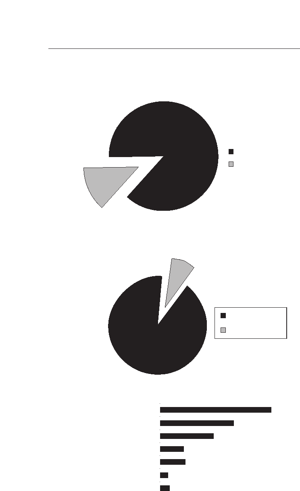
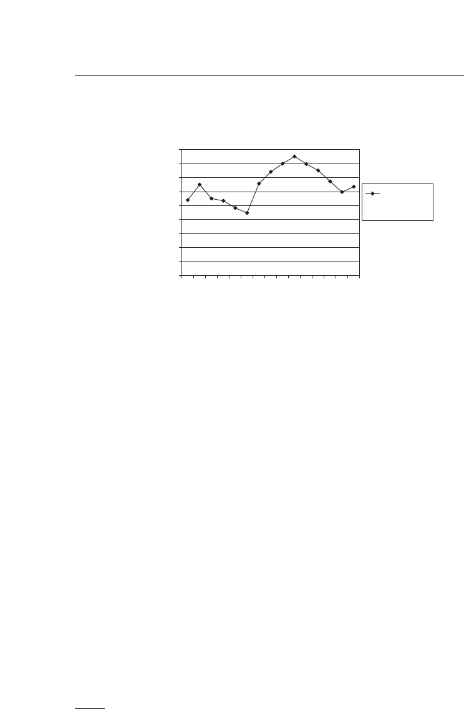
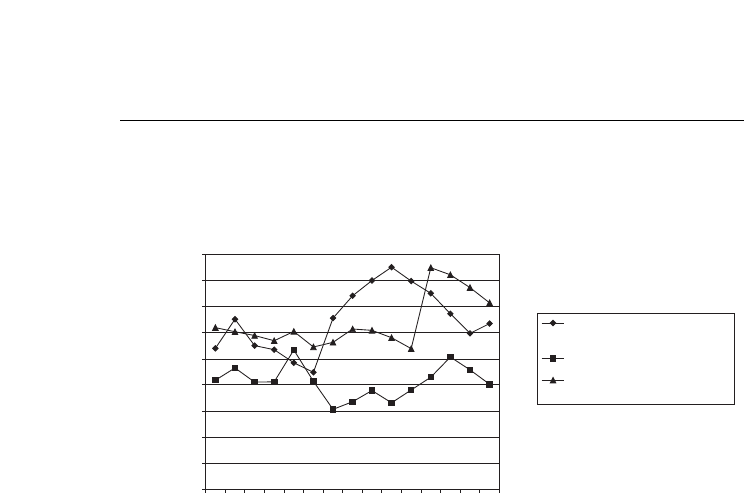
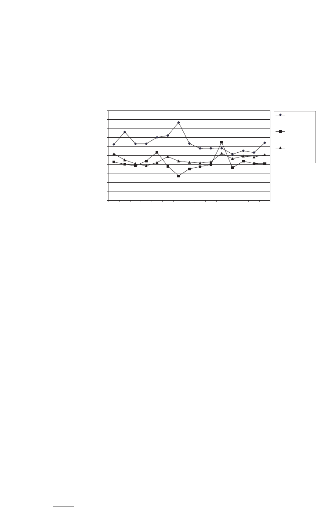
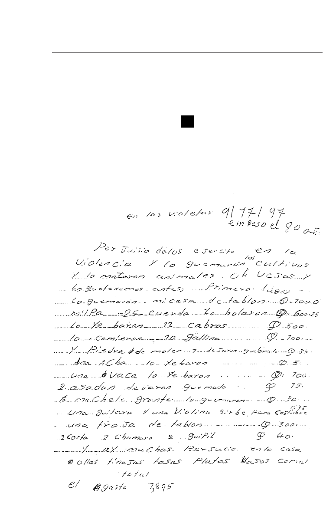
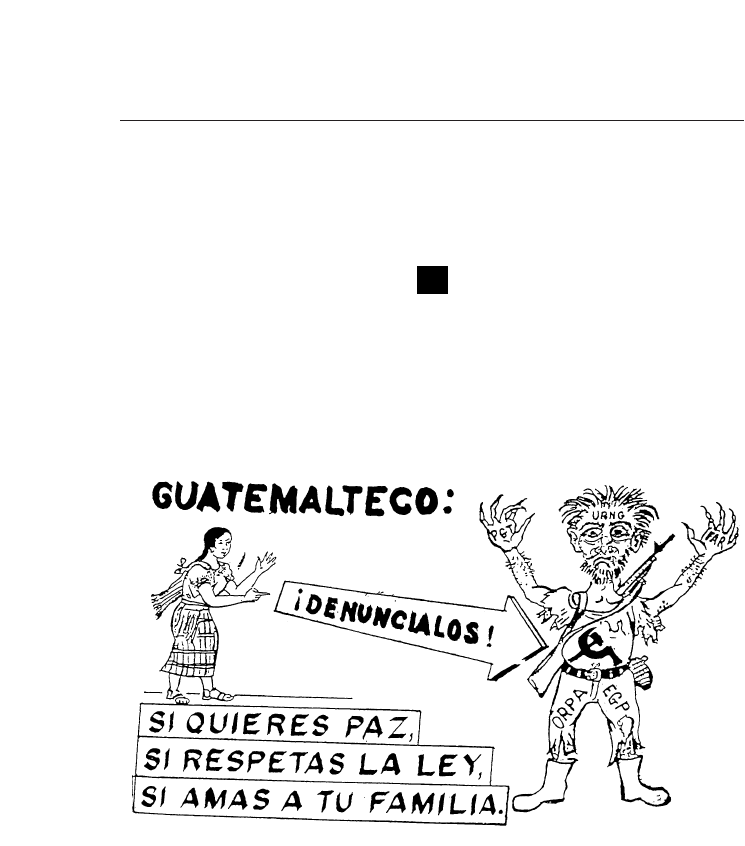
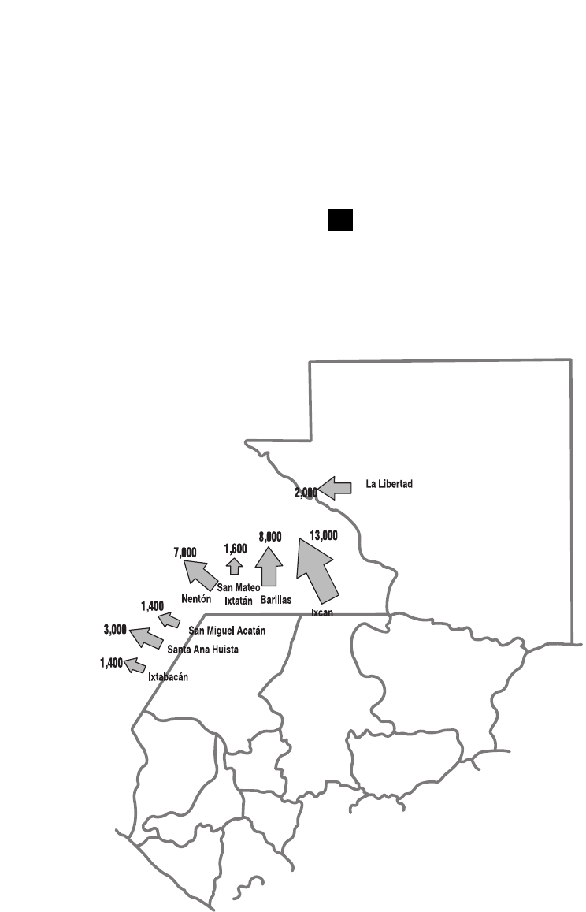
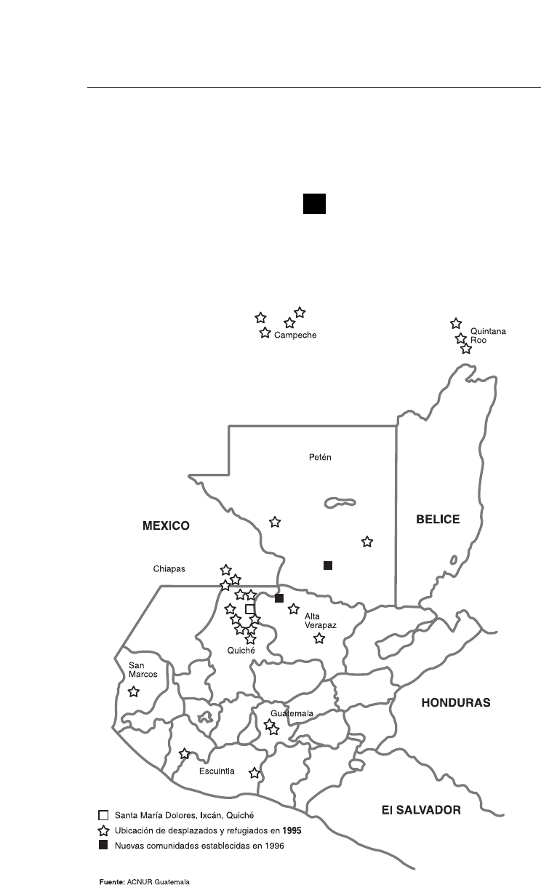
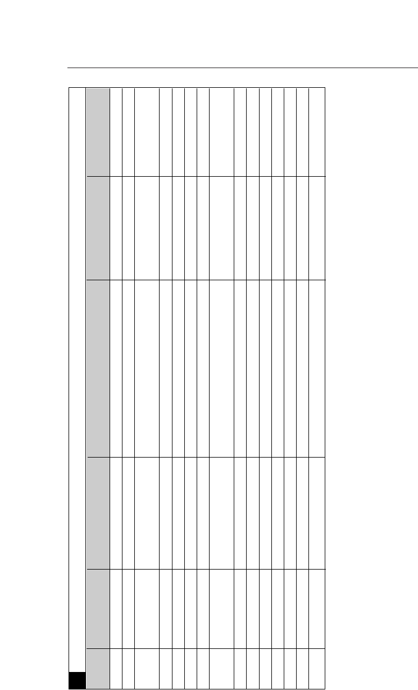
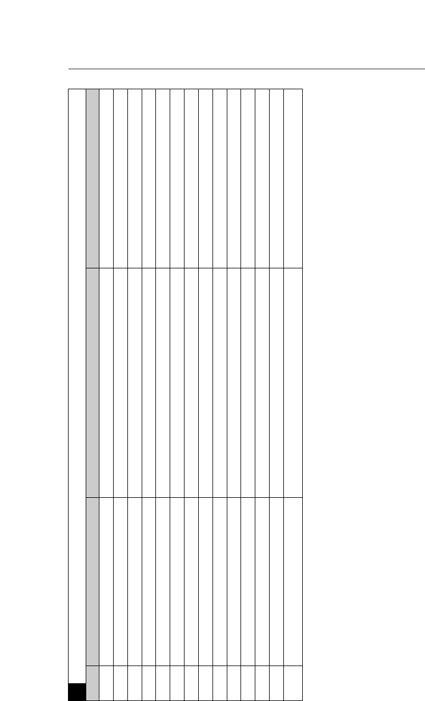

CAPÍTULO TERCERO:
C
ONSECUENCIAS Y EFECTOS
DE LA VIOLENCIA
11
I. Introducción 11
II. El terror y sus secuelas 14
Terror 15
Las secuelas de la tortura
y de la violación sexual 44
III. Debilitamiento de la
institucionalidad estatal
60
Impunidad 60
Militarización 73
IV. La ruptura del tejido social 86
Organización social 87
Desplazamiento y refugio 119
Comunidades del pueblo maya 163
Niñez 191
V. Los costos económicos 203
Índice
VI. Afrontando la violencia 228
Movimiento pro derechos humanos
y lucha contra la impunidad 229
El movimiento indígena 248
APÉNDICES
1. Lista de pérdidas materiales
de un declarante de la CEH 257
2. Volante del Ejército dirigido a desplazados 258
3. Municipios de procedencia de 1,000
o más refugiados asistidos por ACNUR
y COMAR (1981-1984) 259
4. Dispersión de la comunidad Santa María
Dolores a raíz de la violencia 260
5. Tierras nacionales ocupadas por nuevos
posesionarios como consecuencia del
desplazamiento 261
6. Estimaciones del retiro de fuerza
de trabajo como consecuencia
del enfrentamiento armado interno
(1980-1989) 262
7. Destrucción y daños a las cooperativas 266
8. Destrucción y daños a fincas (1978-1994) 269
9. Infraestructura destruida (1981-1995) 272
10. Registros civiles destruidos por causa
del enfrentamiento armado interno 275
11. Exhumaciones de víctimas del
enfrentamiento armado interno 276

I. INTRODUCCIÓN
“De la muerte proviene y viene la vida”
Popol Wuj
3883.
Analizar las consecuencias del enfrentamiento armado implica
adentrarse en las múltiples tragedias de todo este período: la pérdida de
tantos hombres, mujeres y niños, y de sus potencialidades y sueños; el em-
pobrecimiento del país en su conjunto, y de las comunidades mayas en es-
pecial; el hundimiento de la institucionalidad de un país democrático; y la
ruptura de las normas de convivencia y de la vida misma. Todos estos efec-
tos plantean una interrogante fundamental para la construcción y la con-
solidación de la paz: ¿Cuáles son los impactos del enfrentamiento en la so-
ciedad y las personas, comunidades e instituciones que la constituyen?
3884.
Durante todo el proceso de investigación y análisis la CEH se en-
contró frente a varias de las secuelas de fondo y de largo alcance del enfren-
tamiento armado. Algunas de ellas influyeron en la dinámica de investiga-
ción de la CEH: el terror funcionaba como una barrera invisible, aunque
tangible, que inhibía la presentación de casos o provocaba silencios y va-
cíos en los testimonios; el desplazamiento de miles de personas que ya no
pudieron regresar a sus comunidades y cuya ausencia complicó la recons-
trucción del relato integral de los acontecimientos; y la falta en muchas re-
giones, tanto urbanas como rurales, de redes de organización social que fa-
cilitaran el acceso a las comunidades e individuos afectados.
3885.
El análisis de las consecuencias exigió una lectura complementaria
de los testimonios, ya no para documentar las violaciones, sino para cap-
tar el sentido más humano de las vivencias contadas, así como para deter-
minar las secuelas psicosociales, culturales, políticas y económicas. Esta fue
una labor especialmente compleja, ya que la mayoría de los testimonios
terminaron con el relato de la muerte, desaparición u otro tipo de viola-
ción que sufrió la persona. Por ejemplo, si se trataba de un dirigente estu-
diantil ejecutado arbitrariamente, muchas veces el declarante no sabía o no
contaba qué había pasado con la organización a resultas de la pérdida de
su líder. O se pudieron documentar con mucho detalle las circunstancias
Capítulo tercero:
Consecuencias y efectos
de la violencia

de una masacre en cierta comunidad maya, aunque más difícil resultase
que los declarantes profundizaran en los efectos que ésta generó en la vida
comunitaria o en su cultura. En general, por el paso del tiempo y los me-
canismos naturales de la memoria, los testimonios tendían a enfatizar los
hechos profundamente traumatizantes más que las secuelas, el horror de
un momento o período concretos, más que los aspectos posteriores.
3886.
Para complementar los testimonios se han utilizado diversas fuen-
tes propias de la CEH, poniendo énfasis en las entrevistas con testigos cla-
ves, quienes muchas veces aportaron reflexiones importantes sobre las se-
cuelas del enfrentamiento, así como los informes regionales de las oficinas
de campo de la CEH, documentos que por lo general incluyen elementos
más interpretativos y abundante material sobre los procesos experimenta-
dos en las comunidades donde se llevaron a cabo las investigaciones. Asi-
mismo se ha podido contar con un rico acervo de fuentes documentales
que tratan sobre las problemáticas analizadas en este capítulo y que se han
utilizado principalmente para la descripción y cuantificación de ciertos fe-
nómenos, así como para contrastar las conclusiones a que permitían llegar
las propias pesquisas de la CEH.
3887.
Durante la investigación emergieron temas que se repetían una y
otra vez: el terror y los traumas que dejó el enfrentamiento armado, el de-
bilitamiento de la institucionalidad del país, la ruptura del tejido social y
las pérdidas materiales. Representan las consecuencias más generales y pro-
fundas que provocó este enfrentamiento tan prolongado y sangriento. Asi-
mismo presentan una parte importante de la problemática de fondo, más
allá de los problemas estructurales que dieron lugar al enfrentamiento, que
la sociedad tendrá que superar para reconstruirse, no sólo en lo material y
político, sino también en lo moral y espiritual. También se hizo patente
que en medio de la destrucción y la ruptura, tuvieron lugar, a pesar de to-
do, significativas experiencias de regeneración y construcción, de un es-
fuerzo constante, especialmente significativo entre las personas más afecta-
das, para reafirmar la vida, la dignidad, la identidad y la solidaridad.
3888.
La estructura del capítulo sigue estos temas. Principia con el te-
rror, que se entiende como un proceso y un clima de miedo extremo pla-
neados y ejecutados por el Estado —y aprovechado por otros sectores de
poder— que se constituye en el elemento central de su estrategia para si-
lenciar cualquier oposición real o potencial, como se demostró en el capí-
tulo anterior. A partir de los medios específicos que fueron utilizados pa-
ra generar este contexto, se analizan en particular sus efectos más perdu-
rables en la sociedad: el duelo alterado de miles de personas que perdie-
ron a seres queridos y que hasta la fecha no saben dónde están sus restos;
la pasividad y la apatía frente a la participación política estimulada por la
permanente criminalización o estigmatización de las víctimas así como la
indiferencia frente a los crímenes políticos; el sentimiento de impotencia
12

y escepticismo frente al muro de hierro de la impunidad que ha protegi-
do a los victimarios; la inducción en la población civil de la complicidad
en crímenes contra sus vecinos, en especial a través de las PAC o de la sim-
ple complicidad del silencio.
3889.
En esta sección se analizan también los efectos destructivos del ac-
cionar violento de los grupos guerrilleros, sobre todo en las comunidades
rurales a principios de los ochenta. Se analizan en particular cómo las eje-
cuciones públicas de supuestos enemigos y otras acciones de crueldad ex-
trema en ciertos lugares contribuyeron al clima de terror imperante y a
profundizar en la población los sentimientos de arbitrariedad y vulnerabi-
lidad. A la vez se recogen los sentimientos de abandono de la población
por la guerrilla y de inmovilidad, que son reflejados en los testimonios re-
cabados en importantes regiones rurales del país y que forman parte del
cuadro de secuelas del terror.
3890.
La práctica sistemática de la tortura y la violación sexual integra-
ron igualmente ese cuadro de terror. Por tal motivo, esta primera sección
termina con un breve análisis de algunas de las secuelas de la tortura y la
violación sexual basado fundamentalmente en los testimonios de los sobre-
vivientes recogidos por la CEH. Sus palabras aportan múltiples referencias
a las secuelas que entrañaron para ellos y sus familias, así como elementos
de reflexión sobre las consecuencias para la sociedad en general.
3891.
La segunda sección se centra en las consecuencias institucionales
de la impunidad y la militarización, sobre todo para el funcionamiento de
un Estado democrático de Derecho y para las relaciones de los ciudadanos
con estas instituciones. Se parte de un breve examen de la participación del
sistema de justicia en el enfrentamiento armado, la profundización de la
impunidad durante este período y la poca credibilidad que inspiran en la
ciudadanía los mecanismos de la administración de justicia como secuela
de lo anterior. Asimismo se hace un análisis de la militarización como in-
vasión de espacios institucionales y valorativos propios de los civiles en una
democracia, lo que ha debilitado la institucionalidad y agudizado los ras-
gos autoritarios de la sociedad.
3892.
En la tercera sección del capítulo se analiza la ruptura del tejido so-
cial, entendido éste como la profunda vulneración de la vida comunitaria,
de las relaciones sociales y de los medios culturales e institucionales que re-
gulan la convivencia y otorgan contenido a la identidad. Esta ruptura con-
lleva múltiples pérdidas e implica la desestructuración de los espacios e ins-
tancias organizadas para la participación a diversos niveles, así como la dis-
locación de la vida familiar.
3893.
En esta sección se examina el proceso de debilitamiento y fragmen-
tación de las organizaciones sociales y políticas, fenómeno que ha afectado
tanto los espacios urbanos como los rurales. Luego se ha dedicado un es-
13

pacio extenso al desplazamiento y sus secuelas, en parte por la magnitud
del fenómeno y en parte porque encarna y engloba todas las facetas de la
ruptura: de las familias, comunidades y organizaciones, de los tiempos y
formas de la vida cotidiana, así como de la relación ancestral con un en-
torno específico que es un elemento fundamental en la cultura maya.
3894.
En esta sección también se analizan las formas concretas de vulne-
ración que sufrieron las comunidades mayas, centrando la atención en los
efectos que éstas tuvieron sobre las relaciones y estructuras sociales, políti-
cas y jurídicas autóctonas, así como en algunos aspectos más simbólicos de
la cultura. Por último, como parte integral de la ruptura del tejido social
se consideran las consecuencias del enfrentamiento armado para la niñez,
resaltando los aspectos que se desprenden de haber sido testigos de hechos
atroces que violentaron valores humanos elementales y de la orfandad que
implicó la vulneración del tejido familiar.
3895.
En la cuarta sección del capítulo se documentan los costos econó-
micos que para el país impuso el enfrentamiento durante sus fases más
cruentas. Se evalúan no sólo los que se desprenden de la destrucción ma-
terial directa o del ensanchamiento de los gastos militares, sino también los
que se originaron con la pérdida de decenas de miles de vidas productivas
por muerte, desaparición o desplazamiento, así como de la pérdida de años
completos de productividad a causa de las actividades obligadas en las PAC
o por el reclutamiento a las filas del Ejército o de la guerrilla. Asimismo se
valora la pérdida de personas capacitadas y del tejido comunitario y orga-
nizacional, es decir, del capital humano y social que también son factores
integrales del bienestar económico de cualquier país. Finalmente se anali-
za las secuelas macroeconómicas de la crisis bélica.
3896.
La quinta sección consiste en un breve recuento de algunos de los
mecanismos que fueron utilizados por la población para afrontar el desga-
rramiento de la destrucción y el terror para asegurar como mínimo la so-
brevivencia física, y en algunas comunidades mayas en ciertos casos, para
asegurar la continuidad de las mismas. Se documenta el surgimiento de
dos importantes movimientos sociales —el movimiento pro derechos hu-
manos y contra la impunidad y el movimiento maya— que han sido acto-
res centrales en el rescate del valor de la vida, la regeneración del tejido so-
cial y la construcción de nuevas relaciones entre los diferentes pueblos que
conviven en Guatemala.
II. EL TERROR Y SUS SECUELAS
3897.
Los miles de muertos, desaparecidos, torturados y desarraigados, y
los cientos de comunidades mayas borradas del mapa durante el enfrenta-
14
miento armado han dejado huellas imborrables en las mentes y los corazo-
nes de los guatemaltecos. Sus manifestaciones difieren según la adscripción
étnica, extracción social, posición económica, género, edad, lugar de resi-
dencia, filiación política o religión de personas y grupos sociales. Miedo,
susto, tristeza, depresión, enfermedades somáticas y psicosomáticas, duelo
alterado, desconfianza, mutismo, inhibición e indefensión. Así otras expre-
siones del sufrimiento: alcoholismo, pesadillas recurrentes, graves enferme-
dades mentales, apatía y suicidios, sentimientos de cólera y soledad; son al-
gunas de las secuelas más frecuentemente expuestas por las personas entre-
vistadas por la CEH.
1
Estos permiten afirmar que la violencia no sólo for-
mó parte de la dinámica propia del enfrentamiento entre dos fuerzas, sino
que también convirtió a la población en la principal víctima del mismo.
3898.
Como quedó demostrado en el capítulo anterior, a lo largo del en-
frentamiento armado el Ejército aplicó una estrategia general y sistemática
estructurada para producir y mantener a la población en un permanente
estado de terror. Esta estrategia funcionó como el eje de sus operaciones,
tanto en las directamente militares como en las operaciones psicológicas y
en las llamadas de desarrollo. Asimismo los movimientos guerrilleros co-
metieron hechos violentos, de crueldad extrema que aterrorizaron a la po-
blación, en la que provocaron secuelas muy graves. .
Terror
3899.
El terror se desarrolló en Guatemala a través de un proceso cuyos
momentos más intensos correspondieron a los períodos de máxima violen-
cia y cuyos epicentros se ubicaron en los escenarios de mayor represión. Sin
embargo el terror no se redujo a una sucesión de hechos violentos o de
operaciones militares, ni fueron éstos los únicos medios empleados para
crearlo y mantenerlo. Más bien el terror es un proceso que se genera espe-
cialmente a través de sus manifestaciones y secuelas sociales. Por esta razón
el terror no desaparece automáticamente cuando los niveles de violencia
descienden, sino que tiene efectos acumulativos y perdurables, los cuales
exigen tiempo, esfuerzo y experiencias de nuevo tipo para superarlos.
3900.
Tampoco debe entenderse que todos los guatemaltecos hayan vivi-
do un mismo grado de terror. Ciertamente entre los sectores y en los espa-
cios geográficos más afectados por la violencia política, se vivió mayor in-
15
1 Por la naturaleza de su mandato, la metodología de la CEH se centró en la investigación y análi-
sis de las violaciones de los derechos humanos y los hechos de violencia. No abarcó la investiga-
ción sistemática sobre las consecuencias psicológicas individuales provocadas por la violencia po-
lítica. No obstante, muchas de las mismas fueron expresadas en los testimonios recogidos o mani-
festadas en la interacción entre declarante e investigador. Se considera que es una problemática se-
ria que amerita una mayor atención en el futuro, así como esfuerzos para darle una respuesta opor-
tuna a las necesidades detectadas. Hasta ahora, el análisis más detallado sobre este fenómeno en el
país se encuentra en Guatemala: nunca más. Informe del Proyecto Interdiocesano de Recuperación
de la Memoria Histórica (REMHI). Tomo I, Guatemala, 1998.

tensidad el temor extremo que es un elemento importante del terror. Pero
aun en los sectores y lugares menos involucrados directamente en el en-
frentamiento armado, se hicieron presentes las facetas más sutiles del te-
rror, como la pasividad y el conformismo, el sentimiento de impotencia y
la decisión a veces inconsciente de no ver, no escuchar, ni hablar de los he-
chos atroces que estremecían el país. Así, las secuelas sociales del terror to-
davía se hacen sentir en los más diversos ámbitos de la sociedad, especial-
mente por el trastocamiento de los valores comunitarios que fundamentan
la convivencia social:
“Las consecuencias que se dio de los enfrentamientos armados es que
ya no tenemos confianza, la gente como que se puso más mala, ya no
respeta. La gente en la época de la patrulla, cómo le gustó manejar el
arma, empezaron a hacer cosas incorrectas. Antes de la violencia vi-
víamos más unidos, nos comunicábamos más. Nos uníamos para ha-
cer trabajo en la comunidad …, ahora es difícil, ya no nos respeta-
mos, ya es difícil hacer una faena, mucho divisionismo, ya no hay
amistad...”
2
Terrorismo de Estado
3901.
A lo largo de su historia el Estado guatemalteco ha mostrado su in-
capacidad para generar un consenso social amplio que pudiera sostenerlo
y afirmar su legitimidad democrática. Esta debilidad que nace de su carác-
ter excluyente dio lugar a que, frente a los conflictos políticos y las con-
frontaciones sociales, el Estado recurriera cada vez más a medidas de fuer-
za y dominación física para inhibir la capacidad de oposición o de resisten-
cia. Incidió, a su vez, la definición sumamente amplia del enemigo inter-
no que fue adoptada por el Estado.
3
3902.
Hay indicios para sostener que la violencia institucional se incre-
mentaba en los momentos en que los grupos dominantes perdían su capa-
cidad política para controlar al conjunto de la sociedad.
4
En este sentido,
aunque el Estado fue el articulador de las políticas y acciones que genera-
ron el terror, otros sectores que compartían la misma visión del enemigo
interno, fomentaron o coadyuvaron al proceso. Este tipo de participación
fue más notoria con respecto a los escuadrones de la muerte, en especial en
los años sesenta y luego en las décadas de los setenta y ochenta, a través de
ciertas actividades represivas antisindicales.
5
16
2 Testigo CEH. Chiché, Quiché.
3 Véase el capítulo primero.
4 Véase, por ejemplo, Carlos Figueroa Ibarra, El recurso del miedo: Ensayo sobre el Estado y el terror
en Guatemala, San José Costa Rica, Editorial Universitaria Centroamericana (EDUCA), 1991.
5 Véase capítulo segundo sobre los escuadrones de la muerte para actividades represivas antisindicales.
CI 67. 1977, 1980. Ciudad de Guatemala, Guatemala.
3903.
La coincidencia de tres hechos fundamentales permite situar en
1966 el inicio del terrorismo del Estado.
6
En primer lugar, la desaparición
forzada por fuerzas del Estado de por lo menos 32 dirigentes de izquier-
da en marzo hizo evidente la decisión de otorgarle creciente importancia
a los mecanismos subterráneos e ilegales en la represión oficial destinada
a controlar y aniquilar a los opositores.
7
Asimismo, en el segundo semes-
tre del año, con el Gobierno civil de Julio César Méndez Montenegro, se
inauguró una amplia campaña antiguerrillera que respondía a la concep-
ción de guerra contrainsurgente impulsada por los Estados Unidos, y en
las zonas de conflicto la violencia se volvió indiscriminada, aspecto im-
portante para generar el terror.
8
Por último, en junio surgió a la luz públi-
ca el Movimiento Anticomunista Nacional Organizado (Mano Blanca),
el primero de los más de veinte escuadrones de la muerte que aparecieron
a partir de ese año. Por su naturaleza secreta y por la impunidad con la
que operaban, fueron un instrumento adjunto al Estado, propicio para
alimentar el clima de terror.
9
3904.
La institucionalización de la violencia desde el Estado contra sus
opositores —supuestos o reales— se combinó con iniciativas de guerra psi-
cológica, verdadero vehículo diseminador del terror. Más allá de la elimi-
nación física, los objetivos de las acciones se ampliaron hasta incluir la crea-
ción de efectos inhibitorios en el conjunto de la sociedad.
10
Mediante la
ejecución de diversos tipos de operaciones y la instrumentación de medios
para propagar el terror, el Estado buscó aniquilar en el seno de la pobla-
ción la posibilidad y la voluntad de transformación en el presente e inclu-
so en el futuro. Al actuar así se pretendía dejar claro que, con independen-
cia de sus acciones e intenciones, el orden establecido era algo que no se
podía cambiar y que cualquier intento orientado en ese sentido sólo podía
implicar la muerte: “Se quería que la población sintiera la impotencia, la in-
defensión en la que se encontraba”.
11
17
6 Varios autores sobre el tema plantean que en Guatemala la violencia institucional o el terror de Es-
tado empieza en 1966. Véase por ejemplo: Gabriel Aguilera Peralta, Terror and Violence as Wea-
pons of Counterinsurgency in Guatemala, Latin American Perspectives, Vol. VII, Nos. 2 and 3,
Spring-Summer 1980; Centro de Investigación y Documentación Centroamericana (CIDCA),
Violencia y contraviolencia: Desarrollo histórico de la violencia institucional en Guatemala, Guatema-
la, Editorial Universitaria, 1980; y Carlos Figueroa Ibarra, ob.cit.
7 CI 68. 1966. Ciudad de Guatemala, Guatemala.
8 Aguilera Peralta, Terror and Violence…, ob.cit., pg. 98.
9 Algunos de estos grupos fueron comandos especiales de las fuerzas de seguridad del Estado, otras
organizaciones estaban constituidas por elementos radicales de derecha que operaban con cierto
grado de autonomía. En cualquier caso, sus operaciones permitieron que el Estado construyera
una explicación de la violencia que lo exculpara y que se mantuvo con ciertas modificaciones du-
rante los siguientes quince años: la violencia era el resultado de las acciones de grupos extremistas
de izquierda y derecha que operaban fuera de la ley. Véase apartado sobre escuadrones de la muer-
te del capítulo segundo, y "El proceso del terror en Guatemala", documento inédito, Colección
McClintock, MC 2. 32, pg. 4.
10 “El proceso del terror en Guatemala”, ob.cit., pg. 8.
11 Testigo CEH. Marzo, 1982. Sibinal, San Marcos.

3905.
Aun cuando en ciertos años disminuyeron los niveles de represión
(véase estadísticas y gráficos del capítulo II), a partir de este período los
mecanismos para crear el terror estaban ya asentados, y los efectos empe-
zaban a repercutir en la población. Aunque ciertos autores han escrito so-
bre las “olas de terror” en el país,
12
el propósito aquí es más bien detallar y
analizar los elementos de las secuelas del terror que todavía se recogían en
los testimonios recibidos durante 1997 y 1998 por la CEH.
3906.
A lo largo del período del mandato de la CEH, los casos documen-
tados revelan acciones punitivas selectivas y masivas, clandestinas y abier-
tas, perpetradas por el Estado en contra de individuos, grupos y comuni-
dades, adaptadas al carácter peculiar de las diferentes regiones y sectores en
las diversas etapas del enfrentamiento armado. En todos los casos se pre-
tendía lograr el máximo efecto psicológico. Muchos capturados aparecie-
ron con señales de tortura que superaban lo imaginable y muchos cuerpos
fueron mutilados aun después de la muerte. Asimismo, durante la prime-
ra mitad de la década de los ochenta, sobre todo, se realizaron torturas an-
te la comunidad, contra vecinos acusados de actividades insurgentes, o se
practicaban delante de familiares de la víctima, a los que se forzaba a pre-
senciarlas a fin de provocar una traumatización extrema y de incrementar
el efecto aterrorizante en la población.
13
No es gratuito entonces que el
miedo fuera el sentimiento expresado con mayor frecuencia en los testimo-
nios recogidos por la CEH.
“La Inteligencia de Gobierno comenzó a agarrar líderes religiosos. Los
que sobrevivían contaban que la tortura era muy dura, llegaban sin
dedos, sin orejas...”
14
“Lo torturaron, le sacaron el corazón, lo degollaron, estaba embroca-
do en un árbol con el pantalón abajo, los zopes se lo estaban comien-
do … junto a él había otros dos cadáveres que no pudieron ser iden-
tificados porque los zopes se los habían comido”.
15
“Cuando el Ejército entraba en esos tiempos a nosotros nos agarraba
como si que es un escalofrío, pero eso sí que de veras temblábamos y
daba ganas, no sé si de vomitar, y a veces hasta nos mareamos pues,
entonces, por ese gran temor...”
16
18
12 Véase referencias citadas en la nota 6.
13 CI 43. 1982, 1988. Quiché.
CI 53. 1982. Quiché.
14 Testigo CEH. C 9241. 1981. San Cristóbal Verapaz, Alta Verapaz.
15 Testigo CEH. (T.C. 312). Zopes son aves de rapiña.
16 Testigo CEH. Sobreviviente de masacre.
3907.
Esta violencia extrema pone en evidencia que el terrorismo de Es-
tado no se conformó con la simple eliminación física de sus presuntos opo-
sitores. También se proponía dejar claro que quienes participaban en acti-
vidades reivindicativas, e incluso sus familiares, corrían el riesgo de perder
la vida en medio de las mayores atrocidades. Ante el terror que la represión
inculcaba en los sobrevivientes, muchos optaron por callar o por la adap-
tación, el mimetismo o la sumisión. La violencia estatal en sus diferentes
manifestaciones logró, en gran medida, su objetivo disuasorio ejemplar.
“Nadie se ha explicado por qué lo mataron. Pero hay otro objetivo con
esto, el terror en sí, como método contrainsurgente. Mucha gente di-
ría, pues matan a Felipe Mendizábal, ¿a quién no pueden matar? Y
eso da lugar a sembrar el terror que todavía existe en Guatemala”.
17
“Las personas de la población se quedaron con miedo, atrancaban
bien sus puertas, se notaba el pánico que existía, ya no había mayor
comunicación entre las personas”.
18
“En la familia provocó una especie de amnesia familiar, para no re-
cordar las fechas, los años, casi que entre ellos mismos no se hablaban,
únicamente lo más indispensable, todo se volvió una monotonía, es-
perando cuándo volvían los hombres, preguntándose quién sería la
próxima víctima”.
19
3908.
Así fue como los efectos del terrorismo de Estado calaron en los
individuos y en la sociedad. De esta forma, el Estado logró estructurar
una esfera de relaciones que abarcaba en mayor o menor medida a toda la
sociedad controlada por el proceso de terror. Recuperaba su capacidad de
controlar y dominar a la sociedad, aniquilando la posibilidad y la volun-
tad de transformación en la población y creando una especie de trauma
psicosocial.
20
“Nos está reflejando en la conciencia nuestra, hay una apatía, un des-
cuido … yo diría, indolencia, hay una indolencia generalizada, pro-
ducto de esa represión”.
21
19
17 Testigo (ex funcionario de la USAC) CEH. 1980.
18 Testigo CEH. C 7311. Enero, 1981. San Pedro Sacatepéquez, San Marcos.
19 Testigo CEH. C 7308. Agosto, 1980. San Pedro Sacatepéquez, San Marcos.
20 Ignacio Martín-Baró acuñó el concepto del trauma psicosocial para representar algunos efectos de
la guerra en El Salvador, describiendo la cristalización o materialización en las personas de las re-
laciones sociales de guerra caracterizada por "la polarización social, la mentira institucionalizada y
la militarización de la vida social". Véase, "La violencia política y la guerra como causas del trau-
ma psicosocial en El Salvador", en Psicología social de la guerra, selección e introducción de Igna-
cio Martín-Baró, UCA editores, San Salvador, 1990. pg. 80.
21 Testigo (ex funcionario de la USAC) CEH. (T.C.3).

“Hay una desintegración, desintegración en todo sentido, desintegra-
ción de la estructura social, y los principios éticos ... Hay una descon-
fianza tremenda, la gente ya no tiene mucha perspectiva en el futuro.
Conozco aldeas, por ejemplo donde la gente se entretenía en el depor-
te ... Ahora ni deporte hay. El único deporte es tomar...”
22
Los efectos perdurables
3909.
El terrorismo de Estado provocó múltiples secuelas que perduran
en la población. Una de las más palpables, que los declarantes hacen cons-
tar repetidamente, es el dolor por no haber enterrado y vivido el duelo de
sus muertos y desaparecidos, o por no saber nada de ellos. A la vez se re-
coge de los testimonios la perpetuación de otros efectos que fueron propi-
ciados por la propia conducta del Estado. La sensación de impotencia,
miedo y conformismo se ha mantenido en la población frente a la maqui-
naria represiva y se ha fortalecido mediante la impunidad, la criminaliza-
ción de las víctimas, la implicación forzada de la gente en las atrocidades y
el silenciamiento. Estos mecanismos se entrelazaron y provocaron una al-
teración social y moral en diferentes planos.
El duelo alterado
3910.
Durante el enfrentamiento armado fueron múltiples las circuns-
tancias que impidieron que miles de personas pudieran cumplir los ritos
que en tiempos normales acompañan la muerte y entierro de una persona.
La desaparición forzada fue la práctica más perniciosa en este sentido, ya
que la incertidumbre, el no poder saber qué pasó, ni siquiera concedía la
paz relativa de saber que la persona ya no sufría más en vida.
“Lo peor de la desaparición es la incertidumbre, uno no sabe si el fa-
miliar está vivo o muerto o qué le están haciendo”.
23
“Mi mamá siempre cree que mi papá está vivo. Nosotros creemos que
no. Si encontráramos sus restos, esto aliviaría nuestra pena”.
24
3911.
El clima de terror, la presencia militar y otras circunstancias que ro-
deaban las masacres, así como la huida y persecución de los sobrevivientes
por la montaña, hacían inviable en muchos casos el entierro de los muer-
tos, en especial en los años ochenta. La muerte violenta o por desplaza-
miento, así como la imposibilidad de un entierro respetuoso soterraron la
dignidad de las víctimas, sobre todo si se considera que, en muchos casos,
20
22 Testigo (kaqchikel, sobreviviente de la violencia, misionero) CEH. (T.C. 82).
23 Testigo (fundadora del GAM) CEH. (T.C.382).
24 Testigo CEH. C 7149. Septiembre, 1983. La Reforma, San Marcos.
ni siquiera los familiares mismos recuerdan el lugar donde quedaron los ca-
dáveres. En numerosos testimonios se recogió el dolor particular que en-
trañaba esta situación, cuando los declarantes resaltaban que sus parientes,
vecinos o amigos habían sido devorados por animales de rapiña y perros.
“Se miraba todo, los perros estaban comiendo a las gentes, salían [de
la tierra], las trenzas de las mujeres, un perro llevaba en su boca el
piecito de un niño, habían zopes comiendo los cadáveres”.
25
“A los dos días regresamos en el lugar donde habían quedado muertas
las cuatro personas, encontrándolas a cada una con parte de sus cuer-
pos comido por animales. Con ayuda de otros vecinos abrimos hoyos
en ese mismo lugar y las enterramos. Recuerdo muy bien en donde las
enterramos pero difícilmente están allí, en vista de que no contába-
mos con suficiente tiempo … Teníamos miedo porque en cualquier
momento los soldados podían aparecer y en el suelo había muchas pie-
dras; todo eso contribuyó a que los hoyos no fueran profundos. Yo pien-
so que los coyotes y perros lograron sacarlos y se los comieron…”
26
3912.
Así, la imposibilidad de preparar a los muertos según las costum-
bres de las comunidades mayas o conforme los credos religiosos de las fa-
milias ladinas, o de enterrarlos y llorarlos, pesa abrumadoramente en la
conciencia de los parientes y vecinos e induce a menudo a experimentar
hondos sentimientos de culpa. El duelo por los muertos fluye como un ci-
clo sin cerrar en la vida de los seres humanos. Persiste entonces, como una
de las secuelas prolongadas del terror, una situación que se conoce como
“el duelo alterado” o “suspendido”.
27
“Nos costó mucho porque Francisco murió en el bombardeo y, por sa-
lir corriendo, no lo pudimos llorar bien”.
28
3913.
Los siguientes dos casos, recogidos por investigadores de la CEH,
reflejan el profundo dolor que origina esta situación:
En el primer caso la declarante salió en busca de su marido, con la idea
de que todavía podía encontrarlo vivo; cuando llegó al lugar de los hechos,
21
25 Testigo CEH. CI 51. Marzo, 1982. San Martín Jilotepeque, Chimaltenango.
26 Testigo CEH. C 2756. 1982. Zacualpa, Quiché.
27 El psicoanalista Argentino Fernando Ulloa habla de una problemática doble ("double bind") que
caracteriza al duelo suspendido o congelado. El sobreviviente se siente atrapado entre un senti-
miento de esperanza de que su ser querido esté vivo y que regrese y el deseo de que se haya muer-
to para no sufrir más la tortura u otros daños que se supone estaría viviendo. (Conferencia públi-
ca, Universidad de Buenos Aires, Octubre, 1990).
28 Testigo CEH. C 7157. 1981. Tajumulco, San Marcos.

lo encontró con varios tiros en la cabeza; todo su cuerpo se cubría con la
sangre que aún manaba de su rostro y tenía los ojos casi fuera de sus cuen-
cas. Por miedo a que los soldados regresaran, la declarante dejó el cuerpo
en la carretera. Ella se arrepintió de no haberlo llevado a su casa para ve-
larlo, pero estaba segura de que la hubieran matado si lo intentaba. ¿Y qué
hubiese pasado con sus ocho hijos que la esperaban en casa? Ahora ella tie-
ne mucha pena por no haberlo enterrado y siempre piensa que su espíritu
estará sin descansar debido a que no lo enterraron como debía ser.
29
En el segundo caso la declarante contó que después de que se llevaron
a su esposo esperó días, noches, meses y, sin embargo, él jamás volvió a ca-
sa. ¿Estará él con vida? ¿Estará viejo como ella? ¿Lo habrán asesinado? Es-
tas preguntas siempre la han perseguido, y su dolor es que no tiene respues-
ta, sólo quisiera saber dónde se encuentra el cuerpo de él para darle sepul-
tura como ser humano. Manifiesta que han pasado muchos años (ella aho-
ra tiene 70 años) y que su mente ya no recuerda mucho de lo que ha su-
cedido; que, quizás de tanto llorar, sus lágrimas han lavado su memoria.
30
3914.
Además, la imposibilidad de ritualizar la muerte de un ser querido
niega la posibilidad de resolver el duelo por un proceso de simbolización
de las pérdidas a través de los actos que se comparten tanto en la familia
como en el seno de la comunidad. Así se niega la posibilidad de elaborar
el duelo mediante protocolos de acompañamiento familiar y social y de
compartir los sentimientos de dolor, tristeza y desesperanza propios del ci-
clo de duelo.
“No hemos podido traer los restos de mi hija para enterrarla en el ce-
menterio de la aldea El Naranjo. Mis nietos y yo soñamos el día que
podamos enterrar a mi hija en el cementerio, ya que como cristianos
es nuestro consuelo … Además de lo de mi esposo que ni siquiera sa-
bemos dónde está … Tenemos que vivir pensando y sufriendo por te-
ner que haber dejado los restos de mi hija en el lugar donde la tira-
ron … Todo estas cosas que pasaron me dejaron como en el aire …
Desde entonces me quedé muy mal de mis nervios y tengo muchas pe-
sadillas”.
31
3915.
Para todas las culturas y religiones que coexisten en Guatemala, es
casi inconcebible no dar digna sepultura a los fallecidos; violenta los valo-
res y ofende la dignidad de todos. Para los mayas este fenómeno cobra una
importancia particular por la centralidad en su cultura del vínculo activo
que une a los vivos con los muertos. La imposibilidad de efectuar el ente-
22
29 Testigo (mujer kaqchiquel) CEH. C 434. 1982. Patzún, Chimaltenango.
30 Testigo (mujer kaqchiquel) CEH. C 438. 1982. San Martín Jilotepeque, Chimaltenango.
31 Testigo (viuda ladina) CEH. C 7109. 1984. San Rafael Pie de la Cuesta, San Marcos.

rramiento o la falta de un lugar sagrado donde acudir para cuidar los ne-
xos con los muertos representan entonces una inquietud profunda en mu-
chas comunidades mayas.
“Entonces los fuimos a enterrar, pero a puro escondido a puro con mie-
do porque dicen que el Ejército va a regresar otra vez, porque si al-
guien viene a recoger a esa maldita gente entonces ahí lo vamos a ter-
minar su vida, es que dijeron, entonces mejor con miedo venimos o
con rapidez venimos a enterrarle y ya nos fuimos ... Entonces la auto-
ridad quiere algunas autoridades para venir a sacarlos, para dejarlos
en el cementerio para hacer una oración porque nosotros hemos acos-
tumbrado a que cuando muere alguna de nuestra familias nosotros
utilizamos algunas candelas, algunas velas para dejar pues en el ce-
menterio, entonces ésa es la idea que tiene la familia, entonces sus fa-
miliares, esa pobre gente que se quedó en esa fosa, entonces ellos quie-
ren que ojalá que se trae el resto de huesos para estar en el cementerio
porque nuestra costumbre o nuestra forma de enterrar a los muertos
pues no es, porque somos unos animales que se pueden dejar en algu-
nas partes escondidos”.
32
3916.
En este sentido sigue siendo una llaga abierta los cementerios clan-
destinos y ocultos,
33
y así se percibe el desasosiego que viven muchos gua-
temaltecos por no saber qué pasó ni dónde están sus familiares. Para los pa-
rientes de las víctimas son un recuerdo imborrables de los hechos violen-
tos con que los autores buscaron negar la dignidad de sus seres queridos;
para los mayas es, además, un recuerdo constante de la interrupción o, in-
cluso, de la ruptura de los nexos entre los vivos y los muertos, y de la con-
tinuidad entre las generaciones. Por ende, las exhumaciones son una de las
medidas que con más frecuencia solicitan los declarantes a la CEH a la ma-
nera de reparación. Restañar las heridas particulares del duelo alterado im-
plica la exhumación de estos cementerios, además del esclarecimiento del
paradero de los desaparecidos. Eso dará a los parientes la oportunidad de
reencontrar a sus muertos y honrarlos mediante ceremonias concretas, li-
gadas a la necesidad ética de justicia.
“Queremos saber dónde está. Ni los chuchos
34
se quedan tirados ahí no
más ... Queremos darle cristiana sepultura aunque sea a sus huesitos,
pues otra cosa ya no esperamos nosotros”.
35
23
32 Testigo CEH. C 3318. 1982. Nebaj, Quiché.
33 El término cementerio clandestino se refiere a los lugares donde los victimarios dejaron sepultados
u obligaron a otros a enterrar personas, mientras un cementerio oculto es aquel en el que los pro-
pios familiares o vecinos enterraron a las víctimas.
34 Chuchos son perros.
35 Testigo CEH. C 7316. 1986. Nuevo Progreso, San Marcos.
“Una persona muerta debe estar en el cementerio, porque no fue a un
animal al que mataron. ¿Por qué se nos niega conocer donde está pa-
ra enterrarlo como Dios manda?”
36
La impunidad
3917.
Los efectos perdurables del terror no sólo fueron efecto de los he-
chos atroces; la maquinaria del terror contaba con varios resortes que re-
forzaban su eficacia, entre ellos la impunidad.
37
Al ser cometidas por el Es-
tado, sus agentes u otros ligados a los sectores de poder, las violaciones que-
daron sin castigo y se perpetuó su recurrencia. La ausencia de justicia y la
ostentación de la impunidad crearon la impresión de que ningún delito re-
cibiría su pena, que nada se pagaba, que no había límites para el crímen.
La impunidad fue un elemento clave para ampliar el efecto de la violencia
al no existir ningún recurso efectivo frente a ella. De esa forma inducía a
la indiferencia en la población, inhibiendo el ejercicio de los derechos bá-
sicos de los ciudadanos, especialmente el derecho a la justicia.
“Yo siento que lo más difícil para uno es ver que en Guatemala se ha
cometido tanta injusticia y sin embargo todo queda impune, todo si-
gue igual como fue. El que no se pueda hacer nada. Yo siento que los
asesinos, los represores que han estado en el país siguen muy tranqui-
los y eso es lo más difícil a aceptar...”
38
“Todos en el pueblo de Panzós, todas las aldeas vecinas que han sido
masacradas de Panzós quedaron totalmente atemorizados, no podían
hacer más que lamentar y no pudieron hacer nada más, porque,
¿adónde acudir? Si son las mismas autoridades, las mismas defensoras
del pueblo que han matado a nuestros hermanos, entonces, ¿qué ha-
cer en ese momento?”
39
3918.
Con la institucionalización del terror y la inoperancia de la ley se
extendieron en la sociedad los sentimientos de miedo e impotencia. En ese
contexto se generaron conductas de mera sobrevivencia, cuyas manifesta-
ciones frecuentes eran la pasividad y la apatía, la sumisión y el conformis-
mo. Ante esta situación, la mayoría abandonaba propósitos de transforma-
ción de lo que de antemano asumía como valladar insuperable.
40
24
36 Testigo CEH. C 7315. 1983. Nuevo Progreso, San Marcos.
37 En este apartado la impunidad se analiza con respecto a su funcionalidad para mantener los efec-
tos psicosociales del terror; más adelante, en este capítulo, se verán otras consecuencias de la im-
punidad en la sociedad guatemalteca.
38 Testigo (sobreviviente de la violencia de Escuintla) CEH. (T.C. 194).
39 Testigo CEH. C 1628. Mayo, 1978. Panzós, Alta Verapaz.
40 Carlos Figueroa Ibarra, ob. cit.

“Los comisionados militares comenzaron a propagar el temor en el
municipio, diciendo que los que irían al funeral serían fichados por el
Ejército. Fueron muy pocas las personas que asistieron al funeral sim-
bólico que se realizó en Joyabaj”.
41
“Fue una práctica común del Ejército llegar a las comunidades para
reprimir a los pobladores, a manera de inhibirles su participación en
cualquier actividad, por lo que ellos se encontraban en total aisla-
miento. Por lo tanto no había autoridad que pudiera hacer valer con
firmeza su poder como tal”.
42
3919.
Asimismo, era peligroso externar opiniones sobre lo que pasaba, ya
que el simple hecho de hacerlo podía provocar acciones represivas. Así se
creaba cierta resignación ante la represión, lo cual suponía también que los
sentimientos de cólera, injusticia o humillación relacionados con los he-
chos eran callados y guardados en lo más íntimo. Sin embargo estos senti-
mientos, aunque escondidos, permanecen presentes en muchas víctimas y
sus familiares, sobre todo en aquellas que fueron forzadas a presenciar los
hechos sin poder hacer nada. La persistencia de la impunidad y la injusti-
cia significa que estos daños continúan marcando a los afectados en el pla-
no individual, familiar, comunitario y nacional.
“Yo pienso que afecta muchísimo, porque realmente te marca toda esa
situación que nos tocó vivir, te acostumbrás a vivir con ello, pero sin
embargo te crea un rencor. Vivís toda la vida con ese rencor adentro.
Y más te afecta porque uno no ha tenido la oportunidad siquiera de
llevar una vida tranquila, aunque tengás todas las cosas materiales,
pero por dentro estás destruido. Eso lo afecta mucho a uno”.
43
“Transformar nuestros fantasmas, nuestros monstruos, los dolores, los
padecimientos, esa gente que se está matando ahora con puro guaro
44
es porque nadie ha procesado su experiencia, los que no han tenido la
dicha de llorar, derramar sus lágrimas y sus llantos que sólo tienen
adentro ... Entonces de ahí tienen que decir las verdades como son. No
es para despertar la venganza, sino para poder saber a quién hay que
perdonar, porque eso es lo que no se sabe”.
45
25
41 Testigo (ex alcalde Joyabaj, Quiché) CEH. (T.C. 30).
42 Testigo CEH. C 7296. Febrero, 1991. Sipacapa, San Marcos.
43 Testigo (víctima menor de edad) CEH. (T.C. 195).
44 Licor.
45 Testigo (sobreviviente de la guerra, ex misionero) CEH. (T.C. 82).

La criminalización de las víctimas
3920.
Durante el enfrentamiento la violencia institucionalizada no sólo
quedó impune sino que fue justificada mediante campañas destinadas a
deslegitimar, criminalizar y culpabilizar a las víctimas. La represión trans-
formó en objetivos “legítimos” a personas, grupos, organizaciones y comu-
nidades enteras, tratando a sus integrantes como “delincuentes subversivos”.
Las acusaciones se dirigieron contra personas que desempeñaban un papel
relevante en las comunidades o contra organizaciones sociales. Este meca-
nismo de criminalización y deslegitimación funcionaba a lo largo del en-
frentamiento armado como un tipo de amenaza latente. El simple hecho
de promover actividades de desarrollo comunitario, de ocupar algún cargo
de representación o de fomentar la toma de conciencia en situaciones de
injusticia fueron algunos de los motivos esgrimidos para reprimir a muchas
personas. Este tipo de deslegitimación es un elemento central en los testi-
monios:
“Eso ya se lo estaba planteando Ríos Montt y lo declaraba al público:
la Universidad es el nido de comunistas, el vivero de los guerrilleros”.
46
“También vinieron a meter en la cabeza de nuestra gente que defen-
der nuestros derechos, que intentar luchar por nuestras vidas era ser
mala gente. No nos dejan levantar cabeza y ahorita, ¿cómo vamos a
recuperarnos?”
47
“En 1970 empezó la palabra campesino, duró cuatro años; al oír esa
palabra la gente se aterrorizaba, era un nombre rojo. En el año 1975
fue la palabra comunista, y si alguien pedía que le pagaran su sueldo
le decían comunista, así pegó esa palabra. En el año 1979 le agrega-
ron la palabra rebelde, a alguien que pidiera por sus derechos, ya era
rebelde. En el año de 1980, si una persona quería organizarse, le de-
cían que era subversivo. En el año 1982 le agregaron la palabra ma’us
aj winq;
48
esa palabra duró hasta 1988. Entonces uno no podía ex-
presarse, porque ya era ma’us aj winq, y llegaba el Ejército y se lo lle-
vaban”.
49
3921.
Quizás quienes experimentaron las consecuencias más dramáticas
de estos señalamientos fueron los habitantes mayas de las áreas rurales, so-
bre todo en el noroccidente del país, donde comunidades enteras fueron
26
46 Testigo (ex funcionario de la USAC) CEH. (T.C.3).
47 Testigo CEH. C 2961. Marzo, 1982. Chiché, Quiché.
48 Vocabulario q´eqchi´ que significa diablo, hombre malo.
49 Testigo (líder comunitario y sindical) CEH. C 9501. 1978. Cobán, Alta Verapaz.

acusadas de formar parte de la guerrilla, lo cual a menudo supuso la muer-
te de todos sus componentes, incluyendo a niños.
“La clasificación era que todos eran guerrilleros, esa era la clasifica-
ción. Aquí la consigna era: guerrillero visto, guerrillero muerto, que
indígena significaba ser guerrillero, era lo mismo, para el Ejército no
había ninguna diferencia”.
50
“Y fuimos a refugiarnos en la montaña, aguantamos sed y hambre,
sin ropa porque quemaron nuestras casas, decían que a defender a no-
sotros iban, pero es falso, sino que a matar iban. Nos decían que so-
mos el diablo. Actualmente escuchamos estas expresiones”.
51
3922.
En amplias regiones del país el traje, las costumbres y los idiomas
mayas fueron estigmatizados por el Ejército. De esta manera se trasladó la
estigmatización hacia algunos de los signos centrales de la cultura y la iden-
tidad. Para protegerse, la gente se vio obligada muchas veces a dejar de ha-
blar su propio idioma o utilizar su traje, y abandonar la práctica de sus ri-
tos. Esto sucedió no sólo en las zonas de origen de la gente, pues también
se convirtió en parte de la realidad para muchos mayas desplazados a la
ciudad capital o a otros centros urbanos: tuvieron que ocultar sus raíces,
negar la continuidad con sus antepasados. En un sentido profundo, negar
la identidad, es decir, negarse a sí mismo, vino a ser una estrategia más de
sobrevivencia.
52
“Nos obligaron a quitarnos el traje indígena para que no nos identi-
ficaran fácilmente, nos obligaron a dejar nuestro idioma y nuestros
costumbres, decían que todo hombre que hablara en lengua era gue-
rrillero, nos hicieron avergonzarnos de nuestras raíces para poder so-
brevivir”.
53
“Les prohibieron realizar el rito maya porque decían que pedían por
los guerrilleros. Tuvieron que dejar de acudir al lugar sagrado de Xo-
copila”.
54
3923.
Las acusaciones sistemáticas, además de inculpar a las víctimas,
fueron orientadas a lograr cooptación ideológica de la población, destina-
27
50 Testigo (ex funcionario municipal) CEH. Nebaj, Quiché. (T.C. 254).
51 Testigo REMHI. (Entrevista 0443 AV CIC). 1982. Chisec, Alta Verapaz.
52 Para una discusión más amplia de los efectos en la identidad, véase por ejemplo M. Melville y B.
Lykes, “Guatemalan Indian children and the socio-cultural effects of government sponsored terro-
rism”, Social Science and Medicine, 34(5), pgs. 533-548.
53 Testigo CEH. Desmovilizado región Huista, Huehuetenango. (T.C. 114).
54 Testigo CEH. C 2646. 1981. San Pedro Jocopilas, Quiché.

da a su vez a provocar una imagen negativa y criminal de las organizacio-
nes sociales y de sus representantes. Inseparable de esta estigmatización se
hizo patente la idea de que si algo le ocurría a alguien, era porque “en algo
andaba metido”. Por lo tanto, la represión quedaba justificada. En nume-
rosos casos, incluso, los familiares llegaron a culpar a la víctima: “Se pensó
que fue secuestrada por sus actividades con un comité que se formó para fun-
dar la USAC en Huehuetenango. La familia de la víctima la culpa por haber
trabajado para hacer una mejor vida para otros y que no pensaba en su pro-
pia familia”.
“Todo eso pasó porque ya nos perdimos la confianza, porque si vemos
a dos o tres personas hablando, ya es porque hay algo ahí”.
55
3924.
Expresiones como “algo habrá hecho” o “para qué se metió a babosa-
das” se escuchaban en todo el país y reflejaban una pérdida de la capacidad
de indignarse ante los hechos atroces. Las víctimas, por el simple hecho de
serlo, automáticamente resultaban culpables, despojadas de su derecho a
aspirar al cambio social y de su dignidad como personas. Las campañas pa-
ra criminalizar a los luchadores sociales han dejado una huella significati-
va en el subconsciente colectivo en todos los órdenes.
“En donde la gente tiene introyectado en lo más íntimo de su con-
ciencia que hay cosas que son prohibidas, que no hay que hacerlas y
una de esas es no involucrarse con grupos estudiantiles, porque di-
cen que son comunistas, que [por participar en ellos] matan a la
gente. Eso es algo que las generaciones nuevas han proyectado en su
subconsciente”.
56
“Ahora cuesta mucho unir a la gente, los muchachos dicen: el que se
mete ahí porque morir quiere”.
57
3925.
En este contexto, mucha gente optó en algún momento por negar
u “olvidar” su participación en actividades reivindicativas u organizaciones
sociales, para no perjudicar su propia vida ni la de sus familiares, amista-
des y compañeros, para no correr el riesgo de ser juzgadas ni estigmatiza-
das socialmente y, por lo tanto, sufrir persecución. Muchas personas, gru-
pos y hasta comunidades enteras han intentado erradicar los recuerdos vin-
culados con actividades consideradas subversivas.
28
55 Testimonio colectivo CEH. La Estancia, Quiché.
56 Citado de Byron Barillas y otros, “Dos décadas, tres generaciones. El movimiento estudiantil vis-
to desde la óptica de sus protagonistas”. Inédito.
57 Testigo CEH. C 13013. Octubre, 1979. Santa Lucía Cotzumalguapa, Escuintla.

“La violencia nos cambió. Tuvimos que olvidarnos de nuestra organi-
zación que teníamos en nuestra comunidad antes de la violencia, de
nuestra experiencia en la cooperativa. Pues, ya no podemos recordar
... sólo podemos recordar lo que sufrimos todos estos años como si eso
borrara lo de antes...”
58
3926.
Negar la participación en luchas sociales sigue siendo un mecanis-
mo de autodefensa en muchos individuos. El miedo a ser tildado como
guerrillero o que se repita la pesadilla de la represión, se percibió en mu-
chos declarantes que acudieron a la CEH. En sus testimonios se refleja una
tendencia a negar la participación en la guerrilla, si es que se dio, o aun en
actividades de organización social o reivindicativa por completo, ajenas a
la guerrilla. Esta propensión se nota sobre todo en las regiones donde la in-
surgencia, al inicio de los ochenta, logró desarrollar una amplia base social,
aunque también se detecta en otros sectores.
“La gente está muy golpeada psicológicamente y que puede ser con
también algunas formas adaptativas y además justificatorias del te-
mor. Yo pienso que eso tiene que ver, efectivamente, con el problema
de la memoria, es decir que el problema de la memoria no es sólo re-
cordar el hecho como fue, en qué circunstancias, la hora, todo eso, si-
no toda esa interpretación subjetiva y otras cosas, que llevan a que es-
te momento nos hagan sentir las cosas de determinada manera. Po-
dría decir que lo que yo pensaba en un tiempo, todo aquel contenido
emocional que era la indignación, de dolor y todo eso, ha sido como
asfixiado por una actitud de pérdida de sentido que es una actitud de-
presiva. Yo puedo recordar muy claramente cómo compañeros en los
años setenta hablaban con una euforia de las cosas y que ahora tienen
algunas actitudes como a estar apagados, revertiendo cínicamente su
posición, incluso como no recordar cuál fue su actitud de antes, que
era una actitud militante incluso, de crítica para quien no era más
radical”.
59
3927.
Este miedo y la negación derivada de él son elementos presentes y
determinantes en la vida cotidiana de los afectados. La experiencia de la re-
presión masiva e indiscriminada, que se justificaba bajo la acusación de
que todos eran guerrilleros, ha dejado una huella indeleble: el temor a ha-
blar o recordar actividades de compromiso social desencadenen de nuevo
la represión. La experiencia del terror transmitió a la gente la idea de que
29
58 Testigo CEH. C 2596. Junio, 1983. Uspantán, Quiché.
59 Testigo (catedrático universitario) CEH. (T.C. 6).

luchar o soñar una vida mejor era “pecado” y significaba la tortura, la muer-
te o la desaparición.
“Volver a revolver todo este pasado puede producir efectos fatales, su-
póngase que, en un momento dado, se enteran de que hoy estamos ha-
blando aquí de esto y puede pasar alguna cosa...”
60
“Ahora que estoy libre le doy gracias a Dios, y no quiero que mis hijos
sufran lo que yo sufrí, porque era terrible, y por eso yo les aconsejaba
a algunos familiares a que no se metieran en babosadas ... Era un
gran compromiso ... mejor trabajar”.
61
Hacer cómplice a la población
3928.
Además de la criminalización de las víctimas, el espectro del terror
fue ampliado cuando se empezó a involucrar a la fuerza a la población ci-
vil en las violaciones. Las PAC, por su cobertura y magnitud, fueron el
principal instrumento de este proceso. Como se vio en el capítulo II, los
patrulleros fueron obligados a participar en crímenes, a veces en contra de
sus propios vecinos. Esta práctica, sobre todo en el Altiplano, alcanzó ex-
tremos en los casos en que los patrulleros tenían que participar en masa-
cres, arrasamiento de aldeas, torturas públicas, mutilación de cadáveres, etc.
Por el hecho de que todos los hombres tenían la obligación de patrullar, to-
dos se convirtieron en partícipes de la represión llevada a cabo por la patru-
lla. En cierto modo, de víctimas pasaron a la fuerza a ser victimarios.
3929.
El reconocimiento de que gran parte de la violencia ejercida por los
patrulleros fue producto de la coerción, redimensiona el lado humano de
éstos. Aunque cometieron graves violaciones, en el fondo sus acciones fue-
ron condicionadas por una estrategia contrainsurgente planeada y ejecuta-
da por el mismo Estado.
“Y a los patrulleros los pusieron para que los mataran ... y ellos no qui-
sieron y el Ejército les dijo: si no los matan ustedes, los matamos a to-
dos, y después le dio el machete a los patrulleros que estaban allí y al-
gunos tenían sus hijos, hermanos allá y entre ellos se mataban”.
62
“Para terminar, ahora vamos a hacer picadillo a los pisados. Ustedes
tienen que hacerlo, porque yo ya estoy cansado de matar tantos pisa-
dos. Así hablaba el teniente para animar a todos los presentes y para
30
60 Testigo CEH. (T.C. 260).
61 Testigo CEH. C 7218. Diciembre, 1982. Tejutla, San Marcos.
CI 43. Quiché. 1982, 1988. CI 53. Quiché. 1982.
62 Testigo REMHI (2246). 1982. Huehuetenango.

darnos valor de participar en la mutilación. Obligadamente, solda-
dos, patrulleros y comisionados empezaron a machetear los cadáveres
en pedacitos. Después de haber terminado el teniente reunió a todos
los participantes: ‘¿Y qué sintieron ustedes?’, nos preguntó el tenien-
te, ‘Ahora experimentaron un valor para el futuro para matar pisa-
dos. Es un alcance. Ya saben ustedes que también pueden ser como
soldados”.
63
3930.
Con la participación de la población en violaciones contra comu-
nidades vecinas o incluso contra la suya propia, el peligro de represión no
sólo amenazaba desde afuera, sino que anidó al interior del tejido social,
especialmente de las comunidades mayas, alterando de una forma severa
las relaciones sociales.
“Eran los reyes, todavía nos cuesta entender cómo fue que nos some-
tieron a todos, cómo tuvimos que bajar la cabeza; ni modo, tenían el
respaldo del Ejército, de otros ladinos de la comunidad ... lo triste es
que después hubo enfrentamientos entre nuestra misma gente —pue-
blo maya— ... nos obligaron a patrullar, a tomar las armas en con-
tra de nuestra voluntad, forzado pues y en contra de nuestro pueblo”.
64
3931.
Esta primera etapa de las PAC, así como de los comisionados mi-
litares y reclutados, entrenados obligatoriamente por el Ejército, degeneró
en ciertos casos en un cambio de mentalidad. Algunos asumieron el dis-
curso contrainsurgente y se convirtieron en partícipes activos de la repre-
sión, obteniendo a menudo ventajas económicas o políticas. Llegaron a ha-
cer ostentación de la impunidad con que obraban, a exaltar la violencia y
a expresar sarcasmo por el dolor que causaban. Pasaron, entonces, a con-
vertirse en asesinos fríos y despiadados.
“Los patrulleros se aprovechaban más de las que no tenían hijos, les
gustaban las niñas ... unos le abrían las piernas y otros iban pasan-
do con ellas ... Las violaban, de ocho a diez años para arriba ya las
abusaban ... Algunas se hincharon y murieron ... Saber qué cosas les
hacían”.
65
[Después de la masacre de Río Negro el 13 de marzo de 1982]
“Salimos del lugar como a las 5 de la tarde. Durante la caminata [los
31
63 Testigo CEH. C 6080. Julio, 1981. Barillas, Huehuetenango.
64 CI 82. 1981 y 1982. Uspantán, Quiché.
65 Testigo CEH. C 2800. Febrero, 1982. San Bartolomé Jocotenango, Quiché.

patrulleros] discutían entre ellos cuántos mataron ese día. El que ma-
tó más era el más hombre y se burlaban del que mataba menos”.
66
3932.
La agudización del autoritarismo y el ejercicio arbitrario del poder,
dos secuelas de esta situación, siguen afectando a las víctimas que habitan
en las mismas comunidades que sus victimarios. El dolor y el daño se re-
producen en un contexto en el que se enfrentan día a día con las caras de
sus victimarios, cuyos actos han quedado impunes y quienes muchas veces
siguen abusando de su poder. Esta convivencia impide a las víctimas ha-
blar o tomar acción en conjunto ante los hechos, por el miedo a las repre-
salias y a la impunidad que protege a los hechores.
“La misma población se ha dado cuenta de las acciones de este grupo,
y como son los mismos matones los que andan libres como que nada
ha pasado ¿Cómo es posible pedirle a la gente que externe lo que les
pasó? … El poder que este grupo tiene en todo el municipio de El
Tumbador es grande. Tienen sometida a toda la población bajo el te-
mor, bajo el miedo y la amenaza, porque manejan la política del ci-
nismo y la estupidez”.
67
3933.
En este ambiente afloraron también las denuncias hechas por veci-
nos de la misma comunidad y hasta por familiares cercanos de la “víctima”.
Muchas veces los responsables de las estructuras militares, las PAC u otros
grupos paramilitares, aceptaron denuncias formuladas no sólo por miem-
bros de sus propias filas, sino por cualquier persona dispuesta a acusar a al-
guien de guerrillero. Aprovechando las posibilidades que ofrecía el enfren-
tamiento armado de deshacerse de alguien molesto, los señalamientos se
convirtieron en un método eficaz para “solucionar” problemas o sacar be-
neficios personales. Los testimonios consignan una gran variedad de razo-
nes por las cuales se hacían denuncias: conflictos de tierra, querellas pasio-
nales, envidias, venganzas personales, convicciones religiosas, etc. El temor
de que cualquier persona pudiera ser delatora atentó y consolidó una des-
confianza profunda que sigue presente en muchas comunidades.
“Por la lengua de nosotros mismos el Ejército actuaba. Era muy sucio,
porque entre nosotros mismos nos matábamos. Como que siempre ha-
bía envidias y odios entre vecinos, eso se aprovecharon y por eso la gen-
te se moría”.
68
32
66 Testigo (niño sobreviviente) CEH. C 9156. 1982. Rabinal, Baja Verapaz.
67 Testigo CEH. San Marcos. Hace referencia a un ex comisionado y los patrulleros que lo apoyan.
68 Testigo (ex patrullero CEH). Dolores, Petén. (T.C. 261).
“Este es un guerrillero, éste es un sinvergüenza. ¿Qué dicen ustedes, lo
soltamos o lo matamos?’ ‘Sí, es de la guerrilla, mátenlo’, dijeron unos.
... Después de dar algunas vueltas en medio de la gente, dijo el capi-
tán: ‘¿Quieren conocerlo?’ y la gente dijo que sí. Cuando el capitán le
quitó la gorra, la gente se dio cuenta que era Carlos Vidal González,
un catequista muy querido por sus vecinos. El oficial volvió a pregun-
tar a la gente: ‘¿Conocen ustedes a este hombre?’ La gente dijo que sí.
Les preguntó: ‘¿Lo matamos?’, y algunos miembros de las sectas evan-
gélicas dijeron: ‘¡Sí, mátenlo!”
69
“Era de oficio carnicero y compraba ganado a crédito en las aldeas y
cuando los dueños del ganado le cobraban, él —para no pagarles—
los calumniaba de guerrilleros. Se iba a la zona militar de Cobán con
el Ejército y luego éste ya con una lista los buscaba y los mataba. Eso
fue una época durísima”.
70
3934.
La impunidad y la manipulación de las denuncias generaron un
clima donde la vida humana perdió su valor para los victimarios y para los
denunciantes. Esto se manifestó con más fuerza en el área rural, aunque
también afectó las áreas urbanas. La desconfianza y el miedo a las denun-
cias fortalecieron el silencio y el aislamiento social, rompiendo así las tra-
diciones solidarias que existieron en las comunidades mayas.
“Ahora hay desconfianza y miedo, todo esto empezó con el conflicto
porque el Ejército usaba vecino contra vecino para informar al desta-
camento”.
71
“Antes acudían a las ceremonias. Ahora ya no, nos desconfiamos de
nosotros mismos, nos preguntamos de dónde es aquel, porque mucha
gente entró al lado del Ejército como orejas, así fue mucha gente de las
aldeas. Esa gente son personas que nos tienen envidia, por trabajos,
por terrenos, por venganzas. Todos se vengaron ese tiempo, el que te-
nía dinero, un torito, todo eso pasó...”
72
La cultura de silencio y el sentimiento de culpa
3935.
El terror creó un clima de miedo generalizado. Ante la magnitud y
el carácter despiadado de la violencia, el silencio se impuso como una nue-
va ley de vida. Muchos adquirieron las habilidades de ‘no ver’ y ‘no hablar’.
33
69 Testigo CEH. CI 70. 1982. Sibinal, San Marcos.
70 Testigo (ex patrullero) CEH. C 9051. Cobán, Alta Verapaz.
71 Testigo CEH. C 5343. 1982. San Antonio Huista, Huehuetenango.
72 Testigo CEH. C 9071. San Cristóbal Verapaz, Alta Verapaz.
Estas prácticas constituyeron mecanismos de resistencia o de sobreviven-
cia. Tratando de aparentar normalidad la gente intentaba mantenerse al
margen del conflicto, guardando silencio, incluso cuando contemplaban
hechos con los que no estaban de acuerdo. Ambas formas exageraron el ais-
lamiento de la gente, reduciendo sus posibilidades de plantear una respues-
ta social a la violencia.
73
3936.
Las prácticas del terror quitaron a las víctimas y a los afectados la
palabra, la posibilidad de compartir la experiencia y denunciar a los res-
ponsables, con lo cual se dificultó el reconocimiento social del trauma. Las
violaciones se redujeron a experiencias individuales y aisladas, despojándo-
las del marco sociopolítico más amplio. Se dificultó así conocer la verdad
y definir una postura frente a ella.
“Luego algunas personas de la comunidad aseguraron que fueron
miembros de la G-2 pero ninguno quiere testificar, pues tienen mucho
miedo de lo que pueda pasarles. Incluso yo le pedí a una señora que
diera parte de lo sucedido, pero se negó por tener mucho miedo. Tan-
tas cosas que nos ha hecho el Ejército a la gente de la aldea y de otros
lugares también ... pero la gente, por puro miedo, no cuenta nada”.
74
“La gente no quiere contar lo que les pasó, prefiere callarse. Porque,
¿qué se puede ganar? Como todavía está el miedo de la presencia del
Ejército, ya no tan fuerte, pero los campesinos prefieren no meterse
más en problemas, más prefieren contar una mentira, para no ofen-
der a otro...”
75
3937.
La inhibición para actuar frente a las violaciones de los derechos
humanos propició sentimientos de culpa individual que en muchos casos
siguen presentes en los afectados. Aquellos que fueron testigos impotentes
de violaciones expresaron sentimientos de culpa ante la CEH por no ha-
ber actuado. Se atormentan con la idea de que tal vez hubieran podido ha-
cer algo para evitar los hechos y sus fatales desenlaces.
“Al papá no le pasa la culpa de que mataron a su hijo por dejar que
fuera a ver la milpa. Si fuera él, pues su hijo ahora estaría vivo. Le
afecta a uno directamente, porque es su hijo, su misma sangre, enton-
ces vienen pensamientos a la cabeza, y dan mucha pena y duele mu-
cho la cabeza de tanto pensar, y uno queda bien afectado, ya no pue-
de recuperarse”.
76
34
73 Véase E. Lira, E. Weinstein & S. Salmovich, "El miedo: Un enfoque psicosocial", Revista Chilena
de Psicología, VIII, 1985-1986, pgs. 51-56.
74 Testigo CEH. C 7111. Abril, 1990. Esquipulas Palo Gordo, San Marcos.
75 CI 70. 1982. San Marcos.
76 Testigo CEH. C 16671. Diciembre, 1982. Quiché.

3938.
Algunos declarantes expresaron culpa por no haber sido ellos los
muertos. Otros siguen afligidos porque, ante el miedo extremo, no ente-
rraron a algún familiar asesinado o no se esforzaron más para buscar a un
ser querido desaparecido.
77
“La huida implicaba de dejarlo todo, incluso dejar a los enfermos, a
los ancianos y a los más pequeños, cuando ya no había otra salida. En
la huida se dejaba también los elementos de enclave comunitario, se
desprendía la solidaridad y la ayuda mutua … Sentimientos de cul-
pa fueron impulsados por el quedar vivo, mientras otros murie-
ron…”
78
“Su tristeza no lo ha abandonado, su dolor es muy fuerte y ahora
piensa que su deber era haber luchado para que no se llevaran a su
hijo”.
79
3939.
En las mujeres, en concreto, se percibe la culpa de que en el mo-
mento de huir no pudieron evitar la muerte de sus niños o la “provocaron”
de manera directa al haber permitido que se les soltaran de las manos, o
haberlos asfixiado en un intento de acallar su llanto en situaciones de pe-
ligro inminente.
“Otra señora estaba escondida con sus hijitos, no podía correr por sus
hijos, así que se escondió entre el monte y como los soldados pasaban
gritando muy cerca y su tiernito no dejaba de chillar, lo apretó con
fuerza contra el pecho para que no se oyera su llanto y cuando se fue-
ron los soldados, descubrió que el niño se había muerto asfixiado...”
80
“En ese momento [la señora] está huyendo de una masacre, muere su
hija de apenas 15 días ... Ella la entierra en una loma y no se acuer-
da dónde. El dolor de no poder recordar y de sentirse culpable de que
la niña muriera, se mantuvo por muchos años ... de eso nunca había
hablado con nadie”.
81
3940.
La CEH también ha recopilado testimonios de algunos ex solda-
dos y ex miembros de las PAC que manifestaron sentimientos de culpa por
35
77 CI 78. 1982. Quiché.
CI 38. Quiché. 1981.
CI 39. Quiché. 1982.
78 Testigo (ex comandante de las FAR) CEH. (T.C. 220).
79 Testigo CEH. C 425. 1984. Patzún, Chimaltenango.
80 Testigo REMHI. 477.
81 Testigo CEH. C 16687. Febrero, 1983. San Antonio Ilotenango, Quiché.
haber participado activamente en hechos atroces de violencia. A veces la
culpabilidad refleja haber realizado actos de extrema crueldad de forma
obligada y, en otras ocasiones, por haberlos cometido en respuesta a lo que
hacían sus compañeros. En ambas circunstancias esta culpa, en mayor o
menor medida, ha provocado secuelas de depresión y en algunos casos ha
llevado incluso al suicidio o intentos de suicidio.
“[Sobre las Dos Erres] Siento que es una lástima. Duele, nunca se
olvida de eso, es un peso encima de uno. Matar injustamente no le
gusta a ninguno. Me siento deprimido. Me quedo toda la noche pen-
sando ... Decidí contar todo para quedar tranquilo y con la concien-
cia limpia...”
82
“Uno de los patrulleros, desde el día que le obligaron a matar a un
compañero, decía que prefería morir a tener que vivir con la culpa de
haber matado a sus vecinos y compañeros patrulleros. Desde entonces
empezó a tomar mucho licor, enfermó y murió aproximadamente a
los tres años de los hechos”.
83
3941.
El silenciamiento provocó otro efecto también humillante: la cul-
pabilidad social. Al no poder denunciar u oponerse a la violencia se indu-
jo a la culpabilidad colectiva y, en cierto modo, se logró convertir a la so-
ciedad en cómplice de sus propios verdugos. Por otra parte, el silencia-
miento social de lo que ocurría —silencio que se ha mantenido durante
muchos años— conformó una situación que inducía a un consenso social
tendente a desmentir o renegar de aquello que estaba ocurriendo. En am-
plios sectores de la sociedad, esta complicidad y negación se convirtieron
en pilares de una indiferencia mediante la cual se aceptaba a convivir con
el terror. Este adquirió entonces una condición de aparente normalidad
que inhibía e insensibilizaba, sobre todo a quienes no se identificaban con
las víctimas o preferían mantenerse conscientemente al margen de los con-
flictos. Estos efectos psicosociales, en su conjunto causaron una grave de-
sestructuración del tejido social.
“A veces dan ganas de darse la vuelta y tirar contra los soldados aun-
que lo maten a uno. Pero ninguno hizo eso porque no somos tan va-
lientes o porque tenemos familias todavía chiquitas con nosotros. Son
babosadas lo que estoy hablando porque si uno tiraba a un soldado,
los otros soldados habrían matado a todos los demás. No había modo,
36
82 Testigo (ex kaibil) CEH. (T.C. 262).
83 Testigo CEH. C 16053. 1982. Zacualpa. Quiché.
CI 53. 1982. Quiché.

no podemos hacer nada, pero siempre a uno le queda como la culpa
porque viene el pensamiento de que tal vez sí se habría logrado algo.
No sé, ya no quiero pensarlo más, ya no quiero hablar más…”
84
3942.
Dieciocho años después de la masacre en la Embajada de España,
85
un periodista publicó sus reflexiones sobre este fenómeno:
“De la misma manera, sigo sintiendo una enorme responsabilidad por
el silencio que, junto a otros periodistas, guardamos cuando los diri-
gentes del CUC llegaron a nuestras redacciones para denunciar el hos-
tigamiento que el Ejército realizaba contra la población campesina de
Quiché. Ese silencio nuestro los obligó a tomar medidas de hecho que
culminaron con la ocupación de la Embajada de España y la poste-
rior inmolación de esos campesinos y otros valiosos ciudadanos guate-
maltecos y españoles. Sólo quien ha pasado por ese drama de callar pa-
ra salvar la vida puede entender lo que se siente cuando se da cuenta
que su silencio produjo un holocausto y la falta de valor de entonces
se ha convertido en una lección imborrable”.
86
La violencia guerrillera y el terror
3943.
Las acciones militares de la guerrilla que incluían atentados, em-
boscadas, enfrentamientos, así como ejecuciones arbitrarias, reclutamien-
tos forzados, masacres y otras hechos de violencia, contribuyeron en mu-
chas instancias a incrementar los efectos del terrorismo de Estado entre la
población y causaron nuevos sufrimientos en las comunidades.
3944.
Para entender los efectos de la violencia guerrillera es importante
revisar las reacciones iniciales de ciertos sectores de la población respecto a
las organizaciones insurgentes y la lucha armada. El discurso de la guerri-
lla tocaba temas sensibles para amplios segmentos de la ciudadanía: tierras,
salarios, discriminación y represión. Por esto no fue gratuita la importan-
te base social que logró durante el breve período previo a la represión ma-
siva, marcadamente en las áreas rurales e indígenas. La disfuncionalidad de
los mecanismos legales e institucionales para generar cambios también
contribuía para que algunos sectores vieran en las organizaciones guerrille-
ras una alternativa de modernización y transformación del país.
“Nos gustó bastante el mensaje de los guerrilleros, pues ellos eran bue-
nos políticos. Nos explicaron que en Guatemala sólo los ricos tienen te-
rreno, mientras que son los pobres que trabajan la tierra. Vamos a qui-
37
84 CI 39. Masacre de Paquix. 1982. Sacapulas, Quiché.
85 CI 79. 1980. Ciudad de Guatemala, Guatemala.
86 Oscar Clemente Marroquín, La Hora, 8 de Abril de 1998, pg. 2.

tar la tierra de los ricos y repartirla entre los pobres nos dijeron. Cuan-
do hemos ganado la guerra somos nosotros los que tomamos leche y co-
memos queso y carne cada día. El algodón repartimos entre ustedes y
serán los indígenas que viven en las casas bonitas de los finqueros y
que conduzcan sus vehículos. Así nos habló la guerrilla. Según ellos
faltaba poco para ganar la guerra y dijeron que Lucas García sería el
último presidente de los ricos. Cuando nos preguntaron de organizar-
nos con ellos, solo había poca gente que no quería. Pues, todos éramos
pobres y todos queríamos vivir mejor”.
87
“Habría que ver la causa de la guerra; la guerra no surgió así por así
… Llegaba por ejemplo cualquier organización guerrillera a la aldea,
y les decía: Miren señores hay que luchar por esto y esto, y no se lo es-
taban inventando pues, la gente pues ni modo decía: sí, es cierto, y co-
mo que no estamos muy lejos de que mucha gente, por ejemplo mis pa-
pás y todos esos que vivieron el 44 y saben los logros que tuvo la Re-
volución del 44; entonces dicen si eso fuera, vamos bien pues. Enton-
ces la gente se animó…”
88
3945.
Pero el mensaje y la ideología conducían en la práctica a estrategias
y tácticas militares propias de la lucha armada, “la guerra popular revolucio-
naria”, con la que las organizaciones insurgentes se habían comprometido
desde los años sesenta. El uso de la fuerza durante tales acciones contribu-
yó a aumentar el miedo extremo en un contexto en el cual la represión es-
tatal era ya constante.
3946.
Dentro del marco de la llamada “justicia revolucionaria” se llevaron
a cabo ejecuciones arbitrarias contra representantes de los grupos podero-
sos, informantes y colaboradores del Ejército y contra aquellos colaborado-
res de la guerrilla considerados desertores o ‘traidores’. Estas ejecuciones ar-
bitrarias eran más comunes hacia finales de los setenta y principios de los
ochenta (véase capítulo segundo). La mayoría de los casos son atribuidos
al EGP y tuvieron lugar, sobre todo, en los departamentos noroccidenta-
les del país. Varios declarantes ante la CEH refieren ejecuciones arbitrarias
cometidas en presencia de la comunidad. Tenían un carácter punitivo con
el que la guerrilla buscó también alcanzar un efecto disuasivo para callar e
inmovilizar a sus enemigos o supuestos opositores en las comunidades.
“La guerrilla, de verde olivo y buenas armas, empezaron a matar y
reunieron a la gente. Le decían a la gente: Ustedes ya vieron, ustedes
38
87 Testimonio colectivo. San Miguel Acatán, Huehuetenango. (T.C. 352).
88 Testigo CEH. (ex combatiente kaqchikel). (T.C. 26).
ya vieron lo que está sucediendo, si alguien de ustedes hagan esto lo
que están haciendo, así les va a pasar decían a la gente y si alguien de
ustedes no van a querer esta organización, ustedes saben por qué, di-
jo, empezaron a quebrar la cárcel, lo destruyeron todo, todo, todo esa
cárcel, lo dejaron matados al pobre ... mataron un señor, era comisio-
nado, o sea él trabajaba en la finca La Estrella y por eso lo encontra-
ron ellos, saber, porque hasta aquí. Lo dejaron muerto allá en el ca-
mino, entonces allí se murió, así fue que empezó la guerrilla y ya la
familia de esa gente empezó a salir algunos, algunos son ladinos de
aquí, salieron, tuvieron miedo y se fueron, daban información al
Ejército cómo estaba esta situación”.
89
3947.
Tales ejecuciones también ocasionaron sentimientos de arbitrarie-
dad e indefensión; incrementaron el desamparo y la sensación de vulnera-
bilidad ante la violencia guerrillera. La crueldad con que las ejecuciones ar-
bitrarias se realizaron a veces y, en varios casos, la obligación de presenciar-
las, causaron miedo en la población.
“Todavía no se había sentido el verdadero choque, pero empezó a sen-
tirse la presencia del EGP en el pueblo. Varios comandantes eran de
allí, ya estaban identificados y se sabía a qué cantón pertenecían. La
población les apoyaba pero también les pedían explicaciones cuando
algo no les gustaba, como cuando mataron a Isaac Armas. Todo el
mundo estaba de acuerdo con que era malacate pero no con que lo hu-
bieran matado descuartizándolo”.
90
3948.
Otras acciones de la guerrilla que agudizaron el miedo entre la po-
blación civil fueron los ataques contra objetivos militares, los cuales a me-
nudo conllevaron represalias por parte del Ejército, generalmente dirigidas
contra la población por lo general civil. Aunque la responsabilidad de es-
tas represalias obviamente la tuvo el Ejército, muchas personas inculparon
a la guerrilla por exponerlas a eventuales represalias de los militares.
“Hay gente que tiene muchas reservas; según cada lugar, la historia
fue diferente y hay lugares donde dicen [que los guerrilleros] organi-
zaron como vinieron a puyar el hormiguero y después salieron corrien-
do, entonces hay reclamo, hay resentimiento”.
91
“Para mí una de las cuestiones que llevó a que el Ejército, en determi-
nado momento, masacrara a las comunidades es que la guerrilla en
39
89 Testimonio colectivo. Chel, Chajul, Quiché. CI 60. Abril, 1982. Quiché.
90 Testigo CEH. C 5126. Febrero, 1982. Santa Ana Huista, Huehuetenango.
91 Testigo (ex dirigente del EGP) CEH. (T.C. 145).

ese momento había dispersado sus fuerzas para poder tener un mayor
control del terreno, o sea proteger supuestamente una zona más am-
plia; pero con el debilitamiento de las fuerzas, o sea ya no tenían fuer-
zas concentradas sino dejaba uno, dos o tres compañeros en cada al-
dea para que hostigaran cuando el Ejército llegara. Entonces qué era
la respuesta del Ejército, a cada hostigamiento, por mínimo que fue-
ra, respondía con una masacre a la comunidad más cercana…”
92
3949.
Con la represión creciente del Ejército, la violencia de la guerrilla
se incrementó. A partir de 1981, con la creación de las PAC, y por miedo
a perder su base social, la guerrilla comenzó a presionar a la población ci-
vil para que colaborara con ella, especialmente en los departamentos del
noroccidente del país. Así se fortaleció en esa región un concepto de la gue-
rra que no permitía la neutralidad. Con el tiempo, muchas personas, em-
pujadas por el miedo y la necesidad de protegerse, se vieron forzadas a co-
laborar con una de las dos fuerzas como estrategia de sobrevivencia, pro-
vocando entonces una polarización extrema.
“Sí, yo creo que nuestro papel fue muy polarizante. Nosotros decía-
mos: Quien no está con nosotros está en contra nuestra. Si usted no va
a combatir con nosotros, es porque está del otro lado. En algunos ca-
sos fue muy político [como se convenció] pero en otros casos fue to-
talmente brutal”.
93
“Sentirse con esta represión tan fuerte. No tenemos derecho a decirle a
la otra persona lo que sentías. No sabíamos quiénes eran los muertos,
sólo los veíamos. Vi que lo mejor era hacerse confidencial. Me fui a
hablar con un oficial y le dije que quería ser colaborador”.
94
3950.
La incapacidad de la guerrilla para proteger a las comunidades an-
te las masacres y la tierra arrasada, y mucho menos para poner en práctica
su anuncio de justicia, suscitó sentimientos de abandono y resentimiento
contra las organizaciones insurgentes. Varios declarantes se expresaron así
e incluso justificaron los cambios de bando que se dieron en las regiones
más golpeadas por la represión como una respuesta a la indefensión y el
abandono que sintieron durante la violencia. Las impresiones de engaño
resultaron fortalecidos por el adoctrinamiento sistemático del Ejército, que
constantemente incriminaba a la guerrilla y enfatizaba la responsabilidad
40
92 Testigo (desmovilizado región Huista, Huehuetenango) CEH. (T.C. 131).
93 Testigo (ex miembro EGP) CEH. (T.C. 8).
94 Testigo CEH. C 11411. Diciembre, 1981. Cantabal, Quiché.

de ésta en el sufrimiento de la población civil. Como una estrategia de so-
brevivencia, poco a poco se asimiló el discurso oficial.
“En realidad la guerrilla no tuvo valor porque no contaba con recur-
sos económicos y militares suficientes. Y cuando el Ejército supo que la
comunidad estaba organizada, entonces vino con toda la represión a
quemar nuestras casas, a quemar nuestros cultivos y a hacer lo que es
la tierra arrasada”.
95
“Con la guerrilla, después de la masacre de Cuarto Pueblo, mucha
gente quisimos voltearnos porque qué hicieron ellos para defender a la
gente de Cuarto Pueblo. Hicieron un hostigamiento pero no servía pa-
ra defender a la gente sino para provocar más daño. ¿Dónde estaban
las armas que dijeron?, pero no había para donde ir, si no nos quedá-
bamos el Ejército nos capturaba y si no nos íbamos a la montaña la
guerrilla podía ajusticiarnos, teníamos que pensar cómo salvar la vi-
da. La guerrilla no tenía la capacidad de defender a la población.
Mucha gente quería armas para defender su familia y nuestros dere-
chos. De eso no había nada, no era cierto que nos iban a poder defen-
der”.
96
“Simplemente dejaron al Ejército masacrar las aldeas. Entonces hici-
mos un análisis. Viendo que la guerrilla mataba gente que no se orga-
nizaba con ellos, mientras que a la vez no eran capaces de defender las
aldeas y personas organizadas con ellos, pensamos mejor organizarnos
con el Ejército. Yo en mi aldea Yulajá Ichip, animé a la gente de orga-
nizarse en la PAC. Elaboré una lista con los nombres de los que que-
rían organizarse y junto con representantes de Canichám, Lajcholaj y
Caxnojá fuimos a la zona en Huehuetenango para presentarnos. Era-
mos las primeras aldeas en organizarnos. Al regresar a mi aldea, icé la
bandera guatemalteca. Este hecho encabronó a la guerrilla, peor por-
que yo era comandante de la patrulla. Por lo tanto tenía que dormir
unas semanas bajo la lluvia en el monte para que los guerrilleros no
me encontraron de noche para matarme. De hecho, una noche, colga-
ron una manta en la aldea que anunció mi sentencia de muerte”.
97
3951.
Otra manifestación de los sentimientos de abandono y engaño se
manifiesta en la conclusión de varias declarantes ante la CEH, según los
cuales ambos bandos provocaron daño y por lo tanto, en la actualidad, no
41
95 Testimonio colectivo CEH. Nebaj, Quiché.
96 Testigo CEH. C11437. 1982. Cantabal, Quiché. CI 4. 1982. Quiché.
97 Testimonio colectivo CEH. San Miguel Acatán, Huehuetenango. (T.C. 352).

quieren tener vínculos con ninguno. Prefieren asumir una actitud pasiva y
conformista para que se les deje en paz y no tomar una postura que pro-
voque otra vez la pesadilla:
“Yo vi que en ese tiempo, que a veces nosotros le echamos la culpa só-
lo al Ejército, le echamos al Gobierno, pero yo fui observando y fui
pensando que no sólo el Ejército es culpable, sino que también fue cul-
pable la guerrilla, porque no supo manejar las cosas a su modo de ser,
se aceleraron mucho y pensaron que de un rato a otro ya estaría listo
todo. Yo no me puedo confiar en nada, no puedo decir que la guerri-
lla es muy buena, porque la guerrilla molesta, inquieta al Ejército, y
la pobre gente sin ninguna cosa con qué defenderse. Ellos pagan las
consecuencias, y los dirigentes tranquilos. Entonces yo me puse a pen-
sar mucho … ¿Para qué vamos a luchar más?”
98
“Ya no queremos ver ni a los soldados asesinos ni a la guerrilla, como
que ambos nos han provocado mucho sufrimiento”.
99
Recapitulando
3952.
El terrorismo de Estado ha ocasionado graves consecuencias psico-
sociales en la ciudadanía guatemalteca. El propósito de aniquilar en la so-
ciedad la posibilidad y la voluntad de transformación a corto e incluso lar-
go plazo, convirtió a la población civil en la principal víctima de la guerra
contrainsurgente. El efecto disuasivo del terror designa un elemento bási-
co para que muchas personas, tanto en las áreas rurales como en la ciudad,
asuman una actitud de pasividad y de conformismo para no correr el ries-
go de sufrir otra vez el terror vivido a lo largo del enfrentamiento. En sus
intentos de mantenerse al margen del enfrentamiento asumían conductos
que pretendían sugerir una aparente normalidad. Una manifestación de es-
te proceder en refleja en la pérdida en muchos guatemaltecos de la capaci-
dad de indignarse ante la injusticia.
3953.
Una de las secuelas más desganadoras radica en la alteración del
proceso de duelo. El dolor profundo que afecta a tantos guatemaltecos por
la muerte violenta o la desaparición de sus familiares ha dejado huellas im-
borrables y se ha profundizado por la imposibilidad de llorar y enterrar los
muertos, así como de seguir los ritos y costumbres que en tiempos norma-
les acompañan la muerte y entierro de una persona.
3954.
Los efectos de miedo, inhibición y conformismo, provocados pre-
meditadamente por el terrorismo de Estado, perduran en amplios sectores
de la sociedad. Su perpetuación no es sólo producto de la represión extre-
42
98 Testigo REMHI. (Entrevista 8352-SBK). Campamento Santo Domingo Kesti, Chiapas, México.
99 Testigo CEH. C 6017. 1982. Barillas, Huehuetenango.

ma, sino también se explica por la utilización sistemática de otros mecanis-
mos de terror. Tal vez los más importantes entre éstos han sido la impuni-
dad, las campañas para criminalizar y estigmatizar a las víctimas, la impli-
cación forzada de la población civil en las atrocidades y el silenciamiento.
3955.
La impunidad como elemento consustancial del terror produjo
sentimientos de indefensión y desamparo que llevaron a la adopción de
una estrategia de sobrevivencia cuyas manifestaciones fueron la sumisión,
el silencio o la indiferencia. Estas siguen presentes en importantes sectores
de la sociedad debido a que la impunidad continúa amparando a los res-
ponsables de los crímenes cometidos e incluso permite que varios de los
principales responsables de la tragedia se mantengan en puestos de poder.
3956.
Las campañas sistemáticas de criminalización y deslegitimación de
supuestos opositores formaban parte de un adoctrinamiento institucional
de la población civil. Los agentes del Estado buscaron estigmatizar a las
víctimas y las organizaciones sociales para transformarlas así en objetivos
“legítimos” de la violencia, despojándolas de su derecho de intentar un
cambio social, así como de la dignidad de las persona. Este adoctrinamien-
to sistemático ha dejado huellas en el subconsciente colectivo de la socie-
dad guatemalteca. La apatía y la falta de interés en la participación políti-
ca representan algunas de las secuelas más importantes de la criminaliza-
ción y suponen un obstáculo para la participación activa de la población
en la construcción de la democracia en el país.
3957.
Tal vez los daños psicosociales más drásticos del enfrentamiento
han sido provocados por haber obligado a importantes sectores de la po-
blación a convertirse en cómplices de la violencia, así como la militariza-
ción del tejido social. Más allá de la inhibición y la pasividad, estos meca-
nismos produjeron en muchas comunidades —en su mayoría mayas—
victimarios que cometieron atrocidades extremas contra sus propios veci-
nos, incluso contra sus familiares cercanos. La participación forzada de
muchas personas en las comunidades las educó normalizando la violencia
como método de enfrentar conflictos y sembró el desprecio del valor de la
vida de otros.
3958.
La convivencia entre víctimas y victimarios reproduce el clima de
miedo y el silencio. Para las víctimas la confrontación diaria con sus victi-
marios mantiene viva la memoria dolorosa de las violaciones. Por temor a
represalias muchas personas siguen callando su sufrimiento mientras la in-
teriorización de los traumas impide un proceso de curación de las heridas.
3959.
Los efectos psicosociales provocados por las acciones de la guerri-
lla se derivan de los diferentes hechos de violencia cometidos por ésta. En
un contexto de represión estatal ya constante, fueron las ejecuciones arbi-
trarias, sobre todo, las que agudizaron el clima de miedo, arbitrariedad e
indefensión ya existente en la población.
43

3960.
La progresiva retirada de la guerrilla de muchas zonas, hizo que la
población quedara expuesta a las acciones represivas del Ejército. La des-
trucción en masa producida por las masacres superó todas las previsiones
del horror y frustró las esperanzas de cambio en los sectores de la pobla-
ción que habían apoyado a la insurgencia. Por lo tanto, muchos declaran-
tes, sobre todo en las áreas más afectadas por las operaciones de tierra arra-
sada, han expresado sentimientos de abandono y engaño ante el giro de la
situación. La cólera de mucha gente refleja que la guerrilla, después de ha-
ber organizado a las comunidades, las abandonó, dejando a la gente inde-
fensa frente a la represión estatal desatada. Esto contribuyó a crear una ac-
titud de inmovilización social y política.
Las secuelas de la tortura y de la violación sexual
3961.
La tortura y la violación sexual fueron dos de las violaciones de los
derechos humanos que más contribuyeron a generar y mantener el terror
durante el enfrentamiento armado. Estas acciones siempre conllevan la in-
tención de destrozar a la víctima en los aspectos más profundos e íntimos
de su identidad y su dignidad. Su utilización sistemática, como se dio en
Guatemala, refleja una profunda degradación moral de los victimarios di-
rectos así como de las personas que ordenaron o ampararon estas prácticas.
3962.
Para los sobrevivientes de la tortura o de la violación sexual, el su-
frimiento no termina cuando recuperan su libertad. Ambas experiencias
producen múltiples y graves secuelas físicas y psicológicas que cambian la
vida de las víctimas para siempre y, en casos extremos, pueden llegar a in-
habilitarlas. Al mismo tiempo, las consecuencias trascienden lo individual
para invadir el espacio familiar así como el social, dejando huellas profun-
das del trauma vivido.
La tortura
Las secuelas físicas de la tortura
3963.
Muchos de los sobrevivientes sufrieron secuelas físicas agudas de-
bido a heridas, hematomas grandes, uñas arrancadas, dientes rotos, fractu-
ras, hemorragias vaginales, tímpanos rotos, etc. En los lugares de detención
se ofrecía poca o ninguna atención médica, y las lesiones a menudo se cu-
raban con una funcionalidad defectuosa.
3964.
En particular, las torturas mediante el uso de métodos de sofoca-
ción producen en las víctimas enfermedades como bronquitis crónica o
neumonía y estomatitis de una manera más aguda. Las quemaduras y mu-
tilaciones dejan huellas indelebles en la persona. Las torturas por suspen-
sión causan dolores crónicos de las articulaciones, sobre todo en la espalda
y los hombros, y otras dolencias del aparato locomotor. La cefalea, que
44
muchos sufren, está determinada por varios factores, como golpes repeti-
dos en la cabeza, estrés psicológico, funcionalidad deficiente del maxilar y
depresiones. Los síntomas cardíacos son principalmente dolores punzantes
en la región cardíaca y palpitaciones inexplicables.
3965.
La amputación de una mano, la pérdida de locomoción por heri-
das en las plantas de los pies y otras amputaciones caracterizan el drama de
otras víctimas, que a resultas de daños sufridos han tenido que padecer in-
capacidades permanentes como pérdida del habla, por lesiones en la trá-
quea, o cercenamiento de la lengua.
3966.
En muchos casos las lesiones internas provocaron enfermedades
crónicas, incluso la CEH documentó numerosos ejemplos en que las per-
sonas torturadas murieron años después. Así fue en el caso, por ejemplo,
de un hombre torturado en Santa Ana, Petén, en 1982. La declarante con-
tó que los hombres llegaron inquiriendo por el cabeza de familia, y éste les
preguntó qué pasaba. Entonces le respondieron que tenía que acompañar-
los, a lo cual, por miedo, accedió sin oponer resistencia. Lo tuvieron en el
monte durante cuatro días, a lo largo de los cuales le vendaron los ojos, pa-
ra seguidamente torturarlo y lo torturaron parándose encima de su cuer-
po. Lo dejaron tirado cubierto por un montón de hojas y tierra. Gatean-
do y como pudo, llegó a su casa. Ya nunca más pudo trabajar. Permanecía
sentado todo el tiempo y muchas veces no contestaba cuando se le dirigía
la palabra. Continuó enfermo y murió cinco años después.
100
Las secuelas psicológicas
3967.
Las más comunes secuelas psicológicas de la tortura son autoestima
baja, percepción corpórea afectada, ansiedad, lagunas de memoria, descon-
fianza y depresiones.
101
Después de ser torturados los sobrevivientes casi
siempre padecen de cansancio permanente, aun cuando hayan sido personas
con una energía casi inagotable, así como de sensaciones de desubicación y
gran irritabilidad. No reconocen sus propias reacciones, lo que contribuye a
profundizar su ansiedad. Son alguno de los resultados que persigue uno de
los objetivos fundamentales de la tortura: violentar gravemente la identidad
de la víctima, su noción de sí misma, sus valores y sus convicciones.
102
45
100 C 12148. Septiembre, 1982. Santa Ana, Petén.
101 P. Vesti y L. Jacobsen, Sobrevivientes de la Tortura: un nuevo grupo de pacientes, Consejo Interna-
cional para la Rehabilitación de las Víctimas de la Tortura, Dinamarca, 1993, pg. 21. Hay que su-
brayar que los trastornos descritos son reacciones completamente normales ante circunstancias in-
humanas y degradantes.
102Maren y Marcelo Viñar, Fracturas de memoria, crónicas para una memoria por venir; Montevideo,
Ediciones Trilce, 1993, pg. 39. En la página citada los autores, psicoanalistas que han trabajado
durante años con sobrevivientes de la tortura, analizan así el proceso de la tortura: “En la experien-
cia de la tortura se pueden discernir tres momentos o estructuras necesarias y sucesivas: Primero el mo-
mento inicial —la experiencia de la tortura—, el más conocido y denunciado, apunta a la aniquila-
ción del individuo, a la destrucción de sus valores y convicciones. El segundo tiempo desemboca y cul-
mina en una experiencia extrema de desorganización de la relación del sujeto consigo mismo y con el
mundo… El tercer tiempo es el desenlace, la resolución de esta experiencia límite. Es el resultado de la
crisis y la organización restitutiva de la conducta a que da lugar”.

3968.
Una víctima describió su situación después de ser torturado, una
vez hubo salido del país y logró conseguir atención psicológica:
“Empieza todo el procedimiento de mi terapia que yo creo que se lle-
va tal vez como un año, para más o menos ubicarme, y que el psicó-
logo … que yo siento que hizo un trabajo extraordinario, pues yo só-
lo pensaba: ¿para qué quiero esta vida? Me daba asco yo misma…”
103
3969.
La sensación de acoso sigue siendo una de las secuelas más inten-
sas que padecen las víctimas. El declarante de un caso contó que la vícti-
ma tenía mucho miedo y que había quedado con trastornos mentales; huía
constantemente a la montaña diciendo que venía el Ejército, hasta que en
una de esas ocasiones ya nunca más regresó. Alguien lo vio bajar de la
montaña y acudir al destacamento para entregarse.
104
En otro ejemplos, se
acudía a situaciones similiares:
“Después de esto, no salía ni a traer agua porque tenía mucho mie-
do”.
105
“Ahora que estoy libre le doy gracias a Dios, y no quiero que mis hijos
sufran las cosas que yo sufrí, porque era terrible … pero no puedo ol-
vidar el asunto, a veces oigo cosas en la calle, yo vivo atemorizado,
aunque sea hombre tengo miedo. No puedo superar … A veces oigo
un carro y salgo corriendo, me he lastimado, me he ido entre hoyos por
estar corriendo debido al miedo … Yo espero que la Comisión ayude
a solucionar los problemas para que no se vuelva a repetir esta triste
historia”.
106
3970.
En estos casos los padecimientos de la víctima no cesaban con las
torturas en manos del Ejército: continuaban ante la incomprensión inicial
de los amigos o parientes que se enfrentaban por primera vez ante esta si-
tuación. La condición se tornaba aun más difícil para las víctimas pues sa-
bían que no debían hablar de lo que les había sucedido:
“A ocho días de haber salido del cautiverio, yo caí en una crisis ner-
viosa. Ellos [la familia que acogió a la víctima] no hallaban qué ha-
cer; yo sigo con el apoyo de la misma gente que me había apoyado en
la cárcel, que era el padre, las monjas, la gente de la colonia … En
46
103 Testigo CEH. (T. C. 800).
104 C 12148. Septiembre, 1982. Santa Ana, Petén.
105 Testigo CEH. C 390. Febrero, 1983. Ciudad de Guatemala, Guatemala.
106 Testigo CEH. C 7218. Diciembre, 1981. Tejutla, San Marcos.

eso empecé muy enferma, creo que era la reacción de lo que había pa-
sado. Creo que todo el tiempo me la pasaba no consciente, con puro
medicamento que la misma comunidad me lo conseguía juntamente
con el padre y llegó un momento en que el mismo padre se desesperó
de ver la condición en que yo estaba y él firmó una carta y me inter-
naron en el psiquiátrico que queda en la zona 18 [el Federico Mo-
ra] … Y cuando a mí me internan ahí yo estoy consciente de todo. Y
esa experiencia fue algo terrible, por la gente con que me topé ahí.
“Los médicos me trataban como si realmente yo estaba loca y me pre-
guntaban por qué yo estaba así, y yo sabía que no tenía que contár-
selo a ellos y que ellos no me iban a entender ... Yo no me sentía ade-
más con deseos de hablar lo que me había pasado. De ahí empeza-
ron a ver mis amigos y yo no me acuerdo que como 15 días después,
lo que hizo reaccionar al padre fue que yo me le hinqué y le supliqué
que me sacara de ahí porque yo me estaba volviendo loca y que yo es-
taba consciente de todo lo que estaba viviendo ahí. Cuando el padre
vio eso me dijo: ‘No, no tienes necesidad de esto, yo te creo. Lo que
pasa es que yo estoy desesperado. No sé qué hacer, mirá las condicio-
nes en que estás’ … Ese mismo día, me acuerdo que él va de pelear
con el director de ese centro, porque el director le dice que eso no es
un juego. Que si él me ha internado ahí es porque él sabía que yo es-
taba enferma. Y él le dice: ‘Pues no. Y me la llevo. Y si quiere Usted
me acusa de que yo me la estoy llevando, pero me la estoy llevando
delante de muchos testigos’ … Bueno, así pasé meses y meses que yo
pasé enferma con puros medicamentos, que incluso hubo gente que
arriesgaba su vida por recuperarme ese medicamento porque no te-
níamos dinero para comprarlo”.
107
3971.
La experiencia de la tortura constituye un dolor permanente en
quienes sobreviven, como una huella imborrable que provoca sufrimiento
intenso. Durante años las víctimas de la tortura pueden tener dificultades
para conciliar el sueño; se despiertan repetidas veces y sufren horribles pe-
sadillas en las que reviven reiteradas veces la tortura. El reencuentro con al-
guna persona, lugar u objeto puede también resucitar la experiencia y pro-
vocar efectos similares sobre las víctimas de tortura.
“Muchas veces sueño que me están persiguiendo y que cuando me
atrapan me matan”.
108
47
107 Testigo CEH. (T.C. 800).
108 Testigo CEH. C 7091. Abril, 1984. San Pablo, San Marcos.

“El día [en 1998] que yo vi a ese hombre [uno de sus torturadores],
desde ese día volví a empezar otro calvario, porque esto ya hace varios
meses y yo ahorita no estoy bien. Salgo a la calle y tengo la sensación
de que ese hombre me está viendo. En la noche cierro los ojos y miro
la cara del hombre, siento su risa, su mirada, todo lo siento. Voy en la
calle y cada persona que yo veo que es ladina me da la impresión de
que es él y siento que él me sigue. A consecuencia de todo eso, yo aquí
estoy en tratamiento por la migraña. Como consecuencia de todo lo
que hemos pasado … dependo de un medicamento por causa de todo
el daño que nos ha hecho la gente. Yo ahorita estoy viviendo con me-
dicamentos”.
109
Las secuelas en la familia de las víctimas de tortura
3972.
Para los familiares de personas torturadas las secuelas también son
profundamente dolorosas y perdurables. Muchas veces el cónyuge ha pre-
senciado la detención en circunstancias violentas, y esta víctima pudo ha-
ber sido golpeada, violada o maltratada de otra manera. Muchas veces los
hijos de las víctimas fueron testigos de su detención u obligados a presen-
ciar escenas terribles. Un testigo que, junto con sus hermanos, presenció la
tortura de su padre, relató a la CEH:
“Es como difícil de explicar qué siente uno, porque estar presenciando
que torturen a cualquier persona, a quien sea, yo creo que ya es como
indignante. El ver que torturen a tus seres queridos, peor … En ese
momento te sentís tan humillado porque no podés hacer absolutamen-
te nada; al contrario, te hacen mirar, ellos gozan, ellos se ríen, tortu-
ran. Ellos gozan ese momento cuando [uno de los hermanos] grita-
ba: Papá, dígale lo que sabe para que lo dejen. A ellos eso como que
los hacía felices. Entonces eso indigna realmente, porque te sentís im-
potente, el que no podás hacer nada, el ver que se rían de las malda-
des que hacen, el que veas cómo gozan, cómo disfrutan”.
110
3973.
Muchas veces esas visiones los acompañan y los atormentarán to-
da su vida:
“Bueno, yo creo que el futuro, por todo lo que vivimos en Guatema-
la, para nosotros no ha cambiado, ni ha sanado nada de todo lo que
vivimos allá. Porque … a partir del momento que secuestraron a mi
padre [1982] hasta ahorita no hay día que nosotros no recordemos al-
48
109 Testigo CEH. (T.C. 800).
110 Ibid.

go de lo que desde ese momento hasta ahorita nos sucedió en Guate-
mala. Y lo más duro, yo creo es ver que a mis hermanos … Mis her-
manos jamás van a olvidar porque en la mente de ellos, por ejemplo
… darse cuenta de cómo violaban a su hermana de 11 años, cómo
torturaban a mi padre y a mi hermana, a mi cuñada embarazada.
Yo pienso que eso no se puede borrar jamás en la mente de ellos a pe-
sar de que ya son unos jóvenes, y como el futuro de ellos quedó mar-
cado hasta ahorita. Yo creo que conforme van pasando los años, en lu-
gar de olvidarlo se nos van metiendo cada día más. Y realmente en la
vida de [ellos] hay un rencor que yo pienso que no sé … no puedo ni
siquiera explicar el rencor que en ellos existe hacia esa gente y a todo
lo que pasaron en Guatemala”.
111
3974.
Para los perseguidos políticos, el hostigamiento y acoso contra la
familia era una nueva forma de tortura. Se buscaba desintegrar los núcleos
familiares, para aislar al opositor político de toda relación interpersonal, fa-
miliar:
“El dolor más terrible, [que se quebró en llanto al recordar] fue sa-
ber que estaban secuestrando a sus seres más queridos para lograr que
ellos se entregaran. Ellos sabían que aunque se entregaran los iban a
matar a todos, el dolor fue intolerable…”
112
3975.
La destrucción de la familia fue provocada no sólo por las viven-
cias padecidas por ausencia del padre, la madre o los hermanos, que fue-
ron torturados, sino por la orfandad o abandono a que los niños quedaron
expuestos, como consecuencia de la tortura de sus padres.
“Aunque tú no quieras vas a quedar marcado para siempre, de todo
eso. Uno a veces trata de hacerse el loco. Uno a veces mira las imáge-
nes y todo eso y son como momento de … bueno, a mí, cuando lo re-
cuerdo no me gusta estar con nadie, me gusta estar solito, así como al-
go muy personal mío. El saber que éramos doce hermanos y la fami-
lia … yo, que me recuerde, mi infancia era una familia bien unida,
que mi papá siempre nos había enseñado eso, ser unida. Y de repente
quedarnos solos cuatro personas, si es difícil de creer, porque no tiene
por qué existir eso”.
113
49
111 Testigo CEH. C 13375. 1982 hasta la fecha. Santa Lucía Cotzumalguapa, Escuintla.
112 Testigo CEH. (T.C. 800).
113 Testigo CEH. C 13375.

3976.
Las secuelas de la tortura también se extienden a los hijos de las víc-
timas, aun cuando hayan nacido con posterioridad a la experiencia de la
madre o el padre víctima de la tortura:
“Cuando lo vi [a su torturador] … después de tantos años … encon-
trarlo aquí [fuera de Centroamérica],
114
tan bien, tan tranquilo. Y
yo me pongo a pensar por qué esa gente sigue ahí, y otra cosa que yo
pienso es que aunque yo lo denunciara, aunque yo hiciera lo posible
de identificarlo, yo no sé qué garantías habría para que se dijera, si se
va a hacer justicia. La impotencia que sentí al ver que esa gente que
hizo tanto daño, y que posiblemente aquí lo sigue haciendo, que te
venga a seguir arruinando la vida, porque ahorita no sólo arruinan
la vida de los cuatro hermanos, sino como esto viene a afectar la vida
de mis hijos, porque mi hija tiene que compartir conmigo las noches
de angustia que yo paso, verme llorar, verme sufrir y preguntarme qué
me pasa y tener que hacerle entender a su corta edad que está pasan-
do, y eso yo pienso que es muy duro. Como madre, tener que afrontar
todo eso y ver también el sufrimiento de mis hermanos cuando me ven
y la inseguridad que ellos sienten, que si yo salgo al super, cualquiera
de ellos … tiene que ir conmigo. O sea que yo me siento mal porque
ellos tienen miedo que yo encuentre de nuevo a este tipo y que me pue-
da hacer cualquier cosa en el camino y que nadie se dé cuenta de eso.
Son cosas muy duras y que para nosotros no han terminado…”
115
Las consecuencias sociales de la tortura
3977.
Las principales consecuencias sociales de la tortura en la forma sis-
temática en que se desarrolló en Guatemala son dos, básicamente. En pri-
mer lugar, se formó y entrenó a generaciones de verdugos, expertos en las
formas más eficientes y aberrantes de aplicar dolor sobre un ser humano
para quebrarlo en los planos físico y espiritual. En segundo lugar, la tortu-
ra se convirtió en algo “normal” dentro del trabajo de las Fuerzas de Segu-
ridad del Estado y para la sociedad, incluyendo a los funcionarios judicia-
les y otros encargados de aplicar la ley.
3978.
Para poder aplicar de forma sistemática la tortura es necesario crear
un torturador. La tortura no es el producto de seres especialmente viles o
anormales. Los torturadores no son personas distintas, pertenecen a gru-
pos de personas corrientes, hombres y mujeres. Según la evidencia de que
se dispone, el torturador es capaz de hacer su “oficio” y después ir a misa,
jugar con niños, comportarse como cualquier semejante. Una víctima, so-
50
114 Mujer ladina, víctima de tortura y violación sexual, por motivos de seguridad no se indica el lu-
gar del exilio.
115 Testigo CEH. (T.C. 800).

breviviente de la tortura, en su testimonio a la CEH describió a uno de sus
torturadores con estas palabras:
“Era una mujer alta … tenía el pelo negro, largo y siempre usaba una
trenza; tenía dientes perfectos, blancos, y una boca también así nor-
mal, bonita la mujer. Tenía los ojos claros como café, grandes. Tenía
como unos 30 años … También hablaba de que tenía una hija de sie-
te años. Y un comentario que hizo una vez fue que ella era capaz de
torturar a su propia hija, cómo no iba a torturar a un hijo de puta
—era la forma que ella se expresaba— que le hacía daño. A mí me
dejó muy marcada el momento que ella lo dice. Realmente era una
persona bien bestial para torturar”.
116
3979.
Una vez que los torturadores han sido entrenados para realizar su
función, se convierten en los miembros más peligrosos para la propia so-
ciedad. Acostumbrados a matar, a secuestrar y causar dolor, evolucionan
rápidamente hacia la búsqueda de mayor poder o riqueza a través de la vio-
lencia o el delito. Su característica es imponerse sobre los otros grupos so-
ciales, por medio de la fuerza.
3980.
La tortura a gran escala, tal como ocurrió en Guatemala, requiere
una justificación ideológica que legitime la destrucción física y psicológica
de las víctimas. Es necesario que la sociedad en su conjunto, o cuando me-
nos los grupos que detentan el poder, avale el uso de la tortura. En Guate-
mala la tortura se generalizó como la expresión de una realidad social de-
terminada, con sus posturas y racionalizaciones que funcionaron para
mantener las relaciones políticas y socioeconómicas vigentes.
3981.
Las condiciones que posibilitaron la aplicación sistemática de la
tortura guardan estrecha relación con este elemento de legitimación. En es-
te sentido es importante recordar que uno de los objetivos de los planes de
campaña del Ejército consistía en aniquilar al enemigo; por este motivo se
enseñaban técnicas de tortura completadas con inculcación de odio hacia
todo lo que representaba ideas de cambio, de tal modo que a veces ni si-
quiera tenían compasión o piedad con sus seres queridos.
3982.
A pesar de que la víctima de tortura era reducida a una indefensión
absoluta, degradada, impotente, a través de una inversión ideológica en las
mentes de los torturadores, fue transformada en un “agente de poderosas
fuerzas extrañas”, de conspiraciones internacionales, etc. Así, envilecida la
víctima, desmoralizada, el torturador cumplía con su “deber” profesional:
luchar contra amenazas de grandes proporciones, aniquilar al enemigo.
51
116 Testigo CEH. (TC 800).

3983.
La tortura sería así el castigo justificado o merecido para la perso-
na que se “mete en babosadas”. Si alguien es torturado, “algo habrá hecho pa-
ra merecerlo”: causar daño, ser malvado, ser delincuente, atentar contra el
orden público o, en la visión maniquea de la Doctrina de Seguridad Na-
cional (DSN), ser sencillamente un opositor. Esta lógica asimilada y no só-
lo por los torturadores, también se generalizó en amplios sectores de la so-
ciedad a través de un discurso que culpabilizó y criminalizó a las víctimas,
como se vio en el apartado anterior. Los torturadores asumieron sus accio-
nes como un procedimiento cotidiano, de rutina, mientras en la sociedad
se aprendió a considerar la tortura como el corolario de la participación
política contestaria u opositora. De esta forma, el propio torturado fue, en
última instancia, el responsable de que se practicara la tortura, en tanto
otros ciudadanos pudieron justificar su indiferencia o su pasividad ante los
hechos. En el inconsciente colectivo la tortura se convirtió paulatinamen-
te en un ejercicio legítimo de una función pública.
La violación sexual
3984.
De manera similar a la tortura, la práctica sistemática de violación
sexual de mujeres como parte del arsenal contrainsurgente ha dejado pro-
fundas secuelas en las víctimas que sobrevivieron, así como en sus familias
y en la sociedad. Para las mujeres mayas, víctimas de la violencia sexual,
también ha habido consecuencias específicas en lo que se refiere a su inte-
gración a sus comunidades, a la vez que las comunidades mismas queda-
ron violentadas por esta práctica. El impacto de la violencia sexual conflu-
ye con los efectos del terror: el dolor, el silencio, la vergüenza, la descon-
fianza, la culpabilización, el rechazo, la humillación y la desvalorización.
Las secuelas físicas
3985.
Gran número de las sobrevivientes sufrieron secuelas físicas, tanto
agudas como crónicas, provocadas por su violación. Para las mujeres em-
barazadas que fueron violadas, el efecto más inmediato, en muchos casos
recogido por la CEH, fue el aborto espontáneo.
“Fue violada consecutivamente, aproximadamente unas 15 veces,
tanto por los soldados como por los hombres que vestían de civil. Te-
nía siete meses de embarazo, a los pocos días abortó”.
117
“A ella la violaron seis soldados, estaba embarazada de seis meses y
abortó, la dejaron sin poder caminar, ahora ella vive en Petén”.
118
52
117 C 16246. Marzo, 1982. Chinique, Quiché.
118 C 9109. Febrero, 1982. Cahabón, Alta Verapaz.

“Me ataron y me vendaron los ojos, tenía tres meses de embarazo, pu-
sieron sus pies sobre mi cuerpo para inmovilizarme. Me encerraron en
un pequeño cuarto sin ventanas. Les escuchaba decir malas palabras
de mí. De repente vinieron al cuarto, me golpearon y me violaron.
Empecé a sangrar mucho, en ese momento perdí a mi bebé”.
119
3986.
Algunas veces el hecho del embarazo no fue ignorado por los agre-
sores; es más, en ocasiones manifestaban la intención directa de hacer abor-
tar a la víctima:
“La fueron a sacar de su casa y la llevaron a un servicio sanitario y le
dijeron que pujara aunque ella no tenía dolores de parto. Ella les di-
jo: —No es mi hora, yo tengo que esperar la voluntad de Dios. —Si
usted no lo hace, entonces aguante, pues, lo que nosotros le vamos a
hacer. Pasaron cinco hombres, cinco soldados la violaron. Cinco días
después la señora tuvo a su niñito, pero nació muerto”.
120
3987.
Por otro lado, se produjeron numerosos embarazos como conse-
cuencia de las violaciones. En una sociedad donde el hecho mismo de la
violación se ha ocultado tradicionalmente, los embarazos producto de la
violación también quisieron ocultarse; por lo que muchas veces las madres
“regalaron a los hijos” y otras desesperadas, intentaron abortar, sobre todo
cuando eran jóvenes y vírgenes antes que las violasen.
“Las que sí quedaron embarazadas tienen un hijo no deseable, algu-
nas tuvieron que regalar a sus hijos después de haberlos tenido, por-
que hay algo dentro de la mujer indígena que aunque haya sido un
embarazo indeseable, hay un grado de respeto hacia la vida y tuvie-
ron que guardarlo por nueve meses y después regalar a ese niño”.
121
“Los mismos que mataron a su esposo, la violaron. Como ya habían
matado a su esposo, la violaron, eso le dijeron. Tiene un hijo de los
que la violaron”.
122
3988.
En otro caso presentado a la CEH, la víctima fue una niña de 14
años. La declarante contó cómo la niña entró a la casa llorando, le contó a
su mamá que los patrulleros de la ronda habían abusado de ella. Después
de esto, empezó a hablar sola, decía que se le presentaban personas y que
53
119 C 18311. Abril, 1992. Mazatenango, Suchitepequez.
120 Testigo CEH. (T.C. 45).
121 Testigo CEH. (T.C. 106).
122 C 16504. Mayo, 1982. Uspantán, Quiché.
hablaban de que la iban a matar. Pasó seis meses así. Se le presentaron do-
lores de parto, el niño nació muerto, y a los ocho días se murió la joven
víctima, a causa del parto prematuro.
123
3989.
Otra mujer se convirtió en víctima después de que su padre fuera
acusado de guerrillero por haber participado en el CUC. Ella y sus herma-
nos se habían quedado con unos vecinos mientras preparaban su refugio.
Dos comisionados militares de su comunidad la encontraron y la violaron.
A los pocos días la forzaron por segunda vez. Quedó embarazada y se que-
dó con el niño, sufriendo mucho por ser madre soltera.
124
3990.
Además de los abortos y los embarazos, muchas de las mujeres vio-
ladas también sufrieron hemorragias prolongadas o crónicas, así como in-
fecciones incurables. La situación se agravó por la falta de atención médi-
ca, y a veces sus condiciones se volvieron irreversibles:
“La tiraron al suelo, primero la violaron los soldados, luego los civiles
(PAC) … Después ella sufrió de hemorragias durante tres meses, tam-
bién se infectó … se prolongó la enfermedad por dos años hasta que se
sometió a un tratamiento químico”.
125
“Desde que salimos, ella [fue objeto de violación múltiple] siempre
está enferma, le duele mucho su panza y sangra por abajo”.
126
“El Ejército concentró a la población, una mujer no había oído el lla-
mado por ser sordomuda. Cuando los soldados entraron en la vivien-
da y la vieron sola la golpearon y la violaron … cuando la encontra-
ron estaba completamente golpeada y muy afectada, aún en la actua-
lidad sigue estando en tratamiento por las secuelas … tienen que in-
yectarle”.
127
“Murió un año después de que la violaran, empezó a padecer una en-
fermedad que, según dijeron, era una infección”.
128
“Nadie acudió al sistema de salud porque no hay atención de salud
específica sobre violaciones, igualmente los médicos tenían prohibido
atender todos estos casos”.
129
54
123 C 16598. Diciembre, 1983. Joyabaj, Quiché.
124 C 16375. Diciembre, 1980. Santa Cruz del Quiché, Quiché.
125 C 2733. Julio, 1981. Chiché, Quiché.
126 C 2155. Julio, 1982. Chiché, Quiché.
127 C 5275. Junio, 1982. Colotenango, Huehuetenango.
128 C 54. 1982. San José Poaquil, Chimaltenango.
129 Testigo CEH. (T.C. 106).

3991.
En los pocos casos en que las mujeres lograron alguna atención mé-
dica, no contaron —por miedo o por inhibición— lo que les había pasa-
do, de modo que los médicos no atribuyeron aquellas enfermedades a las
violaciones sexuales:
“Los hombres de la comunidad ya estaban integrados en las PAC. Su
esposo estaba trabajando fuera de la aldea. Yo estaba en mi casa sola
con mi hija de 26 días. Empecé a gritar porque los soldados empeza-
ron a violarme. Me amarraron y me golpearon, yo estaba débil de sa-
lud porque acababa de dar a luz. Me violaron durante hora y media,
mientras tiraron a mi hija pequeña al suelo y la dejaron allá. Me des-
mayé y cuando desperté los soldados se fueron. Me sentí muy mala
porque me salía mucha sangre, no pude caminar por un tiempo, me
enfermé por una infección y estuve enferma casi por un año. El doc-
tor me dijo que me enfermé por cargar mucho, poco tiempo después
de dar a luz”.
130
Las secuelas psicológicas
3992.
Muchas de las mujeres sobrevivientes de violación sexual sufren de
trastornos psicológicos que incluyen la resistencia a recordar, la negación
de los hechos, tensión nerviosa profunda, desconfianza, inseguridad y pér-
dida de deseos de vivir, situación que llega incluso a hacerles desear la
muerte o a limitar sus expectativas de vida a la mera subsistencia.
“La mamá [sobreviviente de violaciones sexuales] tenía ataques, sa-
caba saliva por la boca por el mucho miedo, por el mucho dolor que
pasó, quería tirarse al río porque ya no aguantaba lo que le habían
hecho, gracias que la niñita la salvó, porque fue la niñita lo que hizo
que siguiera viviendo”.
131
3993.
Son asimismo significativos los efectos psicosomáticos, incluyendo
los trastornos gastrointestinales que llegaron a provocar úlceras y dolores
de cabeza crónicos, cefaleas:
“Una pareja y sus cinco hijos salieron huyendo hacia los montes cer-
canos. Los soldados mataron al marido. Al resto de la familia los lle-
varon a una casa cercana. La mujer comenzó a gritar, los soldados le
dieron golpes en la pierna con el fusil, los dos hijos mayores consiguie-
ron huir. Después de golpearla, tres soldados violaron a la mujer en
55
130 C 5592. Abril, 1982. Colotenango, Huehuetenango.
131 C 3557. Junio, 1983. Uspantán, Quiché.

presencia de sus tres hijos menores. Los dejaron irse y huyeron a la
montaña. Ella estuvo enferma y continúa estando enferma de gastri-
tis y de miedo, los hijos también están muy afectados”.
132
3994.
El contexto social y cultural del país incide en el hecho de acentuar
el sufrimiento y las afectaciones emocionales de las mujeres violadas. Por
lo general se carga sobre la víctima una parte decisiva de la culpa por lo que
le hicieron, y pasa a ser considerada como una mujer “usada” o “desgasta-
da”. El contexto represivo en que tuvieron lugar las violaciones sexuales no
es tomado en cuenta para considerar las violaciones como actos violentos
ejercidos contra la voluntad de las mujeres. Ello es así porque muchas ve-
ces eran culpabilizadas por sus propios compañeros, por sus familiares, por
los agentes del Estado, por los mismos que cometieron las violaciones.
“Cuando los soldados llegaron a mi casa yo estaba sola, fueron siete
hombres … Me pegaron, me quisieron ahorcar, me colgaron en una
viga y estando así colgada me violaron, rompieron mi ropa, sangré
mucho … Gracias a Dios que no me embarazaron. Ahora ya no es-
toy bien, no me siento bien, tengo dolor de cintura no puedo hacer na-
da ni descansar y solo enferma me mantengo. Hasta la fecha no me
he podido casar porque fui violada”.
133
“A una hija suya la violaron los soldados en el año 1981, pero no
quiere dar más detalles porque ella se tuvo que marchar a la capital
ya que aquí no podía vivir, nadie se hubiera casado con ella”.
134
3995.
El estigma que marca a las mujeres que sufrieron violaciones sexua-
les se manifiesta a través del silencio, de la ocultación de los hechos y se
mantiene durante toda su vida, llegando a alcanzar a los hijos. Son tan
fuertes los sentimientos de vergüenza y culpabilidad para las mujeres que,
a partir de la violación, muchas prefieren callar los hechos aun ante sus se-
res queridos más cercanos. Son hechos tan inmersos en la intimidad que
humillan a todas las mujeres; se les ha inculcado que no hay que hablar de
ello, que no es “decente”:
“Ahora estoy vieja y por culpa de la guerra y de haber sufrido tanto
ya no puedo trabajar de tanta enfermedad. La violación me ha de-
jado muy afectada. Nunca he podido estar más con un hombre. La
56
132 C 2881. Julio, 1982. Zacualpa, Quiché.
133 C 9267. Enero, 1983. Cahabón, Alta Verapaz.
134 C 16043. 1983. Uspantán, Quiché.
humillación era tremenda, y por lo tanto he intentado olvidar.
Nunca he hablado de eso antes. Por la vergüenza no quiero que la
gente sepa”.
135
3996.
La vergüenza se acentúa en mujeres mayas por los significados cul-
turales que posee la sexualidad. Ello no quiere decir que estos mismos sen-
timientos no se den en mujeres no indígenas, pero para las mujeres mayas
la sexualidad está íntimamente ligada a la unión y la reproducción. Por lo
tanto, la violación constituye un impedimento de por vida.
“Muchas quedaron con un dolor en el silencio … para no contarle ni
siquiera a la mamá, ni siquiera al hermano … para no sentir la ver-
güenza comunitaria o la vergüenza de la familia misma”.
136
3997.
Esta vergüenza también implica rechazo. Las mujeres que sobrevi-
vieron a las violaciones, aun cuando se desplazaron de su comunidad, te-
niendo que separarse de su familia, debieron vivir a partir de entonces con
el temor de “ser descubiertas”, como si hubiesen cometido un “delito”, sin
poder dimensionar “lo que les pasó” dentro del marco de la violencia.
Las secuelas familiares y sociales
3998.
La violencia sexual contra las mujeres no sólo tuvo efectos indivi-
duales, pues también afectó profundamente a los familiares cercanos y tras-
tornó las relaciones familiares.
137
“Ya no quiero escuchar lo que pasamos, lo que vi, lo que hicieron con
mi hija [sobreviviente de violaciones sexuales]; ya no quiero contar,
ya no puedo soportarlo, ya no podemos seguir sufriendo”.
138
“Yo no sabía qué hacer porque me preguntaron cuántos años tenés. Yo
les dije 11, y uno le dice al otro, ya aguanta … Yo no aguantaba; no
sabía qué hacer, yo no quería saber nada, yo no quería oír nada, y
tampoco quería gritar porque estaban los niños y no quería que se die-
ran cuenta. Mi hermano pasó mucho tiempo con unos gritos en la
57
135 C 6164. Marzo, 1982. Barillas, Huehuetenango.
136 Testigo CEH. Dirigente maya. (T.C. 106).
137 Antonio Ugalde y Zwi, Violencia política y salud en América Latina, Nueva Imagen, México,
1994. pg. 157: “En la tortura familiar, la privatización de lo ocurrido no es sólo una reacción psíqui-
ca, sino que también adquiere un alto grado de realidad objetiva porque de hecho se destruye y altera
el sistema privado de vínculos, lazos, etc. La consecuencia casi inevitable es la destrucción personal en
mayor grado. Significa que la persona y su sistema de relaciones se altera, además de que se hace más
difícil, en términos terapéuticos, desprivatizar lo sufrido, porque de hecho la intimidad relacional mis-
ma ha sido afectada”.
138 C 16173. Diciembre, 1982. Uspantán, Quiché.

mente … y era hasta después que él supo que la que estaba allí era yo
… Entonces, qué desgracia que a tus hermanos se les lleguen a grabar
estas cosas”.
139
3999.
La ruptura familiar también se reflejó de diversas formas en los ca-
sos recogidos por la CEH, especialmente por el desplazamiento, el recha-
zo por sus compañeros o las uniones forzadas a las que se vieron obligadas
las víctimas.
“Ya nunca quiso regresar … de plano por la vergüenza de que la vio-
laron … también porque sabe que yo tengo otra mujer, porque había
que buscar apoyo para los hijos que me quedaron…”
140
“Ya no aguanté correr porque cargaba sus cinco hijitos, me agarraron
los soldados cerca de la Iglesia. Amontonaron a los niños que lloraban
todo el tiempo, la nena abrazó al chiquito, los metieron en un cuar-
tito de la casa social y cinco soldados me violaron. Nunca se me olvi-
da lo que me hicieron, nunca pude volver a estar con mi esposo, toda-
vía ahorita cuando nos reunimos con mis hijos, nos miramos y todos
nos ponemos a llorar”.
141
4000.
La vulnerabilidad de las mujeres ante violaciones potenciales las
obligó a abandonar con frecuencia a sus familias y alejarse de sus comuni-
dades, o a convivir con este temor durante largos años:
“Los comisionados le dijeron a mi mamá que les diera a mi herma-
na para que los soldados la violaran de uno en uno y que sólo eso le
iban a hacer, pero mi hermana salió corriendo y se escondió en el
monte. Ahora vive en otra comunidad, se fue por el miedo, pero no
la violaron”.
142
“Ella tenía miedo de que la violaran porque se quedó viuda”.
143
4001.
Aparte de las consecuencias para las familias, hubo un fuerte im-
pacto colectivo y particular en las comunidades mayas, donde las violacio-
nes sexuales se experimentan como una ofensa a la colectividad:
58
139 C 13375. Octubre, 1981. Santo Domingo Suchitepequez, Suchitepequez.
140 C 16779. Enero, 1985. Chajul, Quiché.
141 C 2959. Agosto, 1981. Chiché, Quiché.
142 C 9112. 1982. Cahabón, Alta Verapaz.
143 C 2016. Octubre, 1982. Santa Cruz del Quiché, Quiché.

“Violaron a muchas mujeres los soldados, les quitaban la ropa, las gol-
peaban, y las violaban duro … yo sé que nadie quiere hablar de eso,
es difícil para nosotras, da mucha pena … nos hace mucho daño re-
cordar qué hacían los ejércitos con las mujeres, porque eso a nosotros
nos hunde … Yo puedo [contarlo] porque estaba tan cerca de la muer-
te mirando lo que hacían a mi hermana, a qué voy a tener miedo aho-
rita … El miedo ya me pasó, me quedó la pena, la tristeza … la ver-
güenza … porque es como si me lo hubieran hecho a mí, es como si se
lo hicieran a todos nosotros … porque todos somos hermanos”.
144
“Estamos conscientes de que fue la política del Ejército, que la viola-
ron a la fuerza, que eso hacían a nuestras mujeres para acabar con
nosotros, para humillarnos”.
145
4002.
Además de la desvalorización de las mujeres mayas, que puede con-
siderarse como uno de las ofensas más graves que supuso la violación se-
xual, a las sobrevivientes o a sus líderes sigue preocupando la impunidad
bajo la que se amparan o ampararon los responsables de estos hechos:
“Lo que nos dejaron las violaciones es que se acostumbraron a violar
a las mujeres, no hay respeto, no hay castigo para los violadores, eso
aprendieron también los jóvenes, una mujer no vale nada, una mu-
jer no puede defenderse, no habla castilla, no puede reclamar, siempre
si una va a luchar ya la amenazan, ya insultan, ya le dicen mala mu-
jer, siempre hay miedo. Nos dicen que ya se firmó la paz, pero ellos
[los responsables de las violaciones] están tranquilos, saben que pue-
den hacer lo que quieren, son autoridades, entonces ¿qué paz es esta?;
yo sufrí mucho, pero a mí no me violaron. Ahora hay paz y violan a
mi hija, yo dije muy tarde que violaron a mi hija y ya no se puede
probar, siempre tenemos miedo. Yo la miro a ella y me da mucha tris-
teza, no sé quién está peor ella o yo, yo estoy vieja, a ella le quebraron
la vida y yo me acuerdo de todo lo que pasamos y lloro, lloro, porque
no hay ningún logro, no hay esperanza”.
146
4003.
La presencia de los hechos de violencia sexual en la memoria co-
lectiva de las comunidades, se convierte en motivo de vergüenza y sufri-
miento y, llama a iniciar acciones urgentes que busquen evitar que estos
hechos puedan repetirse en el futuro.
59
144 Testigo CEH. CI 39. Febrero, 1982. Quiché.
145 C 16779. Enero, 1985. Chajul, Quiché.
146 C 2800. Febrero, 1982. San Bartolomé Jocotenango, Quiché.

III. DEBILITAMIENTO DE LA
INSTITUCIONALIDAD ESTATAL
4004.
Del mismo modo que los procesos de terror durante el enfrenta-
miento armado han dejado secuelas profundas y perdurables en la socie-
dad guatemalteca, la entronización de la impunidad y la militarización han
producido efectos similares en la institucionalidad estatal así como en las
actitudes de las personas. Una institucionalidad históricamente débil si-
guió perdiendo credibilidad respecto a la ciudadanía, condición sine qua
non de un Estado consolidado y legítimo.
4005.
La debilidad del sistema de justicia, ausente en extensas regiones
del país antes del enfrentamiento armado, se acentuó durante su desarro-
llo, pues sus instituciones se encontraron entre las más afectadas por la vio-
lencia. Al tolerar o participar directamente en la impunidad que encubría
las violaciones de los más elementales derechos humanos, los organismos
de justicia se volvieron inoperantes en sus funciones fundamentales de pro-
tección del individuo frente al Estado y perdieron toda credibilidad como
garante de la legalidad vigente. De esa forma el funcionamiento de un Es-
tado democrático de Derecho que, por definición, requiere de un sistema
judicial que garantice una normatividad y reglas de convivencia reconoci-
das y aplicables a todos, se convirtió en un proyecto imposible. Recuperar
la efectividad y credibilidad de estas instituciones necesitará tiempo, con-
jución de voluntades y nuevas prácticas de todos los actores.
4006.
La invasión de lo militar en las esferas pública, social y cultural, que
posibilitaba en parte la impunidad, quebrantó la institucionalidad del ré-
gimen mediante su subordinación a la lógica de la Doctrina de Seguridad
Nacional (DSN). Al hacerlo, anuló la autonomía de las instituciones, so-
cavando su capacidad de responder a las necesidades de los diversos secto-
res de la sociedad. Trastocó profundamente la relación entre lo militar y lo
civil, lesionando los principios elementales que sostienen un Estado demo-
crático de Derecho.
Impunidad
4007.
La participación del sistema judicial en el enfrentamiento armado,
bajo diversas y amplias formas de involucramiento y omisión, ha determi-
nado que la sociedad guatemalteca tenga razones sólidas para desconfiar de
que las leyes sean un instrumento idóneo y eficaz para regular la vida so-
cial. Si por circunstancias históricas éste era ya un problema endémico de
la ciudadanía guatemalteca, el enfrentamiento armado lo agravó, hasta tal
punto que esta situación se ha convertido en uno de los principales obstá-
culos que debe superar el proceso de paz para consolidar el Estado demo-
crático de Derecho.
60

4008.
Esta falta de confianza se sustenta en una correcta apreciación del
papel de la administración de justicia a lo largo del desarrollo histórico del
país y en especial en los años del enfrentamiento armado. Los individuos
han desarrollado otras formas de protección que les permiten luchar por
sus derechos, reducir la conflictividad general y estabilizar y desarrollar sus
vidas. Del mismo modo, los grupos y movimientos sociales han recurrido
a otras fórmulas de reivindicación y lucha para alcanzar sus objetivos.
4009.
Las grandes deficiencias advertidas en el funcionamiento de la ad-
ministración de justicia en este período son unas de las causas —que fun-
damentan las principales razones de esta desconfianza. De modo significa-
tivo, ha incidido el hecho de que los organismos de justicia terminara ple-
gándose, por comisión u omisión, a los requerimientos impuestos por el
modelo de seguridad nacional imperante; se permitió que la impunidad se
convirtiera en uno del los más importantes mecanismos para generar y
mantener el terror. Estos factores se combinaron para impedir que en Gua-
temala existiera en la práctica un Estado democrático de Derecho. De ahí
que una de las tareas más complejas del proceso de paz radica en recons-
truir su trama básica, volverlo útil para toda la población y lograr que tan-
to los grupos sociales como los individuos comiencen a canalizar sus de-
mandas y conflictos a través del sistema normativo y de la administración
de justicia.
4010.
La herencia de esta situación de impunidad genera, a su vez, con-
secuencias en otras áreas. Por ejemplo, no permite revertir la supremacía
imperante del Poder Ejecutivo sobre los otros dos poderes del Estado, cir-
cunstancia que atenta contra los principios básicos de un régimen demo-
crático. Impide también que la discusión parlamentaria en torno a la for-
mulación de las leyes cuente con el adecuado respaldo social, agravando la
crisis del sistema legislativo. Esto incide sobre los partidos políticos, que se
ven debilitados, pues los individuos y grupos sociales aún no reconocen
con claridad que a través de ellos pueden participar activamente en la dis-
cusión sobre los alcances del sistema normativo, es decir, en la definición
de los derechos de los ciudadanos y las obligaciones del Estado y sus fun-
cionarios. De este modo quedó roto el circuito político de una democra-
cia, fundada en el Estado de Derecho: su reconstrucción desde sus bases es
uno de los grandes desafíos para el futuro.
La persecución y la represión como método
4011.
La aplicación de la ley es, por definición, una de las principales
funciones del Estado democrático de Derecho. El Estado, en su carácter de
titular del monopolio de la coerción legal, es el encargado de garantizar el
funcionamiento del sistema social mediante la formulación precisa del uso
legítimo de la fuerza como instrumento de control, para asegurar el respe-
61
to de los ciudadanos a normas básicas de convivencia. Sin embargo, el fe-
nómeno de la impunidad en Guatemala está ligado íntimamente al de la
violencia y su uso institucional por parte del Estado. Sus secuelas no se re-
ducen, sin embargo, a las instituciones judiciales y políticas, sino también
ha dejado huellas profundas en la esfera psicosocial, como se describió en
la sección anterior.
4012.
La incapacidad del Estado guatemalteco de dar respuestas legítimas
a las demandas y reclamos sociales condujo finalmente a que se conforma-
ra una intrincada red de aparatos paralelos de represión, es decir, un siste-
ma punitivo ilegal y subterráneo. Este fue una de las más importantes for-
mas de control social por parte del Estado durante el enfrentamiento ar-
mado interno, ante la ineficiencia, casual o provocada, de los mecanismos
legales de aplicación de la ley (véase capítulo segundo). La impunidad se
entronizó desde la estructura misma del Estado y se convirtió tanto en un
medio como en un fin. Como medio, alimentó las actuaciones represivas
del Estado, mientras que como fin fue resultado de los métodos aplicados
para anular o eliminar a los adversarios sociales. Tanto en la conformación
de estructuras paraestatales o paramilitares de la represión ilegal como en la
forma de operar de las mismas, la impunidad las ha cobijado y protegido.
4013.
Al no encontrar canales para el disenso a través de las formas de
mediación propias de los sistemas democráticos, se provocó una retroali-
mentación permanente de la situación de inestabilidad en todo el orden
social. Se conformó así un círculo vicioso en donde la injusticia social pro-
vocaba inestabilidad política, que después era reprimida por el Estado. En
este sentido la aplicación durante el enfrentamiento de la Doctrina de Se-
guridad Nacional, que vio en las organizaciones sociales uno de sus enemi-
gos, contradijo en esencia el precepto democrático del uso legítimo de la
fuerza en el marco de un sistema legal, para colocar la seguridad y el orden
por encima de cualquier valor colectivo o función social. Esta aberración
de las funciones propias de un Estado democrático provocó efectos a todo
nivel, que aún subsisten en la sociedad.
4014.
Son evidencia de la magnitud de la persecución y el castigo ilegal
aplicado por el Estado contra aquellos conceptuados como enemigos de la
seguridad nacional, las casi 57,536 violaciones documentadas por la CEH,
en las que la responsabilidad es atribuible a diversas fuerzas o agentes del
Estado.
147
Según los datos de la Comisión, entre los principales sectores
golpeados por la violencia en el área rural, destacan los catequistas, miem-
bros del Comité de Unidad Campesina (CUC), cooperativistas, promoto-
res de educación bilingüe e integrantes de ligas campesinas. Por otro lado,
62
147 Las violaciones contabilizadas llegan a 61,648, incluyendo las atribuidas al Ejército, PAC, Policía
Nacional, comisionados militares, grupos paramilitares, presuntas fuerzas de seguridad y otras
fuerzas de seguridad.

en las áreas urbanas, los militantes de partidos políticos opositores, los sin-
dicalistas y los miembros de organizaciones estudiantiles destacan como
blancos preferenciales de la violencia.
4015.
De ese modo, el Estado, instrumento político para proteger al in-
dividuo y procurar el bien general, se convirtió en un Estado agresor del
que era necesario defenderse. La persecución y el castigo ilegal, la impuni-
dad disfrutada y ostentada, la permanente omisión y negligencia del siste-
ma judicial y otros fenómenos ya descritos hicieron que el Estado estuvie-
ra en contra de grandes sectores de la población guatemalteca.
El abuso de poder como regla
de resolución de conflictos sociales
4016.
Durante el enfrentamiento armado los mecanismos administrati-
vos y judiciales para resolver conflictos laborales fueron inoperantes. Aun
cuando se mantenía en vigor el derecho a la sindicalización y de huelga, el
ejercicio de los mismos fue cada vez más difícil. Más bien se le ponían múl-
tiples requisitos de orden puramente formal y se empleaban medidas ex-
tralegales que convirtieron las leyes en letra muerta. Esto hacía que las le-
yes de trabajo, las autoridades administrativas laborales y los tribunales del
ramo perdieran credibilidad frente los trabajadores. Asimismo, esta situa-
ción empujó a los trabajadores al uso de medidas de hecho o formas cada
vez más confrontativas, que a su vez generaron una actitud más cerrada en
la parte patronal, una mayor represión por parte del Estado y más altos
grados de retraimiento y omisión por parte de los tribunales de trabajo.
148
4017.
Como se concluyó en el capítulo segundo el sistema legal imperan-
te durante el período y las acciones de los grupos de poder fueron orienta-
dos para impedir la libre organización sindical, restringir los derechos y ga-
rantías mínimas alcanzadas, abolir las manifestaciones de protesta en con-
tra de las políticas gubernamentales pro-empresariales y aniquilar, no sólo
a los dirigentes nacionales, sino a centenares de asalariados que lo que pre-
tendían era mejorar sus condiciones de trabajo y de vida.
149
En ello existió
corresponsabilidad del sistema judicial, llamado a ser garante del cumpli-
miento de las leyes laborales, que fueron concebidas para mediar en los
conflictos y proteger los derechos de los trabajadores.
4018.
Asimismo, en las aldeas rurales, la persecución y la represión des-
truyeron los intentos de organización comunitaria, aunque se constituye-
63
148Este proceso se describe en Asociación de Investigación y Estudios Sociales, ASIES, Más de 100
años del movimiento obrero en Guatemala, tomo III, “Reorganización, auge y desarticulación del
movimiento sindical”. 1954-1982, Guatemala (sin fecha).
149CI 67. 1977, 1980. Ciudad de Guatemala, Guatemala.
CI 51. 1982. Ciudad de Guatemala, Guatemala.
CI 109. 1983, 1984. Escuintla.
CI 76. Enero, 1982. Escuintla.

ran dentro del marco legal y por ajenos que fueran a la política. Esto con-
tribuyó no sólo a romper el tejido social, sino a crear escepticismo frente
al ordenamiento legal y a las autoridades, que nada hicieron por proteger
sus derechos; antes bien, procedieron como autores y cómplices o como el
vehículo institucional que permitió esa persecución.
4019.
El uso de la fuerza por parte del Estado también causó numerosas
víctimas entre sectores intelectuales y profesionales, abriendo grandes va-
cíos en la capacidad técnica y creativa del país. Entre los casos más cono-
cidos que fueron investigados por la CEH se pueden mencionar las ejecu-
ciones arbitrarias de los abogados Adolfo Mijangos (1971), Mario López
Larrave (1977) y Manuel Colom Argueta (1979), la del economista Alber-
to Fuentes Mohr (1979) y las de los médicos Arturo Soto Avendaño
(1981) y Orencio Sosa (1983), la desaparición forzada de la periodista Ir-
ma Flaquer (1980), así como la ejecución arbitraria de la antropóloga Myr-
na Mack (1990).
150
Una cantidad importante de víctimas se cuentan entre
estudiantes, docentes y autoridades de la Universidad de San Carlos, con
secuelas que han contribuido a lesionar la capacidad de formar a los pro-
fesionales e intelectuales del futuro.
151
4020.
Los jueces y magistrados, en especial durante el Gobierno del ge-
neral Romeo Lucas García, tampoco se escaparon de la represión estatal,
factor que contribuyó a intimidar a los mismos y facilitó la instauración de
la impunidad. Unicamente durante el último trimestre del año 1980 la
Comisión Interamericana de Derechos Humanos (CIDH) documentó
cinco casos de ejecución extrajudicial o desaparición forzada de jueces: Jai-
me Rafael Marroquín Garrido y Héctor Augusto Valdéz Díaz, jueces de la
Corte Criminal de la ciudad de Guatemala, Folgencio Napoleón Díaz He-
rrera, juez de Huehuetenango, y Rigoberto Aroche y César Augusto San-
taliana, jueces de paz de Escuintla.
152
Sobre estos y otros casos de funcio-
narios del Organismo Judicial y juristas afectados en el mismo período, la
CIDH comentó:
“Estos asesinatos y desapariciones han ocurrido generalmente durante
el día, casi siempre en lugares muy abiertos, y los métodos empleados
son casi siempre los mismos. De lo que hemos podido averiguar, en
ninguno de los casos las personas responsables han sido llevadas ante
64
150Véase respectivamente los casos CI 100, CI 28, CI 65, C679, C814, CI 65, CI 49 y CI 85.
151Véase apartado en este capítulo sobre organizaciones sociales, y los casos CI 45 (Oliverio Castañe-
da), CI 28 (Mario López Larrave), CI 30 (Estudiantes de 1989), CI 48 (GAM), C770 y C769.
152Organización de Estados Americanos/Comisión Interamericana de Derechos Humanos, compila-
ción de informes publicados sobre la situación de los derechos humanos en Guatemala, 1980-
1995, tomo I (1980-1985), Washington, D.C., 1 de junio de 1995, pgs. 68-69. Véase también,
María Eugenia Villaseñor, Myrna Mack y su encuentro con la justicia, Fundación Myrna Mack,
Guatemala, 1994, pgs. 17-24.

la justicia: Esto da la impresión de que las fuerzas de seguridad han
consentido o colaborado con la violencia”.
153
4021.
Otro factor que contribuyó a la pérdida de credibilidad en las le-
yes y las instituciones estatales fue la sucesión de golpes de Estado y gobier-
nos establecidos a través de elecciones fraudulentas desde 1954. De esta
forma, el abuso de poder también fue uno de los instrumentos principales
para resolver los problemas políticos en el plano nacional, prescindiendo
de los mecanismos democráticos previstos en las leyes fundamentales del
país. Durante ese período se sancionaron tres constituciones y tres docu-
mentos “fundamentales” dictados por el golpista de turno, que los reempla-
zaban en su momento. Durante los regímenes de facto, el sistema norma-
tivo fue utilizado como un simple modelo para redactar sus decretos y un
medio de consagrar abusos de poder ya consumados. Esta circunstancia y
el aval que el sistema judicial entregó a la manipulación del Derecho, han
ratificado en la ciudadanía la tradicional desconfianza hacia el sistema ins-
titucional.
La agresión al sistema normativo y judicial maya
4022.
No es posible analizar las consecuencias del debilitamiento del Es-
tado y la falta de confianza en la administración de justicia enfocando el
problema sólo en las instituciones formales. Para grandes sectores de la po-
blación guatemalteca, sus autoridades y su sistema normativo provienen de
otras fuentes culturales vinculadas a su propia evaluación como pueblo,
preexistente incluso a la conquista española. Al tradicional racismo y me-
nosprecio por este antiguo orden de autoridades y formas de resolver con-
flictos, es decir el sistema de derecho maya, con la represión y militariza-
ción de sus comunidades, se sumó una nueva y más intensa política de
agresión y sometimiento cultural.
4023.
Históricamente, el poder central permitió las modalidades organi-
zativas propias de las comunidades indígenas en sus espacios locales, siem-
pre y cuando no afectaran los intereses de otros sectores. Esta relación de
relativa tolerancia, cuando no abandono o ignorancia de parte del Estado
hacia las comunidades, se modificó profundamente durante el enfrenta-
miento armado. Intervenir en la vida del pueblo maya, en particular a tra-
vés de los comisionados militares y las PAC, se convirtió en un elemento
central de la estrategia contrainsurgente y del terrorismo de Estado. Esta
intromisión militar afectó las relaciones de poder legítimo dentro de las co-
munidades, con enormes consecuencias en los patrones legales que regían
las mismas. El cambio de un modelo de resolución de conflictos y de con-
65
153OEA/CIDH, ob. cit.

vivencia comunitaria por otro centrado en la arbitrariedad, el autoritaris-
mo y el castigo cruel, afectó toda la estructura de normas de la comunidad
y las relaciones sociales que éstas pretenden regular.
154
4024.
Esta sustitución violenta de las autoridades y formas judiciales pro-
pias de las comunidades mayas y el debilitamiento consiguiente de su sis-
tema normativo y judicial, realizados por el Ejército y sus agentes, avala-
dos por el sistema judicial y propiciados por el conjunto del Estado, se
convirtió, entonces, en otra de las consistentes razones que tiene el ciuda-
dano guatemalteco para desconfiar en las leyes.
La impunidad selectiva
4025.
La impunidad selectiva, que garantizaba una ausencia total de cas-
tigo para las autoridades y sectores dominantes, situación en la cual existía
corresponsabilidad del sistema de justicia, fue uno de los procesos princi-
pales que hizo que la población guatemalteca ratificara y profundizara su
desconfianza en las leyes y los diversos organismos encargados de aplicar
justicia. La falta de investigación de los casos políticos y de otros relaciona-
dos con el enfrentamiento armado, así como la ausencia casi total de con-
dena en los mismos aportó un elemento determinante para sustentar ese
recelo. En todos los hechos conocidos en los que, según conclusiones de la
CEH, existió planificación institucional del Ejército, no se ha condenado
siquiera a un oficial de alto rango.
155
La Policía Nacional y demás Fuerzas
de Seguridad han gozado del mismo nivel de impunidad, con unos pocos
episodios excepcionales de condena.
4026.
Los esfuerzos realizados por las organizaciones de derechos huma-
nos, la presión internacional o contadas iniciativas individuales lograron,
durante los años noventa, la condena de algunos miembros de bajo rango
de las fuerzas armadas como autores materiales de los hechos; pero la jus-
ticia jamás ha llegado a tocar a los autores intelectuales de estos crímenes,
ni dentro del Ejército ni del Gobierno. Por ejemplo, un especialista del Es-
tado Mayor Presidencial fue condenado por la ejecución arbitraria de la
antropóloga Myrna Mack, pero, aun en este caso, no se ha dictado senten-
cia contra los autores intelectuales.
156
4027.
El oficial de más alto rango que ha sido condenado es el capitán
Hugo Contreras, por el asesinato del ciudadano estadounidense Michael
Devine en 1990. El Gobierno de los Estados Unidos presionó para que se
llegara al esclarecimiento del crimen, suspendiendo la ayuda militar ese
66
154Véase el apartado sobre las comunidades mayas en este capítulo.
155Esta falta absoluta de condenas de oficiales de alto rango se hace extensiva a los acusados de deli-
tos comunes.
156CI 85 (Myrna Mack), en este caso hay un proceso abierto desde el año 1996 contra tres oficiales
de alto rango acusados de ser los autores intelectuales.
año. Empero, una semana después de su condena, cuando estaba recluido
en un cuartel militar, Contreras logró escapar y no ha sido recapturado.
4028.
Aun después de la entrada en vigencia de la nueva Constitución los
procesos penales en crímenes políticos u otros supuestos de violaciones de
los derechos humanos, han enfrentado una serie de problemas que condu-
cen a una aplicación tardía, cuando no existente, de justicia. Algunos de
los problemas, en este sentido, han derivado de la pérdida o alteración de
pruebas y de la obstaculización de las investigaciones mediante amenazas
en contra de abogados, testigos presenciales, investigadores y jueces.
157
Asi-
mismo, en algunos de los pocos casos en los que se dictó alguna sentencia,
se han dado irregularidades en su cumplimiento. Además del caso del ca-
pitán Contreras, también al enjuiciar a los acusados de la ejecución arbi-
traria de los líderes estudiantiles René Leiva y Danilo Alvarado en 1987, se
logró la condena del jefe de la Policía Nacional de Quetzaltenango y de
cinco policías más; sin embargo, todos se encuentran prófugos.
158
4029.
Durante los años noventa se empezaron a abrir algunos procesos
penales en casos de violaciones a los derechos humanos, complementando
el cuadro anterior con un elemento más. Esgrimiendo la excusa del secre-
to de Estado, el Ministerio de la Defensa se ha negado reiteradamente a
cumplir las solicitudes de información planteadas por autoridades judicia-
les, relativas a datos relevantes para determinar la responsabilidad de los
imputados en la comisión de hechos ilícitos.
159
Esta situación limita las
pruebas y facilita que los procesos judiciales en que se ven involucrados
miembros de la Institución Armada, particularmente vinculados a viola-
ciones de derechos humanos, queden impunes. Esto sucede a pesar de que
la ley obliga a dichas autoridades a la entrega de información y el Código
Procesal Penal de Guatemala establece el procedimiento a seguir respecto
a la información conceptuada como secreta o clasificada. El Artículo 244
del citado Código reza: “Los documentos, cosas o elementos de convicción que,
según la ley, deben quedar secretos o que se relacionen directamente con hechos
de la misma naturaleza, serán examinados privadamente por el tribunal com-
petente o por el juez que controla la investigación; si fueren útiles para la ave-
riguación de la verdad, los incorporará al procedimiento, resguardando la re-
serva sobre ellos...”
4030.
También han contribuido a fortalecer la impunidad los sucesivos
decretos de amnistía, que llegan a un total de 24 (incluyendo prórrogas y
ampliaciones) durante el período cubierto por el mandato de la CEH.
Tanto Gobiernos militares como civiles, de facto y electos, han hecho uso
67
157 CI 85 y CI 3 (Xamán).
158 En este caso (C 8210), después de la condena de los culpables, la Sala Cuarta de Apelaciones anu-
ló la condena y los dejó libres. Cuando la Corte Suprema de Justicia confirmó la condena, ya no
se logró su recaptura.
159 CI 85.
de este tipo de instrumentos. Algunas de las amnistías se hicieron aplica-
bles en exclusiva para los agentes del Estado,
160
otras en cambio se aplica-
ban con carácter general, especialmente con respecto a los crímenes políti-
cos y comunes conexos, sin que resultara necesario definir con claridad es-
tos conceptos.
161
Durante el Gobierno de Ríos Montt, el Decreto-Ley 33-
82 (24 de mayo de 1982) fue aplicable, no sólo a las Fuerzas de Seguridad,
sino también a personas que formaban parte de las “facciones subversivas”;
en este sentido, su promulgación tendía a proteger a los agentes del Esta-
do de eventuales procesos penales, y buscaba atraer a personas desplazadas
mediante el compromiso legal de no penarlas por las actividades delictivas
en que pudieran haber participado con los grupos insurgentes.
162
En todo
caso, el efecto fundamental ha sido el de fortalecer la impunidad, absol-
viendo tanto a fuerzas y agentes del Estado como a miembros de la guerri-
lla, de una amplia gama de violaciones de los derechos humanos y hechos
de violencia.
4031.
La impunidad de determinados sectores de la sociedad contribuyó
decisivamente a difundir una cultura de violencia y de abuso de poder, que
permanece casi intacta en la mente de muchos guatemaltecos, tanto de
aquellos que sufrieron la guerra como de la de las nuevas generaciones,
acostumbradas a que la resolución de los conflictos ha de ser por la vía vio-
lenta o a actuar por encima de la ley:
“Debido a la ineficacia e inexistencia del Estado de Derecho ... enton-
ces se genera una especie de ley de la selva, especie de junglas, porque
en Petén la impunidad es la ley acá. Entonces hay un grueso de la po-
blación que lo que ha aprendido ha sido a eso: matar, asesinar, a vio-
lar, a robar, a secuestrar, a cometer una serie de delitos. Ya sea como
miembros de los comisionados, miembros de las FAR…”
163
La poca credibilidad de las instituciones
de administración de justicia
4032.
La CEH pudo constatar que tan sólo en 947 casos, de los 7,517
que recibió (13%), los familiares o las víctimas de violaciones presentaron
algún tipo de denuncia a alguna institución; es más, sólo el 7.1% del total
de casos fueron denunciados a una autoridad jurisdiccional competente
(Véase G
RÁFICA
1). Es decir, que casi no se hizo uso del sistema de admi-
68
160 Véase por ejemplo el Decreto-Ley 262 (20 de agosto de 1964) o el Decreto 10 (28 de abril de
1966).
161 Es de notar que varias de las amnistías son tan amplias que no hacen excepciones explícitas ni de
ciertos crímenes de lesa humanidad.
162 Para un análisis de la operatividad de esta amnistía para la población desplazada, véase el aparta-
do respectivo del capítulo segundo.
163 Testigo CEH. (T.C. 516). Petén.

69
GRÁFICA 1:
Porcentaje de casos con denuncia a cualquier entidad
y casos sin denuncia
GUATEMALA (1962-1996)
Porcentaje de casos con denuncias a cualquier entidad
con respecto al total de casos recibidos por la CEH
Porcentaje de casos con denuncias a autoridades jurisdiccionales
en relación al total de casos recibidos por la CEH
GUATEMALA (1962-1996)
Total de casos sin denuncia
Total de casos deunciados
87%
13%
Autoridades
jurisdiccionales
Total de casos recibidos
por la CEH (11/oct/1998)
7%
93%
0.6%
0.5%
1.6%
1.5%
3.4%
4.7%
7.1%
Procuraduría de Derechos Humanos
Otros
Entidades gubernamentales internacionales y no gubernamentales
Otras autoridades
Ejército
Organizaciones no gubernamentales nacionales
Autoridades jurisdiccionales
nistración de justicia durante el enfrentamiento armado para resolver ca-
sos de violaciones de los derechos humanos o hechos de violencia. Era más
común que se recurriera a otras instancias, entre las que destacan las orga-
nizaciones de derechos humanos, nacionales e internacionales, así como
acudir a los destacamentos o zonas militares del Ejército, por lo general pa-
ra buscar a una persona que había sido detenida en forma arbitraria y lle-
vada a un destino indefinido.
4033.
Ese tipo de resultados deja entrever no sólo la escasa cobertura te-
rritorial del sistema de administración de justicia y su escasa credibilidad
entre la población, sino también su falta de credibilidad entre la pobla-
ción afectada, que prefirió recurrir a instancias paralelas independientes.
Además se evidencia el alto grado de militarización de las comunidades,
en las que el único representante del Estado era el Ejército al que se recu-
rría para establecer el paradero, incluso de presuntas víctimas de la misma
Institución Armada. Esta situación muestra también el desesperado dra-
ma de los familiares de las víctimas que se vieron forzados a consultar a
los propios victimarios, en acciones no exentas de peligro. Un caso reco-
gido en Huehuetenango ilustra bien esta situación: cuando la viuda de la
víctima trató de interponer algún tipo de acción judicial, las autoridades
judiciales dijeron que mejor pusiera a los hijos a pedir limosna y se olvi-
dara del tema.
164
4034.
En la mayoría de los casos en los que se interpuso denuncia ante
autoridades competentes, no hubo investigación judicial alguna; ni mucho
menos se obtuvo sanciones de los responsables del hecho. Sin embargo, esa
falta de tramitación legal no ha inducido a una renuncia del anhelo de jus-
ticia.
4035.
Como parte integral de la metodología, al terminar de presentar
sus casos, todos los declarantes ante la CEH tuvieron la oportunidad de
responder a la pregunta: “¿Qué espera de la CEH?” o “¿Qué recomendacio-
nes piensa usted que la CEH debería hacer?” De una muestra de 4,712 de-
clarantes, 680 mencionaron entre sus respuestas la exigencia de justicia.
Sin embargo, sólo la mitad de ellos se refirió a castigo para los responsables
de las violaciones. La mayoría de los declarantes que mencionaron un cas-
tigo penal proceden de los centros urbanos, como la capital o las cabeceras
departamentales, y varios de ellos están vinculados a algún tipo de organi-
zación popular. Por el contrario, en el área rural privan demandas como la
investigación de los hechos, el descubrimiento de las causas que motivaron
la violencia y el señalamiento público de los responsables.
4036.
Al referirse a las desapariciones forzadas, los declarantes insisten en
que el Estado debe aclarar el paradero de las víctimas. Priva también el re-
70
164 C5161. 1982. San Ildefonso Ixtahuacán, Huehuetenango.
clamo por la exhumación en los cementerios clandestinos y ocultos, don-
de muchos asumen que se encuentran los restos de sus familiares desapa-
recidos. Asimismo, se repite en múltiples ocasiones la exigencia por legali-
zar la situación de los cónyuges e hijos de los desaparecidos, evidenciando
no solamente la falta de información sobre los mecanismos legales existen-
tes,
165
sino las limitaciones de éstos para atender las secuelas que deja la vio-
lación en los familiares de las víctimas:
“Que los hechos no queden en la impunidad, que haya justicia y se re-
conozca la responsabilidad del Ejército y que aparezcan los cadáveres
para darles cristiana sepultura”.
166
4037.
Existe también una tendencia a identificar la justicia con el señala-
miento moral de los responsables de las violaciones. Muchos declarantes
ven esta labor de reconocimiento de los hechos y de los responsables como
un primer paso en el camino hacia la justicia:
“Que se den los primeros pasos para que se esclarezcan los hechos y que
a partir de estos primeros pasos se profundice y se llegue más allá de los
objetivos actuales”.
167
4038.
Muchos de los declarantes ante la CEH plantearon la necesidad de
conocer y difundir la verdad, como recursos válido para garantizar que no
retorne la violencia. Más allá de la sanción judicial, o quizás precisamente
por la poca confianza en que ésta llegue a alcanzarse, numerosos declaran-
tes recomendaron a la CEH denunciar públicamente a los victimarios y es-
tablecer algún tipo de mecanismo para impedir que ejerzan cargos de elec-
ción popular en la administración pública. Para muchos guatemaltecos las
respuestas sugieren que, más allá de la esfera legal, el esclarecimiento de la
historia es, por sí mismo, un acto de justicia. Es también una forma de ga-
rantizar que esos hechos de violencia no se vuelvan a repetir.
“Si no se enjuició a los responsables, que por lo menos haya una pu-
blicidad para que nunca se vuelvan a repetir esos hechos de violencia
en Guatemala. Que no regresen los Gobiernos militares”.
168
71
165 El Código Civil guatemalteco, en el Artículo 63, establece un período de cinco años desde que
se tuvo la última noticia del ausente para que, previas las diligencias exigidas por la ley, se decla-
re la muerte presunta del desaparecido. Después de tal declaración, el cónyuge de un desapareci-
do podrá contraer nuevas nupcias. De igual forma, la nueva Ley Temporal Especial de Documen-
tación Personal, en su Artículo 24, establece criterios sobre muerte presunta, especialmente rela-
cionados con el enfrentamiento armado interno.
166 Testigo CEH. C16679. 1983. San Cruz del Quiché, departamento de Quiché.
167 Testigo CEH. C521. 1985. Guatemala, ciudad.
168 Testigo CEH. C6043. 1982. Barillas, Huehuetenango.
“Que los guatemaltecos tengan la oportunidad de conocer los costos del
enfrentamiento. Que las nuevas generaciones sepan de los costos de lo
que se vivía, que no se repita. Que sepan defender la justicia”.
169
4039.
En general se duda de que vaya a aplicarse la ley, pero se reivindi-
ca el derecho a la justicia. Esa incredulidad respecto al sistema de justicia
parece estar bien fundamentada en la experiencia directa de las víctimas:
“No creo que se pueda resolver el caso, pero no quiero que quede co-
mo un simple número, fue una persona”.
170
4040.
Estas respuestas ponen de manifiesto una tendencia a abstraer la
noción de justicia en todo lo relacionado con el andamiaje jurídico legal
del país; esto es debido, básicamente, a la desconfianza sobre la eficacia del
sistema de administración de justicia. Una encuesta realizada en 1997 por
la Asociación de Investigación y Estudios Sociales (ASIES) sobre el tema
señala que el 62% de la población tenía poca confianza en los tribunales
de justicia y un 18%, ninguna.
171
A conclusiones similares llegó una en-
cuesta realizada por la Fundación Myrna Mack, en la que sólo un 35% de
los consultados cree que el sistema de justicia puede castigar a los militares
que han participado en violaciones de los derechos humanos o en actos de-
lictivos en general.
172
4041.
Este desaliento no es el resultado de que el pueblo de Guatemala
no anhele o renuncie a contar con un buen sistema judicial o desconfíe ab-
solutamente de la ley. Al contrario, es el resultado de un sistema judicial
que olvidó su misión esencial: proteger a los ciudadanos, en especial a los
más débiles, del abuso de poder, y procurar la paz mediante una aplicación
oportuna, eficaz e igualitaria de las leyes.
4042.
La desconfianza de amplios sectores de la sociedad guatemalteca
respecto a su sistema judicial y normativo, como quedó reflejado en las en-
cuestas citadas, se sustenta en diversos procesos que se desencadenaron o
intensificaron como consecuencia directa del enfrentamiento armado, en
especial por el desarrollo por parte del Estado de una metodología perma-
nente y tenaz de persecución política, represión y castigo ilegal. ¿Quién
puede confiar en un Estado agresor que asesinó, torturó y masacró comu-
nidades enteras o permitió estas acciones, e hizo de la violencia, la cruel-
dad y la ilegalidad bases de un método un método para solucionar proble-
mas políticos y sociales? ¿Quién puede confiar en una administración de
72
169 Testigo CEH. C948. 1981. Guatemala, cuidad.
170 Testigo CEH. C527. 1983. Guatemala, ciudad.
171 Encuesta Nacional "La Cultura Democrática de los Guatemaltecos", ASIES, 1997.
172 Encuesta Nacional "Verdad y Justicia: Una Aspiración de los Guatemaltecos", Fundación Myrna
Mack, junio de 1996.

justicia que avaló y colaboró con gobiernos surgidos de la fuerza o el frau-
de electoral, o que ante los conflictos sociales, casi siempre dictaminó a fa-
vor de quien tenía más fuerza? ¿Acaso la misión esencial de las leyes es que
esto no suceda?
4043.
La respuesta a estas preguntas ha generado un arraigado escepticis-
mo en la sociedad sobre la utilidad real de perfeccionar su sistema norma-
tivo y confiar en la administración de justicia como un medio eficaz para
construir una sociedad de personas igualmente libres e igualmente dignas.
Conocer y reflexionar profundamente sobre las graves consecuencias que
los procesos señalados han generado y cómo pueden condicionar la cons-
trucción de la paz en Guatemala es una de las tareas más urgentes e impor-
tantes del futuro inmediato.
Militarización
4044.
En Guatemala la Doctrina de Seguridad Nacional constituyó el
marco teórico y político que sustentó el fenómeno de la militarización me-
diante el cual se propugnó la intervención y control militar sobre la vida
social y política civil. A lo largo de los años esto produjo la subordinación
efectiva del poder civil al poder militar y la invasión por éste último de las
diversas esferas de lo público y social, que en una democracia debe ser es-
tricta competencia de civiles. Así configurada la militarización ha sido un
factor fundamental y determinante en el grado de debilitamiento de la ins-
titucionalidad estatal y por ende del Estado democrático de Derecho. Ha
sido un soporte de la impunidad y ha incidido directamente en la falta de
confianza que la población en general siente con respecto a las institucio-
nes, pues ésta ha vivido con la certeza de que el Ejército ha detentado el
poder real. Es decir, la militarización debilitó el tejido institucional del
país, limitó sus posibilidades de pleno funcionamiento y contribuyó a la
deslegitimación del mismo.
4045.
Desde la perspectiva del Ejército la militarización constituye un
proyecto definido, planeado y ejecutado institucionalmente, de acuerdo
con sus análisis del contexto social y político nacional, así como del grado
de desarrollo de la acción insurgente. Los planes anuales de campaña die-
ron estructura y contenidos a este proyecto y sistematizaron las adecuacio-
nes requeridas frente a los cambios en la situación del país y en la evolu-
ción del enfrentamiento.
4046.
Por eso, la militarización ha presentado características diferentes
durante los 36 años del período estudiado. Ha pasado de manifestarse en
el control político y militar ejercido por Ejército, principalmente a través
de las estructuras del poder ejecutivo durante los años sesenta y setenta, a
su ejercicio de un poder casi absoluto mediante la penetración en todos los
aspectos políticos, sociales e ideológicos del país durante casi media déca-
73

da de los años ochenta, hasta llegar a la etapa final de un control paralelo,
semivisible, de bajo perfil pero de alto impacto en la vida nacional. En es-
te sentido la militarización fue uno de los factores causales que en su mo-
mento alimentó el enfrentamiento armado al limitar profundamente las
posibilidades del ejercicio democrático, para luego ser una de las conse-
cuencias más corrosivas del mismo.
La militarización de creciente intensidad y amplitud
4047.
En las dos primeras décadas del enfrentamiento armado, la acción
castrense se dirigió con preferencia a lograr el aniquilamiento del enemigo
“comunista”. Los sucesivos gobiernos militares de este período, fueran elec-
tos o productos de un golpe de Estado, se valieron del ejercicio de la pre-
sidencia para desde ésta ejercer el control sobre el país. De esa cuenta, hu-
bo oficiales de alto rango del Ejército tanto al frente de varios ministerios
como de las gobernaciones departamentales, mientras que la base de rela-
ción con la sociedad se ejerció por medio de los comisionados militares.
Estos garantizaban que se alcanzaran los cupos del reclutamiento forzoso
entre jóvenes indígenas y servían de informantes, desde las comunidades,
en todo el país.
4048.
Sin embargo, en la medida en que el propio Ejército, por su accio-
nar político, dejó de ser un cuerpo monolítico y estuvo más expuesto a la
heterogeneidad en sus filas, al tiempo que el desarrollo de la fuerza insur-
gente le reclamaba respuestas a más largo plazo, el proceso evolucionó ha-
cia el proyecto estratégico de militarización masiva total. En ese contexto,
la militarización del país adquirió características de institucionalidad a par-
tir de 1982, mediante el Plan Nacional de Seguridad y Desarrollo.
173
4049.
En 1961 el Ejército contaba con seis zonas militares en todo el país,
ubicadas en los departamentos de Guatemala, Quetzaltenango, Petén y
Santa Rosa, así como una que cubría Alta Verapaz e Izabal y otra que abar-
caba Huehuetenango y Quiché. En cambio en 1983, con los planes pro-
yectados desde el golpe de Estado del 23 de marzo y en la etapa de mayor
envergadura del enfrentamiento armado, el Ejército contó con 23 zonas
militares, una por cada departamento del país y dos en Quiché, el enclave
de mayor presencia insurgente. Pero además del control estrictamente mi-
litar, el proyecto de Gobierno desde la junta militar abarcó todos los cam-
pos de la vida nacional. El plan propuesto pretendía resolver desde la di-
74
173 El Plan Nacional de Seguridad y Desarrollo (PNSD) fue elaborado por un equipo de oficiales de-
signado por la junta militar que ocupó el poder a partir del golpe de Estado del 23 de marzo de
1982. Un importante antecedente del mismo fue el estudio y recomendaciones emanadas del
Curso de Comando y Estado Mayor, Mayo-Junio de 1981. Dicho documento recogió las preo-
cupaciones de un sector de la oficialidad con respecto al papel desempeñado por el alto mando,
al cual cuestionaron por abandonar la conducción estratégica del combate a la insurgencia. Las
recomendaciones y propuestas de dicho material, fueron recogidas en el PNSD, tanto dentro de
sus objetivos como en las acciones a emprender.
rección todos los problemas que enfrentaba el país, otorgándole a aquella
la responsabilidad moral, política y administrativa. Según palabras de uno
de los principales asesores civiles del Ejército, quien dedicó una tesis de
graduación al estudio de lo que denomina el pretorianismo de la sociedad
guatemalteca:
“La meta ‘fundamentalista’ era crear una sociedad altamente organi-
zada y regimentada, hasta la más pequeña de las unidades de pobla-
ción. Todas bajo el control militar”.
“A partir del proceso que desató el golpe de Estado de 1982 se produ-
jo el cambio más notable en la actuación histórica del Ejército de
Guatemala. Se diseñó una estrategia nacional que abarcó, además del
campo militar, lo económico, social y político. El Ejército se adjudicó
el papel de ‘constructor del nuevo orden político’ al reorientar su eje es-
tratégico para poder atacar las causas que provocaron el apoyo al mo-
vimiento insurgente en el área rural del Altiplano. Emprendió el ca-
mino de la democracia estratégica. Sin embargo, en el diseño y apli-
cación del modelo acudió a las raíces corporativistas de la propia ins-
titución y produjo un modelo de desarrollo que exigía que ‘todos los
recursos de la nación’ se pusieran a la orden de esta estrategia ... el
Ejército impulsó una democracia estratégica como paliativo a su pro-
pia intervención directa”.
174
4050.
Desde una óptica política, una revisión de los planes de campaña
de 1982 a 1996
175
muestra la evolución del proceso al cual se hace referen-
cia en el párrafo anterior. En dichos años el diseño contempló un proyec-
to a corto, mediano y largo plazos. A partir de los planes de campaña, des-
de 1984 el objetivo central se encaminó hacia la consecución de la propues-
ta que requería de una estabilidad institucional sostenible para plasmarse.
Así por ejemplo, el plan de campaña de ese año se denominó Reencuentro
Institucional 84 y su eje motor fueron las elecciones a la Asamblea Consti-
tuyente y la promulgación de la Carta Magna; el siguiente año, Estabilidad
Nacional 85, se centró en los comicios generales; el plan de campaña Con-
solidación Nacional 86, contempló la toma de posesión de autoridades
electas —primer presidente civil en más de 20 años— y la finalización de
la fase inicial del proceso de democracia estratégica conducida militarmen-
te. En el concepto estratégico que manejó el Ejército se afirmaba:
75
174 Francisco Beltranena Falla. Guatemala: Pretorianismo y democracia estratégica, tesis de posgra-
do, Universidad Francisco Marroquín, Guatemala 1992, pgs. 4 y 7.
175 Para un análisis integral de los planes de campaña, véase el apartado respectivo del capítulo
segundo.

“Guatemala promoverá y acometerá a corto y mediano plazo las re-
formas administrativas, funcionales y jurídicas de la estructura y fun-
cionamiento de los órganos del Estado, valiéndose de las correspon-
dientes ramas del poder público y coordinará e integrará los planes y
programas anti-subversivos en el ámbito de los organismos políticos
del país; esta acción será apoyada, asegurando el óptimo funciona-
miento de las estructuras y actividades económicas y la atención a los
problemas socioeconómicos prioritarios de la población, la conducción
de programas destinados a formar y mantener un nacionalismo com-
patible con las tradiciones del país; la adecuación de la estructura y
funcionamiento del Ejército de Guatemala y de los cuerpos de seguri-
dad interna al enfrentamiento del combate eficaz de los movimientos
y grupos subversivos; se pondrá en funcionamiento, programas ten-
dientes al mejoramiento de las condiciones de vida de las clases despo-
seídas y finalmente en el campo internacional se buscará el mejora-
miento de la imagen de Guatemala, basado en acciones diplomáticas
definitivas y agresivas”.
176
4051.
Los sucesivos planes Fortaleza 87, Unidad 88 y Fortalecimiento Ins-
titucional 89 tomaron en cuenta la necesidad de reforzar la unidad interna
del Ejército, debilitada en parte por la conspiración golpista gestada desde
1987 y varios intentos fallidos en 1988 y 1989. A partir del siguiente año
los planes tuvieron como eje motor el proceso de paz, Avance 90, Fortale-
za por la Paz 91, Consolidación por la Paz 92 y Paz 93. Al final del perío-
do del mandato los objetivos institucionales, plasmados en los planes Inte-
gración 94, Integración 95 e Integración Nacional 96, consideraron la mi-
metización del Ejército en el seno de la sociedad. A dichos programas es-
tratégicos correspondieron, siempre, políticas institucionales permanentes
dirigidas a lograr los objetivos propuestos. Los mismos que invariablemen-
te representaron y requirieron, según su propio criterio, que el Ejército
ejerciera en todos sus ámbitos la conducción de país.
4052.
La ruptura de Efraín Ríos Montt con el plan estratégico propues-
to, que incluía el estricto cumplimiento del cronograma electoral para el
retorno a la institucionalidad civil conducida por el Ejército, dio lugar a su
sustitución por el también general Oscar Humberto Mejía Víctores. Re-
suelta la crisis provocada por las acciones personales de Ríos Montt, Mejía
Víctores retomó el proyecto inicial. Se dispuso convocar a la conformación
de la Asamblea Constituyente, promulgar una nueva Constitución y llevar
a cabo elecciones generales (Ejecutivo, Legislativo y municipalidades) para
concluir con la toma de posesión por las nuevas autoridades.
76
176 Centro de Estudios Militares, Evaluación estratégica, plan nacional de seguridad y desarrollo, Gua-
temala, abril de 1982, pg. 1.

4053.
Se trató de una proyección programática en lo institucional, ema-
nada del gobierno militar, que impuso la visión castrense de la necesidad
de conducir la vida nacional en sus diversos ámbitos. Al erigirse como ar-
tífice y ejecutor del llamado retorno a la institucionalidad, quebrantada
consecutivamente por él mismo, el Ejército asumió como una responsabi-
lidad natural la conducción de todos los órdenes de la vida social y políti-
ca guatemalteca, según sus propios planes de campaña.
4054.
Ni en los inicios ni después del ejercicio del poder mediante el gol-
pe de Estado, ni siquiera con el tránsito a la institucionalidad por la vía de
la promulgación de la Constitución Política y su consecuente adopción
puesta en práctica, el Ejército dejó de tener presencia e influencia funda-
mentales en la vida nacional, en esferas que trascendían las funciones que
le determinaba la Carta Marga. En un principio, el control fue ejercido
masivamente por medio de las Patrullas de Autodefensa Civil (PAC), con
efectos institucionales, llamadas Comités Voluntarios de Defensa Civil, las
cuales, como se detalla en el capítulo respectivo, fueron organizadas desde
la referencia estructural del Ejército. Con la formación de las PAC el Ejér-
cito se propuso la organización civil contra los movimientos guerrilleros y
el control material y psicológico de la población.
4055.
En el interior del país la conformación de las PAC supuso un gran
golpe, produciendo cambios profundos en la estructura interna de las co-
munidades. Las autoridades naturales de éstas, como los Consejos de An-
cianos, los alcaldes auxiliares y los mayores, entre otros, dejaron de funcio-
nar o fueron marginadas y su papel fue desempeñado a partir de entonces
por los jefes de las PAC, que funcionaban como enlaces de las autoridades
gubernamentales.
4056.
Desde la óptica del Ejército, el balance inicial del papel desempe-
ñado por las PAC fue positivo en cuanto al cumplimiento de los objetivos
asignados. Como resultado de dicha evaluación, tanto oficiales militares
como asesores de la Institución Armada otorgaron una alta valoración al
impacto alcanzado con la formación de las milicias a cargo del Ejército. In-
cluso se considera que sin las PAC y su actividad como arma contrainsur-
gente habría sido prácticamente imposible controlar el avance del movi-
miento guerrillero entre la población indígena y campesina. Según pala-
bras de uno de los asesores civiles del Ejército:
“Por el aporte a la patria, el sacrificio personal y el éxito de la misión
cumplida, los patrulleros civiles merecen el reconocimiento de héroes
nacionales y ‘próceres’ de la nueva apertura democrática que venía en
camino”.
177
77
177 Francisco Beltranena Falla, Ib. cit., Cap. IX, pg. 10.

4057.
Además del control directo mediante las PAC en la etapa inicial del
proceso, se masificó la militarización de la sociedad. Los alcaldes munici-
pales y auxiliares en todo el país eran designados por el gobierno militar y
muchos de los gobernadores departamentales fueron militares. Directores
generales de dependencias del Estado, ministros y viceministros incluidos,
procedían de la oficialidad castrense.
4058.
El entorno institucional del país pasó a tener un rostro militar des-
de la dirección máxima, y se consolidó su presencia en diversas dependen-
cias y agencias gubernamentales. En el gobierno del general Oscar Mejía
Víctores fueron militares los que ocuparon los cargos de ministro de Co-
municaciones y Obras Públicas, el director general de Aduanas, el inter-
ventor del Instituto Nacional de Cooperativas, el presidente y el primer vi-
cepresidente del Instituto Nacional de Transformación Agraria (INTA) y
el director general de Migración. Asimismo, el gerente de la Empresa de
Telecomunicaciones, el jefe de la Contraloría General de Cuentas, el mi-
nistro de Minería, el gerente de Ferrocarriles de Guatemala, el presidente
del Banco Nacional de la Vivienda o el director general de Transportes.
178
4059.
Destaca, además, la modificación que sufrió el Comité de Recons-
trucción Nacional (CRN), pues de ser un ente de ayuda durante el terre-
moto de 1976, se convirtió en puntal de los polos de desarrollo. Programa
éste que devino en una variante de las llamadas “aldeas estratégicas” de la
contrainsurgencia aplicada en Vietnam. Otros cambios que se produjeron
fueron los de las llamadas coordinadoras interinstitucionales y la reorgani-
zación de las bases militares. Los directores departamentales de la Direc-
ción General de Caminos de pronto eran oficiales, con el rango de capita-
nes y mayores del Cuerpo de Ingenieros del Ejército.
4060.
Tan sensible era la presencia física de los oficiales del Ejército en to-
dos los aspectos de la vida nacional, que los funcionarios civiles supedita-
ban sus actividades al visto bueno o anuencia de un miembro del Ejército.
En tal sentido, resulta ilustrativo el extracto de la agenda de un alto res-
ponsable civil de una agencia gubernamental en Ixcán.
“8 de julio de 1982: reunión con el coronel Carvallo, comandante de
la zona militar, para la creación de una farmacia cooperativa en Pla-
ya Grande. La reunión era con él porque ellos debían conocer todo y
decidir todo, no se podía mover ni una hoja sin su conocimiento y
aprobación”.
“15 de julio de 1982: reunión con maestros, INTA, la ONG nortea-
mericana CARE y el coronel para empezar a construir escuelas en las
comunidades”.
78
178 Comité Pro Justicia y Paz, Los derechos humanos en Guatemala, febrero de 1984, pgs. 306-308.
“20 de julio de 1982: reunión en Cantabal, de los directivos del con-
sejo de aldeas”.
“21 de julio de 1982: reunión con el coronel Carvallo, para presen-
tarle el personal de nuevo”.
“23 de julio de 1982: se solicita al capitán Serrano 3 camiones para
movilizar a 150 jefes de familia”.
“25 de julio de 1982: llegada de 1000 efectivos militares a Playa
Grande”.
“8 de agosto de 1982: de la distribución de alimentos se encargará el
Ejército. En el hospital duermen elementos del Ejército, y la farmacia
es controlada por el Ejército”.
“16 de agosto de 1982: consulta y aprobación por el coronel Carvallo
del programa de entrega de títulos”.
“3 de septiembre de 1982: reunión de UNICOP en la casa presiden-
cial para evaluar el proyecto 520”.
“9 de septiembre de 1982: reunión en el destacamento militar con el
presidente del INTA”.
“1 de octubre de 1982: gente que pide el cese de las patrullas en la
FTN por medio de FECOAR. Se plantea quién asume las deudas de
las tierras abandonadas”.
“4 de octubre de 1982: el INTA bloquea la actividad de FECOAR y
se da la petición de dos miembros de la unidad ejecutora de suspender
labores”.
179
“Dentro del edificio [de la alcaldía], siempre había un oficial de la
zona ... En forma de asesoría te decía lo que debías hacer, pero, real-
mente no te podías oponer a sus consejos”.
180
“A través de los coordinadores [interinstitucionales] todo se controla-
ba. El comandante de la zona pasaba los partes para decidir sobre
79
179 Testigo CEH. 1982.
180 Testigo CEH. C 11411. 1982. Ixcán, Quiché.

quienes podían trabajar en las oficinas del Estado y quienes no. Cuan-
do alguien no les parecía, se enviaba una orden para que fuese desti-
tuido inmediatamente”.
181
4061.
A medida que el proyecto de institucionalización avanzaba, la pre-
sencia física masiva del Ejército se fue diluyendo, dando lugar a una red de
relaciones mediante la asesoría y la presencia institucional que en algunos
casos se justificó legalmente, así como la relación constante con las organi-
zaciones civiles. El Ejército pasó del control abierto, expresado en los pla-
nes de campaña Victoria 82 y Firmeza 83, a la influencia directa o indirec-
ta según lo determinaban los planes Integración 94, Integración 95 e Inte-
gración Nacional 96. En el período intermedio se profundizaron y afianza-
ron los procesos de infiltración y penetración militar a instancias de insti-
tuciones civiles, mediante los mecanismos establecidos y desarrollados, en
la mayoría de los casos, por el Estado Mayor de la Defensa Nacional para
enfrentar los propósitos contrainsurgentes. Una vez iniciado el camino de
penetración de las instituciones civiles, éste ya no fue abandonado por el
Ejército; o en todo caso, lo que hizo fue adecuar los mecanismos a cada si-
tuación según los planes de campaña de cada año.
4062.
Por ejemplo, habiendo entrado en funciones en 1980, el Departa-
mento de Seguridad e Investigaciones Especiales del Ministerio de Finan-
zas
182
llegó a tener el manejo total de la estructura informática de dicha car-
tera. Así las cosas, la Institución Armada, en particular la Dirección de In-
teligencia, tuvo bajo su control el registro de las empresas y ciudadanos que
declaraban al fisco, la nómina de bienes y propiedades inmuebles, así co-
mo toda la información relativa a la recaudación tributaria del Estado.
4063.
Otra dependencia del Ministerio de Finanzas, la Dirección Gene-
ral de Aduanas, llegó también a estar bajo control militar. Argumentando
la necesidad de vigilar la eventual utilización del recurso de importaciones
por parte de los insurgentes, el Ejército mantuvo presencia directa y cons-
tante en dicha entidad, manejando el registro de importaciones y exporta-
ciones del país. Esta situación le permitió ejercer estrecho control sobre el
comercio nacional, así como el sistema de bodegas y transportes. El nom-
bramiento de oficiales retirados como directores de la Empresa Portuaria
Santo Tomás de Castilla asentó los vínculos del Ejército con el sistema de
importación y exportación marítima, de fuerte impacto en la economía
nacional, particularmente a raíz del auge de la industria maquiladora y el
crecimiento de las exportaciones no tradicionales.
4064.
De igual modo, con el pretexto de asumir obligaciones de la Inte-
ligencia Militar, la Dirección General de Correos y Telégrafos tuvo su pro-
80
181 Testigo (ex funcionario municipal) CEH.
182 En esa época dependía del despacho del ministro.
pia extensión del Ejército. En su informe de 1993 el procurador de los De-
rechos Humanos señaló la presencia militar en esa entidad mediante una
oficina adscrita al Estado Mayor Presidencial (EMP).
183
La corresponden-
cia de todo el país fue inspeccionada, clasificada y censurada, de acuerdo
con los criterios definidos por el EMP. La confidencialidad en las comuni-
caciones, tanto de funcionarios gubernamentales como de ciudadanos gua-
temaltecos particulares, incluyendo a líderes políticos, miembros de orga-
nizaciones del movimiento popular y sindical, personalidades de la vida na-
cional, entre otros, fue persistentemente violada con este procedimiento.
4065.
Sobre la militarización ejercida desde las estructuras castrenses se
llegó a desarrollar una relación de doble vía con la sociedad. Por una par-
te, se buscó dirigir y conducir los destinos de la misma. Por la otra, se nu-
trió de ella para asegurar la continuidad del proyecto y establecer los fac-
tores de análisis e información que definían la estrategia. Desde el empleo
de censos o encuestas poblacionales hasta el uso de información obtenida
de servicios públicos tales como energía eléctrica, consumo de agua pota-
ble, etc., se consideró y utilizó como fuente de Inteligencia. Para el Ejérci-
to: “El pueblo constituye el grueso de informantes, los cuales dan noticias de ac-
tualidad, es preciso organizar la forma en que deberán hacer llegar las noticias
que sean obtenidas”.
184
4066.
Aunada a otros factores inherentes al desarrollo, la militarización
ha producido, como consecuencia directa, la debilidad funcional y estruc-
tural de las instituciones del Estado en áreas que son vitales para la socie-
dad. La construcción de caminos y carreteras, responsabilidad del Minis-
terio de Comunicaciones Transportes y Obras Públicas, se llevó a cabo en
muchas localidades del interior del país, por parte de efectivos del Cuerpo
de Ingenieros del Ejército; los servicios de salud, que deben ser competen-
cia del ministerio del ramo, han sido ejercidos en parte por las unidades
médicas de las zonas y bases militares; la seguridad ciudadana y la investi-
gación delictiva, funciones que corresponden al Ministerio del Interior,
han sido realizadas en aspectos importantes por organismos del Ejército.
4067.
A medida que la costumbre se fue asimilando en la sociedad, co-
mo resultado de la etapa de hegemonía total de control militar, en la si-
guiente fase pareció normal la presencia castrense en instancias civiles. Es-
te fenómeno quedó de manifiesto en las campañas de protección ciudada-
na en las cuales participaban siempre miembros del Ejército, de forma que
resultó natural ver patrullas conjuntas desplazarse en vehículos militares o
grupos de soldados caminando en las calles de la ciudad, cumpliendo fun-
ciones de vigilancia que correspondían a las fuerzas de seguridad civil.
81
183 Procurador de los Derechos Humanos, Informe de labores al Congreso de la República, Guatema-
la, 1993.
184 Ejército de Guatemala, Centro de Estudios Militares, Escuela de Comando y Estado Mayor, Gue-
rra Irregular; Guatemala, 1983, pg. 20.

4068.
Otro caso típico de suplantación de responsabilidades de las ins-
tancias civiles lo constituyó, desde principios de los años noventa, la con-
formación del Comité de Crisis, dependencia del EMP. Con metodología
adquirida en estudios militares, este comité analizaba la coyuntura nacio-
nal, elaboraba planes de contingencia y llegó a dirigir investigaciones y
operaciones antisecuestros,
185
en sustitución directa de las responsabilida-
des inherentes a las Fuerzas de Seguridad dependientes del Ministerio de
Gobernación.
4069.
Precisamente por excesos en sus funciones, los diversos informes
sobre la situación de los derechos humanos en Guatemala han cuestiona-
do la preponderancia del EMP en la dirección del país. Los informes de
expertos independientes sobre el tema, elaborados por encargo de la Co-
misión de Derechos Humanos de la Organización de las Naciones Unidas,
desde 1992 han recomendado eliminar el EMP.
186
No obstante, lejos de de-
saparecer, únicamente modifica su presencia adecuándose a las exigencias
del momento y ampliando su marco de acción. Ha sido tal la influencia y
la dependencia de la estructura militar, ya que en la ley constitutiva del
Ejército se adjudica a éste la seguridad de las máximas autoridades del país.
Ello da lugar a que, al amparo de la garantía de seguridad como punto fo-
cal de acción, todas las actividades del gobernante civil están sujetas, vin-
culadas, relacionadas, coordinadas y apoyadas por una estructura militar.
De esta estructura, a tenor de la garantía de seguridad, depende desde el
servicio de protección armada hasta la intendencia y los servicios domésti-
cos básicos para el gobernante.
187
Los intentos por modificar el control de
la agenda del Presidente, por parte del EMP, a partir del gobierno de Jor-
ge Serrano Elías y los siguientes mandatarios, fracasaron ante la hegemo-
nía logística de dicho ente en la Casa Presidencial.
4070.
En el ámbito de la estructura social administrativa, la Ley de Con-
sejos de Desarrollo establece que en cada municipio se conforma la Uni-
dad Técnica de Planificación (UTP), integrada por representantes de to-
das las instituciones presentes en la localidad. En tal sentido, fungen como
organismo asesor de la corporación municipal, cuerpo básico del ejercicio
del poder local. En todas las localidades municipales en donde hay presen-
cia del Ejército por medio de las zonas o bases militares, un oficial asiste en
calidad de miembro de la UTP, que a su vez integra el Consejo Municipal
de Desarrollo, participando directamente en el análisis de la situación lo-
82
185 Ver CI 103.
186 Al respecto véase Organización de Naciones Unidas (ONU), Consejo Económico y Social, Infor-
mes sobre la situación de derechos humanos en Guatemala, 1992, 1993, 1994, 1995 y 1996, pre-
sentados por los expertos Christian Tomuschat y Mónica Pinto.
187 Bajo la dirección del EMP funcionan servicios de limpieza, alimentación, reparaciones menores,
fontanería, entre otros, en la Casa Presidencial.

cal (municipal o departamental), así como en la toma de decisiones en ma-
teria de desarrollo, seguridad e inversiones.
4071.
A la par de adecuar estructuras del Estado para permitir la presen-
cia militar directa, o planteando argumentos que en apariencia la justifi-
quen, el Ejército también ha estado presente en organismos y encuentros
tales como foros públicos y eventos de análisis. En lo relativo a su presen-
cia directa, dos casos resultan elocuentes al respecto: la Comisión Nacio-
nal de Atención a Refugiados, Repatriados y Desplazados (CEAR) y la Co-
misión Presidencial de Derechos Humanos (COPREDEH); ambas dele-
gaciones contaron siempre entre sus integrantes con un oficial del Ejérci-
to. De allí que, para el caso de la CEAR, y en múltiples ocasiones, proble-
mas específicos de negociación en asuntos relativos a retornados fueran
atendidos por el ministro de la Defensa o su representante. Tal situación se
dio, por ejemplo, con el retorno de refugiados en 1985 a San Antonio Tze-
já, en Ixcán, en la que intervino directamente el titular de Defensa.
188
4072.
El círculo del control castrense se selló con tal intensidad que las
instituciones naturales del Estado resultaron vulneradas ante la hegemo-
nía del Ejército. El grado de debilitamiento y deslegitimación al que fue-
ron abocadas por la presencia militar sirvió, a la vez, como garantía de la
continuidad del sistema, más allá de la retirada física de los militares a los
cuarteles.
4073.
Mientras esta presencia gestó mecanismos de relación aparente-
mente naturales entre el Ejército y la sociedad, las secuelas de la militariza-
ción masiva y total son perceptibles en la psicología social e individual. En
este sentido, la imposición ideológica y de conducta por parte del Ejército
de Guatemala y la expansión de su doctrina contrainsurgente provocó un
trastorno constante en la cotidianidad comunitaria y de los individuos.
Así, por ejemplo, la obligatoriedad de incorporarse a las PAC en la mayor
parte de las comunidades del país agudizó aún más la cultura de violencia
y autoritarismo, de falta de respeto a la ley, a la vida y a los valores funda-
mentales. Igualmente, el reclutamiento forzado de jóvenes para el servicio
militar, drásticamente adoctrinados, una vez en filas, violentó y añadió ra-
dicalismo a esta situación, pues al volver a sus comunidades éstos llevaban
ideas, valores y comportamientos diferentes que comunicaban a otros jó-
venes. Las nuevas relaciones de poder se basaron en la posesión y en el uso
de las armas. Esta reeducación en la violencia transformó la mentalidad y
la vida de muchos campesinos, especialmente mayas, que en mayor o me-
nor medida fueron influidos por la militarización.
“También aquí mismo, el patrullar nos causó enfermedad. Caminar
y caminar sin descansar todas las 24 horas. No dormir y el agua nos
83
188 Para detalles sobre este caso, véase el apartado sobre desplazados y refugiados.

causó enfermedad ... también nos cambió por dentro. Nos hizo beber
más alcohol. Como salimos a patrullar y se siente frío, entonces con
eso nos protegemos un poco. Pero eso afectó bastante directamente.
Una destrucción totalmente. Porque antes habían jóvenes que no sa-
bían tomar eso, pero cuando ya están en la patrulla, entonces de to-
dos modos”.
189
“La guerra dejó pues muy negativa la mentalidad es decir que en es-
te país ya no hay nada bueno, echar mejor punta y no importa pero
eso porque así es la persona y no nació la persona con esa mentalidad
sino por la violencia que surge eso. Hay gente que ahorita tiene su ac-
titud agresiva pero tal vez antes no era así. Ahora es así pero por qué,
porque la misma violencia ha cambiado las diferentes actitudes que
tiene una persona … La gente la enseñaron a matar cuánta gente
maya que se fue para prestar el servicio que hoy día pues tiene una
mentalidad militarista y ¿quién le va a quitar? Ya no le pueden qui-
tar, es rara la gente que puedan lavarse la mente con jabón bien
bien”.
190
4074.
En el estudio citado de Francisco Beltranena, el autor hace referen-
cia a este proceso, desde una perspectiva que no excluye el fenómeno de
preponderancia del militarismo.
“La actitud militar de obedecer en los niveles inferiores las órdenes su-
periores funciona dentro del ámbito de la disciplina militar. Cuando
las formas y los ideales del orden militar invaden las áreas sociales ex-
tramilitares y la subconsciencia colectiva de la comunidad política, se
está ante la confusión del civismo clásico con el patriotismo militari-
zado. Cuando la actividad política se identifica por instinto con el ca-
risma del caudillo que interviene como el gran árbitro del destino na-
cional, las instituciones innovadoras que pretenden matizar los con-
flictos no pueden competir con el peso de la tradición del arbitraje pre-
toriano, y fracasan”.
191
4075.
En lo social, los procedimientos y una cultura militarista, promo-
vidos tanto por el Ejército como por la guerrilla, vulneraron las estructu-
ras organizativas y comunitarias e introdujeron nuevos criterios para el
ejercicio del poder y la autoridad. Basado por tradición en valores de ser-
84
189 Testigo CEH. Líder comunitario. San Pedro Jocopilas, Quiché.
190 Testigo CEH. Activista CERJ. Chiché, Quiché.
191 Beltranena Falla, Ob. Cit. “Conclusiones”, pg. 2.
vicio y solidaridad, éste fue permeado por una práctica fundada en la arbi-
trariedad y la fuerza.
4076.
Como secuela de la conformación de las PAC, de los comisiona-
dos militares y otros modelos de dirección, por parte del Ejército, se apre-
cia una conducta de obediencia, un ejercicio del liderazgo esencialmente
autoritario y un opresivo control de la población. Un ejemplo representa-
tivo se produjo en Santa Cruz del Quiché, donde por mucho tiempo los
jefes de las PAC de la cabecera impusieron a los patrulleros de los canto-
nes una especie de servidumbre personal y exigencias de contribuciones
monetarias, así como amenazas personales, e incluso asesinatos, antes de la
firma de la paz en 1996.
4077.
Del mismo modo, en aquellas comunidades o localidades donde
hubo fuerte presencia de la guerrilla, también se aprecia una relación social
vertical y centralizada que, igual que la anterior, resulta excluyente. La cri-
sis producida en el seno de la comunidad de retornados Victoria 20 de
Enero, en Ixcán, Quiché, es buen ejemplo de esta situación.
192
4078.
De igual forma, como resultado del proceso de militarización, se
hace ostensible un alto grado de polarización de algunas comunidades,
agrupadas en torno a uno u otro líder, generalmente representativo de an-
tiguos vínculos, ya sea con el Ejército o con la guerrilla. Esta situación ha
sido constante en las comunidades pertenecientes a la Cooperativa Ixcán
Grande. Hasta antes de 1995 las directivas de éstas segregaban y discrimi-
naban a grupos disidentes o que no expresaban apoyo a la guerrilla. A par-
tir de mayo de ese año, cuando se produjo el cambio de jefaturas en las
juntas y asumieron la dirección los grupos aislados anteriormente, comen-
zó entonces una política de persecución y hostigamiento contra grupos or-
ganizados en la comunidad, a los cuales acusaron de estar relacionados con
la guerrilla.
193
Las directivas han asumido el control absoluto de la vida de
los asociados y niegan a éstos el derecho de organizarse, según garantiza la
Constitución Política de la República.
4079.
Un factor que ha intensificado la polarización consistía en fomen-
tar, con la asesoría de los oficiales encargados de asuntos civiles, de Comi-
tés de Paz y Amistad con el Ejército, y en particular, en comunidades de
85
192 Un grupo minoritario de miembros de la comunidad, que ha expresado desacuerdo con el grupo
que la dirige fue excluido repetidamente de los sistemas de toma de decisiones. La acumulación
de roces y desacuerdos culminó con un enfrentamiento en el cual el grupo minoritario se apode-
ró de locales y bienes de la comunidad, la cual quedó incluso físicamente dividida. El grupo di-
sidente fue acusado de simpatizar con el Ejército, y con base en ese hecho resultó aislado de la vi-
da en la comunidad que ahora funciona con dos alcaldes auxiliares y dos comités de desarrollo.
193 En el anexo al sexto informe sobre la situación de los derechos humanos de MINUGUA, publi-
cado en abril de 1997, se hace alusión al hostigamiento de que fueron víctima las integrantes de
la organización de mujeres Mamá Maquín en Pueblo Nuevo, Ixcán Grande. El local de ellas fue
destruido y quemado, como resultado de la prohibición de la directiva de la cooperativa para que
dicha agrupación existiera. Al igual que Mamá Maquín, también han sido hostigados los miem-
bros de agrupaciones promotoras y defensoras de Derechos Humanos.

retornados. Dichos comités surgen a partir de que el oficial de asuntos civi-
les de la zona militar correspondiente establece relación con la comunidad
y emprende un proceso de acercamiento. Tal es el caso de las ya menciona-
das cooperativas integrantes de la Cooperativa Ixcán Grande. Dichos comi-
tés se han promovido tanto en Pueblo Nuevo como en Cuarto Pueblo. A
diferencia de los grupos de asociaciones de mujeres o comités de derechos
humanos, los llamados Comités de Amistad con el Ejército no encontraron
obstáculos para su funcionamiento, y en ningún momento su constitución
resultó cuestionada por las juntas directivas de las cooperativas.
4080.
En definitiva, sin ser necesaria la presencia obvia de militares, su
influencia no pasó desapercibida, por los mecanismos de control que algu-
nos grupos sociales han desarrollado. Esos mecanismos han conllevado la
conculcación de derechos vitales reconocidos por la ley, sin que las autori-
dades judiciales y de seguridad se preocuparan por sancionar a los respon-
sables de violarlos.
4081.
El autoritarismo se ha apoderado de las mentes y de las estructuras
sociales, tanto en la ciudad como en el campo. Sobre todo en el área rural,
donde se mantiene la dependencia de la dirección del Ejército en multitud
de órdenes de la vida. En algunos casos implica la participación directa, co-
mo en el tema de la seguridad, que parte de la debilidad e inoperancia del
sistema civil de protección. La costumbre del control, a fuerza de imponer-
se, mimetizarse y adaptarse, se ha vuelto cotidiana.
IV. LA RUPTURA DEL TEJIDO SOCIAL
4082.
La impunidad y la militarización provocaron un mayor debilita-
miento en las instituciones del Estado, secuelas en las actitudes de amplios
sectores de la población, y a la vez fueron elementos integrantes de la vio-
lencia y el terror que produjeron una ruptura en importantes aspectos del
tejido social guatemalteco.
4083.
Mediante la Doctrina de Seguridad Nacional, el Estado identificó
como parte del enemigo interno a organizaciones sociales y políticas de di-
versa índole. Las instancias de mediación entre la sociedad y el Estado, co-
mo son los partidos políticos y, asimismo, entidades como los sindicatos y
organizaciones campesinas, que representan los intereses de los sectores su-
bordinados históricamente, deberían jugar un papel clave en el funciona-
miento sano de un Estado democrático de Derecho. Sin embargo, junto
con muchas otras formaciones del movimiento social, aquellas sufrieron en
sus dirigentes y miembros de base, golpes contundentes a lo largo del en-
frentamiento que imposibilitaron su fortalecimiento y consolidación en
esos años. El discurso oficial de la estigmatización de estas organizaciones
86

y sus líderes ha dejado a la sociedad con dificultad para definir opciones de
representación. A pesar de que en distintos momentos se abordaron pro-
cesos importantes de reorganización, no se ha logrado reconstruir aún ple-
namente los espacios de participación de la sociedad, imprescindibles para
el ejercicio pleno de los derechos democráticos.
4084.
Las operaciones contrainsurgentes, fundadas en la misma doctrina,
produjeron centenares de miles de desplazados, refugiados y exiliados,
quienes vieron violentadas y transgredidas las múltiples esferas de sus vidas
como individuos, como familias, comunidades y organizaciones. En las
comunidades mayas, con rasgos particulares, se lesionaron los elementos
de la cohesión social vinculados al sistema de autoridades y normas, así co-
mo los valores, costumbres y ciertos elementos simbólicos que están en la
base de su cultura. La vida comunitaria y la identidad de las personas su-
frieron embates de tal magnitud que marcan definitivamente un punto de
inflexión en las historias personales, locales y regionales, así como en la his-
toria del país.
4085.
El futuro del país será construido por hombres y mujeres que fue-
ron niños durante el enfrentamiento y que en innumerables casos, tanto
en el área rural como en las ciudades, perdieron a padres y madres, abue-
los y hermanos. La ruptura del tejido familiar que se desprende de estos
hechos violentó ese espacio que debía haber alimentado física, moral y es-
piritualmente a la niñez.
4086.
Quedan así expuestos los extremos de los hilos rotos del tejido so-
cial guatemalteco. Unirlos nuevamente para regenerar las estructuras co-
munitarias, las organizaciones, los valores y los demás medios culturales
que norman la convivencia y llenan de contenidos la identidad, es un pro-
ceso ya emprendido, aunque todavía incipiente. Fortalecer este proceso es
imprescindible, pues la paz sólo es factible si la sociedad cuenta con una
vida comunitaria y relaciones sociales sanas, espacios y mecanismos de par-
ticipación, así como ciudadanos plenos y capaces de afrontar el futuro, asi-
milando las lecciones de la historia vivida.
Organización social
4087.
En la sociedad guatemalteca ha surgido una rica gama de organi-
zaciones que en distintos momentos sirvieron como vehículos de partici-
pación, autogestión, presión y protesta. Frente a una realidad caracteriza-
da por la exclusión, estas organizaciones han sido canales importantes pa-
ra los intentos de mejorar las condiciones básicas de vida de amplios sec-
tores de la población. Organizaciones de desarrollo y promoción local,
cooperativas, asociaciones estudiantiles y de profesionales, sindicatos y aso-
ciaciones gremiales, partidos de centro e izquierda, ligas campesinas, enti-
dades de defensa de los derechos humanos, agrupaciones de pobladores o
87

de población desarraigada, asociaciones pro cultura maya, así como Acción
Católica y otras iniciativas promovidas por las iglesias, han constituido
parte de este tejido organizativo. En conjunto han conformado un movi-
miento social que representa y aglutinan esfuerzos y reclamos plurales de
participación y transformación. Aunque generalmente ha existido de for-
ma dispersa, en ciertos períodos, especialmente hacia finales de los años se-
tenta y principios de los ochenta, dicho movimiento logró un grado signi-
ficativo de coordinación a nivel nacional.
4088.
A lo largo del enfrentamiento armado, dirigentes y miembros de
estas organizaciones fueron reprimidos y estigmatizados por el Estado que,
al aplicar la Doctrina de Seguridad Nacional, los convirtió en su enemigo.
No obstante, en medio del control y la represión, durante todo el período
de las hostilidades se trató de mantener vivas las organizaciones o fundar
otras nuevas, aprovechando y ampliando los estrechos espacios políticos
permitidos. El movimiento social hubo de soportar diversos tipos de olea-
je en esta época: momentos de reorganización y auge de movilización a los
que sucedían etapas de represión y destrucción. Así, la represión determi-
nó que el movimiento social tuviera que reconstituirse casi con cada gene-
ración durante las últimas cuatro décadas. Esto lo ha dejado fragmentado
y con una institucionalidad debilitada a través de los años, limitando las
posibilidades de participación democrática y de superación por parte de los
sectores que lo conforman. En este sentido, se ha obstaculizado la forma-
ción de capital social, es decir, el conjunto de organizaciones, instituciones
e interrelaciones que facilitan la gestión de la sociedad, la cooperación y la
resolución pacifica de conflictos, componentes esenciales para el desarrollo
de cualquier país.
4089.
A la vez, el intervencionismo de la insurgencia en algunas orga-
nizaciones sociales en momentos clave, especialmente a partir de finales
de los setenta, limitó su autonomía y las desnaturalizó de hecho, convir-
tiéndolas en receptoras de las directrices insurgentes. Asimismo, este in-
volucramiento llevó a conflictos intestinos que desembocaron en divisio-
nes que repercutieron en la unidad del movimiento social y propiciaron
su fragilidad.
Las organizaciones sociales durante el conflicto
4090.
Luego de las movilizaciones de marzo y abril de 1962
194
el movi-
miento social entró en un período de relativa inactividad y recomposición,
como consecuencia de la represión vivida durante y después de tales acon-
tecimientos, buscando sortear los espacios cerrados por el gobierno de fac-
to del coronel Enrique Peralta Azurdia para impedir la participación polí-
88
194 Véase capítulo I.

tica y social.
195
Este gobierno mantuvo controladas las actividades de las or-
ganizaciones colectivas, incluyendo los sindicatos. De ahí que, cuando se
convocaron huelgas como la de los trabajadores del Hospital General, en
enero de 1966, la respuesta del régimen a las demandas de aumento sala-
rial fue militarizar las instalaciones de ese centro de salud.
196
4091.
Durante la presidencia de Julio César Méndez Montenegro los es-
pacios para canalizar la participación política se mantuvieron limitados.
Sin embargo, varias organizaciones lograron desarrollar en el campo social
un trabajo de bajo perfil, que incluía actividades de reorganización, sobre
todo en el sector sindical, y algunas acciones reivindicativas de carácter
económico. En el área rural la Iglesia Católica emprendió proyectos de de-
sarrollo comunitario como cooperativas, centros de capacitación para ca-
tequistas y promotores de salud, programas de radio y otros servicios hu-
manitarios. El partido Democracia Cristiana se vinculó con el trabajo co-
munitario que realizaba la Acción Católica en varios lugares del país. En
esta dinámica se inserta la creación en 1968 de la Central Nacional de Tra-
bajadores (CNT), también de orientación democristiana, que, además de
aglutinar a los sindicatos urbanos, unió a ligas campesinas y a cooperati-
vas. No obstante, sus acciones reivindicativas no empezaron a sentirse sino
hacia 1974, cuando ya estaba al frente del Gobierno el general Kjell Euge-
nio Laugerud García.
4092.
Al mismo tiempo los grupos insurgentes también buscaban su re-
composición. El PGT, en concreto, tenía como uno de sus ejes de traba-
jo el movimiento social. Desarrolló trabajo en la USAC, dentro del mo-
vimiento sindical y en el interior del país para ampliar las posibilidades le-
gales de la lucha política. También buscó alianzas con los partidos políti-
cos de centro-izquierda. Asimismo, las FAR promovían el trabajo sindical
y la organización estudiantil en el nivel secundario y en la Universidad de
San Carlos, para ganar base política, así como para el reclutamiento en sus
filas.
4093.
Por su parte, el gobierno de Carlos Manuel Arana Osorio vulneró
aun más los espacios de participación política para las organizaciones so-
ciales así como el ámbito de los partidos de centro a izquierda, conjuran-
do cualquier tipo de actividad que fortaleciera la oposición a las medidas
gubernamentales. La aplicación de la Doctrina de Seguridad Nacional en
89
195 El golpe de Estado de Peralta Azurdia, denominado "Operación Honestidad", fue considerado
por los líderes de las protestas de marzo y abril de 1962 como una acción que buscaba romper
sus organizaciones y detener las luchas que se habían venido gestando. Véase, por ejemplo: Ma-
nuel Andrade Roca, "Apuntes para la historia del Movimiento Estudiantil de Educación Media",
en Voz Informativa Universitaria, época VI, número 3, año tercero (marzo-abril de 1977), Divi-
sión de Publicidad e Información, Universidad de San Carlos de Guatemala.
196 Asociación de Investigación y Estudios Sociales (ASIES), Más de 100 años del movimiento obrero
en Guatemala. Tomo III, Reorganización, auge y desarticulación del movimiento sindical, 1954-
1982, Guatemala (sin fecha), pg. 287.
este régimen llevó a cateos casa por casa y a la implantación del toque de
queda en la capital, así como al asesinato o desaparición de importantes lí-
deres políticos, estudiantiles y sindicales, entre ellos Adolfo Mijangos Ló-
pez, Juan Luis Molina Loza
197
y Tereso de Jesús Oliva. Fueron también en-
carcelados dirigentes políticos de renombre como Alberto Fuentes Mohr.
198
4094.
En enero de 1971, cerca de 30 y 40 estudiantes de educación me-
dia y universitaria fueron detenidos en distintos puntos de la ciudad; la
mayoría eran dirigentes o miembros de asociaciones estudiantiles, algunos
de ellos ligados a la Juventud Patriótica del Trabajo (JPT). Aunque casi to-
dos fueron consignados a los tribunales de justicia, uno de ellos:
“Julio Ovando Urquizú fue detenido por las Fuerzas de Seguridad y
sometido a torturas. El nunca apareció. También, como secuela de es-
to fue muerto a balazos el dirigente estudiantil de la Facultad de Hu-
manidades, Marco Antonio Leoni
199
... Todos los abusos que se come-
tieron con los detenidos de esos hechos de enero de 1971 constituyen
un solo caso ... se trató de un grupo muy grande de personas, princi-
palmente jóvenes”.
200
4095.
Estas capturas desbarataron el movimiento estudiantil secundario
y universitario a los pocos meses de instalado el gobierno de Carlos Ma-
nuel Arana Osorio, definiendo con claridad su política respecto de las or-
ganizaciones sociales opositoras, especialmente aquellas que trabajaban en
la clandestinidad.
4096.
Manuel Cordero Quezada fue una de las personas a quienes siem-
pre se persiguió por sus vínculos con el movimiento estudiantil y con el
Partido Guatemalteco del Trabajo.
“Fue asesinado el 21 de septiembre de 1971. Siempre que había al-
guna conmoción tenía que esconderse porque con mucha frecuencia
era seguido por agentes de la Policía o su casa era cateada ... Por lo
menos una vez tengo presente que se escapó brincando por una pared
trasera y por un barranco escapó de policías y elementos del Ejército
que lo fueron a buscar a la zona 5. En otra ocasión lo detuvieron en
su trabajo en el Ministerio de Economía, en la dirección de Comercio
Exterior ... Mantuvo una vida azarosa, siempre escondiéndose cada
vez que había alguna cuestión”.
201
90
197 C 578. Enero de 1971. Ciudad de Guatemala.
198 CI 65. 1979. Ciudad de Guatemala, Guatemala.
199 Jefe de la Resistencia Urbana del PGT.
200 Testigo CEH. C 964. Enero de 1971. Ciudad de Guatemala.
201 Testigo (ex presidente de la Asociación de Estudiantes de Ciencias Económicas) CEH. C 962.
Ciudad de Guatemala. Noviembre de 1971.

4097.
Desde el Gobierno se fomentó la estigmatización en general del
movimiento social y de los partidos políticos de oposición, a los que se acu-
saba de ser parte o estar manipulados por el movimiento insurgente. Esta
estigmatización consistió no sólo en relacionar a las organizaciones socia-
les o a sus miembros con la insurgencia, sino en ejercer una vigilancia per-
manente de sus integrantes y en coyunturas especiales, capturarlos. Mario
López Larrave, asesor sindical, fue permanentemente perseguido, aunque
nunca militó en la guerrilla. Un informe de la sección de archivos del
Cuerpo de Detectives de la Policía Nacional muestra el seguimiento que se
hizo de su persona, así como lo incorrecto de los datos asignados:
Con fecha 24 de junio de 1957. Ref. al movimiento armado contra
la base militar del Puerto de San José.
Con fecha 8 de enero de 1959. Se informa sobre perro de éste que lo
mordió.
Con fecha 1 de agosto de 1961. Se comenta su cambio de la directi-
va del SAME donde es asesor jurídico por haber viajado a Cuba el 26
de junio de 1961.
Con fecha 1 de octubre de 1962. Sin antecedentes
Con fecha 12 de julio de 1964. Ha viajado tras la cortina de hierro
y a Cuba, lista de 219 comunistas.
Con fecha 22 de marzo de 1971. Como guerrillero actúa en Gua-
lán.
202
4098.
Asimismo, se trató de descalificar a los dirigentes y a sus organiza-
ciones, desprestigiándolos. En este sentido, se mantuvo a lo largo del con-
flicto un discurso persuasivo que logró calar en los guatemaltecos. Ser mi-
litante de un partido político de oposición o dirigente comunitario, sindi-
cal o estudiantil era sinónimo de comunista o guerrillero, términos que a
la vez eran sinónimos de terrorista. La constante repetición de este discur-
so provocó no sólo deserción de las organizaciones sociales, sino que dis-
minuyó la confianza popular en los líderes.
4099.
En la segunda mitad del gobierno de Kjell Laugerud García se asis-
tió a un despliegue mayor del movimiento social, derivado de una apertu-
ra parcial promovida por el régimen, como corolario de la organización y
acciones generadas para hacer frente al terremoto que sufrió el país en fe-
brero de 1976. Fue en los cuatro años posteriores al terremoto que el mo-
vimiento social alcanzó un auge parecido al que se produjo durante los go-
biernos de la Revolución de 1944.
91
202 Expediente judicial del caso, Mario López Larrave fue asesinado el 7 de junio de 1977. CI 28.

4100.
Esta apertura no significó que se dejara de culpar a los miembros
de las organizaciones sociales de integrar la estrategia para implantar el co-
munismo en el país. Fueron utilizados escuadrones de la muerte para man-
tener esta estigmatización.
Para una Guatemala libre, aplastaremos al comunismo ateo
Volante del Escuadrón de la Muerte, La Mano
203
(1975)
“La Crisis actual se debe a que tontos útiles se prestan a servir de ins-
trumentos al comunismo. Sabemos por experiencia que todas las or-
ganizaciones sindicales y cooperativas llegan a caer siempre en poder
de los líderes comunistas infiltrados en las mismas. Nosotros tenemos
la organización y la fuerza para evitar que esto siga ocurriendo. No
importa quién caiga en esta lucha; con tal de lograr nuestra sagrada
misión de librar a Guatemala del comunismo. Lo haremos a cual-
quier precio”.
4101.
La amplitud que alcanzó el movimiento social durante el período
de Laugerud García incluyó la organización de sectores que tradicional-
mente no habían participado en movimientos políticos a escala nacional,
sobre todo en el interior del país, donde el movimiento campesino se am-
plió con el desarrollo de Acción Católica, y el ascenso de ligas campesinas
y las cooperativas. De especial importancia fue el surgimiento inicial del
movimiento maya al plantear reivindicaciones de no discriminación y el
derecho a mantener su cultura. Tal fuerza, más su actitud contestataria, sir-
vieron de pretexto para que la represión contra el movimiento social llega-
ra a tener características inusitadas durante el siguiente gobierno, el del ge-
neral Romeo Lucas García.
“Fue la determinación de una política de Estado, primero se intentó
cortar el derecho de utilización de las zonas semaforizadas, el centro
de la ciudad que provocó un enfrentamiento en 1974, pero era una
política; al movimiento hay que acorralarlo; después vino la repre-
sión ya fuerte pero muy selectiva, después fue masiva, ya indiscrimi-
nada”.
204
“Fue una política de Estado ... eran gobiernos militares, donde el Pre-
sidente efectivamente tenía el poder, la autoridad ... entonces nosotros
92
203 Centro de Investigación y Documentación Centroamericana, Violencia y contraviolencia en Gua-
temala. Desarrollo histórico de la violencia institucional en Guatemala, Editorial Universitaria de
Guatemala, Universidad de San Carlos de Guatemala, 1980. pg. 110.
204 Testigo (dirigente de organizaciones sociales y políticas) CEH. (T.C. 391).
sí creemos que había una decisión de asesinar sistemáticamente a los
líderes, porque empezaron por los líderes nacionales, los más conocidos
... pero después continuaron con los líderes locales. Los catequistas,
cientos de catequistas fueron asesinados, es decir, hubo varias eta-
pas”.
205
Desarticulación del movimiento social
4102.
Entre 1978 y 1983, tras la presión que el movimiento social ge-
neraba, dado su crecimiento y la maduración de sus objetivos políticos y
sociales, el Estado utilizó la represión para desestructurar cualquier orga-
nización social considerada “atentatoria” contra el régimen establecido.
Durante estos años las centrales sindicales, las organizaciones de poblado-
res, los catequistas y miembros de Acción Católica, las asociaciones indí-
genas, los movimientos campesinos, estudiantiles, la USAC y las organi-
zaciones de profesionales y de otra índole fueron duramente golpeados.
La postura de presión que muchos ejercían terminó debido a la muerte,
desaparición o exilio de sus líderes y afiliados de base. Muchos de los so-
brevivientes evitaron reanudar la actividad con sus organizaciones, otros
negaron pertenecer a ellas debido al clima de terror que ya se había gene-
ralizado en el país.
206
4103.
Durante este período los partidos políticos de centro e izquierda
también se convirtieron en blancos importantes de la represión estatal.
Desde la instauración en 1954 de los gobiernos conservadores habían fun-
cionado mecanismos que obstaculizaban la participación de las corrientes
políticas de corte socialista o que reivindicaran los valores de los gobiernos
de la Revolución de Octubre, así como activaban campañas de persecución
contra de sus miembros.
207
Sin embargo, los golpes se tornaron más con-
tundentes durante el gobierno del general Romeo Lucas.
4104.
Los asesinatos de Alberto Fuentes Mohr, del Partido Social Demó-
crata (PSD), en enero de 1979, y de Manuel Colom Argueta, del Frente
Unido de la Revolución (FUR), en marzo del mismo año, sacudieron a los
medios políticos del país.
208
Especialmente en la capital y en otros centros
urbanos estas muertes se entendieron como el anuncio de que no se iba a
permitir el desarrollo de ninguna oposición político-electoral en el país,
aunque operara con respeto al modelo político y ajustada al marco jurídi-
co en vigor.
4105.
En los meses subsiguientes, decenas de dirigentes medios y de base
sufrieron atentados o fueron ejecutados o desaparecidos; otros partieron al
93
205 Testigo (ex asesor sindical) CEH. (T.C. 112).
206 Véase apartado sobre el terror en este capítulo.
207 Véase capítulo I.
208 CI 65. 1979. Ciudad de Guatemala, Guatemala.

exilio.
209
Una vez eliminados sus máximos líderes y perseguidos sus militan-
tes, estos partidos se vieron profundamente vulnerables, ya que se encon-
traban en proceso de estructuración y consolidación que los hacían ende-
bles todavía. Según un dirigente que sobrevivió a ese período: “Eso explica
también por qué el FUR se destruye; es decir, lo mataron, lo desmantelaron”.
210
4106.
En el mismo período muchos líderes medios de la Democracia
Cristiana Guatemalteca (DCG) también fueron asesinados, especialmen-
te en el interior del país. Como consecuencia de la muerte y persecución
de los integrantes de los partidos de centro e izquierda, estas organizacio-
nes quedaron diezmadas y, con excepción la DCG, no han fructificado
los intentos por mantenerse como fuerzas políticas en el país. Como se-
cuela, durante casi quince años el espectro político quedó truncado de op-
ciones electorales, y todavía es notoria la falta de líderes de corrientes pro-
gresistas que posean experiencia en la práctica parlamentaria y en asuntos
del Estado.
4107.
La Iglesia Católica también fue objeto de la represión. El 30 de ju-
nio de 1978 fue brutalmente asesinado el sacerdote guatemalteco Hermó-
genes López Coarchita, párroco de San José Pinula, Guatemala.
211
Días an-
tes del asesinato, el padre Hermógenes denunció públicamente su desa-
cuerdo con un proyecto de abastecimiento de agua que afectaba a la po-
blación de San José Pinula, y se pronunció en contra de que los jóvenes de
su comunidad fueran reclutados a la fuerza por el Ejército para prestar ser-
vicio militar. Tras la muerte de Hermógenes se desató una ola de represión
contra miembros de la Iglesia Católica que se agudizó durante los años si-
guientes.
4108.
La represión contra diversos sectores se hizo sentir cada vez más
con mayor fuerza durante este período. En efecto, más del 60% de las víc-
timas identificadas por la CEH como miembros de partidos políticos, sin-
dicatos, organizaciones campesinas o asociaciones estudiantiles fueron re-
gistradas durante los años 1978-83. La organización social en sí, aunque
actuara dentro del marco de los derechos ciudadanos que garantizaba la
Constitución de la República, se convirtió en un blanco fundamental de
las acciones represivas del Estado.
“Toda organización tenía que ser decapitada, de acuerdo con las nor-
mas de ellos. ¿Por qué, quiénes son ellos? Necesariamente los poderes y
no solamente el poder político, sino el poder económico y el militar ...
ustedes podrán ver cuántas gentes nos mataron, universitarios, mu-
94
209 Según un testigo ante la CEH, antiguo dirigente del FUR, sólo en febrero de 1980 fueron asesi-
nados 17 miembros de esa organización, con lo que se elimina casi todas las cabezas del partido
en el interior del país.
210 Testigo (dirigente del FUR) CEH.
211 CI 101. Junio, 1978. San José Pinula. Guatemala.

chos indígenas. ¿Por qué? Porque hay que cortar las cabezas que nos
pueden causar problemas ... lo importante era acabar con la organi-
zación, [porque] si a algo le han tenido miedo es a la organización
... y entonces, claro que cualquier cosa que huele a organización para
ellos es criminal”.
212
“Creo que el Ejército ... la estrategia militar tendió, no sólo a debili-
tar al movimiento, sino destruirlo. Es decir, porque una cosa es que
hubiera atacado en determinado momento a elementos que conside-
raba estaban ligados al movimiento revolucionario, y que en princi-
pio fue una represión selectiva, a una represión generalizada que ten-
día al aniquilamiento del movimiento sindical, a un grupo totalmen-
te desarmado y con formas de protesta garantizadas en la Constitu-
ción de la República”.
213
4109.
También a los líderes comunitarios se les consideró peligrosos pa-
ra la seguridad nacional y se les eliminó. Un ejemplo lo constituye el caso
de Rosalinda Cabrera Muñoz. En una visita del ministro de Gobernación
a San Pedro Sacatepéquez, San Marcos, éste preguntó al alcalde quién era
la persona en ese lugar con más liderazgo, “capaz de manejar a un pueblo”;
y se le contestó que era Rosalinda. Dos meses después ella se convirtió en
una nueva víctima, al ser asesinada el 12 de agosto de 1980.
214
4110.
Los escuadrones de la muerte siguieron actuando en este período.
Constantemente aparecían listados de personas acusadas de ser comunis-
tas y de desestabilizar el régimen, que serían ejecutadas por ellos. Esta prác-
tica de las listas, aunque venía desde la década de los sesenta, mantenía in-
tacto su efecto psicológico en la población y principalmente en los miem-
bros de las organizaciones sociales. A partir del asesinato del líder estudian-
til universitario Oliverio Castañeda de León,
215
el 20 de octubre de 1978,
cuyo nombre apareció dos días antes en un comunicado del Ejército Se-
creto Anticomunista (ESA), los líderes de las organizaciones sociales con-
sideraron que aparecer en los listados era fatídico. Esto produjo el aisla-
miento de quienes podrían convertirse en víctimas y, por supuesto, de las
organizaciones a las que pertenecían. El temor a convertirse en una nueva
víctima determinó que muchos decidieran marchar al exilio.
4111.
A pesar del efecto paralizante del terror y del temor que provocaba
la represión en este período, la respuesta del movimiento social fue conti-
nuar su movilización con una intensidad extraordinaria, como en un cons-
95
212 Testigo (sacerdote católico) CEH. (T.C. 36).
213 Testigo (ex dirigente sindical) CEH. (T.C. 11).
214 Testigo CEH. C 7308. Agosto de 1980. San Pedro Sacatepéquez, San Marcos.
215 CI 45. 1980. Ciudad de Guatemala.
tante desafío. Las protestas por los asesinatos de líderes políticos y sociales,
como Manuel Colom Argueta, convirtieron sus entierros en manifestacio-
nes multitudinarias. Igual sucedió después de la masacre acaecida en ene-
ro de 1980 en la Embajada de España. Cuando se procedió a enterrar a las
víctimas, el movimiento social se volcó a participar, aunque se le seguía re-
primiendo; en ese mismo acto fueron asesinados los estudiantes universi-
tarios Gustavo Adolfo Hernández y Jesús España. El caso más conocido de
secuestro en ese mismo año es el de Lilian Negreros, cuyo cadáver apare-
ció el 20 de marzo junto con el de otras 37 personas en un barranco pro-
fundo en las cercanías de San Juan Comalapa, Chimaltenango.
216
4112.
Poco después los efectos más paralizantes del terror fueron calan-
do hondo. Cuando ocurrió la desaparición forzada de por los menos 25
sindicalistas de la CNT el 21 de junio de 1980,
217
hubo manifestaciones
importantes para exigir su reaparición con vida, pero el terror creciente
también indujo al alejamiento a muchos sindicalistas pertenecientes a esa
central. Los familiares presionaban para que los integrantes de los sindica-
tos se retiraran, ya que para el Estado, “en esos días ser sindicalista era ser un
terrorista”.
218
4113.
La Iglesia Católica también sintió los efectos profundos de la re-
presión. En julio de 1980, el obispo de Quiché, Juan Gerardi Conedera,
tomó la decisión de cerrar la diócesis luego del asesinato de varios agentes
de pastoral. De modo análogo, el movimiento estudiantil se fue replegan-
do, y en la Universidad de San Carlos la escalada de muertes, desaparicio-
nes y personas que estaban saliendo al exilio sembraba un profundo temor
a participar.
“Conforme fue avanzando el proceso ... [la participación en] los en-
tierros se va reduciendo, al extremo que el entierro del licenciado Fi-
gueroa,
219
ya fue un entierro muy débil a pesar de la gran populari-
dad que tenía en la Universidad. Era un profesor muy querido en la
Universidad ... pero ya iban los muy amigos, los familiares y de los es-
tudiantes ya iban con capucha”.
220
4114.
A partir de 1980 la represión creció en la ciudad y en los centros
urbanos del interior del país, y en 1982 se intensificó en el campo, hasta
alcanzar su máxima expresión. En algunos casos las organizaciones desapa-
recieron y en otros se vieron obligadas a revisar sus planteamientos de tra-
96
216 La Nación, 21 de marzo de 1980, pg. 2.
217 CI 51. 1982. Ciudad de Guatemala, Guatemala.
218 Testigo (dirigente sindical) CEH. (T.C. 419).
219 Se refiere al Economista Carlos Alberto Figueroa, director del Instituto de Investigaciones Eco-
nómicas y Sociales (IIES) de la USAC.
220 Testigo (profesor universitario) CEH. (T.C. 6A, 6B).

bajo. Los contados líderes que quedaron debieron trabajar en la clandesti-
nidad para mantener latente el germen de la organización, cuyo desarrollo
durante la década anterior había costado tantos esfuerzos asentar. Estas
condiciones provocaron también que muchos decidieran engrosar las filas
de las organizaciones insurgentes.
“Entonces en realidad lo que pasó es que ellos, al realizar la represión
generalizada, realmente lo que hicieron fue crear el monstruo al que
le tenían miedo. O sea, empujaron a toda la gente a meterse en la gue-
rrilla, y ahí se masificó la guerrilla, pues la represión original del Go-
bierno de Lucas García es la responsable de la masificación de la gue-
rrilla, porque la gente decía: o nos vamos o nos organizamos”.
221
4115.
Fueron pocos los sindicatos que mantuvieron su organización aun
en términos de sobrevivencia y el movimiento estudiantil universitario pa-
só a desarrollar su trabajo en la clandestinidad. La Coordinadora de Estu-
diantes de Educación Media (CEEM) prácticamente desapareció. Los par-
tidos políticos de centro e izquierda se vieron forzados a abandonar sus es-
pacios públicos de participación.
4116.
Es decir, los líderes del movimiento social habían sido borrados del
mapa político del país, y por lo tanto, la experiencia que habían acumula-
do quedó anulada. El Estado, a través de sus aparatos de represión, logró
barrer la organización social que se había fortalecido a finales de la década
de los setenta.
“Ahora ya no hay organización ... a la gente ya le quedó la idea de
que las organizaciones son malas, traen problemas, la gente ya recha-
za las organizaciones”.
222
En busca de la reorganización
4117.
En 1984 el movimiento social inició un nuevo esfuerzo de organi-
zación con planteamientos y demandas que incluían las reivindicaciones
laborales de corte tradicional y otras vinculadas a los efectos sociales del en-
frentamiento armado. Comenzaron a notarse algunas acciones sindicales
como la actualización de las luchas reivindicativas del sindicato de la Co-
ca-Cola,
223
y surgieron agrupaciones de defensa de los derechos humanos
como el Grupo de Apoyo Mutuo. En este proceso fue importante que con
el nombramiento de Próspero Penados del Barrio como arzobispo de Gua-
temala en 1983, muchas organizaciones sociales encontraron en la Iglesia
97
221 Testigo (ex asesor sindical) CEH. (T.C.81).
222 Testigo CEH. San Miguel Uspantán, Quiché.
223 CI 67. 1977, 1980. Ciudad de Guatemala.

Católica un respaldo para revivir, abrirse paso y reconquistar espacios de
opinión y participación.
4118.
Asimismo, comenzó a hacerse pública la existencia de los refugia-
dos en México y los grupos que luego se llamarían Comunidades de Po-
blación en Resistencia, dibujándose un nuevo cuadro del movimiento so-
cial. Sin embargo, tanto las antiguas como las nuevas expresiones de orga-
nización social fueron objeto de la represión, ya que seguía vigente la Doc-
trina de Seguridad Nacional.
4119.
Dicha represión selectiva abarcó a líderes sindicales, estudiantiles y
profesionales. Los porcentajes de víctimas de estos sectores, que habían ba-
jado en 1983, volvieron a aumentar en 1984, significativamente en los sec-
tores sindical y estudiantil. Uno de los casos más contundentes de esta
oleada violenta fue la desaparición forzada este año de los integrantes del
directorio de la AEU, que operaba en la clandestinidad desde 1978.
224
Car-
los Ernesto Cuevas, Marilú Hichos, Gustavo Adolfo Castañón Fuentes y
Héctor Interiano Ortiz fueron desaparecidos en el mes de mayo y con ello
se decapitó la lucha estudiantil. Entre 1985 y 1986 el movimiento estu-
diantil universitario prácticamente dejó de existir. Este acontecimiento su-
puso otra quiebra en la continuidad del proceso organizativo estudiantil y
en la acumulación de la experiencia. Luego de esto, la recuperación de la
AEU discurrió con gran lentitud, y su directiva no volvió a ser completa-
mente pública hasta 1989.
225
4120.
También los líderes sindicales que trataron de reconstituir sus pla-
taformas de acción sufrieron una serie de ejecuciones extrajudiciales y de-
sapariciones, como muestran los casos de Fernando García, del sindicato
de CAVISA,
226
y Rubén Amílcar Farfán, del sindicato de la Universidad de
San Carlos.
227
Al mismo tiempo se buscó descalificar a las nuevas expresio-
nes de la sociedad civil, vinculándolas una vez más con las organizaciones
insurgentes. El panorama volvió a oscurecerse:
“En ese período [febrero 1984], cuando secuestran a mi esposo ... yo
encuentro una situación terrible de desesperación. No hay movimien-
to sindical, no hay movimiento estudiantil, no hay prácticamente na-
da en Guatemala, la gente ha salido al exilio, la otra gente está desa-
parecida, la otra asesinada”.
228
98
224 CI 45. 1978. Ciudad de Guatemala, Guatemala.
225 CI 30. Agosto-Septiembre de 1989. Ciudad de Guatemala,
CI 35. Abril, 1985. Ciudad de Guatemala, Guatemala.
226 Testigo (activista del GAM) CEH. CI 48. 198. Ciudad de Guatemala, Guatemala.
227 La desaparición de estos dos líderes sindicales, así como de otros líderes de la USAC dio como re-
sultado la formación del Grupo de Apoyo Mutuo. Véase Movimiento pro derechos humanos y
Lucha contra la Impunidad, en este mismo capítulo.
228 CI 48. 1980. Ciudad de Guatemala, Guatemala.

4121.
Al instalarse el gobierno de Cerezo Arévalo en 1986, el movimien-
to social volvió a levantarse. Fue posible aprovechar la nueva Constitución,
que ampliaba la libertad de organización a los trabajadores de entidades
públicas, así como la modesta apertura de espacios políticos, que era parte
del proceso de transición. En este contexto, la Iglesia Católica emprendió
una importante labor pastoral con los refugiados que empezaban a regre-
sar, así como con las Comunidades de Población en Resistencia. Importan-
tes fueron también las diferentes coyunturas marcadas por movilizaciones
de protesta por el alza de precios, que dieron lugar a la confluencia de las
organizaciones en la formación de la Unidad de Acción Sindical y Popular
(UASP) en 1988.
4122.
Un año de convulsión social fue 1989, especialmente a partir del
intento de golpe de Estado del 9 de mayo.
229
Los meses de agosto y sep-
tiembre fueron los más difíciles para las organizaciones sociales. En agosto
fueron asesinados Danilo Barillas, líder democratacristiano, y René Esta-
nislao López, miembro de la juventud de ese mismo partido. También es-
tallaron bombas en diferentes puntos de la ciudad: frente a la Rectoría de
la Universidad de San Carlos, en Brigadas de Paz Internacionales (una
ONG de acompañamientos internacionales que apoyaba al GAM y otras
organizaciones guatemaltecas) y frente a las instalaciones del GAM, don-
de se encontraba refugiada la familia de María Rumualda Camey, activis-
ta de esa institución secuestrada el 16 de agosto.
230
4123.
Durante agosto y septiembre se convirtieron en nuevas víctimas de
desapariciones o ejecuciones arbitrarias diez de los dirigentes de la AEU.
231
Los líderes que no fueron atacados tuvieron que salir al exilio, y en diciem-
bre de ese mismo año otro miembro de la coordinadora de la AEU fue ase-
sinado. Este nuevo golpe recordó a la organización estudiantil y al movi-
miento social en general que no se iba a permitir situarse fuera “del marco
de acción definido por el Estado por lo que, desde su óptica, era necesario recu-
rrir a la represión para regresarlos al redil”.
232
Con estas acciones se volvió
nuevamente a la práctica de la represión selectiva del Estado y se redujeron
las áreas de participación política que se habían abierto al inicio del Go-
bierno civil de Cerezo.
4124.
Ya en los años noventa la participación en el proceso de paz repre-
senta el punto principal de la presencia de las organizaciones sociales en la
vida política del país. La Asamblea de la Sociedad Civil, que aglutinó a la
mayoría de organizaciones del movimiento social existente, así como a sec-
tores eclesiales, políticos y empresariales, fue la instancia a través de la cual
99
229 Véase capítulo I.
230 C 42. Agosto, 1989. Escuintla.
231 CI 30. 1989. Ciudad de Guatemala, Guatemala.
232 Testigo (ex miembro de la junta directiva de la Escuela de Psicología) CEH. (T.C.385).

se hicieron propuestas al gobierno y a la guerrilla durante las negociacio-
nes que llevaron a los acuerdos de paz.
4125.
En este sentido, las distintas reuniones que tuvieron en 1990 los
partidos políticos, el sector religioso y el sector sindical con la URNG fue-
ron un factor importante de presión sobre la guerrilla y el Gobierno para
situar a ambos en el camino de la negociación. La participación que la so-
ciedad civil tuvo hasta la firma de la paz el 29 de diciembre de 1996, se ca-
racterizó por altas y bajas, pero constituyó una novedosa experiencia de in-
cidencia participativa en el sistema político para estos sectores.
“Yo digo que el aporte más grande es haber contribuido a llegar a una
solución política y negociar, en muchas ocasiones al llegar en los cen-
tros donde se estaba discutiendo el temario sobre la paz pues, nosotros
irrumpimos esos lugares para hacer escuchar todos nuestros plantea-
mientos, no sólo desde el acuerdo de identidad, sino también, como
mujeres, digamos, afectadas por la guerra, en el Acuerdo de Reasenta-
miento, así como para la Comisión del Esclarecimiento Histórico, lle-
gamos hasta Noruega por eso, fuimos a México, fuimos en distintos lu-
gares, para hacer que todas las propuestas pudiesen ser aceptadas”.
233
4126.
Esto no implica que la reestructuración que experimentó la socie-
dad civil a raíz de su participación en el proceso de paz la liberara de la di-
námica represiva todavía presente. Mientras por un lado se dio un impor-
tante desarrollo de las organizaciones sociales, por el otro continuaba el cli-
ma de amenazas, desapariciones o asesinatos de sus líderes. La política de
represión continuó a lo largo del enfrentamiento, aunque desde los años
noventa fue mucho menos intensa que en las dos décadas anteriores. El
Ejército seguía actuando sobre la base de una definición sumamente am-
plia del enemigo interno, con efectos mortales para sus “blancos”. Entre
septiembre y octubre de 1990 fueron asesinados la antropóloga Myrna
Mack Chang
234
y el político y empresario Humberto González Gamarra,
235
también el periodista Byron Barrera sufrió un atentado en el que pereció
su esposa Refugio Villanueva.
236
4127.
Aunque no se puede decir que el Estado consiguiera la desmovili-
zación en su conjunto, el clima de terror que sembró alrededor del movi-
miento social desde el inicio del enfrentamiento armado interno provocó
el debilitamiento de la sociedad civil, entendido no sólo desde la óptica de
la desarticulación de organizaciones, sino también porque logró apagar en
100
233 Testigo (dirigente de CONAVIGUA) CEH. (T.C.183).
234 Véase CI 85. Septiembre de 1990. Ciudad de Guatemala.
235 Testigo CEH. C 842. Octubre de 1990. Ciudad de Guatemala.
236 C775. Octubre de 1990. Ciudad de Guatemala.
muchos el espíritu para participar en acciones abiertamente políticas o rei-
vindicativas.
“Se nota mucho debilitamiento social porque la gente participa muy
poco, salvo por reivindicaciones muy inmediatas, muy sentidas, muy
directas, y dependiendo de quién también conduzca esa reivindica-
ción. La gente en algunas comunidades se organiza y participa hasta
lograr sus objetivos ... [pero] son casos muy excepcionales ... En térmi-
nos más globales la gente no participa y yo creo que es por miedo ...
[Porque] hay un impacto social que no se puede medir con exactitud
pero que ha marcado a la gente y la gente en Guatemala se inhibe
mucho de participar por miedo”.
237
4128.
De esta forma se advierte cómo, a pesar de su constante esfuerzo
de reconstrucción, el movimiento social sufre golpes que le hacen retroce-
der en los momentos clave de ese proceso. El acoso reiterado, durante el
enfrentamiento armado interno, no ha permitido a la sociedad civil man-
tenerse organizada, configurando al final una sociedad civil con “falta de
presencia real”.
238
“Yo siento que ... el Ejército fue el gran ganador de esta guerra. Que
logró el objetivo que quería, desmovilizar totalmente a la sociedad ci-
vil, desarticularla totalmente y que hoy, prácticamente no hay movi-
miento social, no existe. No sé si me equivoco pero no lo miro, aquel
movimiento que despertaba interés, que salía a las calles, que mani-
festaba ... Lo otro que yo pienso es que el movimiento social en este
momento no sabe cómo reaccionar en tiempos de paz, en que está tra-
tando de rearticularse, de recomponerse, pero finalmente siento que el
Ejército no sólo logró dividirnos, polarizarnos, enfrentarnos, sino de-
sarmarnos totalmente, que la gente hoy día no quiere organizarse so-
cialmente, porque tiene temor”.
239
Efectos de la participación
de la insurgencia en las organizaciones sociales
4129.
Las organizaciones insurgentes tuvieron una incidencia directa en
el movimiento social, cuyos efectos se dejaron sentir a lo largo del enfren-
tamiento armado. Esta participación arranca del hecho que el trabajo de
masas fue parte de la estrategia guerrillera para desarrollar su base social y
conseguir reclutas.
240
Trabajaron dentro de las organizaciones campesinas,
101
237 Testigo (dirigente de organizaciones sociales y políticas) CEH. (T.C.391).
238 Ibid.
239 Testigo (activista del GAM) CEH. (T.C.84).
240 Para mayor información sobre estrategias de la guerrilla y el movimiento social, Véase capítulo II.
sindicales y estudiantiles que surgieron o se desarrollaron en los sesenta y
los setenta. Posteriormente, apoyaron o tuvieron presencia en algunas de
las organizaciones de derechos humanos que surgieron en la década de los
ochenta, presencia que se mantuvo como efecto de la represión hasta el fi-
nal del enfrentamiento.
4130.
A finales de la década de los setenta las acciones del movimiento
social en búsqueda de conquistas laborales y sociales fueron más intensas,
en un contexto de creciente represión. Esta circunstancia, más los aconte-
cimientos que se sucedían en Centroamérica, como el triunfo del Frente
Sandinista en Nicaragua y los avances de la guerrilla salvadoreña, crearon
un estado de efervescencia sobre la probabilidad de un triunfo revolucio-
nario. Esta combinación de factores contribuyó a que tanto algunos líde-
res como miembros de base de las organizaciones sociales se radicalizaran,
adoptando posturas afines a la insurgencia.
4131.
Al mismo tiempo, el movimiento insurgente continuaba su traba-
jo de aproximación a estos sectores, aprovechando que se agudizaba la lu-
cha social, tanto en el campo como en la ciudad. Esto alimentó la eferves-
cencia ya sentida por los acontecimientos nacionales e internacionales. En
1980 el aislamiento internacional del régimen de Lucas García, por su ca-
rácter sistemáticamente represivo, era ya un hecho. Para entonces las orga-
nizaciones sociales habían asumido posturas radicales, arrastradas por la
inoperancia del sistema de justicia y de los mecanismos institucionales de
participación política, por las propias circunstancias de la represión y por
el trabajo de la insurgencia dentro de ellas.
4132.
En estas circunstancias, durante el desfile de conmemoración del
Día del Trabajo, el Primero de Mayo de 1980, el Comité Nacional de Uni-
dad Sindical (CNUS), que agrupaba a casi todas las organizaciones contes-
tatarias del momento, llamó a derrocar al régimen de Lucas García e ins-
taurar un gobierno revolucionario, democrático y popular. Fue un factor
más que se agregó para justificar los planes de desestructuración del movi-
miento social concebidos por el Estado, y que trajeron consecuencias de-
sastrosas para el movimiento sindical en particular.
“Una cuestión que tuvo efectos para el movimiento social fue la del
1o. de mayo del 80 con la consigna, que pasa más allá de las reivin-
dicaciones económico-sociales del momento, por el derrocamiento de
Lucas y la construcción del gobierno revolucionario, popular y demo-
crático. Es decir, ahí se filtra una consigna. No es la base la que saca
la consigna, es la dirigencia comprometida con el movimiento revolu-
cionario que lleva a una posición radical”.
241
102
241 Testigo (dirigente de organizaciones sociales y políticas) CEH. (T.C. 391).
4133.
El manifiesto del CNUS decía que era “un imperativo histórico” vol-
carse a la lucha “por un gobierno revolucionario, democrático y popular”.
242
Al
mismo tiempo, durante el desfile fueron lanzados volantes del EGP y las
FAR con iguales consignas. Después de esta declaración pública, que con-
cordaba con la postura insurgente, las organizaciones sociales, especial-
mente el movimiento sindical, fueron reprimidas con gran dureza, regis-
trando la desaparición de 62 sindicalistas o asesores en menos de tres me-
ses;
243
el resultado fue el cierre de sus organizaciones como fue el caso de la
CNT y el CNUS.
4134.
Esta represión desmedida no podía ser afrontada por las organiza-
ciones sociales que a lo sumo tenían, como única defensa, comités de or-
den para guiar las manifestaciones. La insurgencia tampoco tenía la sufi-
ciente fuerza para defender a las organizaciones, a las que apresuradamen-
te había conducido a una posición de suyo radical.
4135.
En el interior del país las organizaciones sociales también fueron
afectadas por la presencia de la guerrilla en su seno. En Petén los vínculos
con la insurgencia de algunos cooperativistas de El Arbolito provocaron di-
visiones en la comunidad.
“Varias personas [que] no estábamos de acuerdo a integrarnos al mo-
vimiento revolucionario éramos vistos como agentes distractores den-
tro de la comunidad ... [un insurgente] que antes comía junto con
nosotros, dormía en la comunidad, ya en ese tiempo no nos contesta-
ba ni los saludos”.
244
4136.
Luego de la represión del Ejército a la cooperativa El Arbolito la
insurgencia, queriendo mantener su base social, hostigó a los antiguos so-
cios que se quedaron y a los nuevos que llegaron apoyados por los milita-
res, perpetrando incluso ejecuciones arbitrarias.
“La guerrilla llegaba a decir a ellos que dejaran esas tierras porque los
verdaderos dueños estaban en México. Este grupo de campesinos resis-
tió hasta el retorno de algunos antiguos socios de la cooperativa”.
245
“El
20 de octubre de 1989 la guerrilla volvió a entrar al pueblo ... a lle-
varse a dos [nuevos] asociados bien maneados, y a quinientos metros
de la orilla de la población acribilló a balazos a los dos ... les destro-
zó el cráneo”.
246
103
242 Citado en ASIES, Ob. Cit., pg. 618.
243 Veintiocho desaparecieron durante la manifestación del Primero de Mayo (ASIES, Ob. Cit, to-
mo III, pg. 618); veintisiete el 21 de junio, de la sede de la CNT (CI 51), y diecisiete el 24 de
agosto, de la finca Emaús (CI 51).
244 Testigo (cooperativista de El Arbolito, Petén) CEH. (T.C. 384).
245 Testimonio colectivo Cooperativa El Arbolito, Petén.
246 Testimonio colectivo con desplazados de El Arbolito, Petén, y Acta 11-89, punto cuarto, libro de
actas de la Cooperativa El Arbolito, Petén.

4137.
Estas ejecuciones provocaron el desplazamiento de los socios y un
nuevo cierre de la cooperativa, situación que terminó en 1991, cuando és-
tos retornaron para reestructurar su organización.
4138.
La estrategia de los insurgentes dividió a las organizaciones socia-
les por las contradicciones derivadas de la militancia de unos y de la pos-
tura de otros de no alinear sus actividades con las fuerzas rebeldes. Además,
las divisiones fueron también producto de las rivalidades existentes entre
los grupos insurgentes que, buscando tener más organizaciones sociales a
su favor, trasladaron sus diferencias al interior de estas últimas. Así, la bús-
queda de consensos y unidad se frustró por la persistente lucha por la he-
gemonía.
“Es decir que el movimiento de masas podía estar vinculado si quería,
podía tener comunicación, podían haber líderes militando, pero que el
espacio de masas como tal tenía que ser autónomo, esa siempre fue una
reivindicación muy clara, no debía volverse un apéndice, como en al-
gunos momentos se intentó, yo creo que el intento de algunas organi-
zaciones [insurgentes] era de controlar más, y, claro, en ese control que
querían ejercer comprometían al movimiento de masas”.
247
“Yo diría que la URNG es también responsable de esa división del
movimiento, es decir, para mí la URNG nunca tuvo ni como tripar-
tita que fue antes, después cuatripartita y después URNG nunca tu-
vo objetivos comunes dentro del movimiento social guatemalteco ...,
no habían objetivos conjuntos que llevaran al fortalecimiento de este
movimiento, a contribuir a su desarrollo, a tener propuestas, a hacer
análisis mucho más completos de la situación. Yo creo que eso se vio
como números, como gente que valía en la medida que podía ir a la
montaña, agarrar un fusil, y no como un movimiento social, legal,
con características totalmente diferentes al movimiento revoluciona-
rio, yo creo que ahí estaba en parte la problemática”.
248
4139.
A continuación se presenta un análisis específico de tres sectores en
los cuales se ejemplifican los procesos de desestructuración que sufrieron
como resultado del enfrentamiento armado.
Las organizaciones sindicales
4140.
El paso de una lucha de orden reivindicativo salarial para incluir
otras de tipo político dio un giro a la organización sindical a mediados de
104
247 Testigo (ex asesor sindical) CEH. (T.C. 12).
248 Testigo (sindicalista) CEH. (T.C. 10).

la década de los sesenta. Este viraje político alimentó las acciones represi-
vas que, con miras a la desarticulación del movimiento social, se llevaron
a cabo en los últimos años de esta década. Desde el asesinato del abogado
laboralista Mario López Larrave el 8 de junio de 1977,
249
los sindicalistas
denunciaron la existencia de un plan represivo en contra de su movimien-
to. El denunciado plan se hizo real en 1980.
“En la huelga del 80 [en la Costa Sur] ... triunfamos pero fue el co-
mienzo de la represión ... la huelga fue la causa de la destrucción de
los sindicatos”.
250
4141.
La organización sindical debió enfrentar varios golpes que la desar-
ticularon progresivamente. Durante el primer semestre de 1980 varias ac-
ciones estuvieron encaminadas a lograr este propósito: el allanamiento de
la sede de la CNT en abril; la captura de 31 sindicalistas durante el desfi-
le del Primero de Mayo,
251
la desaparición forzada de por lo menos 27 di-
rigentes sindicales de la CNT el 21 de junio,
252
hecho que provocó el cie-
rre de esta institución así como del CNUS, y la desarticulación de varios
sindicatos, tanto en la ciudad como en el interior del país. La desaparición
forzada, en la Finca Emaús, Escuintla, de 17 sindicalistas y activistas de la
Escuela de Orientación Sindical el 24 de agosto, junto con la salida al exi-
lio de varios dirigentes del CNUS, fueron golpes que mermaron la movi-
lización de las organizaciones sindicales durante este período.
4142.
Aunque el movimiento intentó mantenerse activo durante el año
1981 la muerte o desaparición de 84 dirigentes nacionales entre 1980 y
septiembre de 1981, más la desaparición de Rolando Alvarado Arévalo y
Gustavo Alberto Urrutia Colindres, dirigentes sindicales del Banco Indus-
trial, y de otros cuatro sindicalistas entre el 17 y el 24 de diciembre de
1981,
253
fueron golpes que completaron el desmantelamiento del movi-
miento sindical. Esta ola represiva barrió con una gran cantidad de jóve-
nes dirigentes, lo que trajo como consecuencia:
“Una ruptura, especialmente en el 80, de continuidad de ese movi-
miento. Además fue con tanta fuerza que no era sólo eliminar, era
quebrar la organización a como diera lugar, pues, ya era considerado
un movimiento insurgente”.
254
105
249 CI 28. Junio 1977. Ciudad de Guatemala.
250 Testigo (ex sindicalista, Escuintla) CEH. (T.C. 191).
251 Fueron 28 los que aparecieron muertos en diferentes puntos de la ciudad, con impactos de bala
y señales de tortura, según ASIES, Ob. Cit. pgs. 618, 619.
252 CI 51 (CNT). Junio de 1980. Ciudad de Guatemala.
253 Danilo Rodríguez, El 21 de junio de 1980, Centro de Investigación y Educación Popular, A.C.,
1990.
254 Testigo (dirigente de organizaciones sociales y políticas) CEH. (T.C. 391).

4143.
Con esta ruptura se eliminaron los espacios de participación; se
rompió la continuidad; se cambió la acción por el silencio, el valor por el
terror. Los sindicatos del interior del país, en particular los de la Costa Sur
que participaban en las centrales afectadas, quedaron sin un referente na-
cional que les permitiera denunciar la represión a que ellos también esta-
ban sometidos, siendo aniquilados entre 1980 y 1983.
4144.
El vínculo con la guerrilla que se le atribuía a la organización sin-
dical en general fue uno de los factores para su desarticulación. Aunque és-
ta era real en algunos casos, muchos dirigentes o miembros de base de los
sindicatos no fueron militantes; pero la represión barrió con todos.
“Los dueños de la finca decían en ese entonces que los guerrilleros eran
del sindicato y que querían quitar los ingenios ... por eso los mataron
a todos ... pero Tomás Chávez decía que el sindicato existía para de-
fender a los trabajadores y ver que hubiera justicia”.
255
4145.
La desarticulación de los sindicatos de los ingenios azucareros en la
Costa Sur, donde la sindicalización tenía una tradición histórica, ejempli-
fica cómo se debilitó al movimiento en esa región del país. Veintiocho sin-
dicalistas de los diferentes ingenios fueron asesinados o desaparecidos
256
en
un período que va desde la huelga de los cañeros en febrero de 1980 a
1983. El temor de perder la vida caló y las vacantes que fueron dejadas por
los dirigentes sindicales, asesinados o desaparecidos no fueron asumidas.
Poco a poco la organización como tal fue desapareciendo.
“En el Ingenio El Baúl el sindicato fue destruido en el 80 ... Los fin-
queros se pusieron de acuerdo para destruir los sindicatos ... Ahora no
hay sindicatos”.
257
“El sindicato del Ingenio Madre Tierra fue destruido en el 80. Los
trabajadores organizados fueron despedidos y secuestraron a tres per-
sonas’. Para ser contratado por la finca los obligaban a renunciar a to-
das las actividades sociales como el futbol, la música, etc. Y les prohi-
bían que se juntaran con la plebe ... En esta finca ser sindicalizado
era ser hombre muerto ... allí mataron a Chanquín, entre el 79 y el
81, cuando recién comenzaba la masacre”.
258
106
255 Testigo CEH. C 13092. Octubre de 1981. Santa Lucía Cotzumalguapa, Escuintla.
256 Desaparecieron o ejecutaron a los miembros de las directivas de los ingenios Palo Gordo y El Sal-
to; del Ingenio Madre Tierra, ocho en total, entre ejecutados y desaparecidos; del Ingenio Santa
Ana, Finca Cerritos, cuatro entre ejecutados y desaparecidos. Véase CI 109 (Ingenio Pantaleón).
257 Testigo (sindicalista, Escuintla) CEH. (T.C.191).
258 Testigo CEH. C 13001. Noviembre de 1981. Escuintla.
4146.
Al desaparecer la organización sindical los patronos implantaron
con facilidad nuevas formas de contratación. Se sacó a los rancheros de las
fincas y todos pasaron a vivir en colonias de Escuintla, proporcionadas por
los patronos a través del solidarismo y con la condición de no formar sin-
dicatos. Sólo los trabajadores que aceptaron las nuevas condiciones de tra-
bajo fueron contratados de nuevo, pero bajo la modalidad de voluntarios
temporeros. Sin el sindicato, las condiciones de vida de los trabajadores
empeoraron en algunas fincas e ingenios.
259
“Como era del sindicato y la empresa no quería sindicatos, por eso lo
mataron ... después de su muerte la huelga ya no siguió y sacaron las
prestaciones, les quitaron el médico, les quitaron la despensa semanal
... después de eso les quitaron todo”.
260
4147.
Lo mismo que en la Costa Sur, en el resto del país la represión pro-
dujo temor a organizarse. Las estadísticas muestran que en 1984 menos del
2% de la Población Económicamente Activa (PEA) estaba sindicalizada;
sin embargo, en ese contexto se presentó un nuevo panorama de recons-
trucción que igualmente provocó fuerte represión. Amnistía Internacional
(AI) calificó este período como uno en el que hubo “... un intento sistemá-
tico destinado a socavar la libertad de sindicalización utilizándose el secuestro
y el asesinato para amedrentar a los trabajadores e infundir temor a ser muer-
to por llevar a cabo actividades de sindicalización”.
261
4148.
Durante el régimen de facto del general Efraín Ríos Montt el sin-
dicalismo fue inexistente y el poco trabajo realizado en este ámbito era
clandestino. En mayo de 1983 surgió la Confederación de Unidad Sindi-
cal de Guatemala (CUSG) con nexos gubernamentales. Los espacios que
se abrieron a partir de 1986 fueron aprovechados pronto por el movimien-
to sindical. Pero la represión selectiva proseguía, en un afán por reactivar
la memoria de la represión generalizada que se sufrió durante los regíme-
nes militares. El terror continuaba latente en los trabajadores, por lo que
no se logró equiparar los niveles de organización a los de antes. Por otra
parte, la discontinuidad que tuvo la organización sindical hizo que perso-
nas con poca experiencia tomaran la dirección de las organizaciones, lo
cual incidió en que las luchas que se llevaron a cabo durante estos años tu-
vieran poco éxito, como fue el caso de la huelga de maestros de 1989.
4149.
Otro factor que ha incidido a lo largo del período fue la actitud
profundamente antisindical que ha caracterizado a sectores importantes de
107
259 CI 109. 1983, 1984. Escuintla.
260 C 13324. Julio de 1980. Ingenio El Salto, Escuintla.
261 Amnistía Internacional, "Guatemala, Crónica de las Violaciones a los Derechos Humanos, 1985".

la patronal guatemalteca. Su complicidad en la represión en los años más
álgidos del enfrentamiento quedó claramente establecido en el caso del
Sindicato de la Coca-Cola y en algunos de los ingenios de la Costa Sur.
262
Sin embargo, a pesar del debilitamiento del movimiento sindical y la tran-
sición hacia la paz, esta actitud ha persistido.
4150.
A la CEH se presentó un documento elaborado en 1995 por un
abogado que fue funcionario del ramo del Trabajo y que asesora a la parte
patronal en mecanismos “legales especiales” y medidas para impedir la for-
mación de sindicatos en sus empresas. En él se insiste en la necesidad de
“combatir”, “desarticular”, “neutralizar” y “sofocar” cualquier intento de for-
mación de sindicato o comité ad hoc de trabajadores. Entre las medidas
sugeridas se incluye la contratación de informantes que deben integrarse a
la fuerza laboral y “ser bien instruidos sobre lo que tienen que hacer, tal como
frecuentar a los grupos afines de trabajadores, ya sea en encuentros deportivos,
en cantinas bares o restaurantes, en reuniones donde convergan (sic) trabaja-
dores de la Empresa ... para estar bien informados de lo que hacen o pretenden
hacer, a efecto de que los personeros de la empresa lo sepan y tomen las decisio-
nes pertinentes; obviamente, estas decisiones serán el despido inmediato del o
los trabajadores que tengan idea de formar un Sindicato…”
Asimismo, recomienda el fraccionamiento de las empresas, la rotación
periódica del personal, la consolidación de una fuerza antisindical entre los
obreros, el impulso al solidarismo como asociación de laborantes que
“siempre estará manejado y controlado por la empresa”, y la búsqueda de
amistades entre las autoridades de trabajo. Aconseja la no contratación de
personas que hayan trabajado en una empresa que “tenga sindicato o que
hayan intentado formarlo”; la elaboración de perfiles sobre potenciales diri-
gentes, que incluye “el control de su cuadro familiar, además de tener una in-
formación exacta de cómo vive, dónde, y sus debilidades y reacciones”; y el des-
pido inmediato de los líderes así como “un intenso trabajo físico y psicológi-
co de cada laborante, explotando su carácter, conducta, ambiciones, debilida-
des, etc.”, para aislar a los líderes. En este mismo sentido, sugiere la utiliza-
ción de amenazas, intrigas, presiones y personal de seguridad “que infunda
temor y respeto...”
263
4151.
Las consecuencias se manifiestan no sólo en la poca participación
de trabajadores en los sindicatos, que es aproximadamente del 5% de la
PEA, sino en la desconfianza hacia estas organizaciones y sus dirigentes,
que se generalizó en sectores importantes de la sociedad. Estas consecuen-
cias confluyen con efectos de tendencias socioeconómicas globales, dificul-
tando la reestructuración y la participación efectiva y permanente en la vi-
da económica, política y social del país.
108
262 CI 67. 1977, 1980. Ciudad de Guatemala, Guatemala.
263 Para proteger la seguridad de su fuente, la CEH omite identificar el documento referido.

La Iglesia Católica
4152.
Durante los años cincuenta y sesenta la Iglesia Católica emprendió
un importante trabajo pastoral en todo el país. En el área rural se crearon
centros de capacitación para catequistas y promotores de salud, y se fun-
daron cooperativas de ahorro y crédito. La pobreza extrema y el abandono
en que vivían los campesinos motivó a muchos agentes de pastoral a pro-
mover programas de desarrollo comunitario y reflexionar junto a la pobla-
ción sobre las causas de su pobreza a la luz de la Doctrina Social de la Igle-
sia. Muchos catequistas, principalmente de Acción Católica, acompañaron
el análisis de su realidad con la lectura bíblica y ejercieron un importante
liderazgo en sus comunidades.
4153.
Este trabajo pastoral comenzó a ser mermado a partir de los años
setenta, cuando la represión contrainsurgente se extendió a muchos miem-
bros de la Iglesia Católica. Como señala un agente pastoral de la diócesis
de Quiché:
“Se empezó a seguir sistemáticamente a sus catequistas, directivos de
comunidades, sacerdotes, misioneros, religiosas; nadie se sustraía a la
sospecha de subversión, todo aquel que era catequista era tachado de
subversivo. En muchos lugares la gente comenzó a enterrar todo lo que
delatara en su casa que era perteneciente a la Acción Católica: la Bi-
blia, el catecismo, el rosario, las imágenes; de forma que si llegaba el
Ejército viera una casa de campesino común donde no había ningún
objeto religioso”.
264
4154.
El 20 de noviembre de 1976 el sacerdote Maryknoll Guillermo
Woods y cuatro personas que lo acompañaban murieron cuando la avio-
neta en que se dirigían a Ixcán, Quiché, estalló durante el vuelo. El padre
Woods fue el fundador de la Cooperativa Ixcán Grande en 1969 y traba-
jó en varios proyectos de salud y vivienda en dicha región. Su obra y su
fuerte personalidad siguen vivos en la mente de quienes lo conocieron:
“Guillermo Woods era un gringo, pero él tenía amor a los pobres, por
eso luchó por asegurar la tierra donde estamos ahorita ... En ese tiem-
po toda la gente era pobre, estábamos todo el día en la Costa, pero gra-
cias al padre Guillermo dejamos al patrón de la Costa Sur y ya tra-
bajamos en nuestro pedazo de tierra”.
265
109
264 Testigo CEH. (T.C. 835).
265 C 11196.

4155.
Aunque la causa del percance no ha sido clarificada del todo, la
Conferencia Episcopal incluye al padre Woods dentro de la lista de sus már-
tires, pues duda de que la explosión de su avioneta fuese un accidente.
266
4156.
La muerte del sacerdote Hermógenes López, el 30 de junio de
1978, inauguró una cadena de represión contra miembros de la Iglesia que
fue aumentando durante los años siguientes. En junio de 1978 fue expul-
sada del país la religiosa española Raymunda Alonso Queral, que ejercía su
apostolado en la diócesis de Las Verapaces. El 19 de diciembre de ese mis-
mo año también fue expulsado el sacerdote Carlos Stetter, quien había to-
mado el relevo del padre Woods en la zona del Ixcán:
“El Ejército lo detuvo y se lo llevaron. Lo encerraron, lo interrogaron,
lo torturaron y le dieron 24 horas para que abandonara el país”.
267
4157.
La represión alcanzó tal punto que en julio de 1980 la diócesis de
Quiché tuvo que ser cerrada; habían sido asesinados otros dos sacerdotes:
José María Gran Cirera, párroco de Chajul, y Faustino Villanueva, párro-
co de Joyabaj, por lo que su obispo, Juan Gerardi, y todos sus agentes de
pastoral se vieron forzados a salir del Quiché como gesto de denuncia pú-
blica y única forma de salvar su vida.
268
Unos meses más tarde del cierre de
la diócesis, algunos agentes de pastoral que permanecieron cerca de la zo-
na decidieron regresar para atender a los católicos de Quiché; sin embar-
go, inmediatamente recomenzó el ataque contra ellos. El 15 de febrero de
1981 fue asesinado el sacerdote español Juan Alonso Fernández, cuando se
dirigía en moto al municipio de Cunén para celebrar una misa.
“Hace un rato llegó un camión que viene del mercado de Uspantán.
Es de Totonicapán y el chofer es de Acción Católica. Dice que como a
las tres de la tarde, cuando llegaron a la Barranca, se encontraron en
medio de la carretera a tres o cuatro hombres con las caras tapadas y
armados. Uno sujetaba la moto del padre. Otros forcejeaban con él.
Al llegar al camino, el padre gritó: ¡Ayúdenme! Soy el padre. ¡Me
quieren llevar! Los enmascarados apuntaron con ametralladoras con-
tra los del camión y los obligaron a seguir. Un poco más adelante, al
subir la cuesta siguiente, vieron cómo se llevaban al padre Juan, ba-
rranco abajo”.
269
110
266 Cfr. Lista de testigos de la fe para la introducción de la causa martirial, presentada por la Conferen-
cia Episcopal de Guatemala a SS Juan Pablo II, en la ciudad de Guatemala, el 6 de febrero de 1996.
267 C 11180.
268 Gerardi viajó a Roma para explicar al Vaticano la situación de la diócesis de Quiché. En noviem-
bre de 1980 intentó regresar a Guatemala, pero el Gobierno de Lucas García le prohibió el ingre-
so. Tuvo que asilarse en Costa Rica. Cfr., Diócesis de Quiché, El Quiché: el pueblo y su Iglesia,
Quiché, pgs. 147-158, 183.
269 Testimonio recibido por CONFREGUA, citado en Mártires de Guatemala, Guatemala, 1988,
pgs. 137-138.

“La moto quedó tirada, todo el mundo lo conocía. Vecinos recogieron
su cuerpo y lo llevaron para Santa Cruz del Quiché”.
270
4158.
La prelatura de Escuintla también fue golpeada de forma brutal
por la violencia. El 1 de mayo de 1980, hacia las once de la mañana, fue-
ron detenidos arbitrariamente el sacerdote filipino Conrado de la Cruz,
párroco de Tiquisate, y su amigo Herlindo Cifuentes, originario de Tiqui-
sate. Ambos se encontraban a pocos metros del Palacio Nacional en la ciu-
dad capital, observando la manifestación popular en conmemoración del
Día Internacional del Trabajo, cuando seis hombres vestidos de particular
que se conducían en un jeep color gris los aprehendieron ilegalmente y
nunca más aparecieron. Doce días después fue asesinado el sacerdote bel-
ga Walter Voordeckers, párroco de Santa Lucía Cotzumalguapa, frente al
templo parroquial de la localidad.
271
4159.
En 1981 fueron asesinados el sacerdote guatemalteco Carlos Gál-
vez Galindo, párroco de Tecpán, Chimaltenango; el sacerdote italiano Tu-
lio Marcelo Maruzzo, de la diócesis de Izabal; el misionero seglar Angel
Martínez Rodrigo, junto al colaborador laico canadiense Raúl Leger; Fran-
cis Stanley Rother, misionero estadounidense asesinado en Santiago Ati-
tlán;
272
y fue secuestrado el sacerdote jesuita Carlos Pérez Alonso. En 1982
fueron asesinados el sacerdote dominico Carlos Morales, párroco de Rabi-
nal, Baja Verapaz, y el religioso estadounidense de la Congregación La Sa-
lle, James Arnold Miller; fueron secuestrados la religiosa betlemita Victo-
ria de la Roca y el voluntario belga Sergio Berten, de la Congregación del
Inmaculado Corazón de María.
273
4160.
Los catequistas, animadores de la fe y delegados de la palabra tam-
bién se convirtieron en blanco de la represión contrainsurgente. En el ane-
xo F del plan de campaña Victoria 82, el Ejército afirma que uno de los
puntos fuertes de la guerrilla es “la existencia de dirigentes que pertenecieron
y pertenecen a una religión dominante en la nación y que lograron la concien-
tización de una buena parte de la población a través de la fe cristiana”.
274
4161.
La idea de asociar a los católicos, que son la religión mayoritaria
en el país, con los insurgentes significó que las acciones militares debían
extenderse a representantes y líderes de la Iglesia en todo el país. La con-
trainsurgencia utilizó el elemento religioso con fines políticos, estigmati-
zando a sus activistas. Al señalar a un catequista como comunista, subver-
sivo o guerrillero se le presentaba como ateo, enemigo de Dios y de la pa-
111
270 C 2615.
271 CI 56. Mayo, 1980. Escuintla.
272 CI 12. 1980, 1982. Santiago Atitlán, Sololá.
273 Cfr. CONFREGUA, Mártires, Ob. Cit., pgs. 14-17.
274 Plan de campaña Victoria 82. anexo F, punto 4, inciso a, número 7.
tria, por lo que era mejor alejarse de la fe católica. Es por ello que muchos
optaron por cambiar de religión, e incluso llegaron a denunciar y traicio-
nar a sus vecinos.
“Prueba de la situación de persecución en que se encuentra la Iglesia
–decían los obispos guatemaltecos en un comunicado del 13 de junio
de 1980– son los numerosos catequistas, delegados de la palabra y
otros cristianos que han sido secuestrados, torturados y asesinados. Los
agentes de pastoral somos continuamente vigilados, se graban nuestras
predicaciones, se controlan todas nuestras actividades. En un pueblo
mayoritariamente católico, han sido asesinados recientemente tres sa-
cerdotes, uno secuestrado, varios sacerdotes y religiosos están bajo ame-
naza de muerte y otros han sido expulsados del país”.
275
4162.
La base de datos de la CEH registró un total de 1,169 víctimas de
desaparición, tortura y muerte de miembros de la Iglesia, de los cuales 921
eran catequistas, 17 sacerdotes, 27 religiosos, 5 religiosas y 193 feligreses.
276
Asimismo, entre 1978 y 1983 la Conferencia de Religiosos de Guatemala
(CONFREGUA) documentó:
“91 sacerdotes y 78 religiosas fueron obligados a abandonar el país
por amenazas de muerte, se cerraron 8 casas de formación para reli-
giosas, 2 casas parroquiales y 2 de religiosas fueron ametralladas, 30
centros de capacitación para catequistas y líderes cristianos fueron ce-
rrados, 70 parroquias quedaron sin sacerdote, 2 emisoras de radio ce-
rradas, 8 colegios católicos quedaron sujetos a investigación y control
policíaco, se prohibió toda reunión destinada a la evangelización. In-
numerables catequistas, delegados de la palabra del Quiché, San
Marcos, Costa Sur, Izabal y Huehuetenango habían sido asesinados
y perseguidos, comunidades cristianas masacradas, acercarse al orato-
rio era un peligro inminente de ser fichado de comunista, y posterior-
mente ser asesinado”.
277
4163.
La represión progresiva contra la Iglesia Católica fue una señal de
que la visión y recomendaciones del documento de Santa Fe sobre las re-
112
275 Comunicado de la CEG, "Crisis profunda de humanismo", 13 de junio de 1980.
276 CEH, Base de datos 11-10-98. Estas cifras reflejan mínimamente la persecución contra católicos
si se considera que la CEH, durante la recepción de testimonios individuales, no preguntó a los
entrevistados la religión que profesaban las víctimas, sino sólo la ocupación o actividad que rea-
lizaban.
277 R. Sarabia y S. Otero, Memoria y profecía, CONFREGUA, Guatemala, 1997, apéndice V, pgs.
334-335.
laciones de los Estados Unidos con América Latina estaban siendo cumpli-
das por el Gobierno de Guatemala:
“La política de los Estados Unidos debe empezar a contrarrestar la
teología de la liberación, tal como es utilizada en América Latina por
el clero a ella vinculada ... Las fuerzas marxistas-leninistas han utili-
zado a la Iglesia como un arma política en contra de la propiedad pri-
vada y del capitalismo productivo”.
278
4164.
Sin embargo, constantemente la Conferencia Episcopal (CEG)
rechazó que la Iglesia estuviera siendo influenciada por tendencias políti-
cas o ideológicas: “Resulta inadmisible que personas interesadas pretendan fi-
jar a la Iglesia los límites de su misión, movidos muchas veces por el deseo de
hacerse una Iglesia según sus propias conveniencias, y no según la voluntad de
Cristo”.
279
4165.
Muchos centros de formación y oratorios fueron destruidos, que-
maron imágenes sagradas, el Ejército ocupó varios templos, salones parro-
quiales y conventos para utilizarlos como bodegas de pertrechos de guerra,
centros de detención, tortura y muerte:
“La iglesia se quedó abandonada desde el año 81 hasta el 83, porque
vinieron los militares a ocupar el convento y ahí ya se sabe que con
ellos no hay de otra, el que se opone se va abajo, entonces toda la gen-
te se humilla”.
280
4166.
La intromisión y el abuso militar en la vida de la Iglesia fueron pal-
pables en el templo de Chajul, El Quiché, donde el Ejército vistió las imá-
genes religiosas con uniformes militares.
281
4167.
En una entrevista hecha a monseñor Juan Gerardi en agosto de
1980, un periodista le preguntó: ¿Quiénes son los promotores y los eje-
cutores de esta persecución contra la Iglesia en su país? ¿Se sabe con cer-
teza? ¿Está plenamente demostrado quiénes son? Monseñor Gerardi res-
pondió:
“Yo diría que la responsable es la extrema derecha, incluyendo en esa
extrema derecha al Gobierno, al Ejército, a bandas paramilitares, a
113
278 L. Francis Bouchey, Roger W. Fontaine y otros, Informe del Comité de Santa Fe, las relaciones in-
teramericanas: Escudo de la seguridad del nuevo mundo y espada de proyección global de los Estados
Unidos, Estados Unidos, mayo de 1980, pg. 192.
279 Carta Pastoral Colectiva del Episcopado Guatemalteco, "El hombre, su dignidad y Derechos. Mi-
sión de la Iglesia y sus miembros en el momento actual", 8 de abril de 1981.
280 Testigo CEH. (T.C. 370).
CI 37. 1981, 1983. Quiché.
281 Cfr. Testigo CEH. (T.C. 24).
grupos oligárquicos, grupos de poder, es decir, toda la diversidad de
fuerzas que allí llamamos extrema derecha”.
282
4168.
A pesar del peligro que corrían, muchos sacerdotes y religiosas op-
taron por no salir de las comunidades donde trabajaban. Se encargaron de
atender a las víctimas de la violencia, ofreciéndoles refugio, comida, trans-
porte y consuelo. Su presencia le permitió a los campesinos poder contar
su dolor y recibir apoyo. Este servicio humanitario de emergencia se reali-
zaba muchas veces en condiciones de clandestinidad, debido al acoso y
persecución contra los agentes de pastoral. Ejemplo de ello es el caso del
sacerdote Augusto Ramírez Monasterio, superior de los franciscanos en
Antigua Guatemala, quien fue detenido y amarrado por el Ejército duran-
te ocho horas, por asistir a un guerrillero que trataba de acogerse a la am-
nistía entonces vigente. Tras una serie de amenazas, cinco meses después,
el 7 de noviembre de 1983 apareció muerto con señales de tortura en la
ciudad capital.
283
4169.
Todas estas acciones represivas silenciaron en buena parte a la je-
rarquia de la Iglesia. Como señala un analista católico:
“Los obispos tenían la impresión de que cada vez que emitían un co-
municado o pronunciamiento, inmediatamente les mataban a un sa-
cerdote o a un agente de pastoral”.
284
4170.
Era claro que desde los años setenta la Iglesia había orientado su
trabajo pastoral de acuerdo con las líneas de los documentos de Medellín
(1968) y Puebla (1979). La opción preferencial por los pobres exigía la in-
mersión en el mundo de los desposeídos y defender sus derechos, sin em-
bargo, la voz de la Iglesia en esta materia fue violentamente callada.
4171.
A partir de 1980 se quebró el amplio trabajo social que la Iglesia
había desarrollado durante épocas anteriores; entre 1980 y 1983 práctica-
mente su quehacer se redujo al rito privado de las celebraciones litúrgicas.
Las diócesis de Escuintla, Las Verapaces, Izabal y Petén quedaron desarti-
culadas debido a que muchos de sus agentes de pastoral fueron víctimas de
la violencia o tuvieron que salir del país. El abandono pastoral en que que-
daron estas comunidades motivó a muchos católicos a cambiar de religión
y buscar en las iglesias evangélicas un refugio espiritual donde se sintieran
más seguros, ya que los católicos eran tildados de “comunistas”, y por tan-
to, objetivos de sospecha y persecución.
114
282 Iglesia Guatemalteca en el Exilio (IGE), Declaraciones de monseñor Gerardi a la revista españo-
la Eclesia, en IGE, enero, 1987.
283 C 668. Junio, 1983. Ciudad de Guatemala, Guatemala.
284 Testigo CEH. (T.C. 846).
4172.
La conciencia de muchos católicos quedó herida porque fueron
obligados por el Ejército a entrar en filas como comisionados militares, pa-
trulleros civiles o soldados y participar en actos violentos que contradecían
sus principios morales y religiosos. Como señala un estudioso del tema:
“Sentir que fueron parte de una ejecución o del linchamiento de una
persona, son cosas que a la gente le cuesta superar … sienten pesar,
sienten dolor. Estos hechos vulneran la sabiduría, la dignidad, la con-
ciencia de los pueblos. Ellos se sienten mal”.
285
4173.
Aunque parezca contradictorio, una parte importante de la Iglesia
no se desalentó por la muerte y persecución de sacerdotes, misioneros, re-
ligiosas, catequistas y gran cantidad de laicos. Por el contrario, su testimo-
nio de martirio animó a muchos católicos para practicar su fe con mayor
entrega y compromiso.
4174.
A pesar de haber sido herida por la violencia, la Iglesia apoyó y par-
ticipó activamente en el proceso de paz. A partir de 1986 orientó su traba-
jo pastoral hacia los desplazados, los refugiados y las Comunidades de Po-
blación en Resistencia. En 1987 la Conferencia Episcopal presidió la Co-
misión Nacional de Reconciliación a través de monseñor Rodolfo Queza-
da Toruño, quien desempeñó la función de conciliador en la primera eta-
pa de las negociaciones de paz. En 1990 se creó la Oficina de Derechos
Humanos del Arzobispado, que ha desempeñado un importante trabajo
en la tutela de los derechos humanos en el país.
4175.
En abril de 1995, como parte de su labor pastoral, la Iglesia em-
prendió el Proyecto Interdiocesano Recuperación de la Memoria Históri-
ca (REMHI) que durante tres años documentó las violaciones cometidas
por el Ejército y la guerrilla durante el enfrentamiento armado, “para dig-
nificar la memoria de los muertos y devolverle la autoestima a sus deudos”.
286
El informe final fue presentado el 24 de abril de 1998. Dos días después,
el director general del proyecto, monseñor Juan Gerardi Conedera, fue
brutalmente asesinado.
La Universidad de San Carlos de Guatemala
4176.
La Universidad de San Carlos (USAC) fue una de las primeras uni-
versidades que se crearon en América Latina. Su historia va unida a una
tradición de excelencia académica, así como de proyección cultural e inte-
lectual hacia la sociedad guatemalteca. Con la Revolución de Octubre de
1944, las posibilidades de la enseñanza superior cambiaron en el país da-
115
285 Testigo CEH. (T.C. 846).
286 REMHI, Guatemala Nunca Más, Ob. Cit, Palabras preliminares de Próspero Penados del Barrio,
Arzobispo de Guatemala.

do que constitucionalmente se otorgó la autonomía universitaria a la San
Carlos, abriéndose el camino para lograr una proyección que trascendiera
lo cultural y académico. La participación en la vida social, económica y po-
lítica del país se potenció a través del análisis de los problemas de Guate-
mala y la propuesta de soluciones a los mismos.
4177.
Con los cambios políticos de 1954, sin partidos de izquierda, al-
gunos militantes de las organizaciones revolucionarias buscaron espacios
de participación en la Universidad, y el estudiantado fue el sector opositor
con mayor peso, en contra del Gobierno, al grado que el 25 de junio de
1956 cinco estudiantes fueron asesinados y muchos de ellos resultaron he-
ridos y apresados en el curso de una manifestación de protesta. Durante las
jornadas de marzo y abril de 1962 la postura solidaria de autoridades y es-
tudiantes universitarios evidenció, además del descontento frente a los re-
currentes actos de corrupción y fraude del Gobierno de Ydígoras Fuentes,
su repudio a la política general del país.
4178.
A medida que avanzó la década, agrupaciones universitarias como
la Asociación de Estudiantes Universitarios (AEU) manifestaron férrea-
mente su oposición a los Gobiernos de turno, a través de constantes co-
municados de prensa y en los desfiles bufos de la Huelga de Dolores. Fren-
te a la desaparición masiva de dirigentes de izquierda, en marzo de 1966,
287
esta asociación jugó un papel de apoyo humanitario y jurídico a los fami-
liares de las víctimas. Durante los setenta, y con mayor intensidad después
del terremoto en febrero de 1976, grupos de estudiantes universitarios se
internaron en el país como parte de sus actividades de formación. Muchas
veces también llevaban ideas críticas o radicales a las comunidades, y de esa
manera incidieron en la creación de un ambiente de mayor apertura hacia
los planteamientos de las organizaciones insurgentes.
4179.
También, durante los setenta, el PGT y las otras organizaciones in-
surgentes habían ampliado su trabajo organizativo en la San Carlos. Para
finales de la década llegaron a ejercer gran influencia en varias agrupacio-
nes de estudiantes, profesionales y trabajadores universitarios. Asimismo,
miembros o simpatizantes llegaron a ocupar altos puestos en la adminis-
tración central y en algunas facultades. Con eso, en la confrontación de los
universitarios con el Estado se reflejaban cada vez más los planteamientos
insurgentes, la polarización se profundizó y la represión se intensificó has-
ta alcanzar niveles insospechados.
4180.
Si bien hasta mediados de los setenta los actos represivos del Esta-
do contra universitarios se habían mantenido en un plano selectivo, a fi-
nales de la década se consideró a la institución universitaria en su conjun-
to como parte del enemigo a combatir. Se intensificaron las acciones, no
116
287 CI 68. 1966. Ciudad de Guatemala, Guatemala.
sólo en contra de aquellos que estaban comprometidos con la insurgencia,
sino prácticamente contra todo aquel que fuera universitario. Se inició una
campaña de terror reforzada por una fuerte estigmatización y la asfixia eco-
nómica.
4181.
Al instaurar una táctica de terror contra la Universidad de San Car-
los el Gobierno desencadenó una campaña de asesinatos y desapariciones
enfocada en autoridades, catedráticos y estudiantes. Al tiempo que la acu-
só repetidamente de ser “un foco de subversión” hizo alejarse de ella a mu-
chos de sus elementos; otros lo hicieron también por no estar de acuerdo
con las posturas políticas asumidas por la rectoría. Es de señalar que, sólo
durante los meses de marzo y abril de 1980, veinticuatro miembros de la
comunidad universitaria, algunos de ellos vinculados a la insurgencia y
otros no, fueron víctimas de asesinato y desaparición.
4182.
Dos acciones ejecutadas durante 1980 muestran cómo el Estado
no buscaba eliminar únicamente a aquellos miembros de la comunidad
universitaria que tenían vinculación con la insurgencia, sino más bien de-
sestructurar la institución. La primera fue el asesinato del licenciado Luis
Felipe Mendizábal,
288
quien era un antiguo trabajador universitario, direc-
tor del Departamento de Registro y Estadística y que no mantenía ningu-
na militancia política. La segunda, el ametrallamiento, frente a la rectoría,
de un grupo de estudiantes que el 14 de julio descendían de un bus urba-
no. Los ocho estudiantes muertos ese día tampoco tenían vinculación po-
lítica alguna, determinándose que el objetivo de las autoridades guberna-
mentales era el terror y la destrucción de la Universidad de San Carlos.
4183.
En enero de 1981 hubo otra acción contra la universidad que mos-
tró tal intencionalidad. Hombres fuertemente armados irrumpieron en el
Paraninfo disparando contra representantes universitarios que en ese mo-
mento daban una conferencia de prensa sobre las actividades culturales
que se desarrollarían ese año. Durante el ametrallamiento murieron el di-
rector del centro cultural universitario, Erwin Golib Colorado, y el jefe del
departamento de deportes, Miguel Hernández Varela. Cuando personas
allegadas a un profesor universitario secuestrado en mayo de 1981 fueron
a entrevistarse con el ministro de Defensa en un intento por establecer su
paradero, el funcionario aprovechó para hablar también de la San Carlos:
“Nosotros no vamos a cometer el mismo error de El Salvador, no va-
mos a ocupar la universidad, sino la vamos a terminar desde aden-
tro”.
289
117
288 C 770. Junio 1980. Ciudad de Guatemala, Guatemala.
289 Testigo CEH. C 679. Mayo de 1981. Ciudad de Guatemala. (El profesor secuestrado fue ejecu-
tado posteriormente).

4184.
Este propósito se logró paulatinamente. Tanto los índices de asis-
tencia como los de inscripción de nuevos estudiantes descendieron, al mis-
mo tiempo que la calidad académica así como la postura contestataria se
perdieron. Aun así, el Estado siguió la política de controlar la universidad
mediante el terror, continuando la violencia contra ella. Logró entonces
que la universidad se apartara casi totalmente de la vida política y autocen-
surara muchas de sus actividades.
“La represión producía una recomposición, [porque] lo que podemos
llamar fuerza en la universidad, su nivel académico en primer lugar,
su interés científico, su interés por los problemas nacionales, el conoci-
miento de los problemas nacionales, su vinculación con el mundo ex-
terior, y todo eso, se deterioró con la represión, entonces lo que pode-
mos llamar fuerza política universitaria se debilitó. Ya no se trataron
los problemas nacionales, el nivel académico se vino abajo ... Sí se de-
bilitó la Universidad ... ahora mismo cuesta que la Universidad se
pronuncie, incluso en problemas que afectan a millones como la pro-
yectada reforma a la Seguridad Social”.
290
4185.
Esta represión también produjo en la sociedad un prejuicio anti-
sancarlista, derivado de la estigmatización de la casa de estudios superiores
y de sus integrantes y de las actitudes de las autoridades hacia ella. La uti-
lización recurrente de la frase “la Universidad es un foco de subversión”,
291
ex-
plotada durante el gobierno de Romeo Lucas García y usada repetidamen-
te por él, cimentó la idea de vincular la Universidad de San Carlos con la
subversión. Esta idea venía desde los tiempos de Arana Osorio cuando se
decía que la “Universidad es usada por agitadores de extrema izquierda que
tienden a propiciar un movimiento subversivo”.
292
4186.
La estigmatización también fue una de las armas empleadas para
debilitar la imagen de la USAC, factor que sigue presente en la memoria
colectiva. Para entonces, otros factores habían ido acumulándose en detri-
mento del prestigio de la universidad. De estos puede deducirse que la po-
larización política e ideológica que se produjo en el contexto del enfrenta-
miento armado contribuyó también a vulnerar la calidad académica y a
que algunos catedráticos y estudiantes se alejaran de esta casa de estudios.
Recapitulando
4187.
A lo largo del enfrentamiento armado, la organización social fue
un objetivo primordial para el Estado, un objetivo que debía desestructu-
118
290 Testigo (ex autoridad universitaria) CEH. (T.C. 6).
291 La Nación, 12 de noviembre de 1978.
292 Declaraciones del general Carlos Manuel Arana Osorio, Diario Impacto, 9 de octubre de 1971.

rarse en tanto fuera considerada una amenaza para la seguridad nacional.
De ahí que la represión eliminara a gran cantidad de líderes así como a cua-
dros medios y a miembros de base, dejando como saldo la discontinuidad
en el trabajo organizativo de las diferentes entidades de la sociedad civil, la
pérdida de su experiencia acumulada y el vacío de formadores de futuros
dirigentes.
4188.
El discurso persuasivo usado en las constantes campañas para es-
tigmatizar a las organizaciones del movimiento social las presentaba como
el brazo político de la insurgencia, mensaje que fue interiorizado por im-
portantes sectores de la sociedad. Por lo tanto, aparte de la eliminación fí-
sica de gran cantidad de sus miembros, también se vulneró en la población
la confianza hacia las organizaciones sociales y sus miembros.
4189.
A partir del fin de los gobiernos militares y la entrada en vigencia
de la nueva Constitución en 1986, se abrieron espacios para la participa-
ción de la sociedad civil que han sido utilizados para reconstruir las orga-
nizaciones sociales desestructuradas, pero ello no significó el cese de la re-
presión. Las ejecuciones de políticos e intelectuales, así como de dirigentes
comunitarios, puso en evidencia que aún no existían garantías para el ejer-
cicio pleno de los derechos ciudadanos democráticos.
4190.
La debilidad y fragmentación de las organizaciones sociales se de-
be, en buena medida, a la conjugación de los diversos resortes activados
por el Estado durante el enfrentamiento armado para destruirlas, mecanis-
mos que continúan presentes en la memoria colectiva. Desconfianza, es-
tigmatización, miedo y sensación de que la firma de la paz no ha cambia-
do todavía al Estado represivo perviven hoy como obstáculos para la plena
participación.
4191.
La intervención de miembros de la insurgencia en las organizacio-
nes sociales también afectó a éstas, no sólo porque la participación insur-
gente fue un factor más para que fueran reprimidas, sino también porque
en muchos casos provocó divisiones, polarización y fuertes luchas en el se-
no de las propias organizaciones que al final resultaron muy debilitadas.
4192.
El verticalismo que la insurgencia llevó a las organizaciones socia-
les donde tuvo participación, coartó la libertad de éstas para tomar deci-
siones propias, minando su autonomía y ampliando los efectos de las po-
líticas represivas del Estado, de desestructuración de la oposición social y
política del país.
Desplazamiento y refugio
4193.
El desplazamiento de la población civil en Guatemala se destaca en
la historia del enfrentamiento armado interno por su carácter masivo y su
efecto destructor. Encarna la ruptura del tejido social en su forma más di-
119

recta y desgarradora. Implica el desmembramiento de familias y comuni-
dades, a la vez que se alternaron los lazos culturales que conformaban su
cohesión. El terror sin precedentes, provocado por las masacres y el arrasa-
miento de poblaciones enteras, desencadenó la huida masiva de gentes di-
versas, cuya mayoría estaba constituida por comunidades mayas, pero que
también incluía un importante número de familias ladinas, en especial en
el caso de las zonas de colonización cercanas a la frontera con México. Es-
ta población, campesina por lo común, huyó hacia varios lugares que pa-
recían ofrecer refugio de la muerte.
4194.
La estimación de desplazados oscila entre 500 mil y un millón y
medio de personas en el período de mayor afectación (1981-1983), su-
mando las que se desplazaron internamente y también aquellas que se vie-
ron obligadas a buscar refugio fuera del país.
293
La variabilidad de estas ci-
fras refleja la naturaleza cambiante del fenómeno del desarraigo y la difi-
cultad de establecer el grado de su contundencia según su prolongación en
el tiempo. Para algunas familias el desplazamiento no duró más que algu-
nas semanas; otras permanecieron fuera de su comunidad durante años.
No obstante, el grado de destrucción y las secuelas que tuvieron lugar du-
rante su ausencia fueron con frecuencia semejantes.
Cuando los días se vuelven años
De los primeros desplazamientos a los movimientos masivos
4195.
Como ha quedado establecido en el capítulo II, la violencia políti-
ca en las áreas rurales del país, especialmente en las zonas de población ma-
ya, hacia finales de los años setenta se caracterizó por actos de represión gu-
bernamental selectiva, dirigidos de forma prioritaria contra los líderes de
movimientos reivindicativos o los cuadros locales de la guerrilla. Las orga-
nizaciones insurgentes también enderezaron acciones contra algunos co-
misionados militares o representantes del poder económico. Estos actos de
violencia provocaron el desplazamiento de aquéllos que eran susceptibles
de ser atacados o de familiares de las víctimas que temían represalias pos-
teriores.
4196.
A partir de 1981 la represión se volvió indiscriminada y prolifera-
ron las violaciones sexuales de mujeres, así como los asesinatos de niños.
La población entera reconoció pronto en estas atrocidades el destino ine-
vitable de todo aquel que no lograra huir a tiempo. Con esto, la huida em-
pezó a tornarse masiva. Eran grupos de pobladores los que buscaban luga-
res de refugio cada vez más distantes de la comunidad, y progresivamente
120
293 Para las estimaciones de magnitud, véase AVANCSO, Política institucional hacia el desplazado in-
terno en Guatemala, Cuaderno de Investigación No.6, Guatemala, 1990, pg. 15, Cáritas Arquidio-
cesana, Informe anual de labores 1987, Guatemala, 1988, pg. 34, y REMHI, 1998.
permanecían más tiempo fuera de su casa. Este desplazamiento espontá-
neo respondía al carácter sorpresivo de las incursiones del Ejército, que
producían huidas caóticas, dictadas sobre todo por la inminencia de la
muerte, con la consiguiente dispersión de familias y vecinos, que incre-
mentó su vulnerabilidad en los refugios:
“Salimos corriendo sin entender por qué, y eso duele mucho".
294
“El Ejército allí estuvo, empezaron casa por casa, no llevábamos na-
da ... Salimos de las casas y ellos no encontraron a nadie. Quemaron
las casas, mataron los animales, cortaron las plantaciones. Eran miles
de soldados. Ese día mataron a 14 personas, que no lograron escapar.
Uno por uno nos fuimos juntando en el monte, ya corriendo. Desde
un principio salimos todos perdidos. Yo salí solo, mis padres se adelan-
taron y yo quedé perdido. Nadie se daba cuenta por donde nos íba-
mos. Gentes de aldeas vecinas venían corriendo y nos fuimos juntan-
do. A mis papás les encontré ya en México. Eramos como miles y mi-
les. Yo salí por la derecha y mis papás por la izquierda y ya nos partió
la patrulla”.
295
4197.
Así, los pobladores no podían abastecerse con la necesaria antela-
ción para proveer los requerimientos de un refugio prolongado, o bien no
lograban llevar consigo todo lo necesario. Aprovechaban momentos en que
el peligro parecía haber disminuido para regresar a su comunidad y buscar
alimentos, pese al riesgo de encontrarse con el Ejército. Si las casas habían
sido destruidas, muchos volvían a las casas de vecinos o familiares o a par-
celas de milpa distantes de la comunidad.
“[En Tecpán] todo el año 82 hasta noviembre, las personas de la co-
munidad iban y venían, se escondían en la montaña y regresaban a
sus casas por comida y cosas y se volvían a ir. Entre febrero y agosto del
82 el Ejército capturó a mucha gente, algunos en el camino y otros los
días jueves, que era el día de mercado. Tenían listas de nombres y los
capturaban allá porque no los encontraban en la aldea...”
296
4198.
En comunidades donde habían grupos organizados con la insur-
gencia, independientemente del grado de esa relación, se pusieron en mar-
cha planes de emergencia elaborados y dirigidos por las estructuras locales
de aquélla para alertar sobre la presencia del Ejército. Estos aprestos de de-
121
294 Testigo CEH. C 2399. Septiembre de 1981. Chiché, Quiché.
295 Testigo CEH. Alta Verapaz.
296 Testigo CEH. C 343. Septiembre de 1982. Tecpán, Chimaltenango.

fensa contribuyeron a salvar muchas vidas durante los primeros operativos
militares masivos. Un ex combatiente de la guerrilla recuerda las instruc-
ciones que se les daba a los pobladores:
“Había que tener listo siempre el abasto, les recomendábamos que se
hiciera totoposte, que es una tortilla que tarda varios días, harina de
maíz para hacer atol, por lo menos un tecomate con agua por cabeza,
sal, chile y se podía tener hierbas como chipilín u otra hierba, listas
siempre ahí”.
297
4199.
Si bien el apoyo de la guerrilla fue un elemento de protección du-
rante los primeros pasos del desplazamiento, su papel en algunos casos lle-
gó a ser más de acompañamiento que de defensa real contra los ataques del
Ejército durante el desplazamiento prolongado, o sea cuando la gente sen-
tía que ya no era posible regresar a su comunidad. Entre algunos desplaza-
dos se refleja el sentimiento de abandono que fue descrito anteriormente
298
y que nació cuando el apoyo concreto de la insurgencia se demostró incon-
sistente con su trabajo organizativo.
“Y que, si resulta de que cuando ya el Ejército vino con más fuerza ya
ellos [la guerrilla] dijeron, ‘Bueno, ya no somos capaces de hacer na-
da…’ entonces yo les dije: ‘Bueno ustedes, por qué chingados no se en-
frentan con ellos, porque ustedes dijeron que sí son hombres que sí tie-
nen que enfrentarse y defendernos a nosotros’ … Y entonces yo me ale-
gué un poquito con ellos pero cuando fue ya la mayor fuerza del Ejér-
cito hacia aquí a nuestra aldea, entonces tuvimos que huir, ellos pa-
saron delante de nosotros porque dijeron: ‘Ah! son muchos… ya no so-
mos capaces de enfrentar’, y así que la guerrilla salió adelante y nues-
tra gente se quedó escondida dentro de los matorrales y ahí fue donde
el Ejército fue encontrándolos y fueron matándolos uno por uno ...
dentro de la montaña, y así fue cuando nosotros tuvimos que salir de
nuestra aldea...”
299
4200.
Estas experiencias contribuyeron a que la población civil empeza-
ra a definirse con mayor autonomía, mediante la búsqueda de otras opcio-
nes que no fueran regidas por las orientaciones insurgentes. Sin duda, el
vínculo establecido con la guerrilla fue de importancia vital para una par-
te de la población desarraigada al inicio del desplazamiento, relación que
generalmente no se disolvió por completo debido a los fuertes nexos esta-
122
297 Testigo (ex combatiente del EGP) CEH. (T.C. 8).
298 Véase sección sobre Terror en este capítulo.
299 Testigo CEH. Abril de 1982. Acul, Nebaj.

blecidos en los inicios del proceso. Los conocimientos de la estrategia mi-
litar, las redes de comunicación, abastecimiento y vigilancia, así como las
medidas de refugio en la montaña que ofrecía la insurgencia a los grupos
de desplazados, fueron tomados por éstos y puestos en práctica aun des-
pués de su alejamiento o rechazo de la insurgencia.
4201.
Con las operaciones de tierra arrasada, las características de los pri-
meros desplazamientos, cuando aún era concebible regresar a las comuni-
dades, se transformaron. El desplazamiento local, es decir a la montaña o
a otra comunidad próxima, constituía en muchos casos el primer paso de
un largo proceso de desplazamiento con muchos destinos posibles. Los re-
fugios fuera de la comunidad variaban de una región a otra y estaban de-
terminados principalmente por características geográficas. En las zonas
montañosas del Altiplano occidental, incluyendo Huehuetenango, San
Marcos, Sololá y el centro-sur de Quiché, la población huía en grupos dis-
persos a los barrancos y los cerros boscosos y empinados, en las afueras de
las comunidades donde pensaban que los soldados no llegarían. En las zo-
nas selváticas y del norte de Ixcán y Petén, la tupida vegetación dificultó a
los comandos del Ejército llegar hasta donde las personas —a veces dece-
nas de familias— permanecían escondidas y en silencio. En la región de
Chimaltenango la escasez de refugios naturales hizo que la población hu-
yera de forma masiva a comunidades vecinas o intentara cruzar el Río Pix-
cayá para llegar al departamento de Sacatepéquez, donde el nivel de repre-
sión era menor.
300
Salvar la vida en la montaña
4202.
La vida en la montaña significaba trasladarse constantemente, en
parte para eludir a los soldados y los patrulleros, en parte para buscar co-
mida, agua y, sobre todo, refugio. El constante movimiento y la existencia
bajo la sombra de la muerte y el terror dificultaban enormemente la sub-
sistencia básica.
4203.
La destrucción total de vivienda y bienes, incluyendo vestimenta,
ropa de dormir y utensilios, fue un elemento constante en los testimonios
presentados ante la CEH.
301
Por lo general, los sobrevivientes de la violen-
cia quedaban desposeídos de sus recursos e indefensos en el desplazamien-
to para luchar por su sobrevivencia, aunque, cuando fue posible, las fami-
lias llevaron consigo la poca comida o pertenencias que lograban reunir o
lo que soportaban cargar en la trayectoria desconocida que les esperaba. El
aislamiento de su comunidad era absoluto, con la excepción de otros gru-
pos de desplazados que a veces encontraban en el camino y con los cuales
solían unirse, creando lazos de solidaridad y apoyo.
123
300 CI 50. Marzo, 1982. San Martín Jilotepeque, Chimaltenango.
301 Véase apéndice 1 y apartado sobre consecuencias económicas, para conocer algunos ejemplos.

4204.
El desplazamiento se hacía en grupos familiares de dos o tres gene-
raciones y se cargaba a los niños y ancianos para agilizar el avance. El ta-
maño de los grupos variaba según las condiciones que debían enfrentar en
la montaña. Los grupos de tres o cuatro familias se dispersaban más ágil-
mente y podían esconderse con facilidad ante un ataque de la infantería
del Ejército o de un bombardeo. Los grupos más numerosos solían confor-
marse en zonas que se percibían como de menor peligro y podían benefi-
ciarse de más recursos humanos para tareas colectivas de producción y vi-
gilancia ante las incursiones militares.
302
4205.
Los lugares de refugio prolongado en la montaña, fuera del alcan-
ce del Ejército, se hallaban alejados de las comunidades, a veces a varios
días de camino arduo. En ellos, la gente encontraba alivio temporal de la
persecución. Sin embargo, la distancia de las comunidades estranguló
prácticamente el acceso a la comida, el agua y la vivienda adecuada. El
hambre y la enfermedad se convirtieron así en las más devastadoras armas
del Ejército. El hambre es lo que más se destaca en los recuerdos de quie-
nes se ocultaron en la montaña. Ante la escasez de alimentos, la gente era
mesurada en extremo al consumir lo poco que tenía, prestando más aten-
ción a niños, mujeres y ancianos, que corrían mayor riesgo de debilita-
miento o muerte por hambre.
4206.
La mayoría de las familias desplazadas eran mayas y antes de la hui-
da subsistían gracias a cultivos ancestrales, como el maíz y el frijol. Sus in-
tentos por sembrar milpa en pequeñas superficies de tierra cultivable en la
montaña eran frustrados rápidamente por los constantes rastreos de solda-
dos y patrulleros que llegaban a destruir sistemáticamente cualquier culti-
vo que encontraban. Cuando ya no había semilla y todos los alimentos se
habían consumido, descubrieron las frutas y raíces silvestres que eran co-
mestibles, observando a los pájaros y otros animales que habitaban los bos-
ques donde ellos se refugiaban.
4207.
Cuando el peligro amainaba y las distancias lo permitían, grupos
reducidos iban a las aldeas para conseguir sal o alguna vestimenta con el
poco dinero que aún conservaban o mediante el trueque de los escasos
frutos recogidos en la montaña. Esta práctica no era muy frecuente por el
alto riesgo que se corría al acercarse a las zonas de presencia militar y, ade-
más, porque su pobreza no les permitía comprar los productos en los mer-
cados.
4208.
El despliegue constante les imposibilitaba erigir viviendas para pro-
tegerse del frío y la lluvia. Con tremendo esfuerzo se construían precarias
124
302 Una excepción fue la situación que se produjo en Chimaltenango, donde se formaron grandes
grupos de desplazados, a pesar de las condiciones sumamente precarias por la falta de zonas bos-
cosas; véase más adelante.
champitas temporales de hojas y ramas que no proveían la protección ade-
cuada. Cuando debían permanecer en alerta durante días y noches enteras
su único abrigo eran los árboles, o los pequeños nichos y las cuevas que te-
nían la suerte de encontrar. Como los cultivos, cualquier albergue que en-
contrara el Ejército en sus rastreos era destruido, por rústico que fuera:
“[En el refugio en la montaña] la población decía [que] va a cons-
truir su casita. Construyó y entre cuatro días el Ejército lo quema. En-
tre siete días la población construye otra casa. En tres días el Ejército
quema”.
303
4209.
La vida a la intemperie y la desnutrición hicieron a la gente vulne-
rable a una variedad de enfermedades como el sarampión, la tos ferina, la
disentería y las afecciones respiratorias. Con el estado de debilitamiento ge-
neralizado y la inaccesibilidad a medicamentos o curaciones tradicionales,
estas enfermedades se propagaron rápidamente y resultaron mortales, so-
bre todo para niños y ancianos.
“Pasábamos donde hay milpa, donde hay banano. Ahí nos quedába-
mos y los hombres iban a cortar el maíz y ahí comíamos. Pero los be-
bés que son pequeños, eso sí era un problema, ellos murieron por des-
nutrición. La mamá ya no come y tenía que dar de mamar. Cuan-
do moría sólo se abría un poquito de tierra y quedaba nomás. La
gente en ese momento no tenía tristeza porque sabíamos que los ni-
ños ya se murieron y que nosotros nos íbamos a morir pronto por pe-
dacitos”.
304
4210.
Aparte de las enfermedades provocadas por el hambre y el medio
hostil, las personas que lograron escapar físicamente intactas de la violen-
cia padecían de severos traumas psicológicos y emocionales por haber pre-
senciado un sinnúmero de atrocidades. Estas experiencias se convertían en
terror constante, cuyas manifestaciones eran tanto psicológicas como físi-
cas. Cuando salieron huyendo tuvieron la sensación de que: “La muerte nos
perseguía, era lo único que sentíamos.”
305
4211.
En efecto, cuando se caía en el profundo estado de temor y triste-
za descrito a lo largo de los testimonios, y más comúnmente referido co-
mo “pena” o “susto”, las personas se negaban a hablar o incluso a comer
hasta que la muerte se las llevaba. La muerte y el miedo llegaron a con-
vertirse en elementos cotidianos de la vida de desarraigo, dando lugar a la
125
303 Testigo (ex combatiente del área ixil) CEH. (T.C. 56).
304 Testigo CEH. Alta Verapaz.
305 Testigo CEH. C 663. Mayo, 1982. San José Poaquil, Chimaltenango.
amarga aceptación de que muchos no iban a resistir las condiciones del
desplazamiento:
“Los heridos, los ancianos, los enfermos ahí nomás quedaban. Ahí no-
más dejamos a mi abuelito, que ya tenía 70 años, aguantó caminar
como 15 días ... Le hicimos un velorio, no normal, sino toda la no-
che, siempre había gente despierta para ver si no viene la patrulla. Lo
sepultamos, pero como animal, no llevó caja ni nada, ahí le pusieron
un poco de tierra. El cuando ya no podía caminar dijo: ‘Ustedes tra-
ten la manera de cómo huirse, yo aquí me quedo, yo sí viví un largo
tiempo, yo ya aproveché el fruto de mi trabajo, de mi tierra, yo ya he
vivido largo tiempo, ustedes son patojos, traten la manera de huirse, y
si les toca morir, ahí nos vemos saber cuándo”.
306
4212.
Las medidas de precaución que adoptaban los desplazados para
evitar que el Ejército los descubriera, por lo general eran efectivas, pero li-
mitaban demasiado su vida cotidiana. Tales medidas variaban: desde reali-
zar poca o ninguna actividad durante el día, y cocinar únicamente de no-
che, hasta vivir en silencio y amarrar el hocico de los animales para evitar
cualquier ruido que los pudiera delatar.
4213.
Resultaba dramática la necesidad vital de silencio, sobre todo cuan-
do se trataba de niños pequeños:
“Por la bulla de los niños, la gente no aguanta. ‘Queremos que no la-
dren los perros’, ‘pero qué vamos a hacer con el perro’, ‘mejor lo mata-
mos, ni por el perro vamos a morir’. La gente empezó a matar a los
perros, así no hay bulla. Los niños no se pueden matar. Hasta he es-
cuchado que algunas señoras mataron a sus hijos, le taparon la boca
y se ahogó, por el miedo de la bulla”.
307
4214.
Al igual que las redes de vigilancia establecidas con la ayuda de la
guerrilla, la construcción y adecuación de refugios naturales fue una destre-
za que los desplazados desarrollaron. En San Andrés Sajcabajá, Quiché, la
CEH encontró que para refugio se utilizó un sistema de cuevas que fueron
excavadas de tal forma que poca gente conocía su existencia. Se construían
en zig-zag para que el Ejército no las detectara con facilidad. Hacían orifi-
cios pequeños para poder respirar y los tapaban con zacate para dejar pasar
la luz del sol. En estas excavaciones se guardaba comida, agua y ropa. Tam-
bién podían utilizarse como refugios temporales en casos de emergencia.
126
306 Testigo CEH. Alta Verapaz.
307 Testigo CEH. C11196. 1982. Ixcán, Quiché.

4215.
Los grupos de desplazados empleaban estrategias adicionales para
defenderse de las incursiones militares. La construcción de trampas en las
entradas de los lugares de refugio y las siembras dispersas, a fin de evitar
que todo fuera destruido por el Ejército y las PAC, eran otras maneras de
protegerse y asegurar la sobrevivencia en la montaña.
4216.
La práctica de ceremonias mayas también supuso una forma de bus-
car aliento para encarar la violencia que amenazaba con aniquilarlo todo, así
como la persecución y las circunstancias degradantes que ésta producía.
“Al darnos cuenta que mucha gente estaba muriendo, pensamos y de-
cidimos hacer mayejak.
308
Encontrábamos copal pom de la madre tie-
rra. Estuvimos haciendo mayejak todos los días durante un mes, pi-
diendo que pudiéramos entregarnos sin que nos pase nada. Nosotros
rezábamos que si nos quedábamos vivos o muertos, que decidiera
Dios”.
309
4217.
En las estrategias de supervivencia que se practicaron en la monta-
ña, uno de los aspectos que por razones culturales influyó más en el ánimo
de los desplazados fue el de que se trataba de una responsabilidad compar-
tida, de una tarea colectiva.
“Durante el tiempo que duró la violencia todos los miembros de la co-
munidad permanecimos más unidos, parecíamos ser de una misma
familia, hijos del mismo padre, todos pensábamos en cómo ayudarnos,
cómo seguir viviendo o pensando cómo cuidarnos unos a otros. Todo
lo hacíamos en forma colectiva, y si nos tocaba sufrir, sufríamos todos.
Eso sí, les dábamos mayor atención a los niños, ancianos y mujeres que
tenían problemas al caminar”.
310
4218.
Pero a la par que se ingeniaban innumerables estratagemas para re-
sistir, las condiciones de la vida diaria en el desplazamiento iban teniendo
un profundo impacto en las personas. Esto se evidencia en la reflexión que
varios declarantes hacen sobre lo deshumanizante de tal experiencia: para
ellos, el modo en que fueron obligados a vivir, alimentarse y cobijarse, y la
precariedad de su existencia, actuaron como una amenaza no sólo en con-
tra de sus vidas, sino de su dignidad.
“Nos pusimos muy tristes y nos preguntábamos por qué nos hacían da-
ño. Porque nosotros somos gentes, no somos animales, nuestros compa-
127
308 Vocablo q’eqchi’ que se refiere al rito de la ofrenda para agradecer o presentar peticiones, copal
pom es incienso.
309 Testigo CEH. Chisec, Alta Verapaz.
310 Testimonio colectivo CEH. Chiché, Quiché.
ñeros que mataron no eran animales, somos iguales. Es tan sagrada la
vida de los que hicieron el daño como la de nosotros...”
311
4219.
Sobre lo anterior, había también una intención expresa por parte
del Ejército para doblegar a los desplazados mediante operaciones psicoló-
gicas. Una de estas tácticas fue el uso de volantes con dibujos que mostra-
ban a las personas desplazadas como animales salvajes, con colas y cuernos;
estos volantes fueron lanzados desde aviones sobre las zonas montañosas
donde había desplazados.
312
“Ustedes ya no son personas, son animales, ustedes ya están en la mon-
taña, ustedes se mantienen en las manos de la guerrilla, ustedes ya no
respetan la ley de Guatemala, ya tienen cachos decían los volantes que
[el Ejército] dejan tirados, [nos dibujaban] como ganados, cuatro ca-
chos, de cola, de espinas...”
313
4220.
Por la precariedad y por la constante amenaza de las incursiones del
Ejército, muchos desplazados optaron —cuando fue posible— por mover-
se de nuevo hacia lugares relativamente más seguros, como las comunida-
des fronterizas de México, los cascos urbanos más próximos o la Costa Sur.
“Estuvimos entre seis a siete meses en la montaña, no queríamos ir a
México. Teníamos cinco perros cazadores en la montaña. El Ejército
se guiaba con el ladrido de los perros. Así que un vecino sugirió que
matáramos los perros para que el Ejército no los encontrara ... No te-
níamos nada, tampoco dinero. Nos organizábamos como que 40 a 45
personas para decidir a dónde íbamos. Ya no se podía vivir en las
montañas . A cada tres días ... cambiábamos de lugar. Construíamos
una champitas de hoja similar al de la bananera porque llovía mu-
cho. No podíamos hacer nuestras tortillas debido al humo. El Ejérci-
to venía de helicóptero, bombardeándonos, así que por eso nosotros
huimos otra vez con nuestra ropita y nos escondíamos. Así llegamos a
México con el Ejército persiguiéndonos”.
314
4221.
Si bien para algunos desplazados la huida a la montaña fue transi-
toria, en determinadas regiones ésta fue la única opción viable, debido en
gran parte a los cercos militares y a las limitaciones geográficas que obsta-
culizaban el movimiento. Según los declarantes del área ixil, la geografía
128
311 Testigo CEH. C 9054. Noviembre, 1981. Chisec, Alta Verapaz.
312 Véase apéndice 2.
313 Testigo (líder comunitario del área Ixil de las CPR de la Sierra) CEH. (T.C. 55).
314 Testimonio CEH. C 13191. 1982. Ixcán, Quiché.
sumamente quebrada al norte de la región impedía la salida hacia México,
y la presencia militar establecida en el sur del área a principios de los años
ochenta, imposibilitaba el acceso a otras regiones del país. Por estas razo-
nes, muchos desplazados ixiles permanecieron en la montaña durante diez
años o más. Así mismo en Chimaltenango, el Río Motagua o Pixcayá im-
pedía el paso hacia Quiché o la capital para salvar el cerco sobre la región.
Estas circunstancias desembocaron en la concentración masiva de entre
dos mil y cuatro mil personas, que incrementó su vulnerabilidad a los ata-
ques militares, descritos en el capítulo II.
315
“Ahora la particularidad de Chimaltenango y del sur de Quiché es
que no tienen la montaña que tiene el norte de Quiché. Eran despla-
zamientos de una aldea a otra aldea. Ya no eran de familias, sino de
aldeas enteras, hacia otra aldea o a la charralera que le decíamos, por
el bosquecito más cercano y permanecer de un lugar a otro, circundar
de un lugar a otro en defensa, porque se llega este momento en el cual
ya la táctica del Ejército es la tierra arrasada; es decir ya no mirar na-
da selectivo sino arrasar...”
316
4222.
Cuando el sufrimiento en la montaña se volvió insoportable, y la
muerte se volvió omnipresente, la opción de entregarse al Ejército se con-
virtió en la única opción, pese a que la misma fue contemplada con mu-
cha ambivalencia y desconfianza. Con las amnistías decretadas desde el
inicio del gobierno de facto del general Efraín Ríos Montt, en 1982, na-
ció para los desplazados la posibilidad de implantar una alternativa a la
muerte por hambre, susto, bombardeo o rastreo militar en la montaña.
317
Pero pocos podían creer que el mismo Ejército que los había perseguido,
ahora fuese a ofrecerles abrigo y comida. Asimismo, la decisión de entre-
garse significaba para muchos renunciar a la esperanza de preservar su vi-
da profunda, su identidad. Hasta ese momento la gente había encarado las
secuelas del conflicto armado con mecanismos propios e intuía que al so-
meterse al control militar se despojaría de una parte escencial de su digni-
dad.
“Toda esa gente que se resistió hasta un punto ... que en Chimalte-
nango se le llamó la rendición. Toda esa gente que les decía, en un am-
129
315 C 214. 1982. San Martín Jilotepeque, Chimaltenango.
C 661. 1982. San José Poaquil, Chimaltenango.
CI 50. 1982. San Martín Jilotepeque, Chimaltenango.
316 Testigo (dirigente k´iche’, miembro EGP desde 1980) CEH. (T.C.7).
317 Véase apartado sobre el Desplazamiento en el capítulo II para un análisis más amplio sobre el te-
ma de las amnistías y la decisión de los desplazados a entregarse al Ejército.

biente de auge de la lucha, pero sobre todo lastimada en su dignidad
y en sus aspiraciones. Esa gente, no se dejó...”
318
Las Comunidades de Población en Resistencia (CPR)
Los que se quedaron en la montaña
4223.
Invariablemente la vida en la montaña obligó a todos los desplaza-
dos a recurrir a nuevas formas de vida y trabajo para encarar situaciones lí-
mite entre la vida y la muerte. Se calcula que aproximadamente el 70% de
los desplazados internos impulsados por el hambre, la precariedad y las in-
cursiones del Ejército abandonaron los refugios a partir del decreto de am-
nistía aprobado durante el régimen de facto del general Ríos Montt.
319
Sin
embargo, hubo quienes continuaron huyendo de la violencia, resistiendo
a caer bajo el control militar. Pequeños grupos de desplazados que se ale-
jaban de las aldeas arrasadas, de los rastreos de las tropas y de las capturas,
se fueron encontrando a lo largo de la escapada, compartiendo el desam-
paro y el hambre. Empezaron a unirse por la cruda necesidad común de
sobrevivir, principalmente en tres áreas del país: las tupidas montañas del
área ixil, las cálidas tierras de la cooperativa de Ixcán Grande y la selva de
la Sierra Lacandona en el occidente de Petén.
320
Con los años, estos asen-
tamientos se autodenominaron Comunidades de Población en Resisten-
cia, resaltando su carácter de población civil que se negaba a ser subyuga-
da por el control militar.
4224.
Un informe de la Organización de Estados Americanos (OEA), al
tratar el desplazamiento, apunta que a principios de los ochenta: “la vida
de cincuenta mil personas que buscaban refugio en las selvas y en las monta-
ñas del norte de Quiché se desarrolló en condiciones materiales infrahumanas
pero a la vez creando un profundo vínculo organizacional. Una década des-
pués, aproximadamente, la mitad se mantenía aún allí. Las ofensivas del
Ejército entre Amachel y Sumal, entre 1987 y 1989 hicieron salir de allí a
unas cinco mil personas. Posteriormente otras se establecieron por su cuenta
fuera de las CPR, al norte de Uspantán. A mediados de 1992, según infor-
mación de representantes de las CPR, quedaban unos 17 mil habitantes de las
CPR de la Sierra y unos seis mil en Ixcán, o sea un total aproximado de 23
mil”.
321
En Petén el número de personas que conformaban las CPR llegó
a seis mil.
130
318 Testigo (dirigente k’iche’, miembro del EGP desde 1980) CEH. (T.C. 7).
319 AVANCSO, Política institucional hacia el desplazado interno en Guatemala, Cuaderno de Investi-
gación No. 6. Guatemala, 1990, pg. 19.
320 Hubo también importantes concentraciones de población desplazada en Alta Verapaz, que se
mantuvieron hasta 1986-1987, pero que no se conformaron como CPR.
321 OEA, "Informe sobre la situación de los derechos humanos de las llamadas Comunidades de Población
en Resistencia (CPR)"; 1994, pg. 3.

4225.
Por el tiempo que perduraron y la gran cantidad de gente que reu-
nieron, las CPR representan en el tiempo una experiencia crucial de quie-
nes se vieron forzados a desplazarse a la montaña. Su implantación resalta
cómo las estrategias de sobrevivencia se entendían no sólo como mera sub-
sistencia física, sino como unidad familiar o como factor de identidad cul-
tural y comunitaria, que conllevó la determinación de resistir:
“Hemos sufrido bastante, hemos conocido las bombas de 500 libras
que se mueve la tierra y destruido la selva, hemos resistido, hemos vi-
vido, pero hemos sufrido bastante...”
322
4226.
El concepto de resistencia normó el respeto y la solidaridad de ca-
ra al conflicto para los pobladores de las tres CPR. No obstante, cada CPR
se conformó bajo condiciones que variaban entre ellas y que definieron su
lucha. Las CPR en Ixcán son herederas del espíritu de la Cooperativa Ixcán
Grande. Por la historia de ésta, muchos se quedaron; no querían perder su
tierra y la cohesión que habían tenido en la época de la cooperativa:
“¿Por qué no ir al refugio? Yo abrí la Biblia y leí en el Antiguo Testa-
mento del Exodo, de la salida de Israel. Dios está presente con el pue-
blo y me hizo una llamada de mi pensamiento. Sí voy a Campeche y
Quintana Roo, pero si hay gente decidida a quedarse, mejor me que-
do a hacer algo en la tierra de Ixcán, me quedo a colaborar con mis
hermanos, hay que quedarse a defender la tierra. Si otros se hubieran
ido me voy”.
323
4227.
En cambio, la población de CPR de la Sierra fue arrinconada por
el cerco de las tropas que controlaban el área ixil, la zona militarizada del
Ixcán al norte y las condiciones geográficas —en particular el ancho y pro-
fundo Río Xacbal— que impedía la salida de la población hacia México u
otras zonas del territorio nacional. Ante la falta de salida, la “resistencia” era
obligada. La población se aferró a lo único que no había sido destruido por
la guerra: su deseo de vivir.
Nuevas estrategias de sobrevivencia:
organización, solidaridad y educación
4228.
En las CPR de la Sierra y de Ixcán se convocaron asambleas gene-
rales con representantes de todos los grupos refugiados en la montaña pa-
ra empezar a tomar decisiones con carácter colectivo y fortalecer la resis-
131
322 Testigo CEH. C 11505. Agosto, 1993. Ixcán, Quiché.
323 Testigo CEH. C 11493. Julio, 1975. Ixcán, Quiché.
tencia a las incursiones militares. La organización en la resistencia empeza-
ba con la división de la población en grupos cuyo tamaño suponía un ele-
mento estratégico en el desempeño de labores de producción y en la de-
fensa de la vida. En Petén se conformaron núcleos de tres a cinco familias
que se turnaban para cocinar y cultivar. En Ixcán 27 comunidades se unie-
ron en cinco grupos grandes, de 50 a 100 familias cada uno, para tener
mayor control y mejores recursos para la vigilancia.
“Se hicieron comunidades más grandes para tener más gente de vigi-
lancia y que hubiera más seguridad”.
324
Era más fácil organizarse para el trabajo colectivo con grandes gru-
pos y “el nuevo sistema permitió evitar capturas”.
325
4229.
En Ixcán la primera asamblea, realizada en 1983, eligió al Comité
de Emergencia de los Parcelarios de Ixcán (CPI), compuesto por cuatro
miembros, y posteriormente siete que “manejaban el terreno y eran los que
guiaban a la comunidad”.
326
Además el CPI actuaba como árbitro en los
conflictos internos de las comunidades. La estructura organizativa de las
CPR en todas las regiones se sustentaba en la división de trabajo y la coor-
dinación de éste, así como en la toma de decisiones, a diferentes niveles,
por los comités. Esta caracterización organizativa recuerda el funciona-
miento de las estructuras locales de la guerrilla —como los FIL y las
CCL— que obedecían también a condiciones de precariedad y de cons-
tante peligro mortal. En las CPR el éxito que logró la aplicación de este ti-
po de organización se debió en gran parte a la tolerancia y la solidaridad
que existieron en el desplazamiento. Sin embargo, la resistencia y las des-
trezas para sobrevivir, desarrolladas bajo la persecución ininterrumpida en
la montaña salvaron vidas, pero no contrarrestaron la escasez ni el terror
producidos por la violencia:
“Cuando salíamos para otro lugar, salíamos en emergencia, de noche
sin luz, sin fuego, sin comida, para ubicarnos en otro lugar en la mon-
taña. Tenemos que sufrir bastante, a veces no comemos, mucha lluvia,
mucho lodo en la selva, a veces dos, tres días sin comida, pero hemos
aguantado la represión, la situación de la guerra, hemos sufrido y
cuando el Ejército encontraba nuestra champa decía: ‘Ahí estaba el
campamento de la guerrilla’. A veces no podíamos recoger nuestro ny-
132
324 Testigo CEH. C 11486. Octubre, 1982. Ixcán, Quiché.
325 Testigo CEH. C 11421. Marzo, 1982. Ixcán, Quiché.
326 Testigo CEH. C 11564. Agosto, 1978. Ixcán, Quiché.

lon, nuestras cosas, porque estábamos en emergencia con el Ejército a
quince minutos [de distancia]. La lámina que teníamos la machetea-
ba. Teníamos algunos pollos, los dejan todos matados ... Ocho emer-
gencias al año. En el 87 fue cuando más sufrimos...”
327
4230.
Aunque las CPR se conformaron como zonas de refugio para man-
tenerse fuera del alcance del Ejército, eventualmente los rastreos de solda-
dos y patrulleros llegaron a penetrar las áreas donde la gente había vuelto
a reconstruir sus vidas. Para estas emergencias fue necesario volver a encon-
trar refugios temporales lejos de las comunidades, así como diversificar aun
más las fuentes de alimentación: “Se hicieron cultivos que no tienen enemi-
gos en la naturaleza como el melocotón, la caña, el camote. La gente se puso a
cazar”.
328
4231.
La alimentación fue uno de los principales motivos por los que to-
das las personas refugiadas en la montaña se organizaron. La población de
las CPR emprendió medidas innovadoras para proteger de manos destruc-
toras las siembras de maíz y frijol que había logrado cultivar:
“Por eso sembramos tres o cuatro pedazos en varios lugares diferentes,
distanciados. Sembramos de cien a 180 cuerdas en cada pedazo. El
Ejército destruye una o dos partes pero queda la otra. Así pasamos
hambre, no por gusto, sino porque el Ejército macheteaba nuestro tra-
bajo”.
329
4232.
En Petén se fundaron “aldeas móviles” con capacidad para sostener-
se aun cuando los ataques militares las obligaron a desplazamientos conti-
nuos; lograron sobrevivir la contundente ofensiva militar de 1991 sem-
brando maíz, frijol y aprendiendo a comer la vegetación selvática.
330
4233.
En la CPR de la Sierra el papel que desempeñaron los “permanen-
tes” —es decir, los moradores que por razones no vinculadas con el enfren-
tamiento armado y previo al mismo se habían asentado en las zonas don-
de más tarde se consolidaron las CPR— fue vital para recibir y acoger a la
población que llegaba huyendo de la violencia.
4234.
Ciertos antagonismos que existían en la población antes del con-
flicto armado fueron superados ante el acoso de la muerte y la necesidad
de sobrevivir:
“Dentro de nosotros hay carismáticos y evangélicos, ya no podemos ha-
cer contradicción. Vamos a trabajar juntos, a vivir juntos y a rezar
133
327 Testigo CEH. C 11401. Enero, 1981. Ixcán, Quiché.
328 Testigo CEH. C 11421. Marzo, 1982. Ixcán, Quiché.
329 Testigo CEH. C 11196. 1982. Ixcán, Quiché.
330 Testigo CEH. C 10217. Junio, 1981. La Libertad, Petén.

juntos para protegernos del enemigo. Cada domingo teníamos celebra-
ción bajo la montaña. Ya no hay contradicción. Cada Iglesia tiene su
modo de orar y debemos respetar”.
331
4235.
En el caso de las CPR de Ixcán las capacidades de organización y
de sobrevivencia se debían en buena medida a la estructuración social y a
la veteranía organizativa acumulada por sus miembros durante sus años de
cooperativa. Y esas capacidades fueron potenciadas en gran parte por la in-
fluencia y el apoyo del EGP y, por otro lado, por el apoyo de la Iglesia Ca-
tólica. Del EGP, sobre todo en términos políticos y militares, mediante la
participación de sus cuadros en la distribución de los servicios y de los sec-
tores. De la Iglesia Católica, en términos socio-religiosos, por la actividad
de los catequistas y la presencia de algunos sacerdotes que acompañaron y
apoyaron el proceso.
4236.
Si bien el papel de la insurgencia fue instrumental en la organiza-
ción de las CPR y la sobrevivencia de sus pobladores, algunos declarantes
recuerdan acciones punitivas realizadas o apoyadas por la guerrilla contra
personas que intentaban salir de las CPR y dirigirse hacia las comunidades
controladas por el Ejército, argumentando que ellas podrían delatar así la
ubicación de las CPR.
332
4237.
Más adelante hubo posibilidad de crear otros tipos de organiza-
ción. En 1992, por ejemplo, fue creada la Organización de las Mujeres en
la Resistencia (OMR) en la CPR de Ixcán, con el fin de proteger los dere-
chos de la mujer y afirmarse como sujetos participativos en el funciona-
miento de las CPR. Si bien la educación formal no siempre había sido ac-
cesible en sus comunidades de origen, las CPR convirtieron este derecho
en un eje central de su vida en la montaña:
“La educación no faltó durante las condiciones de emergencia. En las
emergencias se seguía dando las clases porque los alumnos tenían que
ganar su grado: era la responsabilidad de los maestros. Incluso en
1987, cuando hubo la ofensiva del fin del año del Ejército, siguieron
las clases”.
333
4238.
Los ataques militares que golpearon a las CPR con la Ofensiva de
Fin de Año de 1987 pusieron a prueba las estrategias de sobrevivencia de-
sarrolladas en la montaña a lo largo de casi una década. La resistencia a
abandonar las tierras de la cooperativa de Ixcán Grande condujo a que la
134
331 Testigo CEH. C 11493. Julio, 1975. Ixcán, Quiché.
332 Testigo CEH. C 3292. Enero, 1981. Chajul, Quiché.
333 Testigo (dirigente CPR de Ixcán, Quiché) CEH (T.C. 228).

población refugiada en las CPR de Ixcán enfrentara la violencia a sabien-
das de que existía la posibilidad de cruzar la frontera hacia México, como
último recurso.
“El pensamiento en estos años fue cuidar a los hijos y encontrar la co-
mida, no estábamos pensando mucho en el futuro. En este año 1987
tuvimos entre quince y veinte salidas de emergencia. El Ejército bus-
caba más a la gente que a la guerrilla. Supe esto porque los helicópte-
ros buscaban a la población y nos quería exterminar. No sé exacta-
mente cuándo terminó la ofensiva, pero mucha gente se refugió en
México.”
334
4239.
La contundencia y reiteración de los ataques impulsaron la lucha
por el reconocimiento público de las CPR como población civil. Esto ser-
viría para desmentir el calificativo de guerrilleros que les aplicaba el Ejérci-
to y comportaba la esperanza de que daría una salida segura del sufrimien-
to en la montaña. El 31 de enero de 1991 se publicó la Declaración de las
Comunidades de Población en Resistencia del Ixcán, la cual sucedió a la
publicación que la CPR de la Sierra había hecho en septiembre del año an-
terior.
“Las Comunidades de Población en Resistencia de la Sierra estamos
formados por población civil campesina de Guatemala. Somos una
parte de la población campesina del país que fuimos desprendidos de
nuestros propios lugares, familias, etnias y del resto de la población
guatemalteca, a causa de la represión del Ejército contra nuestros pue-
blos”.
335
4240.
A partir de 1991 los expertos independientes de las Naciones Uni-
das se pronunciaron acerca de la necesidad de garantizar la integridad físi-
ca de estas poblaciones y de proporcionar ayuda humanitaria y otros me-
dios de asistencia para facilitar “el proceso de reinserción de esas personas en
la sociedad guatemalteca”.
336
135
334 Testigo (dirigente de las CPR de Ixcán, Quiché) CEH. (T.C. 229).
335 Declaración de la Primera Asamblea General de las Comunidades de Población en Resistencia de
la Sierra, ante el Gobierno y el pueblo de Guatemala, los gobiernos y los pueblos del mundo. Dia-
rio Prensa Libre, 7 de septiembre de 1990, Guatemala, pg. 18.
336 Consejo Económico y Social de las Naciones Unidas, "Informe del Experto independiente, pro-
fesor Christian Tomuschat sobre la situación de los derechos humanos en Guatemala, preparado
de conformidad con el párrafo 14 de la resolución 1990/80 de la Comisión", E/CN.4/19915, 11
de enero de 1991, pg. 47, párrafo 163.

La búsqueda de refugio en los cascos urbanos
4241.
En general, es difícil precisar con exactitud cuántas personas, a es-
cala nacional, se desplazaron a los cascos urbanos para huir de la violencia,
ya que por ser centros de actividad económica y social atraen a muchas
personas por distintas razones. Las cabeceras municipales y en mayor gra-
do la capital, ofrecían la posibilidad a las personas para confundirse entre
la población citadina y pasar desapercibidas.
4242.
En el departamento de Chimaltenango, el traslado a las cabeceras
municipales fue en algunos casos impuesto por el Ejército, en otros fue vo-
luntario. Los pobladores que se desplazaban con cierto margen de autono-
mía solían tener alguna simpatía con el Ejército, un nivel económico más
elevado o eran ladinos. En cambio, para otros, el desplazamiento fue abso-
lutamente forzado, y no hacerlo implicaba el riesgo de ser incriminado por
las fuerzas contrainsurgentes: “Los soldados les habían dicho que debían
abandonar la aldea e irse a vivir a Poaquil, porque si se quedaban eran gue-
rrilleros, por ello destruyeron la casa y se fueron a vivir al pueblo, siete meses
vivieron allí”.
337
4243.
El desplazamiento hacia los cascos urbanos, incluso en los munici-
pios más aislados del país, se dio en parte porque se esperaba encontrar en
ellos algún tipo de trabajo remunerado, por humilde que fuera, posibili-
dad que ya no existía en las comunidades debido a la destrucción masiva
de recursos. De igual modo, los que se desplazaban hacia las cabeceras mu-
nicipales confiaban en la posibilidad de prestar o alquilar tierras para cul-
tivar. Esta necesidad surgió con la pérdida de tierras cultivables por razo-
nes vinculadas con el enfrentamiento armado: estrategia militar de tierra
arrasada, usurpaciones, apropiación de terrenos por el Instituto Nacional
de Transformación Agraria, ocupaciones por parte del Ejército, creación de
los polos de desarrollo e inaccesibilidad a causa de la actividad bélica.
4244.
Para muchas de las personas provenientes de zonas rurales lejanas,
que a toda costa buscaban huir de la represión en el campo, el desplaza-
miento hacia las cabeceras municipales era un paso transitorio antes de
emprender el traslado a la ciudad capital: con frecuencia, desplazarse en el
ámbito local no era suficiente para escapar de la violencia.
“Nuestra gente fue [de sus comunidades] a desplazarse cerca de su
pueblo, Salamá, allí anda lo que se llaman judiciales [el Ejército] los
pusieron… para ir controlando la gente por donde va, entonces se for-
mó y van siguiendo, están siguiendo, entonces no tienen qué otra al-
ternativa que agarrar sus tres maletas…”
338
136
337 Testigo CEH. C 275. Junio, 1985. San José Poaquil, Chimaltenango.
338 Testigo (desplazado a la ciudad capital por motivo de violencia) CEH. (T.C. 267).

4245.
Algunos estudios realizados en años recientes estiman que el nú-
mero total de desplazados en la capital oscila actualmente entre 20 y 45
mil personas —en su mayoría mayas— experimentando poco crecimien-
to o cambio, debido a que la violencia que impulsó estos flujos de despla-
zamiento disminuyó en una proporción significativa en los años preceden-
tes a la firma de la paz.
339
Uno de los estudios sobre desplazados a la capi-
tal sostiene que el anonimato y el silencio sobre su historia reciente han si-
do los principales recursos de éstos en la metrópoli para lograr incorporar-
se a esa nueva realidad social. Así, en la ciudad de Guatemala han perma-
necido como un fenómeno anónimo y sin rostro.
340
“Ellos se desmoralizaron y agarraron rumbo para la capital, siempre
ideando, pues de que en la capital hay mucha gente y a través de esa
gente se pierde uno, pues entre toda esa gente, porque hay algunos, has-
ta su vestuario cambiaron, hay algunos otros que sabían un poco la
castilla. Como podía lo hacía, porque si hablaba en lengua, ya luego
lo trataban de investigar...”
341
4246.
Si bien el silencio aseguró el anonimato que los protegió de la es-
tigmatización y por ende, de la represión, éste también significó aislamien-
to social para las personas desplazadas. Este factor se añade a la aguda po-
breza económica que aún hoy constituye la realidad cotidiana para la ma-
yoría de desplazados establecidos en la capital. Según los testimonios reco-
gidos, las personas difícilmente superan el precario nivel de vida que en-
frentan desde su primer día en la ciudad. La vivienda en asentamientos
precarios, el desempleo y los ingresos mínimos que logran ganarse cuando
se consigue trabajo señalan condiciones básicas que perpetúan los efectos
devastadores de la violencia, aunque ya no exista la represión política de
forma directa. Pero al no querer reconocer abiertamente su situación de
desamparo ni la propia historia de desplazamiento ante las instituciones es-
tatales de asistencia, las familias desarraigadas no pueden beneficiarse del
escaso apoyo material que se ha ofrecido en distintos momentos.
4247.
En años recientes, organizaciones representativas de la población
desarraigada como la Coordinadora Nacional de Desplazados de Guate-
mala (CONDEG), encabezadas en gran medida por personas que fueron
líderes en sus comunidades de origen, plantean con firmeza el deseo de
permanecer en la ciudad y la necesidad de apoyo para poder hacerlo. La
137
339 Santiago Bastos y Manuela Camus, Sombras de una batalla: los desplazados por la violencia en la
cuidad capital, FLACSO, Guatemala, 1994, pg. 16 y AVANCSO, La ciudad y los desplazados por
la violencia, Guatemala, 1997, pgs. 4-5.
340 AVANCSO, pg. 14, Ibid.
341 Testigo (desplazado a la ciudad capital por motivo de violencia) CEH. (T.C. 267).

particularidad de no querer regresar a sus comunidades con carácter defi-
nitivo contrasta con las demandas de los desarraigados que han permane-
cido en zonas rurales, cuyo anhelo principal es volver a ocupar las tierras
que les pertenecían antes del enfrentamiento armado. Esta diferencia de
prioridades realza la variedad de procesos que se dieron desde el momen-
to en que la gente hubo de abandonar sus comunidades marchando hacia
un futuro incierto, tanto como la transformación que produce la ciudad,
el hecho urbano, en los migrantes que llegan a ella.
Refugiados en México
4248.
Aproximadamente 150 mil personas buscaron seguridad en Méxi-
co. De este total, cerca de la tercera parte se ubicó en campamentos y con-
tó con el reconocimiento del estatus de refugiado por la oficina del Alto
Comisionado de las Naciones Unidas para los Refugiados (ACNUR)
(Véase C
UADRO
1). Los flujos principales se conformaron con grupos fa-
miliares, aunque en algunos casos hasta niños solos llegaron al refugio, por
haberse separado, en la huida, de otros miembros de sus familias. Muchas
veces los ancianos no aguantaron las penalidades del camino, pero también
en ciertos casos se negaron a salir de sus comunidades. La mayoría de los
refugiados provenía de los municipios y regiones fronterizas (Véase A
PÉN
-
DICE
3). Aproximadamente un 86% pertenecía a las comunidades mayas
(Véase C
UADRO
2). Se estima que unas 50 mil personas se constituyeron
en refugiados dispersos en Chiapas, mientras que otras se trasladaron a la
capital mexicana o a otras ciudades de aquel país.
4249.
Debe destacarse que, como se ha visto en el caso de los desplaza-
dos internos, la gente tomó decisiones diferentes en distintos momentos.
Además, no todos los afectados se refugiaron en las áreas fronterizas. Algu-
nos optaron por no irse, a pesar del riesgo mayor de ser desplazados a zo-
nas de conflicto. Hubo también familias que pasaron directamente a terri-
torio mexicano, mientras otras tardaron meses o hasta más de un año re-
sistiendo como desplazados internos antes de cruzar la frontera; y otras
más que, abrumadas por las enfermedades, la falta de comida y la aglome-
ración en los asentamientos ubicados en territorio mexicano, resolvieron
regresar de inmediato para buscar otro lugar seguro dentro de Guatemala.
Comenzando la vida al otro lado de la frontera
4250.
La condición física de los refugiados al cruzar la frontera y llegar a
su primer destino estaba en extremo deteriorada a causa de meses de ten-
sión y fatigas, no sólo por las inacabables vicisitudes del viaje, sino por la
ruptura de sus comunidades y la dislocación de su economía. Era peor aún
si se habían refugiado por meses en la montaña antes de cruzar al otro la-
do. Tal fue el caso de los refugiados que llegaron en los últimos meses a los
138
139
CUADRO 1: Refugiados reconocidos en México,
repatriación y retorno voluntario por año
(1981-1996)
Refugiados guatemaltecos
contabilizados por ACNUR
en México
Repatriación y retorno voluntario a Guatemala asistido
por ACNUR; procedentes de:
Año Reconocidos México Otros países Total
1981
1982
1983
1984
1985
1986
1987
1988
1989
1990
1991
1992
1993
1994
1995
1996
3,000
35,000
40,000
43,100
45,000
45,000
45,000
43,700
43,700
45,410
49,030
49,850
44,600
42,900
35,700
32,600
700
199
360
847
1,921
988
750
1,350
1,712
5,061
5,971
9,503
3,974
33,336
17
175
12
5
70
415
7
32
47
21
44
845
700
199
377
1,022
1,933
993
820
1,765
1,719
5,093
6,018
9,524
4,018
34,181
Total
Fuente: Informes anuales internos del ACNUR. Para algunos años, los refugiados reconocidos incluyen los que
fueron reconocidos y asistidos en el área de México D.F. (alcanzando su cifra máxima de 2,500 en el año de 1993)
y refugiados dispersos en Chiapas, no asistidos pero registrados (alcanzando su cifra máxima de 2,600 en el año
de 1991). Los factores que influyen en los totales de cada año después de 1984, cuando dejaron de llegar refugia-
dos a México, son: nacimientos, defunciones, repatriación y otras salidas.
CUADRO 2: Composición étnica de los refugiados
reconocidos en México, 1990
Etnia Porcentaje
Q’anjob’al 39%
Mam 21%
Chuj 9%
K’iche’ 9%
Q’eqchi’ 3%
Jakalteko 1%
Kaqchikel, Ixil, otros 4%
Ladino 14%
Fuente: Gobierno de México, “Informe sobre los avances en la ejecución del plan de acción concertada a favor de
refugiados, repatriados y desplazados centroamericanos”. CIREFCA/CS/90/4, Abril 1990. Sobre base de un total
de 41,500 refugiados que aún recibían asistencia por parte de la Comisión Mexicana de Ayuda a Refugiados (CO-
MAR) y del Alto Comisionado de Naciones Unidas para los Refugiados, (ACNUR).

campamentos en la Selva Lacandona, colindante con Barillas e Ixcán, de
1982, cuando la comida se acabó y la población se cansó de permanecer
escondida.
“Llegaron allá en un estado anémico, con desnutrición y cansancio ex-
traordinario, era un grupo de familias que llegaban de las cooperati-
vas, que habían huido de sus poblados en mayo del mismo año. O sea,
desde el mes de mayo hasta el mes de octubre estuvieron recorriendo la
selva, buscando la forma de pasar a México, sin lograrlo, porque siem-
pre había obstáculos en el camino, perseguidos por los militares ... se
alimentaban básicamente de raíces, frutas y hojas. Su estado era dra-
mático ... Una semana más tarde (en el campamento de Puerto Rico)
ya habíamos enterrado cerca de cien de ellos, sobre todo los niños, los
niños se nos morían como moscas”.
342
“En el campamento de Puerto Rico Chiapas, fronterizo con Ixcán ...
45 niños y 14 adultos murieron de hambre”.
343
4251.
En el mismo campamento se documentó un promedio de dos
muertos diarios, es decir, 180 muertos en tres meses a finales de 1982.
344
En Pico de Oro, otro campamento de la Selva Lacandona, entre el 26 de
octubre y el 30 enero de 1983:
“Teníamos 105 muertos, entre niños y adultos, en el cementerio ... un
compañero que es registrador civil ... [apuntó] las defunciones, provo-
cadas, básicamente por desnutrición y enfermedades resultantes”.
345
4252.
Las mermadas condiciones físicas de los refugiados que acababan
de llegar no pudieron ser atendidas en seguida en los puntos de arribo. El
aislamiento de las áreas fronterizas de Chiapas, donde se asentó la mayoría
de refugiados, fue el principal factor agravante. Estas áreas eran inaccesi-
bles y, por su ubicación, las autoridades mexicanas las consideraban de se-
guridad nacional. Por lo tanto, no siempre se supo de inmediato el ingre-
so de refugiados en las comunidades mexicanas ni hubo mecanismos segu-
ros de acceso o abastecimiento para cubrir los pocos esfuerzos de asisten-
cia básica, organizados principalmente por instancias ligadas a la diócesis
de San Cristóbal de Las Casas. Por otra parte, la asistencia que llegó resul-
140
342 Entrevista a Alfredo Witschi-Cestari, funcionario del ACNUR, citado en Carlos Camacho Nas-
sar, Carla Aguilar Stwolinsky, Memorias de la esperanza, Guatemala, 1997, pg. 47.
343 Testigo (líder CPR Ixcán, Quiché) CEH. (T.C. 75).
344 Beatriz Manz, Repatriation and Reintegration: an arduous process in Guatemala, CIRPA, 1988, p.
148, con información del hospital de Comitán, Chiapas, México.
345 Iglesia Guatemalteca en el Exilio, Nosotros conocemos nuestra historia, México, D.F, 1987, pg. 149.

tó insuficiente a causa del creciente flujo de refugiados. En consecuencia,
hasta 1983 por lo menos, hubo escasez de todo en la mayoría de sitios.
“Cuando llegamos a Río Azul [campamento en Chiapas, colindan-
te con Barillas] dormimos en un potrero, juntos con los animales, ba-
jo un chorro de agua. Cada quien tenía que ver cómo defenderse la
vida. A veces vinieron los mexicanos a regalar un poco de comida, pe-
ro aparte de eso no teníamos nada. Era mucho lo que sufrimos hasta
que nos enfermamos todos por causa del sufrimiento. Llenamos un ce-
menterio allá. Cada día murieron gente de diarrea, vómitos, calentu-
ra, escalofrío y paludismo. Era una gran enfermedad que causó mu-
cha muerte, sobre todo de niños y ancianos”.
346
4253.
Abundan las referencias sobre la forma en que las comunidades
mexicanas acogieron a los refugiados en su hora de necesidad más dramá-
tica. Muchos refugiados se dirigieron a los lugares donde, por tradición mi-
gratoria laboral, tenían amistades y hasta familiares, pues de hecho se tra-
ta de una frontera históricamente fluida. Mención especial merece la soli-
daridad por parte de los indígenas mexicanos:
“Debe reconocerse ... que la solidaridad espontánea de las comunida-
des mexicanas, sus propias organizaciones, y en especial la labor de la
Iglesia, respondieron de inmediato a las urgencias de los primeros mo-
mentos. El apoyo gubernamental e internacional llegó un poco después
cuando la realidad se impuso”.
347
4254.
Efectivamente, el ACNUR, responsable eventual de los refugiados
guatemaltecos ante la comunidad internacional, no pudo formalizar su
presencia en México sino hasta octubre de 1982, tras la firma de un Acuer-
do de Sede con el Gobierno.
Las presiones para reubicarse
4255.
Una vez en México, los refugiados no se internaron demasiado en
el territorio vecino. Querían estar cerca de su tierra, de sus cultivos y de los
familiares que habían dejado. La mayoría creía que su ausencia duraría
unas pocas semanas.
4256.
Entre los factores más importantes que al comienzo de esta nueva
situación causaron el alejamiento de los refugiados de la línea fronteriza es-
141
346 Testigo CEH. C 6017. Agosto, 1982. Barillas, Huehuetenango.
347 Jorge Santistevan, "La experiencia del ACNUR con los refugiados guatemaltecos en el sureste de Mé-
xico" en Una década de refugio en México, compilado por Graciela Freyermuth Enciso y Rosalba
Aída Hernández Castillo, México, 1992, pgs. 23-25.

tuvo el temor por su seguridad física, relacionado tanto con las incursiones
del Ejército guatemalteco hacia los refugiados en los primeros momentos
(véase datos en capítulo II), como con la política del Gobierno mexicano
al principio del refugio. En mayo y junio de 1981, cuando entraron en
México los primeros grupos grandes, casi 2,400 personas fueron deporta-
das. Con frecuencia, la deportación significó caer en manos del Ejército y
sufrir innumerables vejaciones. Un ejemplo es lo acontecido a los miem-
bros de la comunidad de El Mango, Petén, deportados el 28 de mayo; va-
rios de ellos sufrieron crueles torturas y otros fueron asesinados por miem-
bros del Ejército durante los seis meses siguientes.
348
4257.
Por otra parte, llegó un momento en que los refugiados entraron
en competencia por los escasos recursos existentes en Chiapas, a medida
que su estancia se prolongaba. Se difundió una supuesta baja salarial en el
trabajo agrícola en las áreas donde la mano de obra guatemalteca estaba
permanentemente disponible.
“En Chiapas, en los ejidos, los refugiados viven con terreno para vivir
y a veces para cultivar, a cambio de ser mano de obra disponible y ba-
rata para la cosecha de café ... En tierras privadas ... [los refugiados]
se ven en la obligación de trabajar por menos del salario mínimo a
cambio de un pedazo de tierra y del derecho de aprovisionarse de agua
y leña”.
349
4258.
Si bien algunos buscaron por su cuenta dónde asentarse, poblacio-
nes enteras fueron reubicadas por el Gobierno mexicano dentro de Chia-
pas y, a partir de 1984, en asentamientos en Campeche y Quintana Roo.
En abril de ese año, la Comisión Mexicana de Ayuda a Refugiados (CO-
MAR) anunció el plan oficial para reubicar en Campeche y Quintana Roo
a todos los refugiados que estaban en Chiapas. Por un lado, las violaciones
territoriales por parte del Ejército de Guatemala continuaban, con un alto
costo político y de vidas.
350
Por otro, el incipiente proceso de paz en Cen-
troamérica y el papel de México como miembro de los países del Grupo
de Contadora que fomentaban esta iniciativa, hizo que el Gobierno mexi-
cano decidiera trasladar a los refugiados de la frontera para eliminar así los
eventos real o potencialmente conflictivos que se derivaban de la cercanía
de los lugares de refugio con el país de origen.
142
348 Véase detalles en capítulo II.
349 Rosalva Aída Hernández Castillo, "Los refugiados guatemaltecos y su dinámica fronteriza en Chia-
pas", en Una década de refugio en México, compilado por Graciela Freyermuth Enciso y Rosalba
Aída Hernández Castillo, México, 1992, pgs. 23-25.
350 Véase capítulo II sobre el desplazamiento, y Sergio Aguayo, El éxodo Centroamericano; Secretaría
de Educación Pública, México, 1985.

4259.
La mayor parte de la población refugiada se resistió a la reubica-
ción en estos dos Estados de la península de Yucatán. El irse lejos desvane-
cía la ilusión de un pronto regreso a Guatemala y a la vida de antes de la
guerra. También las relaciones sociales con los campesinos mexicanos y
hasta de parentesco con algunos de ellos eran razones importantes para
quedarse en Chiapas.
4260.
Al final del período de apoyo intenso de la reubicación,
351
18 mil
de los 46 mil refugiados fueron trasladados de Chiapas a Campeche y
Quintana Roo, quedando en la práctica vacía de refugiados la zona fron-
teriza colindante con áreas aún conflictivas en Guatemala. Sin embargo,
hubo familias que salieron de los campamentos reconocidos, para vivir dis-
persas aprovechando las oportunidades de trabajo que surgieran. Se estima
que entre 2,000 y 4,000 personas que se negaron a aceptar la reubicación
permanecieron en la zona de Marqués de Comillas (municipio mexicano
de Ocosingo), fronterizo con Ixcán y Petén.
El anonimato como opción: los refugiados dispersos
4261.
Mientras la población que habitaba en las zonas fronterizas de Pe-
tén, Quiché y Huehuetenango se agrupaba en el nororiente de Chiapas,
principalmente entre 1981 y 1983, hubo otros movimientos de refugio
que procedían de San Marcos, Huehuetenango y Quetzaltenango, y que
llegaron al sur de ese Estado mexicano, y tomaron la modalidad de com-
portarse como una población dispersa. En 1984 se estimó que había has-
ta 50 mil refugiados dispersos, aunque esta cifra descendió a medida que
el proceso de desplazamiento alcanzó otras partes de México o de los Es-
tados Unidos, y también por las repatriaciones que, con o sin apoyo insti-
tucional, se fueron produciendo.
352
4262.
La dispersión de su asentamiento los dejó sin el amparo de la do-
cumentación legal y sin la asistencia de las instancias específicas, aunque
compartían las mismas características “de origen” de los refugiados recono-
cidos y cumplían, según el ACNUR, “los criterios para ser considerados co-
mo refugiados [pero] no han sido identificados y, por lo tanto, no se les ha re-
conocido formalmente dicha condición”.
353
4263.
Aunque no todos resultaron dispersos por las mismas razones —al-
gunos quedaron atrapados en México al estallar el enfrentamiento y otros,
143
351 Este período incluyó algunas tácticas coercitivas que en un caso extremo resultaron en la quema
de la infraestructura de dos campamentos grandes en Chiapas (Pico de Oro y Puerto Rico), an-
te lo que la población huyó hacia los alrededores. Véase CI 3. Caso Xamán, y Beatriz Manz, "The
Forest Camps in Eastern Chiapas, México" en Cultural Survival Quarterly, Fall 1984, Boston,
pgs. 50-1. Americas Watch, Guatemalan Refugees in México 1980-1984, Washington D.C., 1984.
352 Luis Raúl Salvadó, The other refugees: A study of nonrecognized refugees in Chiapas, México, Geor-
getown University, Washington D.C., 1988, y SERCATE, Los caminos del éxodo y retorno del re-
fugiado disperso, Parte I, Guatemala, 1993.
353 ACNUR, "Principios y criterios para la protección y asistencia de los refugiados, repatriados y
desplazados centroamericanos en América Latina", CIREFCA/89/9, mayo de 1989.
al huir en grupos pequeños, lograron mimetizarse con rapidez entre la po-
blación mexicana—, los refugiados que adoptaron esta condición tenían en
común considerar una ventaja el que las instituciones de atención a refu-
giados no los documentaran, ya que esto reforzaba sus posibilidades de vol-
ver a Guatemala sin “quemarse” como tales. A este beneficio hay que agre-
gar los que identificaron aquellos que se negaron a trasladarse a los campa-
mentos de Campeche y Quintana Roo. No obstante, eran ciertos los ries-
gos de no portar documentación, pues esto fomentaba la explotación labo-
ral y dificultaba la incorporación de los hijos a la escuela.
4264.
Sin embargo, los refugiados guatemaltecos dispersos dispusieron
de la posibilidad de ser “reconocidos por efectos de repatriación o retorno” por
el ACNUR en el momento de regresar a Guatemala, y consecuentemente
recibieron el apoyo, tanto de las Naciones Unidas como de los gobiernos
de México y Guatemala, para su traslado.
La vida organizada en los campamentos
4265.
Las primeras épocas del refugio, los momentos desgarradores del
traslado a los campamentos de Quintana Roo y Campeche y los dos o tres
años difíciles de asimilación de este desplazamiento, precedieron para los
refugiados guatemaltecos en México varios años de relativa estabilidad, al
menos en lo que al aprovisionamiento básico asegurado se refiere. Tanto el
Estado mexicano como el ACNUR y otras instancias internacionales y de
solidaridad hicieron esfuerzos para que esto fuera así. Pasados los momen-
tos de lucha por preservar la vida, la necesidad de continuar se impuso.
4266.
Para preservar la vida, el desarraigo obligó a momentos de soledad,
anonimato y ensimismamiento, tanto como a la relación con quienes, en
circunstancias normales, quizá nunca se hubiera tenido trato. El refugio en
México reúne gran cantidad de experiencias en los dos sentidos. Para los
refugiados dispersos en Chiapas el ensimismamiento y el anonimato fue-
ron dominantes. Para los habitantes de los grandes campamentos la rela-
ción con miembros de muchos otros grupos étnicos, tanto como con ladi-
nos guatemaltecos y mexicanos de diversas etnias, fue probablemente el
rasgo fundamental, comparable tal vez para algunos refugiados con sus ex-
periencias pasadas como migrantes temporales en la Costa Sur o como co-
lonizadores en la frontera agrícola de Ixcán y Petén. Pero a diferencia de
aquellas experiencias vividas en Guatemala, este convivir en la diversidad
se hizo cotidiano y generalizado.
4267.
Quizá una de las más importantes constataciones que hicieron los
refugiados fue la masividad del fenómeno de desarraigo que sufrían, refor-
zado al pasar los días y los meses, con compartir el recuerdo de hechos atro-
ces. Quienes vivieron esta experiencia en el refugio la califican como algo
muy positivo y aseguran que representó una apertura hacia la unión y la
144
solidaridad. Socializar la experiencia de la violencia y la huida ayudó a es-
ta población a no sentirse sola ni única al haber sido afectada por ella. Es-
te descubrimiento permitió a muchos vislumbrar que el refugio no era un
“castigo” por su actuación personal, sino un fenómeno amplio que afectó a
miles de mayas y no mayas. Una refugiada ha dicho: “Me sentía orgullosa
de conocer otros grupos, otras etnias”.
354
En este sentido:
“El municipio dejó de ser la unidad social básica como lo era en Gua-
temala, para ampliarse inicialmente el grupo de referencia a la comu-
nidad lingüística. El exilio ha hecho tomar conciencia a los refugia-
dos de las similitudes culturales, esclareciendo su situación cultural, ét-
nica y política. La reflexión sobre el pasado y el futuro ha ampliado
sus puntos de referencia al grupo lingüístico y, más allá de éste, a la
comunidad refugiada”.
355
4268.
Esta masividad, por otra parte, se manifestó en los grandes campa-
mentos, tanto los de Chiapas como los de Quintana Roo y Campeche, que
agruparon a centenares de familias, las cuales en muchas ocasiones habían
habitado pequeñas aldeas de población dispersa. La organización de la vi-
da en estos campamentos reflejó las necesidades administrativas y burocrá-
ticas de la COMAR, y al mismo tiempo, los lazos de identidad de diferen-
tes grupos de refugiados. Así, las unidades más grandes, los módulos, res-
pondieron más a la organización de la COMAR, mientras que los grupos
de los módulos tendieron a reproducir algún antecedente común de las fa-
milias que los componían, como el idioma, el municipio de origen en
Guatemala o la convivencia ordinaria previa en Chiapas. El caso de los re-
fugiados procedentes de Santa María Tzejá, Ixcán, Quiché, es ilustrativo de
un grupo que en el refugio se mantuvo unido dentro de un mismo cam-
pamento. En el otro extremo aparecerían multitudes de casos múltiples de
personas y familias que no volvieron a ver a gente de su comunidad a lo
largo de muchos años.
4269.
En contraste con los desplazados internos, que por mucho tiempo
se mantuvieron aislados en las zonas selváticas o en el anonimato hallado
en los espacios urbanos, los refugiados en México, y especialmente los que
se mantuvieron dentro de los campamentos, pudieron hablar y contar su
historia. Esto permitió un desarrollo específico de las posibilidades de sa-
neamiento, organización, planteamiento y reivindicación. Por esta vía mu-
chos refugiados experimentaron una ampliación de su horizonte, una aper-
145
354 Entrevista a líder refugiada en Mamá Maquín/Centro de Investigación y Acción para la Mujer,
De Refugiadas a Retornadas, Comitán, Chiapas, México, 1994, pg. 59.
355 Rosalba Aída Hernández Castillo, Ibid, pgs. 94-95.

tura al mundo de las ONG, los organismos multilaterales y las oficinas es-
tatales, entes desconocidos por ellos hasta entonces.
4270.
Casi desde los primeros tiempos en Chiapas los refugiados busca-
ron asegurar la educación de sus hijos e hijas, haciéndolo en un principio
por sus propios medios, a través de promotores educativos que surgieron
entre ellos mismos. Más adelante, en los campamentos definitivos, la edu-
cación continuó siendo prioritaria y los procesos de enseñanza continua-
ron en manos de los refugiados, aunque apoyados por el sistema mexica-
no. Esta prioridad otorgada a la formación de los jóvenes de ambos sexos
y el correspondiente esfuerzo por lograrlo deben subrayarse, sobre todo si
se toma en cuenta que en muchos casos se trataba de población oriunda
de comunidades donde con frecuencia no había tenido acceso a la escue-
la, o que privilegiaba el acceso de los varones.
4271.
Desde los campamentos situados en la península de Yucatán se hi-
zo posible el trabajo en actividades económicas tradicionales, como la agri-
cultura, pero también en tareas no tradicionales en los lugares de origen,
como fue la construcción y en los servicios en el centro turístico de Can-
cún, buscados muchas veces por los adolescentes, o el trabajo doméstico
en casas de Mérida y Campeche, adonde las mujeres se acercaron con fre-
cuencia. Comprobar estas posibilidades de ocupación comportó en no po-
cos casos la experiencia paralela de la discriminación y de nuevo el anoni-
mato cuando se salía del estado en que se ubicaba el campamento.
4272.
Las organizaciones de mujeres florecieron en los refugios mexica-
nos, en contraste con el escaso desarrollo que habían tenido en las comu-
nidades de origen. La apertura, la modificación de roles y la ruptura de las
barreras sociales tradicionales a los que forzó la emergencia, favorecieron la
comunicación entre mujeres de diverso origen y experiencia, y también el
desarrollo de sus respectivas organizaciones, que con el tiempo y el apoyo
de entidades como el ACNUR evolucionaron frecuentemente hasta plan-
tearse reivindicaciones de género: “A través de un largo y difícil viaje, las mu-
jeres refugiadas guatemaltecas han sentido que sus mundos e ideas se transfor-
maban a lo largo de los 15 años que pasaron en el exilio en México”.
356
4273.
El apoyo específico apostado por varias ONG y el ACNUR bus-
caba promover las organizaciones de refugiadas e iniciar la reflexión sobre
autoestima, derechos básicos y la condición de género, identidad étnica y
ubicación social. También hubo programas de alfabetización, salud repro-
ductiva y derechos en el contexto de la violencia doméstica. Eventualmen-
te, las mujeres participaron en las decisiones de sus comunidades ejercien-
do una gestión directa sobre algunos recursos comunitarios y tierras. Las
146
356 En boletín "Noticias de Género", ACNUR, junio de 1998.

mujeres organizadas apoyaron el movimiento de retorno de los refugiados
que encabezaban los hombres, pero también tenían claro que debían: “con-
tinuar el desarrollo de nuestras propias formas de organización ... volverse ac-
tivas en los proyectos nacionales y sociales, en donde la mujer tiene el rol acti-
vo que debe ser nuestro junto con los hombres...”
357
4274.
A pesar de estos apoyos, construir un proyecto personal de vida a
largo plazo fue sumamente difícil para muchos refugiados, debido a la au-
sencia de los referentes comunitarios y familiares que constituyen pilares
fundamentales para tal construcción. A esta ausencia se añadía la imposi-
bilidad de estimar el tiempo que se estaría en el refugio. Como ya se apun-
tó, al principio se pensaba que se volvería a suelo guatemalteco en cuestión
de pocas semanas; pero para muchos, el período de refugio duró 14 o 15
años y en algunos casos, tal condición está vigente todavía. A la inestabili-
dad relacionada con no poder estimar el plazo de la situación transitoria
del refugio se añadía, a la vez y en no pocas ocasiones, la incertidumbre so-
bre la suerte del o de la cónyuge y de los hijos. ¿Cómo rehacer una vida fa-
miliar en esas condiciones?
El papel de las organizaciones de la URNG
y los refugiados en México
4275.
La población refugiada era considerada por la guerrilla como alia-
da potencial y natural, pues casi la totalidad de sus integrantes había hui-
do por la represión directamente o por temor al Ejército, y muchos habían
tenido alguna participación en la movilización social de los años setenta.
La relación entre las organizaciones insurgentes y la población refugiada
fue, sin embargo, cambiante e inestable.
4276.
En el caso de cruzar o no la frontera, la guerrilla orientó la decisión
que tomaron diferentes comunidades en la medida que guardaba una re-
lación orgánica con las mismas. Y aun así, tales orientaciones no necesaria-
mente fueron el factor decisivo, pues ante situaciones extremas la pobla-
ción hubo de aportar sus propias decisiones. En Ixcán, donde había fami-
lias que se debatían sobre la conveniencia de quedarse en sus parcelas o
cruzar a México, la orientación al principio fue permanecer en sus aldeas,
pero cuando se agotaron los alimentos, el conflicto se intensificó y la po-
blación se quedó sin capacidad para continuar resistiendo en la selva, la
guerrilla varió entonces su postura e indicó la conveniencia de salir hacia
México.
4277.
Si bien es cierto que las organizaciones de la URNG mantuvieron
alguna base social constante entre la población que había huido a México,
147
357 Mamá Maquín/Centro de Investigación y Acción para la Mujer, De refugiadas a retornadas, Co-
mitán, Chiapas, México, 1994.

también lo es que la mayor parte de los refugiados mantuvo un importan-
te grado de autonomía en relación con aquéllas. La complejidad de la re-
lación con la URNG se hizo evidente en los momentos de asumir las gran-
des decisiones: cruzar o no la frontera para refugiarse, aceptar o no el mo-
vimiento para distanciarse de la frontera, ya en el lado mexicano; sobre to-
do, la negociación del retorno. Los procesos de mayor armonía entre la po-
blación refugiada y las organizaciones de la URNG estuvieron relaciona-
dos con la organización de la vida en el refugio, la búsqueda destinada a
garantizar lo necesario para vivir, el sentido de la vida cotidiana.
La decisión de retornar: cómo, cuándo, a dónde y con quiénes
4278.
Con la asesoría de la URNG y luego de una serie de asambleas, a
finales de 1987 se formaron las Comisiones Permanentes de Refugiados en
México (CCPP) en los Estados de Campeche, Quintana Roo y Chiapas.
Para esas fechas la discusión principal giraba en torno al tema de la forma
que debería encauzarse el retorno. De allí el gran debate público entre los
méritos del “retorno colectivo y organizado” bajo la dirección de las CCPP y
la “repatriación individual”.
“Hubo familias que ya habían comenzado su repatriación por su pro-
pia cuenta, sin seguridad. Vimos la necesidad de organizarnos en las
Comisiones Permanentes, nombrar a nuestros representantes, hacer
visitas al país y dar información sobre los miles de refugiados que es-
tán afuera ... Los sectores que más se manejaron por orientación de la
URNG fueron las Comisiones Permanentes. A los demás se les daba
su recomendación para que siempre se siga hablando de la lucha, de
la guerra, para que no se olviden, porque si no, no van a querer seguir
apoyando la guerra ... El primer retorno se dio bajo las orientaciones
de la URNG”.
358
4279.
Se puede hablar de varias tendencias entre la población refugiada
desde finales de los años ochenta hasta mediados de los noventa, con res-
pecto al retorno. En primer lugar, hubo un grupo importante que opta-
ba por permanecer en México, amparado en la decisión de su gobierno de
emprender programas especiales que permitieran la naturalización de los
refugiados guatemaltecos que no desearon retornar a su país. Entre la ma-
yoría de la población que quería regresar a Guatemala, figuraban los de-
cididos a hacerlo a toda costa, con independencia de la decisión tomada
por otros grupos de refugiados; contaban también los que querían regre-
sar con las CCPP por los principios que éstas representaban (garantías bá-
148
358 Testigo (fundador de las Comisiones Permanentes) CEH. (T.C. 72).
sicas para todos, tierra para los sin tierra, acompañamiento internacional);
asimismo, los que integraban un sector que, constituyendo probablemen-
te una mayoría importante, se comprometían con las CCPP por un inte-
rés específico.
4280.
La estrategia, muy humana y práctica, de muchos refugiados con-
sistía en apuntarse simultáneamente a las distintas opciones. Así que no era
inusual que una misma familia se inscribiera en dos o tres grupos de retor-
no (negociando tierras distintas), a la vez que informaba a la COMAR de
su interés en quedarse definitivamente en México. Esto significaba que la
decisión de retornar o no, y a dónde, se reservaba hasta el último instante;
en muchos casos midiendo las perspectivas de tierra, la decisión o ubica-
ción de otros familiares y las condiciones del momento en el refugio, com-
paradas con los rumores sobre cómo podrían ser las cosas en Guatemala.
Refugiados en otros países: Estados Unidos, Honduras y Belice
4281.
La alienación lingüística y cultural, la ausencia de lazos familiares,
redes de apoyo, bienes materiales y opciones para la sobrevivencia econó-
mica fueron elementos con los que se enfrentaron los refugiados en todos
los países que los recibieron. Se estima que hacia finales de 1985 había en-
tre 120 mil y 200 mil guatemaltecos viviendo en los Estados Unidos, ubi-
cados sobre todo en los grandes núcleos urbanos del país.
359
Aunque el per-
fil de estos refugiados se caracterizaba por ser familiar y colectivo, distinto
del perfil del migrante económico que solía ser hombre joven y soltero, es
difícil concretar cuántos guatemaltecos se desplazaron a los Estados Unidos
huyendo de la violencia, debido a que muchos lo hicieron ilegalmente.
4282.
Pese a que la legislación migratoria ratificada en los Estados Uni-
dos en 1980 contemplaba la amplia acogida de personas que buscaban asi-
lo, con base en una interpretación restrictiva de la misma por parte del Ser-
vicio de Inmigración y Naturalización (INS), en particular durante la ad-
ministración Reagan, una gran cantidad de guatemaltecos fueron deporta-
dos porque no podían documentar que su vida en su tierra natal estuviera
amenazada y que su regreso significaba una muerte segura. Ante el hecho
de que prácticamente ninguna solicitud de asilo prosperó (únicamente el
0.4 por ciento entre 1981 y 1985)
360
y el alto riesgo de cárcel y deporta-
ción que corrían los refugiados guatemaltecos, éstos mantuvieron también
una vida clandestina en aquel país.
149
359 Datos provenientes de diversas fuentes y citados en Angela Delli Sante, Nightmare or Reality -
Guatemala in the 1980’s. The Latin American Series, Amsterdam, 1996; Pat Ruggles and Michael
Fix, Impacts and Potencial Impacts of Central American Migrants on HHS and Related Programs,
Washington, D.C., Urban Institute, pg. 46, y Angela Berryman, Guatemala, a People Beseiged See-
king Safe Haven, American Friends Press, Philadelphia, 1983, pg. 23, Sergio Aguayo, El éxodo
centroamericano, Secretaría de Educación Pública, México, 1985, pgs. 74-75.
360 Angela Delli Sante, ob. cit., pg. 117.
4283.
Por otro lado, en la región oriental del país, el movimiento de des-
plazados más importante se produjo a partir de 1981 a consecuencia de la
represión emprendida contra catequistas y sacerdotes. Mientras algunos
pobladores se trasladaron hacia los cascos urbanos —Chiquimula y Puer-
to Barrios, entre ellos— otros buscaron refugio en territorio hondureño. El
éxodo hacia Honduras, a principios de la década de los ochenta originó el
establecimiento de El Tesoro, un campamento para refugiados en el noroc-
cidente de aquel país que luego fue administrado por el ACNUR. En 1983
había aproximadamente unos 800 guatemaltecos instalados en el campa-
mento, a los que debían sumarse otros 500, que vivían dispersos y clandes-
tinos en territorio hondureño.
361
4284.
Debido a las restricciones y a la inseguridad del campamento
362
las
familias refugiadas en Honduras no pudieron reconstruir o retomar los hi-
los de sus vidas durante casi una década. Ante la imposibilidad de regresar
a sus lugares de origen y su deseo de mantenerse unidos como grupo, los
refugiados negociaron la adquisición de nuevas tierras, con la asesoría de la
diócesis de Las Verapaces. El Gobierno guatemalteco posibilitó que se
asentaran en una parte de la finca San Diego Yalpemech, en Chisec, Alta
Verapaz, adquirida para un programa gubernamental. Los repatriados lla-
maron a su nueva comunidad San José El Tesoro, en recuerdo del campa-
mento en Honduras.
4285.
El desplazamiento más importante hacia Belice se produjo entre
1981 y 1982. Se trataba de población proveniente, en su mayoría, del de-
partamento de Petén. Entre los 30 mil extranjeros centroamericanos que,
según el Gobierno beliceño, entraron en aquel país después de 1980, ajus-
tándose a un posible perfil de refugiado, por lo menos siete mil eran gua-
temaltecos, según los cálculos de ACNUR. En aquel momento, la mayo-
ría no estaba formalmente reconocida por el Gobierno ni por las institu-
ciones internacionales,
363
situación atribuible a la falta de conocimiento de
la población desplazada y al miedo que impedía que ésta se identificara co-
mo población civil refugiada.
4286.
Los refugiados guatemaltecos en Belice gozaron de una situación
favorable hasta cierto punto, gracias a la respuesta positiva del Gobierno de
ese país con respecto a los desplazados y a la existencia de una infraestruc-
tura de servicios sociales con la posibilidad de absorber las necesidades de
los refugiados. Esta coyuntura, junto con la asistencia proveniente del AC-
NUR, fomentó que la población guatemalteca se integrara en la sociedad
150
361 EdelbertoTorres-Rivas, Informe sobre las condiciones de refugiados y migrantes centroamericanos, CI-
PRA, Georgetown University, Washington D.C., 1985.
362 Véase capítulo segundo.
363 United States Committe on Refugees (USCR), Refugee Survey 1987 in Review, USRC. Wash.
D.C., 1998.
y mercado laboral de Belice. La falta de documentación de muchos de los
refugiados guatemaltecos fue subsanada por una exitosa campaña promo-
vida en 1988 por el ACNUR, en la que se explicaban las ventajas del re-
conocimiento oficial. La experiencia de estabilidad en el refugio y el sufri-
miento asociado con el desarraigo en Guatemala posiblemente sean los ele-
mentos que hayan desalentado el retorno en cantidades considerable de los
refugiados en Belice.
El exilio político
4287.
Los guatemaltecos que se vieron forzados al exilio con mayor in-
tensidad fueron generalmente aquellos que por su labor organizativa y su
oposición a los regímenes autoritarios se habían convertido en blancos de
la represión contrainsurgente: universitarios, sindicalistas, miembros de
partidos políticos opositores y cuadros urbanos de la guerrilla. Al igual que
los otros patrones de desarraigo la opción del exilio no fue considerada has-
ta que las personas se encontraban en situaciones límite de altísimo riesgo
en las que su propia vida o la de su familia, así como sus proyecciones de
ideas y lucha, corrían peligro de ser anuladas o eliminadas. Las llamadas
anónimas de aviso, el acoso y la vigilancia por las Fuerzas de Seguridad, las
amenazas de muerte, los atentados contra la vida o el asesinato de un fa-
miliar fueron hechos que acabaron por impulsar la búsqueda de asilo en
otros países.
364
4288.
En contraste con la concesión del derecho al asilo a aquellos que
abandonaron el país después del derrocamiento en 1954 de Jacobo Ar-
benz, la mayoría de las personas que se vieron obligadas a dejar el país en
las décadas siguientes, de modo especial a finales de los años sesenta y a fi-
nales de los años setenta, no pudieron gozar de ese derecho: muchos tuvie-
ron que entrar a otros países como turistas o con documentos falsificados,
e incluso debieron permanecer un tiempo en la ilegalidad antes de forma-
lizar su situación. Algunos eventualmente obtuvieron algún reconocimien-
to legal, aunque no fuera el de asilado.
4289.
Las personas que se asilaron en otro país trataron de hacerlo en lu-
gares donde encontraron circunstancias y personas conocidas. La necesi-
dad de estabilidad laboral y social determinó, en los casos en que fue posi-
ble, el lugar de destino.
“Mi papá, mis hermanos y yo salimos el 18 de febrero [de 1984] de
Guatemala, el vuelo hacía escala en El Salvador, y en El Salvador de-
151
364 Véase, por ejemplo, C 1. Septiembre de 1981. Ciudad de Guatemala, Guatemala, C 214. Mar-
zo de 1982. San Martín Jilotepeque, Chimaltenango, C 402. 1980. Ciudad de Guatemala, Gua-
temala, C 916. Julio de 1980. Ciudad de Guatemala, Guatemala, C 5576. Febrero, 1984. La De-
mocracia, Huehuetenango.
cidimos que no íbamos a los Estados Unidos, que en los Estados Uni-
dos no teníamos nada que hacer, que no teníamos nadie conocido, que
no era para nosotros, y… cambiamos los pasajes de avión para Hon-
duras porque mi papá había vivido en Honduras, una época había
trabajado en Honduras, teníamos a gente conocida, y creíamos que
allí era más factible abrirnos puertas al futuro, o el tiempo que fuera
necesario, y encontrar apoyo si estábamos más cerca de Guatemala,
para intentar hacer cosas por la gente que se había quedado, en fin,
allí se cambiaron los planes sobre la marcha y nos fuimos...”
365
4290.
Aunque la decisión de partir fue para muchos la única opción pa-
ra preservar la vida, hubo una resistencia de las personas a desprenderse por
completo de la realidad del país. Dejar atrás a sus familiares, vivir el desa-
rraigo de forma violenta y en muchos casos a afrontar la misma lucha so-
cial que los había convertido en blancos de la violencia contrainsurgente
en su país, fueron experiencias que desencadenaron crisis existenciales en
muchos exiliados. Aun años después de estar físicamente alejados de la vio-
lencia cruel que provocó su partida, el terror continuó impidiendo el re-
greso de los exiliados guatemaltecos. Un testimonio recuerda a una perso-
na que luego de ser capturada y torturada por elementos de la Inteligencia
militar, fue liberada y huyó del país.
“El llevó 15 años para animarse a poner un pie en Guatemala. Ni un
pie, terror, la idea de que alguno de ellos pueda reconocerlo en la ca-
lle, la idea de que alguno de ellos esté vivo por algún lado y que se re-
cuerde de su nombre y de su cara”.
366
4291.
Por regla general, los exiliados guatemaltecos han logrado estabili-
dad económica en el extranjero —pero raramente prosperidad— al cabo
de años de arduo esfuerzo y sacrificio. Aunque muchos nunca gozaron de
la protección o asistencia oficial brindada a otros exiliados del mundo, la
adaptación a un nuevo medio, que cobra más importancia cuando los hi-
jos han nacido en el exilio, y la creación de una nueva vida, nuevos lazos e
incluso valores, desaniman el regreso a Guatemala.
4292.
En todas las modalidades del desarraigo, y con un significado es-
pecial en el caso de los exiliados, está implícita la interrupción de la trayec-
toria de la vida, no sólo de los detalles cotidianos. La ruptura de los proce-
sos de madurez y de formación profesional ha dejado vidas truncadas,
creando vacíos y carencias de índole existencial para las personas.
152
365 Testigo CEH. C 679. Enero, 1984. Ciudad de Guatemala, Guatemala.
366 Ibid.

“Toda esta historia de violación a mis derechos ciudadanos y huma-
nos ... determinó y marcó para siempre los daños materiales, morales
y espirituales que el Estado militarista y anticomunista me robó, espe-
cialmente en la segunda etapa de la represión y concretamente de
1967 hasta 1986, daños materiales, económicos al no haber acumu-
lado un currículum de trabajo que debería tener en estos momentos a
mi edad actual, el haber gastado en mi sostenimiento en cinco exilios
el pequeño capital de dos casas en la zona 1 de esta capital, [el habér-
seme] impedido gozar de mi beca y terminar mis estudios en El Sal-
vador y no haberlos terminado en la USAC a causa de la persecución,
el hecho de que pudiera escapar a la muerte y no correr la misma suer-
te de tantos y tantos amenazados que dieron lo más valioso del ser hu-
mano como es la vida ... si hubiera caído como los cientos y miles de
guatemaltecos, hoy no sería yo quien rindiera este testimonio sino mis
descendientes huérfanos, sobre quienes recaen las nefastas consecuen-
cias económicas aún hoy en día”.
367
Secuelas y cambios provocados por el desplazamiento
La pérdida de los formadores
4293.
Las personas que se desplazaron a causa del enfrentamiento fueron
víctimas directas de la violencia, sujetas a rupturas profundas, pérdidas,
persecución y rechazo por parte de sus vecinos e incluso de sus familiares.
El desarraigo no afectó tan sólo a los que para sobrevivir tuvieron que des-
plazarse; la ausencia de los que marcharon creó vacíos irreparables en la so-
ciedad guatemalteca, en su pasado, presente y futuro.
4294.
La pérdida de profesionales, académicos y científicos, en suma, del
“poder creativo” que partió al exilio, no significó solamente un vacío en una
época específica de la historia política y cultural del país, sino que implicó
también la pérdida de un importante segmento de la capacidad educado-
ra con que el país hubiera podido contar para formar a varias generacio-
nes. Como ilustran los testimonios, el miedo a la represión, la censura de
hecho y el cierre de espacios creativos han impedido el retorno de figuras
relevantes de la historia guatemalteca.
4295.
Igualmente, la pérdida de cuadros del movimiento social que du-
rante décadas habían intentado obtener espacios para actuar políticamen-
te en el país, significó un importante rezago en la formación de futuros di-
rigentes de la sociedad guatemalteca. En el caso de las comunidades ma-
yas, la pérdida de los ancianos en las masacres, pero también, en los rigo-
153
367 Testigo CEH. C 739. 1967 a 1986. Ciudad de Guatemala, Guatemala.
res del desplazamiento, impuso la ausencia de las cabezas de la comunidad,
de la sabiduría y del conocimiento acumulados.
4296.
La pérdida de formadores de los guatemaltecos del futuro, tanto a
escala nacional como en las áreas regionales y locales, no se produjo en ex-
clusiva por efecto de la ausencia física, fuese por muerte, refugio o exilio,
sino también por la descalificación inseparable de la estigmatización, que
fue un objetivo claramente buscado por la estrategia contrainsurgente del
Ejército.
La dispersión de la población desarraigada
y la nueva geografía del reasentamiento
4297.
Desde las primeras fases del desplazamiento muchas familias se dis-
persaron, ya sea porque huyeron mientras los hijos estaban en la escuela de
otra comunidad, porque algunos parientes estaban trabajando en la Costa
Sur o porque, en la premura de la huida, los miembros de la familia se se-
pararon. El desplazamiento les condujo a los lugares más dispares. No era
inusual, por ejemplo, que una pareja adulta tuviera a sus padres y herma-
nos distribuidos en varios sitios de Guatemala, y a sus hijos mayores en lo-
calidades de México y los Estados Unidos, donde, a su vez, habían forma-
do sus propias familias. Las parejas jóvenes que se plantearon el retorno a
Guatemala solían enfrentarse a la decisión de vivir con los padres de uno
u otro, ya que éstos generalmente provenían de sitios distintos.
4298.
Ampliando la mirada más allá de la dispersión de las familias, se
observa una correspondiente disgregación de las comunidades. Ya se trata-
ra de poblaciones con siglos de historia o de grupos formados hacía apenas
unas décadas en el marco de procesos de expansión de la frontera agrícola,
el concepto de comunidad era central en sus vidas pues determinaba su po-
sibilidad de reproducción social y material. La dispersión poblacional for-
zada y las limitaciones del reasentamiento imposibilitaron la cohesión co-
munitaria para la mayoría de desplazados, golpeando con fuerza este ele-
mento vital.
4299.
En este sentido, es ilustrativa la historia de la comunidad q’eqchi’
de Santa María Dolores, en Ixcán, Quiché,
368
formada en el proceso de co-
lonización de los años sesenta, cuyos pobladores habían nacido en varias
fincas del área de Lancentillo y en la Zona Reyna en Uspantán. Previo al
desplazamiento, la comunidad se había consolidado con cerca de 140 fa-
milias, cada una de las cuales poseía una parcela de aproximadamente 40
manzanas avalada por un título provisional del INTA. Después del despla-
zamiento, los refugiados y desplazados internos provenientes de Santa Ma-
154
368 El municipio de Ixcán fue creado por Acuerdo Gubernativo No. 722-85 de fecha 21 de agosto
de 1985. Cuando se formó, Santa María Dolores pertenecía al municipio de Uspantán.

ría se organizaron para recuperar sus tierras. En ese momento pudo docu-
mentarse que la población que había conformado Santa María Dolores se
había dispersado mínimamente por tres Estados de México, así como por
8 departamentos y 12 municipios de Guatemala, sumando un total de por
lo menos 28 sitios diferentes (Véase A
PÉNDICE
4).
4300.
Ante la imposibilidad de recobrar sus terrenos en Santa María Do-
lores y de reunir a todas las familias en un solo lugar, los retornados de Mé-
xico y algunos desplazados internos establecieron dos nuevas comunida-
des, en los municipios de Cobán, Alta Verapaz (colindante con Ixcán) y
Poptún, Petén. Así se configuraron puntos de reencuentro en el interior de
Guatemala y si bien se desvaneció la ilusión de reunir nuevamente a la po-
blación original donde años antes había abierto la selva, también es verdad
que esa experiencia de la colonización y de formar comunidades en condi-
ciones difíciles permitió un cierto grado de reunificación.
4301.
El caso del antiguo municipio de San Bartolomé Jocotenango,
Quiché, ilustra el ejemplo de la comunidad centenaria que con sus redes
ancestrales de parentesco, antiquísimos lugares sagrados y larga historia de
relaciones con las comunidades vecinas ha generado una identidad local (la
sambartoleña) profundamente arraigada. De este municipio huyeron alre-
dedor de cien familias que en su mayoría no pudieron retornar debido al
temor producido por la estigmatización que relacionó Acción Católica con
la guerrilla. Dispersas en varias fincas de la Costa Sur, la ciudad de Guate-
mala y un municipio de Sololá, la mayoría de estas familias k’iche´s ha per-
dido la posibilidad de volver a formar comunidad y, con algunas excepcio-
nes, manifiestan dificultades para integrarse con plenitud a otras estructu-
ras sociales comunitarias.
369
San Bartolomé, por su parte, se ha quedado sin
estos valiosos y activos miembros que contribuyeron a generar esperanzas
en la década de los setenta.
“En otras palabras, la identidad de los sambartoleños estaba ligada a
una comunidad imaginaria con un pasado compartido, en el que la
normativa comunitaria estaba definida por todo un orden cósmico
general, donde cada imagen y cada ser tenía su lugar y su pertenen-
cia. Aunque existe en ellos un deseo explícito por volver a su tierra,
una de las razones por la cual ya no se lo plantean radica en que “los
otros” —los que se quedaron— les hacen sentir que por su condición
de desplazados ya no son parte de esa comunidad aldeano-municipal.
Porque la estigmatización que ha introducido el discurso militarista
155
369 Matilde González, “Guatemala: Un conflicto no resuelto: La historia oral, una vía para su com-
prensión y tratamiento”, AVANCSO, ponencia presentada en la IX Conferencia Internacional de
Historia Oral, 13-16 de junio de 1996, Gotemburgo, Suecia.

respecto a ellos ha hecho que sus propios paisanos, vecinos y familiares
sean quienes les excluyan de ese espacio identitario”.
370
4302.
En las tierras que se han puesto a su disposición, dentro de los pro-
gramas gubernamentales de adquisición, se ha asentado una variedad de
familias que ilustra bien los encuentros y nexos diversos que pueden aso-
ciarse con la dispersión durante el desplazamiento y el retorno. En estos te-
rrenos pueden encontrarse composiciones poblacionales que reúnen desde
personas con nexos previos al desplazamiento, hasta personas que entre sí
no habían tenido trato previo alguno.
4303.
Otra forma de reasentamiento de población desarraigada fue la que
se verificó en las aldeas modelo, que con frecuencia reunieron a personas y
familias de diverso origen. En estos casos, a diferencia de las experiencias
de las CPR y del refugio, donde el encuentro de distintas etnias resultó
constructivo, hay indicios de que pudo suceder lo contrario cuando el en-
cuentro fue forzado dentro del campo de control del Ejército. En la comu-
nidad ixil de Acul, Nebaj, surgieron profundos resentimientos y se regis-
traron pérdidas materiales cuando el Ejército concentró la población de
más de quince comunidades —incluyendo ixiles, k’iche’s y awakatekas—
en la aldea modelo:
“El coronel ... dio una orden de que a cada uno teníamos que hacer ...
repartir las tierras por igual porque venían varias aldeas aquí: venía
gente de Aguacatán ... Xexocom ... Chortis ... Xexuxcap ... Tuuchuch
... Las Majadas ... y Janlay ... el coronel dijo que estaba bien, de acuer-
do de que reconocieran todas sus tierras pero una parte por igual ... Ellos
no tenían el derecho porque nosotros somos los dueños de las tierras; nos
hicimos más pobres que los que vinieron nada más a refugiarse aquí
porque ellos sí pudieron adelantarse un poquito que nosotros”.
371
Tierras ocupadas, tierras perdidas
4304.
Antes de serlo, la mayoría de los desarraigados compartía los pro-
blemas comunes del campesinado guatemalteco, a saber: falta de tierra su-
ficiente y de buena calidad, problemas de límites y ausencia de documen-
tación para fundamentar no sólo el derecho comunitario a la tierra, sino el
derecho de las mujeres y los hijos a heredar. El desplazamiento agravó esta
situación, de por sí precaria.
4305.
El hecho de ausentarse temporalmente de sus lugares de origen im-
plicó para los desplazados la posibilidad de perder el acceso a la tierra cul-
tivada y en algunos casos, la pérdida de la casa o bien del derecho de vivir
nuevamente en la comunidad de procedencia. Los patrones que ilustran
156
370 Ibid., pg. 8.
371 Testimonio colectivo CEH. Acul, Nebaj.
cómo se perdió este acceso y las posibilidades de recuperar o no estos de-
rechos dependen en parte de la tenencia y situación de la tierra previas al
desplazamiento y de los acontecimientos singulares de cada lugar.
4306.
Un elemento constante fue el asentamiento de otras personas en las
tierras que habían dejado atrás los desplazados. Unas veces este asentamien-
to fue espontáneo y otras inducido u organizado como parte de una estrate-
gia que pretendía dividir y confrontar a la población. Algunos de los escena-
rios más comunes, según diversas fuentes, se resumen en el siguiente cuadro:
157
372 Con base en información de ACNUR Guatemala, que facilitó la repatriación o retorno a varias
de estas comunidades o a tierras alternativas.
373 Ejemplos tomados de AVANCSO, "¿Dónde está el futuro?", Cuaderno No. 8, Guatemala: 1992,
y Beatriz Manz, Repatriation and Return: An Arduous Process in Guatemala, Washington
D.C.1988.
374 Al lado de los casos irrecuperables hubo otros donde los que se habían desplazado pudieron rea-
sentarse en sus lugares de origen, a menudo gracias a las disposiciones de las autoridades locales
de turno en el municipio. Por ejemplo, en el caso de Santa Ana Huista, en 1993 existía en los
contratos de uso o alquiler que otorgaba el municipio una cláusula que estipulaba la devolución
de la tierra al antiguo posesionario que regresaba del refugio en México, después de levantada la
cosecha. Informe interno de ACNUR-Guatemala sobre las tierras municipales en Huehuetenan-
go bajo solicitud de los refugiados, 1993.
Alta. Resultados
variados.
Mediana. Mayor
posibilidad de
negociación directa.
Mediana. En
ocasiones,
dificultad para
recuperar memoria
para aplicar
usufructo.
Muy alta. En el
nivel local se
continúa ejerciendo
el poder personal.
Nentón
Huehuetenango
Ixcán, Quiché
Cooperativas de
Sayaxché y La
Libertad, Petén.
–Cooperativa Ixcán
Grande, R.L.
–Nubilá, Barillas,
Huehuetenango
–Momonlac, Barillas,
Huehuetenango
–Flor Todosantera,
Ixcán, Quiché.
–Santa Ana Huista,
Huehuetenango
–San Antonio
Huista,
Huehuetenango
–Jacaltenango,
Huehuetenango
–Santa Ana Huista,
Huehuetenango
–Kaibil Balam,
Ixcán, Quiché
Fomentado por el
INTA o el Ejército*
–Fomentado por
el INTA o el
Ejército
–Espontáneo,
pero con omisión
de control estatal
–Otorgamiento
municipal
–Espontáneo
–Seguimiento roto
por situación de
conflicto
Actitud prepotente
de personas con
poder político o
económico a nivel
local
Reconocida por
el INTA
Título provicional
Título definitivo
no registrado
Título individual
Título colectivo
Usufructo según
derecho
consuetudinario
Diverso
Nacionales
372
Privadas
373
Municipales
374
Diverso
Origen de
las tierras
Estatus legal
de la tenencia
Origen de nuevos
asentados
Ejemplos
Dificultad
para recuperar
Fuente: Elaboración propia CEH sobre las referencias dadas en las respectivas notas a pie de página.
* En pocos casos se cancelaron formalmente los derechos de los adjudicatarios y se escrituraron títulos a favor de los
nuevos posesionarios; la justificación gubernamental fue la aplicación del inciso (a) del Artículo 114 de la Ley de Transfor-
mación Agraria (Decreto 1551), según el cual procede la cancelación de derechos por ausencia inmotivada o por aban-
dono voluntario de más de un año.
CUADRO 3: Patrones de asentamiento

4307.
Sin ser concluyente, el cuadro anterior sugiere algunas tendencias
en cuanto a las posibilidades de los desplazados y refugiados de recobrar las
tierras que poseían antes de verse obligados a abandonarlas. En los casos de
tierras privadas y de tierras municipales ha operado una posibilidad de ne-
gociación directa y de reconocimiento de derechos adquiridos que aparen-
temente ha permitido la recuperación de tierras con relativa fluidez.
4308.
En el caso de las tierras nacionales, la recuperación está enmarcada
en el acuerdo del 8 de octubre de 1992, suscrito por las CCPP y la Comi-
sión Nacional de Atención a Repatriados, Refugiados y Desplazados, la
CEAR. Básicamente, este convenio reiteró derechos constitucionales y se
hizo eco de una Carta de Entendimiento que había sido firmada en no-
viembre del año anterior por a ACNUR y el entonces presidente Jorge Se-
rrano. Considerada precursor de los Acuerdos de Paz, esta concertación fue
novedosa por establecer el compromiso de facilitar tierras a los retornados
que no la poseían previamente.
4309.
Respondiendo a la gestión organizada de los desplazados, el Esta-
do ha entrado en negociaciones con cierta frecuencia. Según los casos do-
cumentados por ACNUR (Véase apéndice 5), alrededor de un 30% de las
familias no recuperó sus tierras, pero algunas de ellas han logrado arreglos
que les han permitido acceso a otras, en ocasiones de mejor calidad que las
anteriores. La posibilidad de negociación de carácter más institucional, en-
tre Estado y refugiados organizados, parece dar ciertas posibilidades de sa-
lida a la dramática situación de las tierras.
375
4310.
El panorama se muestra considerablemente más difícil para aque-
llos que perdieron sus tierras a manos de personas de la comunidad ampa-
radas por personajes locales con poder derivado de su relación con el Ejér-
cito, como son los comisionados militares y los comandantes de las PAC,
o por intervención directa de estos individuos. En estos casos la recupera-
ción ha sido en extremo problemática, en la medida en que estas personas
siguen ejerciendo poder dentro y fuera de la comunidad. Tanto la CEAR
como el Fondo Nacional para la Paz (FONAPAZ) advirtieron cómo se
embrollaban y tornaban complejos los procesos de conciliación comunita-
ria, ya en la década de los noventa, “por la fuerza y negligencia de estas au-
toridades”.
376
“En Santa Ana Huista varios comisionados militares y patrulleros se
aprovecharon de la situación ... Como por la violencia mucha gente
huyó al refugio, ellos se quedaron en el pueblo y se unieron con una
finalidad: quedarse con las tierras. Si la persona concreta regresaba, la
acusaban al Ejército de guerrillero”.
377
158
375 Testigo (ex funcionario de Gobierno) CEH.
376 Ibid.
377 Testigo CEH. C 5392. Enero, 1981. Santa Ana Huista, Huehuetenango.

“Me recuerdo bien de un caso en Kaibil Balam [Ixcán, Quiché] de
una familia repatriada que llegó en 1989 y encontró su parcela, de la
cual tenía título, ocupada por la persona con más poder económico y
político en la comunidad y luego acusada de tener respaldo de la zo-
na militar, Raúl Martínez. La señora quedó decepcionada pero co-
mentó: ‘Qué podemos hacer, no podemos decir nada ...’ La parcela
que les dio en cambio quedaba muy lejos del centro y no tenía mayor
cultivo”.
378
4311.
Finalmente, el prolongado tiempo de ausencia ha impedido que
ciertas familias puedan reasentarse en sus tierras. Esto se ha comprobado
en varias cooperativas (en Ixcán, Quiché y Petén, principalmente) que fi-
jaron plazos perentorios para sus socios que aún no habían regresado por-
que se hallaban refugiados o desplazados.
379
La estigmatización de la población desarraigada
4312.
La criminalización y estigmatización de la población desarraigada
causó la ruptura comunitaria, y en muchos casos la ha perpetuado. La ex-
presa intencionalidad del Ejército de humillar a los desplazados y obstacu-
lizar su regreso a sus lugares de origen contribuyó a que parte de la pobla-
ción que permaneció en las comunidades los marginara.
“Cuando regresamos del refugio preparamos una galera ... [un grupo
de la comunidad] destruyó la galera para detener el retorno organi-
zado por ACNUR. Amenazaron a los que construyeron la galera con
que les iban a secuestrar ... El comandante en Playa Grande nos dijo
en Cantabal que teníamos que regresar a México. Pero aquí nacimos,
en San Antonio Tzejá. Salimos bajo la represión y cuando regresamos
nos esperaban con machetes y con armas. Nosotros decidimos esperar
a que el Gobierno nos visitara. En mayo llegó el ministro de la De-
fensa a visitarnos en la parroquia de Cantabal donde vivíamos. El
nos dijo que no nos aceptaban, ‘ustedes provocan la guerra’, nos dijo y
nos acusó de haber matado gente”.
380
4313.
Por otra parte, la estigmatización asociada al traslado obligado de
la población por el Ejército agudizó algunos conflictos preexistentes en las
159
378 Testigo (investigador que trabajaba con repatriados durante los ochenta) CEH. (T.C. 83).
379 Se han documentado casos tanto en la cooperativa Bella Guatemala, de La Libertad, Petén, co-
mo en la de Ixcán Grande, en los que antiguos socios se han encontrado con una situación de es-
ta naturaleza. La asamblea general de ésta última resolvió, el 13 de julio de 1996, dar el 13 de
septiembre de ese mismo año como última fecha para que se reintegraran sus socios desarraiga-
dos que aún no lo habían hecho.
380 Testigo CEH. C 11452. Abril, 1984. Ixcán, Quiché.

comunidades. Por ejemplo, en Chimaltenango la población del área urba-
na comenzó a plantear que los que vivían en las aldeas eran guerrilleros;
primero, porque no se trasladaban a la cabecera y segundo, porque eran in-
dígenas. En este sentido, se exacerba la tensión entre lo urbano —general-
mente donde se ubicaron los destacamentos militares y hubo mayor mili-
tarización de la población— y el área rural donde se encontraba la guerri-
lla y la población que huía del Ejército
4314.
La experiencia de los desplazados no fue homogénea dado en que
diferentes grupos se desplazaron en períodos distintos y hubieron de afron-
tar condiciones distintas. Sin embargo, a ojos de la población que se que-
dó, las personas que regresaban del desplazamiento eran identificadas de
igual modo, debido a su prolongada ausencia de la comunidad, sus posi-
bles vínculos con la guerrilla y la carencia de referentes después de la gue-
rra, como la documentación personal o la tenencia de tierra y vivienda que
había sido destruida o perdida en la guerra. En el caso de los desplazados
a la capital, el temor a la estigmatización dio lugar a que preservaran el ano-
nimato como estrategia de supervivencia, ya que su lugar de origen, su
nombre y hasta la falta de documentos personales podían motivar sospe-
chas de mantener vínculos con el movimiento insurgente.
“Desde luego alguna viuda ... o quien sea pregunta por trabajo, lo pri-
mero que le pregunta es: ‘¿De dónde venís? ¿De qué pueblo?’ Pues uno
tiene que honestamente decir: ‘Pues soy de Salamá’. ‘¿Qué parte de
Salamá?’ ‘Pues Rabinal’... luego le preguntan ‘¿Tenés tu cédula?’ Y co-
mo en aquellos tiempos pues se quedó quemado todas sus pertenencias,
cédula y todo, entonces lo que dice la pobre compañera: ‘A mí me asal-
taron los ladrones, me quitaron mi canasto y dentro de eso se fue mi
cédula’. Entonces [la señora] dice: ‘Anuncie a la policía ... que se
anuncie. Andá primero y después ya venís con tu contraseña, después
venís a lavar aquí todo.’ ... está ‘pintada’ la raza indígena ... cuando
no tiene su cédula y cuando trae su traje indígena es porque viene de
la montaña...”
381
4315.
Un factor que ha acentuando las divisiones en algunas comunida-
des ha sido la tendencia de ciertas instancias de la comunidad internacio-
nal a dirigir preferentemente sus fondos a los desplazados. Este enfoque ha
creado descontento pues ha favorecido sólo a los desarraigados, pese a que
hay comunidades enteras necesitadas de asistencia y recursos. Los conflic-
tos de esta naturaleza han surgido por lo común durante el reasentamien-
to de las comunidades, cuando la violencia visceral se ha mitigado; pero la
160
381 Testigo (desplazado a la ciudad capital por motivo de la violencia) CEH. (T.C. 267).

tensión generada por el control militar de la población y el reencuentro
forzado de los pobladores aún perdura.
Búsqueda de nuevas formas de convivencia al retornar
4316.
El retorno implicó confrontar los más diversos tipos de vivencia
del enfrentamiento armado. Los que permanecieron en la comunidad o
bajo control militar durante la guerra recibieron durante años el mensa-
je contrainsurgente, sobre todo a través de las Patrullas de Autodefensa
Civil y en algunos casos por medio de los centros de reeducación donde
se equiparaba a los desplazados con la guerrilla. En cambio, la población
desplazada, pese a las condiciones de vida infrahumanas y a la persecu-
ción que soportó durante años, no estuvo sujeta a procesos ideológicos
impuestos.
4317.
Los desplazados regresaron a sus lugares de origen con una con-
ciencia política que cuestionaba la militarización que se había apoderado
de la vida comunitaria. Las vivencias asumidas en el desplazamiento fo-
mentaron una óptica de cómo debe ser la convivencia en una realidad don-
de la militarización persiste, pero ya no puede ser impuesta sobre la pobla-
ción como antaño. En algunas ocasiones buscaron reproducir las estructu-
ras organizativas que habían nacido del desplazamiento, enfrentándose a
veces con una oposición dogmática.
“La guerra dejó mucha división, eso es verdad. Si no fuera por la gue-
rra hay pequeñas divisiones pero ya se da por cuestiones de tierra, de
dinero ya no tanto, de lo que pasó, pero la violencia que pasó de ve-
ras sí dejó mucha división en el sentido de que unos piensan diferen-
te y los otros piensan diferente, el uno porque se adaptó al Ejército y
los otros no...”
382
“Y así se comenzó a construir la comunidad Aurora 8 de Octubre. El
significado se pensó que ésta era una primera comunidad, como un
amanecer por parte de los retornados, en este lugar que era de puros
patrulleros civiles. Apenas nos dejaron entrar. Tenían la idea que éra-
mos guerrilleros, que les íbamos a matar. Y nos pusimos a pensar y di-
jimos que esta región necesita un nuevo amanecer, que no íbamos a
tener enfrentamientos. Así se celebra el 8 de octubre la llegada a Xa-
mán y se recordaba la firma del primer acuerdo”.
383
161
382 Testigo (dirigente maya de la región de Santa Cruz del Quiché) CEH. (T.C.1).
383 CI 3, Caso Xamán, Historia de la comunidad Nueva Esperanza. El 8 de octubre se refiere a los
acuerdos firmados el 8 de octubre de 1992 entre las comisiones permanentes y el Gobierno de
Guatemala que reiteran los derechos constitucionales de los refugiados y por primera vez plan-
tean formalmente vías de acceso a tierras para los retornados.

4318.
Los nuevos elementos de identidad de los desarraigados también
iban muy ligados a nuevos principios aprendidos, tales como la defensa de
los derechos humanos y civiles, así como una valoración más equitativa del
papel de la mujer. La educación formal, altamente valorada por la pobla-
ción desarraigada, cobró importancia con el desplazamiento organizado,
tanto en las CPR como en el refugio en México, como un camino para
mejorar las perspectivas del futuro que servía igualmente para la transmi-
sión de elementos afianzadores de la identidad étnica y la dignidad cultu-
ral. Este es un logro que parece adquirir posibilidades de permanencia.
4319.
Tanto en la experiencia de las CPR como en la del refugio en Mé-
xico se produjo un importante desarrollo de las organizaciones de mujeres
y de sus reivindicaciones de género. Pero al retornar, las mujeres no siem-
pre han podido mantener la vitalidad de aquellas primeras organizaciones.
En parte esto puede explicarse por lo que ha supuesto la idea de que aque-
llos años fueron excepcionales y que ya de vuelta a la normalidad guate-
malteca debe regresarse al tipo de organización previa, poco sensible a las
demandas de género. Esto fue lo que ocurrió, por ejemplo, en algunas coo-
perativas. Se tiende entonces a utilizar un esquema en el que la organiza-
ción de las mujeres queda como una estructura paralela, fuera de la estruc-
tura de poder en la comunidad o en la organización social de que se trate.
Por otro lado, el contraste en el entendimiento de los temas de género en-
tre las mujeres que salieron al refugio y las que no lo hicieron y permane-
cieron aisladas o en una comunidad tradicional, dificulta todavía la comu-
nicación fluida.
La resistencia para preservar la identidad;
la identidad en la resistencia
4320.
Si bien toda vivencia de la guerra conlleva sentimientos de terror e
impotencia, no sólo fueron estos los que determinaron la actitud de la po-
blación al ser convertida en objetivo militar. No obstante la magnitud de
las atrocidades, es importante señalar que el miedo, la parálisis y el silencio
no fueron tampoco las únicas reacciones provocadas por la violencia.
4321.
De modo explícito se revela en los testimonios de los desplazados
internos una actitud de resistencia al control militar, especialmente en dos
momentos particulares: el primero, cuando la población civil se negó a
abandonar sus lugares de origen pese a saber amenazada su vida; el segun-
do, cuando la población rehusó retornar a tales lugares, por encontrarse
controlados por el Ejército luego del desplazamiento inicial. Efectivamen-
te, la población desplazada entendía la preservación de la vida, no sólo en
su sentido físico, sino como preservación de la propia identidad, en sus
aspectos cultural y político. Cuando la agresión directa disminuyó y mu-
chas comunidades habían dejado de existir o estaban bajo control de las
162

tropas, muchos buscaron la forma de permanecer fuera del alcance del
militarismo estatal.
“Entonces allí nos salimos entre la montaña, nosotros no estamos sa-
liendo por gusto, sino que nos fueron a quemar la casa, entonces allí
fuimos a escondernos en la montaña, porque nosotros no tenemos de-
lito, no hay nada, pero sólo fueron a quemar nuestra casa. Entonces
allí nos fuimos a esconder para guardar nuestra alma, nuestra vida,
porque no queremos morir, por eso fuimos...”
384
4322.
Según ha quedado ampliamente ilustrado, la negativa de la gente
a dejar sus lugares de origen se explica hasta cierto punto por su deseo de
mantener sus actividades de sobrevivencia tradicionales, estrechamente
vinculadas a la tierra, sobre todo entre comunidades mayas. En concreto,
la importancia de proteger la herencia ancestral de tierra y de permanecer
cerca de sus familiares enterrados refleja elementos de la cosmovisión ma-
ya subyacentes en la decisión de permanecer en las comunidades o de re-
sistirse a distanciarse de la franja fronteriza, como en el caso de los refugia-
dos en México.
4323.
A pesar de la desestructuración comunitaria generada por el des-
plazamiento, esta experiencia alimentó también la iniciativa de los despla-
zados para adoptar estrategias defensivas contra una mayor destrucción y
persecución, como el refugio en México o el anonimato en la ciudad. Es-
tas reacciones de defensa de la vida en su sentido amplio, y de la dignidad,
que caracterizaban a la población desarraigada, encontraron su expresión
más completa en las CPR.
4324.
La experiencia de resistencia, que manifestó una diversidad de mo-
dalidades a través de los esfuerzos de la gente por preservar su identidad,
provocó igualmente importantes cambios precisamente en ésta. La interac-
ción con otros grupos étnicos, con gente de las áreas urbanas, con ciuda-
danos de otros países, con otros sistemas educativos, con diferentes entor-
nos naturales, y la misma experiencia de la persecución y muerte, transfor-
maron ese elemento relacional que es la identidad para producir una socie-
dad guatemalteca marcada por el conflicto, pero también fortalecida po-
tencialmente en la experiencia de la diversidad.
Comunidades del pueblo maya
4325.
Uno de los efectos más extendidos y profundos del enfrentamien-
to armado es la vulneración, en diversos grados y modalidades, de las es-
tructuras comunitarias mayas y sus mecanismos de reproducción material
163
384 Testimonio colectivo CEH. Noviembre, 1997. Nebaj, Quiché.

y cultural. La violencia afectó sus sistemas de autoridad, normas de convi-
vencia social y elementos de identidad cultural. La larga historia de agre-
siones sufridas por el pueblo maya adquirió formas específicas durante es-
te período; pero igualmente se produjeron respuestas y se activaron meca-
nismos de resistencia.
4326.
Hacia finales de los años setenta, el Ejército y los sectores domi-
nantes del país crearon la identidad “indígena-guerrillero” insertándola
dentro del concepto del enemigo interno. Tal definición sirvió para repri-
mir reclamos por reivindicaciones socioeconómicas, políticas y étnicocul-
turales que venían madurando en las últimas décadas. Las agresiones a las
estructuras comunitarias buscaban afectar la capacidad de organización y
respuesta frente a la violencia represiva. La matriz subyacente de estas ac-
ciones se dio en el marco de conflictos interétnicos y socioeconómicos de
vieja data.
4327.
En el capítulo I han sido tratados los aspectos de la organización
de los pueblos mayas y su paulatina desestructuración. El análisis de las
violaciones a sus derechos durante el período 1960-1996 ya fue presenta-
do en el capítulo II. En este apartado se presentarán los efectos que tales
violaciones produjeron en las estructuras comunitarias y en los elementos
de la cohesión social vinculados al sistema de autoridades y normas, así co-
mo a la identidad cultural.
El pueblo maya y sus formas de vida comunitaria
4328.
La mayor parte de la población indígena maya, de forma muy mar-
cada en las zonas rurales, vive en comunidades; éstas son la mínima uni-
dad de organización social con un sistema de autoridades propio. Las co-
munidades son espacios territoriales, por lo general aldeas o cantones, que
cuentan con una estructura jurídico-política afirmada en torno a una al-
caldía auxiliar.
385
Constituyen un entramado de relaciones sociales, econó-
micas, culturales y religiosas.
4329.
La conquista produjo la pulverización de los pueblos precolombi-
nos en unidades pequeñas, por la destrucción de sus estructuras superio-
res. Sin embargo, estos espacios comunitarios han permitido también a lo
largo de la historia, la permanencia, adaptación y recreación constante de
la cultura maya, en una interacción dinámica y compleja con el resto de la
sociedad nacional.
386
164
385 Las aldeas y cantones son divisiones de los municipios, generalmente se establecen de acuerdo a
la densidad de población. Según el actual Código municipal, los alcaldes auxiliares son designa-
dos por los alcaldes municipales. Sin embargo, en la práctica, aquéllos son elegidos dentro de las
comunidades (aldeas o cantones) y el alcalde municipal formaliza dicha selección.
386 Véase Jorge Luján Múñoz, Breve historia contemporánea de Guatemala, México, Fondo de de Cul-
tura Económica, 1998. pgs. 56-57.

4330.
En algunos lugares, en particular donde el municipio tiene alta
concentración indígena, existe un sistema de cargos legítimos y represen-
tativos que atiende a esta población, que discurre en paralelo al sistema
municipal oficial. Donde existen alcaldías indígenas o sus equivalentes
funcionales, como en Sololá, Totonicapán y otros lugares, sus alcaldes son
designados por un mecanismo propio y articulan espacios de población
en un plano superior al de una aldea o cantón.
4331.
La vida social de las comunidades mayas se reproduce en la ten-
sión dinámica de fuerzas cohesionantes y elementos culturales comunes,
junto a otros factores de disgregación social. Por la historia de la opresión
económica y la marginación, las comunidades mayas han sido obligadas
a vivir mayoritariamente en condiciones de pobreza y en contextos rura-
les, con base en una economía de subsistencia. Esta situación genera mu-
chas tensiones. Los conflictos externos son de carácter étnico y también
socio-económico, y se dan con finqueros, comerciantes y otros sectores,
fundamentalmente ladinos, por intereses contrapuestos en materia de tie-
rra, relaciones laborales e intercambios mercantiles. A esto se añade la pre-
sencia institucional del Estado, dentro de un modelo de exclusión, que ha
reforzado la marginación de las comunidades indígenas rurales frente a los
servicios públicos y la participación política. Los aparatos del Estado han
sido subordinados históricamente al servicio de los intereses de los secto-
res económicos dominantes, y el Ejército, en la lucha para frenar las pro-
testas sociales.
4332.
Entre los elementos que durante los últimos años han provocado
tensión y disgregación dentro de las comunidades, figuran: la escasez de
recursos y los problemas de tierras, la diferenciación socioeconómica in-
terna, la alta migración temporal y los problemas familiares consecuen-
tes. Asimismo, la distancia generacional, los cambios ideológicos y de
costumbres, la presencia de sectas evangélicas y el conflicto religioso; el
reclutamiento forzoso, el involucramiento con los grupos guerrilleros y
la militarización generalizada (presencia de las PAC y de los comisiona-
dos militares).
4333.
En el plano municipal, las tensiones étnicas y de clase se entremez-
clan en la dinámica cotidiana y se agudizan en períodos conflictivos. La
estratificación social y la polaridad cabecera-aldeas se encuentra teñida de
un fuerte componente étnico. En las cabeceras municipales y centros ur-
banos de las regiones de mayoría maya suele concentrarse la población la-
dina, con el objeto de acumular poder económico y político en menosca-
bo de la población indígena.
4334.
El enfrentamiento armado acrecentó las tensiones internas y exter-
nas que viven históricamente las comunidades mayas, incrementando y
165
creando nuevos elementos de disgregación social. Igualmente, intensificó
los conflictos interétnicos dentro de los municipios. Agravó y dio formas
específicas a su tradicional combinación de marginación rural, opresión
económica y discriminación.
La dinámica comunitaria y su sistema
de normas y autoridades
4335.
La civilización maya se desarrolló en torno a la ‘cultura del maíz’.
Hay una vinculación histórica de la cultura con la tierra, por lo que el
despojo de terrenos y el desarraigo tienen efectos desestructurantes de la
cultura muy fuertes, y son fuente de tensiones y conflictividad perma-
nente. Durante la colonia se respetó la inalienabilidad de las tierras de los
pueblos de indios. Durante la Independencia se abolió este derecho, po-
sibilitando la expansión de las fincas y el despojo de tierras a los indíge-
nas.
387
Con la Constitución de 1945 volvió a restituirse el derecho a la
inalienabilidad e imprescriptibilidad de las tierras comunales. Pero des-
pués de la derogatoria de dicha Constitución, con el golpe de Estado de
1954, ninguna Constitución posterior lo ha vuelto a restituir. Las Cons-
tituciones republicanas tampoco han otorgado personalidad jurídica a
las comunidades indígenas, por lo que ellas no han podido protegerse de
los despojos sufridos.
4336.
Si bien se rompieron históricamente las estructuras de autoridad
en el orden superior, en las comunidades mayas han sobrevivido normas,
autoridades y procedimientos para la regulación social y la resolución de
conflictos que se recrean en el marco de su propia cultura, dentro de un
complejo proceso de adaptación frente al sistema dominante.
4337.
El concepto de autoridad en las comunidades mayas está vincu-
lado a las nociones de servicio, sabiduría y consulta. Las autoridades son
las personas con experiencia de servicio a la comunidad. Son las que ge-
neran consensos, consultan, orientan, buscan arreglos que satisfagan a las
partes, recuperan a los infractores y devuelvan la armonía a la comuni-
dad: “[el alcalde es] el azadón del pueblo, el instrumento para llevar ade-
lante las propuestas de las comunidades”.
388
4338.
El cuadro que sigue sintetiza las diferentes formas de autoridad
presentes en las comunidades mayas, de acuerdo con el origen histórico
de las mismas.
166
387 Rodolfo Stavenhagen, Derecho indígena y derechos humanos en América Latina, México, El Cole-
gio de México e Instituto Interamericano de Derechos Humanos, 1989, pg. 23.
388 Testigo CEH. Noviembre, 1995. Indígena kaqchikel. (T.C. 265).
La desestructuración de los sistemas
de autoridad y organización comunitarias
4339.
Durante el período del enfrentamiento armado se produjeron
diversos fenómenos que afectaron las estructuras de autoridad y lide-
razgo indígena. La muerte, la persecución o la sustitución de las auto-
ridades indígenas, y la desestructuración de las organizaciones comuni-
tarias debilitaron a la comunidad en su conjunto, como colectivo, co-
mo pueblo.
167
Este cargo es ocupado por quien ha nacido en
un día especial y ha servido todos los cargos.
Es quien orienta y guía. Pueden ser mujeres u
hombres.
Los k’amal b’e son los que orientan, abren o
señalan el camino. Por lo general han “servido
a la comunidad” y por ello tienen experiencia y
prestigio. Por eso pueden aconsejar, resolver
problemas difíciles y guiar a la comunidad.
Los/as ajq’ijab han recibido la “vara”, el poder.
Conocen los secretos de la cultura, la historia y
el calendario maya y celebran ceremonias, ma-
trimonios, etc. Orientan en lo personal y lo po-
lítico a los individuos, a las familias y a la comu-
nidad en su conjunto. Buscan recuperar la ar-
monía.
También suelen ser ajq’ij. Orientan a la familia
durante el embarazo y la crianza. Intervienen
en conflictos familiares y orientan el comporta-
miento de los padres.
Organizan la vida comunitaria, velan por el de-
sarrollo local, atienden problemas, resuelven
conflictos, son interlocutores con otras autori-
dades.
Los cofrades organizan las fiestas patronales.
Estos cargos se intercalan con los del munici-
pio hasta ser un “principal” o anciano.
Organizan tareas de desarrollo comunal, lide-
ran actividades en beneficio del pueblo. En al-
gunos casos contribuyen a resolver conflictos.
Los catequistas promueven la conciencia so-
cial.
AUTORIDADES
DE RAÍZ MAYA
AUTORIDADES
DE ORIGEN
COLONIAL
AUTORIDADES
Y LIDERAZGOS
“NUEVOS”
Chuch Qajaw: “señora, se-
ñor”. Autoridad máxima. Es
ajq’ij, anciano/a, principal.
K’mal b’e: “guía”. Término
genérico para las autorida-
des mayas, ancianos/a o
“principales”, personas con
experiencia.
Ajq’ij: “contador de los días”,
el/ella que conoce el calen-
dario maya, por haber naci-
do un día especial. También
se les llama “guías espiritua-
les” o “sacerdotes/tizas ma-
yas”.
Iyom: Comadrona. Mujer
que ha nacido con el don de
servir a la comunidad como
partera.
Alcaldes. Municipales y
auxiliares (aldeas). Otros
cargos. Gobierno local.
Cofradías. Grupos de la
Iglesia Católica organizados
en torno a un santo.
Comités pro mejoramiento,
promotores sociales, cate-
quistas, dirigentes gremia-
les, de cooperativas y orga-
nizaciones.
Autoridades
según su origen
Tipos de autoridades
389
Funciones
389 Los nombres de las autoridades aparecen en el idioma k´iché; y tienen sus equivalentes en los
otros idiomas mayas.
CUADRO 4: Formas de autoridad de comunidades mayas

La década de los setenta y los conflictos socioeconómicos
4340.
A partir de los años sesenta se formó una capa dirigente en las co-
munidades dotadas de una gran conciencia social, fundamentalmente a
raíz de las tareas de sensibilización realizadas por múltiples agentes, que in-
cluían la Acción Católica, el Partido Guatemalteco del Trabajo, la Demo-
cracia Cristiana, ligas campesinas y cooperativas, entre otros.
4341.
Como resultado de la influencia de la Iglesia Católica, adquirió
mucha importancia la actividad de los catequistas, laicos que desempeña-
ban una labor evangelizadora de amplio alcance en las distintas comunida-
des del municipio e incluso en la cabecera municipal. Los catequistas co-
menzaron a ser agentes de desarrollo comunitario, de organización social y
de consolidación de la feligresía, con gran aceptación de las comunidades.
4342.
Particularmente en el Altiplano y las verapaces, en esta época no
hubo presencia guerrillera. Las acciones insurgentes estaban más focaliza-
das en la región oriental, donde hay poca población indígena, salvo la
chortí, que sufrió masacres por parte del Ejército a lo largo la lucha anti-
guerrillera. La situación social más compleja estaba marcada por conflictos
de tierras y por las condiciones del trabajo en las fincas. Muchos líderes in-
dígenas condujeron procesos de reclamo comunitario por tierras y promo-
vieron formas de organización para el desarrollo local.
4343.
En algunos casos los finqueros manipularon las instituciones del
Estado, como el Instituto Nacional de Transformación Agraria (INTA),
para neutralizar los reclamos por tierras. El Ejército apoyó a los finqueros
para contener estas demandas, bajo la acusación de que los indígenas-cam-
pesinos eran “comunistas”. Esto ocurrió, por ejemplo, en Chimel, en San
Miguel Uspantán, Quiché, en 1963, y en Panzós, Alta Verapaz, en 1964.
“En 1963 llegaron judiciales por parte de la gobernación departa-
mental y nos sacaron de las casas ... a toda la población ... se lo lleva-
ron todo, el maíz, las herramientas, dejaron las puertas con clavos. Vi-
cente Menchú decía a la gente: ‘Nosotros sabemos que el terreno es na-
cional, no vamos a salir [de la comunidad], si nos salimos de aquí,
nos salimos muertos... nosotros no somos finqueros, somos campesinos
y esta es nuestra tierra’ ... y la gente estuvo de acuerdo ... A partir de
ese hecho los finqueros comenzaron a amenazar de muerte a Vicente
Menchú”.
390
4344.
En Panzós los testimonios recibidos por la CEH indican que los
finqueros, junto con un alcalde ladino, utilizaron a la alcaldía municipal y
al INTA para usurpar tierras de las comunidades del Valle del Polochic, po-
168
390 Testigo CEH. C 16791. Agosto, 1979. Chicamán, Quiché.

niéndolas a su nombre. Igualmente hacían uso del poder de la Municipa-
lidad para obligar a los indígenas q´eqchíes para trabajar a su servicio per-
sonal. La respuesta a la protesta por las tierras fue la represión.
“Pancho Choc volvió a decir al INTA que esta tierra era de nosotros
y no de la hacienda. Nos dijeron que si la queríamos teníamos que pa-
garla. Como nosotros pedimos [insistimos] el alcalde llamó a los sol-
dados. [Además] ... nos juntaba a todos nosotros y nos llevaba a ta-
piscar [cosechar el maíz en su hacienda] ... si nosotros no íbamos, te-
níamos cinco días de arresto. No nos pagaba.”
391
La década de los setenta y el ascenso
de nuevos liderazgos indígenas
4345.
Durante la década de los setenta las formas de liderazgo indígena
surgidas en las décadas anteriores maduraron y se multiplicaron. Se for-
maron movimientos de profesionales indígenas así como de líderes comu-
nitarios y organizaciones de base. Muchos líderes del movimiento social
emergente estuvieron vinculados a Acción Católica. Igualmente se expan-
dieron las ligas agrarias y muchas organizaciones de base. Nació el Comi-
té de Unidad Campesina (CUC), transformándose en poco tiempo en la
organización campesina más representativa de la historia guatemalteca,
con una composición fundamentalmente indígena. Fue también durante
esta década que se afianzaron las diferentes expresiones del movimiento
insurgente.
392
4346.
La ascensión social de un sector de mayas profesionales, comer-
ciantes o líderes políticos locales, el surgimiento de grupos culturales y de
organizaciones de base generó la animadversión de sectores ladinos que de-
tentaban el poder local. Los grupos indígenas emergentes confluyeron en
los seminarios indígenas organizados en torno a reivindicaciones étnico-
culturales, educativas y políticas. Cuestionaban la exclusión a la que esta-
ban siendo sometidos como mayas. La represión del Estado contra estos lí-
deres y sus organizaciones, utilizando el pretexto de la guerrilla, fue fomen-
tada por algunos sectores ladinos, que consideraban amenazada su posi-
ción sociopolítica, o por criterios racistas.
4347.
La CEH ha recibido casos que ilustran esta situación. En Tecpán,
a principios de los años setenta, surgieron dos organizaciones indígenas
importantes: la Asociación Indígena Tecpán (que reunía abogados, bachi-
lleres, ingenieros) y el Círculo Cultural Ixmucané compuesto por jóvenes.
169
391 Testigo CEH. 1964. Indígenas q’eqchíes. Panzós, Alta Verapaz. Este conflicto de tierras de los
años sesenta descrito por el testigo no fue resuelto en su momento, sino que quedó latente para
luego culminar en la masacre de campesinos q’eqchi’ es en Panzós (CI 9) en 1978, por parte del
destacamento militar instalado en la región a solicitud de los finqueros.
392 Véase capítulo I.

Ambas organizaciones desarrollaban actividades culturales (teatro, música,
arte, elección de la reina indígena). Promovían la reivindicación del uso de
los idiomas y trajes indígenas, a la vez que luchaban contra la discrimina-
ción. A raíz de esta contienda cultural, cuando el enfrentamiento cobró
más fuerza a fines de los setenta y principios de los ochenta, los líderes in-
dígenas fueron denunciados por profesores ladinos ante los militares, y va-
rios fueron secuestrados.
“Algunos de estos profesores fueron los que contribuyeron a hacer un
listado de la gente que tenía que desaparecer de Tecpán ... porque de-
cían que eran los que estaban causando problemas ... y los problemas
realmente que se estaban causando era que ellos [los ladinos] eran los
que [antes] controlaban, y nosotros de una forma cultural, empeza-
mos a controlar algunas cosas, como por ejemplo la celebración de la
fiesta titular, el nombramiento de las reinas indígenas…”
393
4348.
En el caso de Zacualpa, Quiché, también se produjo la represión
de estos dirigentes:
“Antes del 79 empezó la represión contra varios dirigentes indígenas
que no fueron parte de la guerrilla, sino fueron parte de una genera-
ción indígena que empezó a sobresalir y empezó a protagonizar en la
vida política ... sobre todo de una promoción de promotores bilingües
... ellos fueron los primeros descabezados y los dirigentes de la Acción
Católica también, entonces ahí miro que hay intencionalidad, no es
contra la guerrilla, entonces yo digo es una mentira, es para detener el
crecimiento de la raza indígena, ahí está la clave”.
394
4349.
La CEH documentó la ejecución o desaparición de alcaldes en va-
rias regiones del país. Sólo en el departamento de Chimaltenango fueron
ejecutados o desaparecidos forzadamente los alcaldes en 9 de los 16 muni-
cipios, a comienzos de los ochenta. Pertenecían a distintos partidos políti-
cos, organizaciones y movimientos y habían alcanzado un liderazgo políti-
co importante.
395
4350.
En 1978 la masacre de Panzós contra campesinos q´eqchíes por
parte del Ejército, puso en evidencia los límites de las luchas reivindicati-
vas. Se trató de una respuesta militar a demandas económico-políticas. La
170
393 Testigo (Indígenas kaqchikel) CEH. 1980. (T.C. 5).
394 Testigo (líder maya) CEH. (T.C. 466)
395 C 870. Octubre, 1980. Tecpán, C 15339. 1983. San José Poaquil. C 547. Marzo, 1981. Coma-
lapa. C253. 1981. Santa Apolonia. C 548. Febrero, 1981. San Martín Jilotepeque. C 693. 1981.
Comalapa. C 694. 1982. Chimaltenango, Chimaltenango. C 869. Abril, 1981. Comalapa. C
906. Marzo, 1981. Tecpán, Chimaltenango.

justificación de la misma fue la identificación de estos líderes campesinos
indígenas como “comunistas-subversivos”.
396
La década de los ochentas y la militarización
generalizada en las comunidades mayas
4351.
Al final de los setenta y principios de los ochenta, el grado de or-
ganización indígena en torno a reivindicaciones socioeconómicas, políti-
cas y étnicas era muy elevado. Los nuevos liderazgos se entremezclaron
con los tradicionales. Las reivindicaciones históricas por la tierra, los de-
rechos laborales, como el salario y mejores condiciones de trabajo en las
fincas de la Costa Sur,
397
fueron respaldadas con una gran coordinación
social y política, y la toma de medidas de fuerza, como la huelga cañera
de febrero de 1980.
398
4352.
A la vez, la presencia guerrillera se había extendido, logrando una
amplia inserción social en muchas comunidades. En este contexto, el Ejér-
cito y los sectores dominantes generaron la identidad indígena-subversivo-
guerrillero, a raíz de lo cual justificaron el ataque masivo e indiscriminado
en contra de las comunidades mayas, a las que consideraban, en su con-
junto, la base social de la guerrilla. El conflicto social implícito y la repre-
sión consiguiente conservaron una matriz interétnica y socioeconómica.
4353.
En algunos casos los finqueros y otros sectores ladinos colaboraron
con el Ejército para llevar adelante la represión contra las comunidades. El
racismo es un elemento fundamental que ayuda a explicar el ensañamien-
to y la crueldad con que se llevaron a cabo las acciones militares contra las
comunidades. La presencia de destacamentos militares en las fincas, desde
donde se produjeron ataques en contra de las comunidades mayas, da
cuenta de una suerte de alianza entre los finqueros y el Ejército. Este es el
caso de la Finca La Perla, en Quiché.
399
“El 23 de marzo de 1982 soldados del destacamento ubicado en la
finca La Perla entraron en la comunidad a las cinco de la mañana,
juntando a la gente para una reunión. Los hombres fueron reunidos
dentro de la iglesia católica, mientras que las mujeres dentro de una
casa cercana a la iglesia. Los hombres fueron interrogados sobre su
apoyo a la guerrilla y acusados de ser miembros de la misma. Todos los
hombres de la comunidad fueron asesinados por los soldados”.
400
171
396 Véase CI 9. (Masacre de Panzós).
397 Especialmente cuestionaban las formas de contratación, el maltrato, y los medios de transporte
en que eran acarreados desde el Altiplano.
398 Esta huelga fue dirigida por el CUC y movilizó cerca de 80 mil trabajadores, incluyendo “cuadri-
lleros” (trabajadores migratorios) y los trabajadores de los ingenios y plantaciones algodoneras.
399 CI 60. Abril, 1982. Quiché.
CI 61. 1982. Quiché.
400 Testigo (indígenas ixiles) CEH. C 3082. Marzo, 1982. Chajul, Quiché.
4354.
En algunos lugares, las acciones de la guerrilla contra finqueros lo-
cales que tenían un largo historial de abusos contra las comunidades fue-
ron respondidas con acciones represivas contra dirigentes y comunidades
indígenas.
“La intención de la familia [familia ladina de Chipaj, Uspantán]
era acabar con todos nosotros [los indígenas] según su capricho. Tra-
bajábamos sus tierras, escogían para su comida nuestros mejores ani-
males, iban con las mujeres que querían [las violaban] hacían a los
catequistas acarrear piedras en día domingo para arreglar un patio de
su casa que tiene mucho lodo, tenía a los patrulleros de más confian-
za de guardaespaldas ..., además son asesinos ... querían venganza y
el Ejército estaba con ellos. El 31 de agosto de 1982, debido a la
muerte de un familiar a manos de la guerrilla, los Arones torturaron
y quemaron vivos a 3 vecinos de Chipaj en presencia de toda la co-
munidad y con el apoyo del Ejército”.
401
4355.
Entre 1980 y 1983 la estrategia militar tuvo como efecto la deses-
tructuración de las comunidades mayas como colectivos sociales. Orientó
sus acciones hacia la destrucción del orden fundamentado en la autoridad
y la organización y la abolición de los símbolos de la identidad cultural. En
su forma extrema, el Ejército desarrolló acciones de eliminación total de
comunidades como las operaciones de tierra arrasada masacres, ejecucio-
nes, tortura y violaciones sexuales masivas.
Persecución y muerte de autoridades indígenas
4356.
Entre 1980 y 1983 fueron asesinados ancianos, principales, k´amal
b´e, alcaldes municipales y auxiliares o autoridades de las municipalida-
des,
402
guías espirituales indígenas o ajq’ijab’,
403
dirigentes de comités,
404
co-
frades, líderes. La persecución, muerte, tortura o desaparición de estos lí-
deres, dejó sin “guías” a las comunidades, con el propósito de atemorizar-
las, dispersarlas o reducir su capacidad de resistencia, o como fase previa a
una masacre o acción masiva.
4357.
En San Juan Ostuncalco, Quetzaltenango, por ejemplo, el 15 de
julio de 1981, el sacerdote maya Pablo García realizaba una ceremonia ma-
ya en Cruz de Canac, cuando llegaron unos 60 soldados y se lo llevaron a
él y a otro hombre. La familia del primero trató de seguirlos, pero los sol-
172
401 Testigo (indígenas k’iches’) CEH. C2772. Agosto, 1982. San Miguel Uspantán. Quiché
402 Testigo (indígena mam) CEH. C 5072. 1983. San Ildefonso Ixtahuacán, Huehuetenango.
403 Testigo (sacerdote maya mam) CEH. C 8194. Julio, 1981. San Juan Ostuncalco, Quetzaltenan-
go.
Testigo (guía espiritual ixil) CEH. C 3637. Noviembre de 1988. Chajul, Quiché.
404 Testigo (indígena mam) CEH. C 8276. Huitán, Quetzaltenango.
dados la amenazaron y llevaron a las víctimas a la Finca La Cerita, San Juan
Ostuncalco, donde las golpearon, mientras acusaban a Pablo García de
apoyar a la guerrilla oficiando sus ceremonias mayas. Después de retener-
los tres días en la finca, durante los cuales no fueron alimentados, Pablo
García fue asesinado y la otra persona liberada.
405
4358.
En otro caso, Vicente Raymundo, quien vivía temporalmente co-
mo miembro de la CPR en Cabá y era guía espiritual indígena, se dirigió
a curar a algunas personas, cuando el Ejército llegó a la casa de uno de los
enfermos, y sin mediar palabra los mató a ambos con arma de fuego.
406
4359.
Para desacreditar a las autoridades comunitarias, el Ejército las
maltrataba delante de la población. Este fue, por ejemplo, el caso del “ma-
yor” de San Antonio que salió a defender al presidente de una cooperati-
va de la comunidad que era objeto de la acción abusiva de los soldados;
pero éstos reaccionaron con más furia maltratándolo públicamente en
medio de una celebración. Con esta acción los soldados demostraron
“quién mandaba”.
4360.
La noche del 12 de junio de 1980 los comunitarios hacían “vela”
en la capilla católica de la localidad, pues era la víspera de la fiesta de San
Antonio, patrón de la aldea; se había destazado una res, las mujeres coci-
naban las viandas, los hombres limpiaban y adornaban la capilla y los ni-
ños jugaban. Se presentó un batallón del Ejército, revisaron documentos y
pidieron datos. De pronto un soldado gritó: “Cayó pájaro volador”. El jefe
militar corrió, cotejó la cédula del presidente de la cooperativa y gritó: “¡Es-
te es muchá, saquen a este hijo de puta”. Julio Gamarro, el presidente de la
cooperativa, fue sacado con violencia y en el atrio de la capilla fue golpea-
do a culatazos e interrogado. Avisado el mayor de lo que ocurría, llegó an-
te el jefe militar y, tras identificarse, pidió que cesara el castigo a Gamarro,
al tiempo que exigía una explicación por la conducta militar en un lugar
sagrado y en plena fiesta del patrón del lugar. “Montando en cólera por la
osadía del indio, el jefe ordenó ‘camorrear’ al abusivo. El mayor fue vapuleado
por la tropa hasta perder el conocimiento”. Julio Gamarro, presidente de la
cooperativa pro tierra fue llevado al destacamento y nunca regresó. Los sol-
dados se comieron las viandas y robaron la carne de res. Destruyeron el
adorno de la capilla. Ya no hubo fiesta sino llanto y temor.
407
4361.
La CEH también ha registrado casos de ajusticiamiento de alcal-
des auxiliares y municipales y autoridades comunales tradicionales por par-
te de la guerrilla. De los testimonios recogidos, la mayoría de estos ajusti-
ciamientos se dieron en el marco de una situación compleja en la que ta-
173
405 C 8194. Julio, 1981. San Juan Ostuncalco, Quetzaltenango.
406 C 3637. Noviembre, 1988. Chajul, Quiché.
407 C12041. Junio de 1980. Ixcán, Quiché.
les autoridades, ya sea por estrategia de sobrevivencia o por complicidad,
habrían actuado como informantes o colaboradores del Ejército, como je-
fes de Patrullas de Autodefensa Civil o como comisionados militares, lo
que habría dado lugar a acciones represivas en contra de su comunidad. Es-
to habría provocado el repudio de sus propias comunidades y posterior-
mente su ajusticiamiento a manos de la guerrilla.
408
La CEH tiene igual-
mente algunos testimonios donde la guerrilla realizó ajusticiamientos de
autoridades indígenas que se habían opuesto a colaborar con la misma.
409
Sustitución de autoridades mayas
y sus funciones por autoridades militares
4362.
Durante el enfrentamiento armado, aparte de la muerte de auto-
ridades comunitarias, tuvo lugar el fenómeno de la sustitución de éstas y
de sus funciones. Esto ocurrió con la actividad de la guerrilla, especial-
mente entre 1979 y 1982, y de modo más generalizado, profundo y pro-
longado, por la militarización de las comunidades asegurada con la per-
manente presencia del Ejército y la instalación de las PAC, de 1982 en
adelante.
4363.
La presencia guerrillera, especialmente por la instauración de sus
estructuras en algunas comunidades, como las celulas de las FIL o los
CCL, y la creación de nuevos liderazgos, tendió a desplazar a las autori-
dades tradicionales y a restarles poder. Un testimonio recogido por la
CEH en Nebaj da cuenta de este fenómeno, que simbólicamente se ex-
presó en la recogida y quema o entierro de varas de mando de los princi-
pales.
410
Incidió además en el sistema de designación de cargos y la toma
de decisiones.
4364.
Durante la etapa de mayor presencia del Ejército y las PAC, a las
comunidades se les impidió elegir a sus autoridades de acuerdo con sus
procedimientos legítimos. El criterio para designar a la máxima autoridad
174
408 Véase punto relativo a Ajusticiamientos, apartado referido a la guerrilla en el capítulo segundo.
Son ilustrativos de esta situación los casos de los alcaldes municipales de San Gabriel, Suchitepé-
quez, y de Nueva Concepción, Escuintla, así como del alcalde auxiliar de la aldea El Semillero.
Estos casos fueron reivindicados por la propia guerrilla en Fuerzas Armadas Rebeldes, comunica-
do de las FAR, 10 de marzo de 1979 y octubre de 1987. Tuvo mucha notoriedad el ajusticiamien-
to del “principal de los principales” de los ixiles en Nebaj, Sebastián Guzmán, quien ostentaba la
máxima autoridad étnica local, pero fue denunciado por los propios ixiles como colaborador del
Ejército y explotador, en alianza con la familia Brol, entre otras familias ladinas asentadas en el
lugar. Véase: “Sebastián Guzmán, principal de principales”. Revista Polémica, No. 10, 10-11, julio-
octubre de 1983, pgs. 87-92.
409 Este sería el caso de Silvestre Ramos, alcalde auxiliar de Colmenas, quien habría sido amenazado
de muerte por la guerrilla por haberse negado a convocar a una asamblea solicitada por la mis-
ma. Esta persona apareció muerta junto con su hijo el 25 de diciembre de 1982. Testigo CEH.
C 1049. 1982. Jocotán, Chiquimula. El otro caso que conoce la CEH es el de un guía espiritual
maya del cantón de Turbalá que no quería colaborar con la guerrilla y “hablaba mal de ellos”. Un
día que fueron a su casa a pedirle alimentos, intentó atacarlos y fue muerto cuando trataba de
huir. Testigo CEH. C 2848. 1982. Zacualpa, Quiché.
410 Testigo (ex alcalde municipal, Nebaj) CEH. Quiché. (T.C. 254).

comunal ya no fue el tener más experiencia en el servicio a la comunidad,
sino el estar vinculado a las estructuras militares. Las autoridades comuni-
tarias pasaron a cumplir un papel subordinado respeto a las militares. El
nombramiento de autoridades, la toma de decisiones comunitarias para el
desarrollo local y la realización de actividades culturales y religiosas, fueron
controladas por militares o patrulleros. Como contó un testigo:
“De acuerdo a la idea del Ejército en ese entonces el comisionado mi-
litar era el comandante general de la comunidad, por lo tanto el al-
calde auxiliar era como el segundo comandante”.
411
4365.
Los jefes de patrulla obligaban a la población a consultarles sobre
sus actividades culturales, religiosas y de mejoramiento comunitario. Ade-
más de imponer en los comités de desarrollo comunitario a los presidentes
o muchas veces autonombrarse en el cargo. Se encargaban asimismo de
evaluar el trabajo de los funcionarios de las ONG y otras instituciones pa-
ra decidir si convenía o no a la comunidad. La presencia generalizada de
comisionados militares y de las PAC debilitó el poder local y el sistema tra-
dicional de autoridades mayas. La gente fue obligada a dejar sus propias
autoridades y dirigirse a los mandos militares durante este período.
“Por ejemplo aquí en la región indígena muchos alcaldes auxiliares
fueron asesinados, porque el alcalde indígena y el alcalde auxiliar lle-
vaban mensajes en la comunidad pero el Ejército implementó los co-
misionados militares, entonces el Ejército dijo: aquí la única autori-
dad y el único que es respetado es el comisionado militar, primero es-
tá el comisionado militar y después está el alcalde auxiliar, lo que tie-
ne que hacer el alcalde es consultar con el comisionado militar ... en-
tonces por eso es que la gente se quitó ese hábito de que cualquier pro-
blema de pleito y situación, la gente ya no iban con su alcalde auxi-
liar sino que iban con el comisionado, entonces debilitó el poder local,
porque el alcalde ya no es respetado en las comunidades sino que es el
comisionado militar, él es el único autoridad, nuestros ancianos tam-
bién se quedaron bajo su jefe que es el comisionado militar, entonces
la comunidad indígena, la alcaldía indígena también ya cerró sus
puertas”.
412
4366.
La vida cotidiana fue sometida al control militar. La regulación de
la vida social, como los matrimonios, los actos religiosos o civiles, y la re-
175
411 Testigo CEH. San Marcos. (T.C 444).
412 Testigo CEH. Sololá, Sololá. (T.C. 266).

solución de conflictos entre vecinos, familias, por tierras, etc., que eran
parte de las atribuciones de las personas con experiencia en la comunidad,
pasaron a estar a cargo de comisionados militares o patrulleros.
“Desde aquel momento los militares dejaron claro que para cualquier
asunto acudiesen a los señores militares, quienes resolverían lo concer-
niente apoyando a las autoridades municipales. A partir de junio de
1980 el Ejército ejerció el control directo sobre Santiago Atitlán. So-
bre la población vigilando calles, penetrando en los hogares, hacién-
dose presentes en actos públicos y privados, exigiendo documentación
y controlando la entrada y salida al poblado, controlando los alimen-
tos, hasta las tortillas, racionando la cantidad de agua que los traba-
jadores llevaban al campo, dirimiendo litigios de tierra, desavenencias
matrimoniales o vecinales, o solventando actos religiosos o civiles, ma-
trimonios, procesiones, etc. ... Estos señores cobraron sus favores con di-
nero y en especie, y hasta con mujeres. El poder local pues, fue trans-
ferido de la voluntad popular depositada en la corporación municipal
a la voluntad militar impuesta y representada allí por los comisiona-
dos militares”.
413
4367.
Los procedimientos mayas para resolver conflictos, centrados en la
consulta a las partes, la investigación de los hechos y los motivos de los ac-
tores, la búsqueda de la reparación de daños, la recuperación del infractor
y la armonía social, fueron reemplazados por prácticas sumarias violatorias
del debido proceso, ante militares o sus agentes, con sanciones irreparables,
vulneradoras de la vida o la integridad física, como torturas o muerte. En
algunos casos los conflictos interpersonales o por tierras acabaron en la de-
nuncia ante los comisionados militares o jefes de las PAC de que el con-
trario era “guerrillero”. Éstos, sin mayor investigación, detenían a las perso-
nas, las llevaban a los cuarteles, donde les hacían un proceso sumario. Lue-
go se las encontraba muertas o no aparecían jamás.
4368.
Según palabras de un ex soldado:
“Bastaba una denuncia en el destacamento para que a los pocos días
el Ejército llegara y secuestrara o matara al denunciado sin mayores
investigaciones ... En esa época, por ausencia total de autoridades ci-
viles, ante cualquier problema se acudía al destacamento, y mucha
gente fue por pleitos de vacas, coches...”
414
176
413 Testigo CEH. Santiago Atitlán, Sololá. (T.C. 763).
414 C 11431. Abril, 1983. Ixcán, El Quiché.
“El comandante del destacamento decía, ‘si tienen problemas vengan
aquí, nosotros lo solucionamos’, y muchas veces a los que habían co-
metido una falta les daban una buena golpiza”.
415
4369.
En este sentido la militarización de la vida social trajo como con-
secuencia un uso exacerbado de la violencia para dirimir conflictos de to-
do tipo entre los vecinos. Los famosos listados de colaboradores de la gue-
rrilla acabaron siendo utilizados para resolver conflictos privados y envi-
dias, deseo de apropiarse de terrenos, conflictos amorosos, venganzas per-
sonales. En Cantabal un declarante señaló que la última persona que su-
frió torturas por parte del Ejército, antes de morir, dijo públicamente an-
te su aldea:
“La guerra ha terminado. La gente aquí no son guerrilleros, pero mu-
rió gente por chismes y pleitos personales”.
416
4370.
Los procedimientos que distinguen hoy los linchamientos
417
res-
ponden grosso modo a este modelo instaurado durante la militarización de
la vida comunal. Hay un rumor de que alguien es sospechoso o delincuen-
te. No se averigua, ni se pregunta a las partes, tampoco se busca la repara-
ción del supuesto daño ni la recuperación del infractor. Se actúa de modo
sumario y drástico. Al final, sólo queda el cadáver del supuesto infractor.
418
Control, cooptación e infiltración
de las estructuras de autoridad indígenas
4371.
Durante el período más álgido de la militarización las estructuras
comunitarias fueron controladas y cooptadas por el Ejército. Las alcaldías
indígenas fueron militarizadas y utilizadas para legitimar la presencia mili-
177
415 Testigo CEH. Ixcán, Quiché.
416 Testigo CEH. C 11011. Julio, 1982. Ixcán, Quiché.
417 Se llama “linchamientos” a los procedimientos sumarios y masivos que por regla general acaban
en la muerte de un presunto delincuente. Ante la sindicación de que alguien es delincuente, la
gente se reúne y luego, sin mayor averiguaciones, instigada por algunas personas, quema o mata
al presunto delincuente con escarnio público. Los linchamientos se han incrementado a partir de
1995. La prensa ha reportado muchos casos, estimándose que desde principios de 1996 ha habi-
do en Guatemala un linchamiento o intento de linchamiento cada semana, El Gráfico, 26 de oc-
tubre 1997, Siglo Veintiuno, 12 de febrero de 1988. WOLA identifica como causas principales de
los linchamientos “el ambiente general de inseguridad y el alto nivel de violencia que caracterizó al
país durante tantos años de guerra, así como la falta de confianza en los órganos de justicia”, véase
WOLA, La Reforma Judicial en Guatemala, 1977-1998: una guía básica sobre los problemas, pro-
cesos y actores, Guatemala, mayo de 1998.
418 Algunos casos de linchamientos verificados por MINUGUA fueron instigados por ex comisiona-
dos militares o ex patrulleros que fungen como alcaldes auxiliares en algunas comunidades. (Ba-
se de Datos sobre casos de linchamiento, MINUGUA, 1997, información no publicada). Por su
parte, un estudio reciente sobre el tema, establece una correlación entre los departamentos más
afectados por la violencia y los departamentos en los que se ha registrado el mayor número de lin-
chamientos. Este estudio encuentra en el discurso fundamentalista de algunas sectas evangélicas
protestantes, sustento para la vindicta que se difunde en los linchamientos. Maira Muralles, “Lin-
chamientos en Guatemala”, inédito, Guatemala.
tar ante la población. Se mantuvo la estructura de la alcaldía indígena, pe-
ro no todos sus miembros eran elegidos por la comunidad, ya que el Ejér-
cito introdujo a personas dentro de la misma para que controlaran a los al-
caldes y las decisiones que tomaba la comunidad. El control militar impe-
día el ejercicio de los mecanismos de consulta y generación de consenso
tradicionales. Esto ocurrió, por ejemplo, en Sololá.
“Fue militarizada [la alcaldía indígena] a partir del 80, en el 82
pongamos hasta el 88, porque el Ejército metió gente ahí para contro-
lar a los alcaldes, nosotros no teníamos acceso hasta ahí, no podía uno
sugerir, no podía uno dar opiniones porque lo que hacía uno es mal
visto por la gente y es perseguido ... el Ejército utilizó toda esa socie-
dad [estructura] para hacer propaganda, llega el 30 de junio, el Ejér-
cito les pide a la autoridad [indígena] ... les llevan a la capital al des-
file militar, hacen presentaciones ante la presencia de los alcaldes del
área, los cofradías, entonces el Ejército daba pisto, daba camionetas
para que la gente vaya a hacer actividad en Guatemala”.
419
4372.
El Ejército logró captar miembros de las estructuras de autoridad
indígena para que les sirvieran de informantes. Esto tuvo como efecto la
desnaturalización de dichas autoridades, puestas al servicio de objetivos
militares. Ello dividió y debilitó a las comunidades, que ya no podían con-
fiar ni en sus propias instituciones. Esta situación se ejemplifica con la
cooptación de la Cofradía de Santa Cruz en Santiago Atitlán, que está a
cargo de Maximón.
“Él [el tilinel] no estaba sentado a la par de Maximón [oficiando su
trabajo de tilinel], sino que jugaba como dobles o triples funciones,
está escuchando que está pidiendo esa persona y de una vez pasaba la
información al destacamento ... la gente preferimos ir al sitio donde
fue sacado Maximón, donde fue creado que ir a la cofradía ... allí es-
tá la esencia de Maximón ... pero eso se sufrió los casi 10 años con la
presencia del Ejército allí ... el Ejército utilizó gente de la misma co-
munidad para escuchar ... él [oreja] sabe interpretar en ese momento
de la ceremonia por qué está haciendo y por quiénes está haciendo, y
ya esa información de una vez se la dan al destacamento y mucha
gente fue víctima de la represión por eso. En la Cofradía de Santa
Cruz utilizaron ellos, aprovecharon ellos, las cofradías para el bien de
ellos [del Ejército], y siempre llevando el mensaje de que ‘nosotros [el
Ejército] somos del pueblo, estamos con el pueblo, buscamos la paz del
178
419 Testigo CEH. (T.C. 266).
pueblo, incluso llegaron a decir que la guerrilla quiere destruir su
cultura, quiere destruir esta cofradía y muchos cofrades’ ... se vendie-
ron, estuvieron al lado de ellos, hacían lo que ellos querían ... en cier-
to modo utilizaron ellos [el Ejército] la estructura o la creencia de los
cofrades”.
420
Pérdida de valores, normas, costumbres
4373.
La muerte de ancianos y la ruptura de las estructuras de autoridad
provocaron la vulneración de los mecanismos de transmisión de valores
culturales y el conocimiento de las normas y costumbres indígenas por
parte de las nuevas generaciones. La destrucción de las estructuras de au-
toridad ha impedido a los jóvenes participar del sistema de cargos, ir ad-
quiriendo experiencia y hacer su “carrera social” dentro de la comunidad de
origen. Se ha roto la forma de reproducción de la autoridad legítima en la
comunidad.
“La violencia nos cambió, muchos tuvieron que hacerse evangélicos
porque así decía el Ejército. Tuvimos que olvidarnos de nuestra orga-
nización que teníamos en nuestra comunidad antes de la violencia, de
nuestra experiencia en la cooperativa. También murieron muchos an-
cianos, ahorita sólo jóvenes vivimos aquí y los que sobrevivieron la re-
presión, que eran jóvenes entonces. Perdimos las pláticas que daban los
ancianos cuando reunían a la gente en las escuelas, en las capillas. Se
perdieron las costumbres, sabemos que aconsejaban, que explicaban,
pero ya no podemos recordar qué decían porque sólo podemos recordar
lo que sufrimos todos estos años como si eso borrara lo de antes”.
421
4374.
El reclutamiento militar discriminatorio y forzoso ha sido uno de
los elementos más corrosivos de la cultura maya y los valores humanos en
los jóvenes indígenas. El llamado “cupo” fue parte de una práctica históri-
ca de utilización de la fuerza de trabajo de los indígenas para tareas de ca-
rácter militar, económico o inclusive de servicio personal. Era práctica-
mente un secuestro del capital joven de las comunidades indígenas. Entre
los efectos del reclutamiento, están la aculturización de los indígenas reclu-
tados, su desvalorización como personas y la instrucción en actitudes vio-
lentas así como el absoluto desprecio por la vida y la dignidad humanas.
“Se veían obligados a prestar su servicio pues si no lo hacían eran acu-
sados de ser guerrilleros. De la aldea fueron al servicio como veinte y
179
420 Testigo CEH. Santiago Atitlán, Sololá. (T.C 794).
421 Testigo CEH. C 2596. Junio,1983. San Miguel Uspantán. Quiché.

fueron el primer batallón que se presentó. A todos nos agarraron y nos
trataban como animales, nos encerraron en una cuadra, todos amon-
tonados unos sobre otros y sólo se podía salir para ir al baño y no nos
daban de comer”.
422
4375.
Los indígenas reclutados en el Ejército fueron entrenados para la
represión de otros indígenas. Por ende, un factor importante de la instruc-
ción militar estaba destinado a la subvaloración y abandono de la propia
cultura, religión, cosmovisión y costumbres. El reclutamiento forzoso
cumplía así un papel de control social del mundo indígena y ejecutaba una
función de asimilación cultural.
423
“Si hablamos del reclutamiento militar forzoso también ése es otro
grupo que tiene un papel discriminatorio porque es gente llevada a la
fuerza, la gente no estaba dispuesta a entregarse, pero sin embargo las
hacen instruirse allí y les cambian de cultura y religión, su forma de
ser, la cosmovisión, todo eso les cambian”.
424
4376.
El valor del servicio a la comunidad, decisivo para ser considerado
autoridad, era trastocado en el servicio militar por la violencia. Ascendían
al que era más cruel.
“Lo obligaban a tratar mal a los guerrilleros y el peor, era a ése que lo
ascendían y era el mejor”.
425
4377.
El entrenamiento militar desarrollaba actitudes opuestas a los va-
lores de respeto a la vida, a las mujeres, a la familia, a la naturaleza, al cos-
mos, al trabajo y a la búsqueda de la armonía. Se inculcaron actitudes,
ideas, lenguaje y modos de ser violento, autoritario, “militarista”. No sólo
se produjo un fenómeno de aculturación, sino también de deshumaniza-
ción de valores esenciales, del respeto elemental a la vida. Los reclutas eran
obligados a ejecutar los actos crueles y brutales de los que da cuenta este
Informe.
“Cuando se fueron los hijos, iban respetuosos de sus padres, de los ma-
yores, de las mujeres especialmente. Y valoraban mucho el trabajo. Pe-
ro cuando regresan, ya son todo lo opuesto. Son irrespetuosos. El respe-
180
422 Testigo REMHI.
423 Testigo CEH. CI 15. 1982, 1985. Cantabal, Quiché. Véase “Memorias de los años del cupo”, El
Periódico, 18 de septiembre de 1998, pgs. 8-11
424 Testigo (mujer k´iche’) CEH. Santa Cruz del Quiché, Quiché. (T.C. 1).
425 Testigo REMHI.
to bajó totalmente. Son especialmente agresivos y abusivos con las mu-
jeres; normalmente en las comunidades son los más abusivos con las
mujeres. Y regularmente no les gusta trabajar la tierra ni quieren ca-
sarse”.
426
4378.
Un indígena que fue recluta cuenta cómo fue la clausura de su en-
trenamiento militar:
“Un día nos llevaron a un polígono en donde había como 300 perros
y nos dijeron que los teníamos que matar, después nos dijeron que esa
era la carne que íbamos a comer. Con las sangres de los perros llena-
ron un tonel y allí todos teníamos que pasar con un vaso plástico a to-
marnos la sangre. Esa fue la finalización del curso”.
427
4379.
De matar animales pasaron a ser entrenados para abusar de las per-
sonas y matarlas. Así lo cuenta el mismo declarante:
“Esa noche encontramos cuatro mujeres y el oficial dijo que en un ce-
rro dormiríamos con ellas. Luego de hacer uso de ellas el oficial nos
dio la orden de hacer unas estacas y sembrarlas allí. Allí las sentaron
y quedaron las figuras en fila en la montaña”.
428
“A la gente le enseñaron a matar, cuánta gente maya se fue a prestar
el servicio que hoy día pues tiene una mentalidad militarista, y ¿quién
le va a quitar? Ya no le pueden quitar, es rara la gente que puedan la-
varse la mente con jabón”.
429
4380.
La mayor parte de jóvenes indígenas difícilmente se escapaba de la
experiencia castrense. Muchos jóvenes, después de estar en el Ejército,
abandonaban sus comunidades. Otros, al regresar, se convertían en un ele-
mento perturbador dentro de la misma. Haber servido en el Ejército era
valorado positivamente por los militares al nombrar a los jefes de las patru-
llas o a los comisionados militares. Así, la experiencia violenta del Ejército
se trasladaba e implantaba en el seno de las comunidades. La violencia e
inhumanidad con la que actuaban los patrulleros y comisionados, en gran
número de casos, tuvo su origen en la experiencia del reclutamiento.
“Por eso es que un joven, después de que ha hecho el servicio militar,
regresa con una mentalidad militarista y un lenguaje diferente, sí, di-
181
426 Testigo (mujer kaqchikel) CEH. Chimaltenango. (T.C. 792).
427 Testigo (victimario) CEH. (T.C. 94).
428 Ibid.
429 Testigo (mujer k’iche’) CEH. Quiché. (T.C. 1).

ferente forma de ser. Ya no es aquel joven que se fue y regresa sino que
sigue siendo un joven pero ya con diferente mentalidad, con ideología
puramente militarista”.
430
Ruptura de estructuras de solidaridad
4381.
La eliminación de líderes, la infiltración de informantes del Ejérci-
to, la actuación de comisionados militares y patrulleros de la misma comu-
nidad y la generación de resentimientos y odio operaron para desestructu-
rar las organizaciones comunitarias y minaron los lazos de solidaridad,
confianza, de cooperación y trabajo conjunto por el bien comunal.
4382.
La experiencia recogida por la CEH en San Cristóbal Verapaz, Al-
ta Verapaz, fue típica en este sentido. Las organizaciones sociales desapare-
cieron como tales, los catequistas abandonaron sus funciones y los dos pá-
rrocos anteriores, claramente identificados con la opción de la Iglesia por
los pobres, tuvieron que retirarse del municipio bajo constantes amenazas
de muerte. Asimismo desaparecieron o mataron a jóvenes universitarios;
en particular, la Cooperativa San Cristóbal R.L. bajó su perfil y casi fene-
ció en 1984 con la ejecución arbitraria de su gerente. Aunque esta institu-
ción todavía existe, se eliminaron los programas sociales, específicamente
para los pobres, ante la presión ininterrumpida del Ejército, que indagaba
por qué daban créditos a los campesinos. Según un testigo, “actualmente la
cooperativa se hizo al lado de los pudientes; los de escasos recursos ya no tienen
a quién pedir préstamos”.
431
4383.
La actuación militar identificó a enemigos en el interior de las co-
munidades, definidos en términos políticos y religiosos, calificando a los
guerrilleros y sus colaboradores de “demonios”, “comunistas” de Cuba o “de-
lincuentes subversivos”. Esta creación de “extraños” dentro de las comunida-
des generó hostilidad y fue uno de los factores que llevaron a algunos
miembros de las comunidades a participar en acciones represivas en con-
tra de otras personas.
“Después llegó como comandante de patrullas a la comunidad, [que]
era evangélico. El reunía a los de la comunidad y les decía, ‘ya logra-
mos sacar a aquellos directivos, catequistas de la Iglesia Católica. Aho-
ra los que acepten el evangelio quedan vivos, aquellos que no quieran
aceptar el evangelio quedarán muertos’ ... También hablaba y decía,
‘al fin logramos destruir a ese demonio, ahora destruiremos sus casas’,
y empezó con los patrulleros a destruir los oratorios y quemar y rom-
per a los santos y el patrimonio (los bienes, ofrendas y adornos de la
182
430 Ibid.
431 Testigo (indígena Poqomchi´) CEH. San Cristóbal Verapaz, Alta Verapaz.

iglesia) ... Toda la comunidad aceptó el evangelio ... Juan Ordóñez se
negó a convertirse al evangelio. El jefe de patrullas obligó a los patru-
lleros a que lo golpearan hasta morir y les decía, ‘ahora ustedes deben
darle palos en la cabeza, este es su compañero de Cuba, si ustedes quie-
ren que les hagan así, entonces quédense en Cuba”.
432
La identidad maya y expresiones religiosas
4384.
Además de vulnerar las estructuras comunitarias de autoridad y las
normas, la militarización generalizada que impulsó el Ejército afectó las
prácticas colectivas que daban cohesión y preservaban la identidad de las
comunidades mayas, con el propósito de destruir los elementos externos
de su identidad, como el idioma, la vestimenta, objetos simbólicos y luga-
res sagrados.
4385.
Con la destrucción física de las comunidades, las ejecuciones, las
masacres y la política de tierra arrasada, el Ejército violentó elementos cul-
turales de la cosmovisión maya. Así lo interpretaron los miembros de las
comunidades afectadas. La civilización maya fue construida en torno al
maíz como base de la reproducción material en su forma de entender el
mundo y tiene una dimensión sagrada. Como alimento principal y semi-
lla representa la vida, la fuerza y la continuidad cultural. El arrasamiento
de la milpa es también interpretado por varios testigos en su sentido sim-
bólico, es decir, que se buscaba la aniquilación de la continuidad de la vi-
da, de la cultura, del pueblo en su conjunto.
“Yo creo es un mensaje ... dirigido a toda la comunidad ... si lo ma-
tan en su milpa es para que los que vienen detrás de él, que pueden
ser sus seguidores, que son sus propios hijos, hijas, que no sigan los pa-
sos de él ... donde estuvo un destacamento dos años, sembraba la mil-
pa la gente y ellos [el Ejército] llegaban a machetear [la milpa]; era
claro el mensaje ... ustedes se van de este mundo [van a morir] ... por-
que la vida para ellos es algo tierno, algo como la milpa, creciendo es-
tá en la tierra, y la vuelan a machetazos”.
433
4386.
El maíz que alimenta la vida también se entiende como fuente de
la fuerza, no sólo física, sino vital y espiritual, como se vio en el siguiente
caso: Juan Torres salió de su casa como a las seis de la mañana para cortar
las mazorcas en un terreno que quedaba cerca del pueblo. Al rato se escu-
charon disparos en las afueras. Un familiar salió por la tarde en búsqueda
del señor porque no había regresado a su casa. Lo encontró sin vida en su
183
432 Testigo CEH. C 2199. Mayo, 1983. San Pedro Jocopilas, Quiché.
433 Testigo (indígena Tz’utujil) CEH. 1990. Santiago Atitlán, Sololá. (T.C. 794).

milpa, con una mazorca todavía agarrada en cada mano. Según el decla-
rante, se presume que por su avanzada edad el señor ya no pudo correr y
que había agarrado las mazorcas pensando que lo iban a proteger.
434
4387.
La represión de las expresiones colectivas en el plano cultural y es-
piritual buscó romper la cohesión del grupo y la forma en la que sus
miembros reafirmaban su pertenencia al mismo. El control militar de las
comunidades limitó enormemente las actividades de carácter sociocultu-
ral y las expresiones de las creencias más profundas de la población. Esto
integra tanto las prácticas de la espiritualidad maya como las prácticas re-
ligiosas católicas que tienen vieja raigambre, y a sus respectivas organiza-
ciones.
4388.
La celebración de fiestas religiosas y patronales en los pueblos per-
miten reforzar la identidad cultural de sus miembros y suponen un gran
esfuerzo organizativo. Las cofradías se basan en un complejo sistema de
turnos y cargos que constituyen una forma de expresión religiosa y parti-
cipación social en los asuntos comunales. Su limitación o la prohibición
también afecta la dinámica social, cultural y económica.
“Las familias ixiles tenían la costumbre en la Semana Santa de ha-
cer un convivio y hacer tamalitos especiales con frijoles y pan. Estos
platos se comían una vez por la mañana y otra vez por la tarde.
También se solía preparar un caldo para estas fiestas. Una señora es-
taba preparando el caldo para el día siguiente, y estaba preparando
el maíz para el día siguiente, cuando el Ejército llegó a Cocob. Ella
dijo: ‘Yo no me voy porque yo no les debo nada’. Y se quedó en su
casa con su esposo y sus ocho hijos. Todos fueron asesinados por el
Ejército”.
435
“Lo que pasó en Santiago, yo creo que igual pasó en Quiché, Baja Ve-
rapaz, Alta Verapaz y Quetzaltenango, en las comunidades indígenas
se dejó un buen tiempo de celebrar la fiesta patronal como se debía
436
... En las Navidades cortaban la luz, así no celebraban misas los ca-
tólicos, y yo creo que ellos [el Ejército] fueron tajantes en decir ‘noso-
tros no queremos que la gente esté en plena actividad en horas de la
noche’ ... ellos pusieron obstáculo ... incluso llegó una confrontación ...
Las cofradías hacían bailes, hacían ceremonias a media noche, pero
no podían porque ellos dijeron a la gente: ‘No queremos y si no respe-
tan ustedes. no podemos responder...”
437
184
434 C 5781. Enero, 1982. Nentón, Huehuetenango.
435 Testigo CEH. C 3040. Abril, 1982. Nebaj, Quiché.
436 Se redujeron los días de fiesta.
437 Testigo (tz’utujil) CEH. Santiago Atitlán, Sololá. (T.C. 794).
4389.
Cuando el Ejército no pudo extinguir las creencias y prácticas reli-
giosas, intentó controlarlas, utilizar el servicio de los cofrades para su pro-
tección o para legitimar sus acciones ante la población.
“El Ejército ... como que obligaban en cierta medida [a los cofrades]
a hacerle favor al jefe del destacamento, al teniente, al sargento, para
que le den protección, le den sabiduría”.
438
4390.
Durante la militarización, parte de la estrategia militar consistió
en infiltrar en las comunidades una perspectiva religiosa intimista y aisla-
da de los asuntos sociales. La Iglesia Católica había venido predicando no-
ciones en defensa de la justicia social que fueron identificadas por el Ejér-
cito como ideas comunistas y luego guerrilleras. La presencia de algunas
iglesias y sectas evangélicas fundamentalistas que alejaran a la población
de todo reclamo social fue compatible con los objetivos militares en el
plano psicológico. La proliferación de doctrinas religiosas de esta índole
fue protegida por el Ejército y acompañó el proceso de militarización de
las comunidades.
“Los gobiernos militares preferían los evangélicos porque ellos dicen
que el Reino de Dios no es de este mundo, que todo será compensado
en el cielo ... ‘no codicies nada en este mundo’. Esto hacía que la gen-
te no reclamara nada, estaban felices. En cambio los católicos, los de
Acción Católica reclamaban, ‘lo que hacen por mis hermanos lo ha-
cen por mí”.
439
4391.
Mucha gente hubo de convertirse a la fuerza para salvar la vida o
encubrir sus verdaderas prácticas religiosas. Para muchos miembros de Ac-
ción Católica el cambio de religión fue interpretado como una forma de
proteger sus vidas. Pertenecer ciertas comunidades de base o movimientos
católicos que promovían la justicia social se había vuelto sinónimo de gue-
rrillero. Ser evangélico era una manera de no ser estereotipado como tal y
por lo tanto significaba estar a salvo, no ser perseguido. En algunos luga-
res los evangélicos empezaron a utilizar el sistema de proveer a las personas
de una tarjeta que las acreditaba como miembros de esa iglesia, asegurán-
doles que su sola portación les protegería para que no fueran considerados
como parte de la guerrilla.
185
438 Ibid.
439 Testigo CEH. C 11147. Mayo, 1982. Ixcán, Quiché.

Ocupación y destrucción de lugares sagrados
4392.
Otro ataque a los valores profundos de un pueblo es la destrucción
de los lugares u objetos que considera sagrados, donde se vincula con la di-
vinidad y se realizan actividades religiosas que cohesionan a la comunidad.
La destrucción, ocupación o realización de hechos violentos en estos luga-
res tuvo como efecto inmediato que la población ya no concurra ni reali-
ce actos colectivos en dichos lugares.
“La relación entre vivos y muertos, entre las generaciones, está muy
vinculada a los significados de los lugares sagrados. La vinculación re-
side en que estos lugares sagrados significan los lugares físicos donde los
abuelos y los antepasados practicaban los ritos. Por eso allí mismo es-
tán los antepasados, allí está su conocimiento. Son lugares de encuen-
tro espiritual intergeneracional entre los vivos y sus antepasados. Son
lugares sagrados como los cementerios, sólo que más. Violentar o que-
mar estos lugares significa mucho para la gente; es una acción muy
fuerte. Son como el soporte físico de la espiritualidad. Son lugares de
profundo respeto, que exigen ciertos comportamientos (por ejemplo
siempre se lleva puesta la mejor ropa), ciertos ritos que se van enseñan-
do por generaciones. Su destrucción desorienta a la gente porque la de-
ja sin respuesta. ¿Qué se va a enseñar a los niños? ¿Dónde van a en-
señar a los niños? Ciertamente representa también una acción para
dejar a la gente profundamente humillada. Cuando se para encima
del lugar sagrado o se lo destruye, se está desrespetando todas las ense-
ñanzas, violando todo lo que la gente ha cuidado en lo más profundo
... se está comunicando a la gente que eso no vale nada, que lo más
propio de ellos no vale nada”.
440
4393.
El Ejército realizó diversos tipos de acciones en lugares sagrados, ya
fueran templos católicos o lugares ceremoniales mayas, como sitios arqueo-
lógicos o colinas. Ocupó o destruyó lugares sagrados para la instalación de
cuarteles, destacamentos y aldeas modelo.
“Es cierto que se puede ver que a veces ponían los destacamentos sobre
los lugares sagrados en los cerros, porque en términos militares eran lu-
gares que permitían un cierto control estratégico. Sin embargo, siempre
representa una falta de respeto y una destrucción muy profundas. [una
persona de Xecoxol, Tecpán] contaba que cuando llegaban los solda-
dos querían saber dónde estaban los lugares sagrados y los iban a ver”.
441
186
440 Testigo (mujer kaqchikel) CEH. Chimaltenango. (T.C. 792).
441 Testigo (mujer kaqchikel) CEH. Chimaltenango. (T.C. 792).

4394.
En enero de 1983 el Ejército instaló un destacamento provisional
cerca del cementerio de una aldea ixil, en el lugar donde los sacerdotes ma-
yas realizaban sus ceremonias rituales. Dicho lugar quedó completamente
destruido debido a las trincheras que cavaron los soldados.
442
La construc-
ción de algunas aldeas modelo se hizo sobre ruinas mayas, como el caso de
Salquil Grande, en Nebaj, destruida para hacer el camino principal.
443
Un
informante clave recuerda la presencia de destacamentos militares en Tzal-
bal, en el lugar sagrado llamado Bitzach; en el cerro BiPana, cerca de Tzal-
bal.
444
Fuentes documentales indican que el Ejército bombardeó la monta-
ña de Juil, el lugar más sagrado para los ixiles, con el fin de evitar que la
gente se pudiera esconder en sus cuevas.
445
4395.
Los templos religiosos y otros lugares de uso colectivo como las es-
cuelas o los centros comunales, fueron utilizados para efectuar detencio-
nes, torturar y concentrar a la población antes de realizar una masacre, ha-
cer violaciones sexuales masivas y otras violaciones de los derechos huma-
nos. De 1981 a 1984 el destacamento militar ocupó las instalaciones de la
Iglesia Católica y el convento de San Andrés
446
y se mantuvo en la cabece-
ra municipal hasta los años noventa.
Uso de los idiomas y trajes mayas
4396.
Con el enfrentamiento armado, la secular discriminación por ha-
blar idiomas indígenas o usar vestimenta maya
447
se agudizó en la década
de los ochenta, hasta convertirse en factor decisivo para la eliminación fí-
sica de los mayahablantes. En este período los indígenas, al ser asociados
con la guerrilla, eran perseguidos por el solo uso de los idiomas mayas. Así,
hablar un idioma maya fue estereotipado como una característica del ene-
migo interno, y por ello fue objeto de la pena capital.
“Algunas veces encontrábamos gente en la montaña pero como no ha-
blaban el castellano y nadie les entendía, ni el traductor jakalteko que
llevábamos, el oficial nos daba la orden de matarlos”.
448
4397.
Igualmente sucedió en 1983 en La Democracia, Huehuetenango,
cuando el Ejército ejecutó a varias personas porque eran monolingües en
su idioma maya y no podían hablar el castellano.
449
187
442 Testigo CEH. C 3316. Enero, 1983. Nebaj, Quiché.
443 Véase el apartado Genocidio, en el capítulo segundo, que lista casos de destrucción de lugares sa-
grados.
444 Testigo CEH. Nebaj, Quiché. (T.C. 9).
445 CEIDEC, Guatemala: polos de desarrollo, México, 1990, pg. 81.
446 CI 37. 1981, 1983. Sajcabajá, Quiché.
447 En los años setenta, según declarantes de Cunén, Quiché, la marginación y discriminación del la-
dino hacia el indígena continuaba como siempre: en la escuela se daba preferencia a los ladinos;
en las escuelas se prohibía hablar la lengua indígena y a las fiestas sólo se dejaba entrar a los ladi-
nos, no obstante que el indígena era el que preparaba el local y el ambiente.
448 Testigo REMHI. Victimario. (T.C. 94).

4398.
Similar situación sucedió con el uso del traje, que es un elemento
de autoidentificación propia así como de reconocimiento externo. Dado
que los diferentes municipios tienen trajes distintivos, la sola portación de
un traje podía dar lugar a la muerte de dichas personas, sin mayor indivi-
dualización. Esto es testimoniado por muchos declarantes ante la CEH.
450
4399.
En la conformación de las PAC, a veces el traje también fue obje-
to de sanción: cuando se conformaron las PAC los hombres de la comuni-
dad que todavía usaban su traje típico blanco (camisa blanca, pantalón
blanco, faja roja y caites) fueron obligados a dejar de usarlo, con el argu-
mento de que lo blanco era percibido fácilmente por los guerrilleros en la
oscuridad. Sin embargo, según señaló uno de los declarantes, la verdad es
que utilizaron esa explicación como excusa, porque la verdadera causa era
que a los ladinos y a los indígenas asimilados no les gustaba que se conti-
nuara utilizando el traje típico.
4400.
Por miedo a la represión, muchas mujeres se quitaron el traje y se
cortaron el cabello para no ser identificadas como indígenas. Estos signos
físicos son muy importantes en la identificación propia así como en el re-
conocimiento de los miembros del grupo. El despojo de dichos signos ge-
nera un gran conflicto, dolor, y pérdida de referencias identitarias.
451
4401.
El desplazamiento y el refugio también tuvieron efectos sobre la
posibilidad de mantener vigentes los símbolos de la identidad como el tra-
je y el idioma. Los desplazados internos, provenientes de las aldeas arrasa-
das o lugares donde el conflicto era más agudo, debieron ocultar su iden-
tidad y muchas veces cambiar de traje o abandonar completamente su uso
para no ser detectados. Los desplazados a la capital, además de encontrar-
se en un medio extraño, debieron abandonar su traje y su lengua para no
ser identificados y perseguidos, o para no ser estigmatizados en la búsque-
da de trabajo como indígenas y/o guerrilleros.
4402.
La situación de los refugiados dispersos fue aún más grave, por de-
senvolverse en condiciones de ilegalidad y desprotección. El efecto se ex-
tendió a las generaciones siguientes, que fueron perdiendo el idioma y el
traje. En todos estos casos, el abandono del traje y el idioma fue forzado
por las circunstancias. Sin embargo es de resaltar que algunos grupos,
cuando han podido reconstituir relaciones colectivas, han luchado por vol-
ver a recuperar estos elementos de su identidad. Un ejemplo lo aportó el
188
450 Véase casos del apartado Genocidio del capítulo segundo, y C 210. Ixil. 1987. Suchitepéquez, C
4613. Ixil. Nebaj, Quiché, C 3064. Ixil, 1992. Chajul, Quiché.
451 Esta situación ha sido ilustrada también en los casos presentados por Norma Soltz Chinchilla,
Nuestras utopías. Mujeres guatemaltecas del S. XX, Magna Terra Editores, Guatemala, 1997. El tes-
timonio de Cristina Calel, dirigente k’iche’ del CUC lo refleja claramente: “Fui la primera mujer
del CUC que se quitó el traje a causa de la represión que sufríamos ... Primero me corté el pelo y al
verme en el espejo me puse a llorar. Cuando ya no usábamos el traje indígena, encontrábamos conoci-
dos del Quiché. Ellos se reían de nosotras. Escondía la cara de vergüenza.” pgs. 322-323.

primer retorno de refugiados amparado por el Acuerdo del 8 de octubre de
1992. El 20 de enero de 1993, cuando cruzaron la frontera de regreso a
Guatemala, todas las mujeres y niñas lucían con orgullo el traje de sus lu-
gares de origen.
Resistencia y regeneración
4403.
Las comunidades mayas no fueron pasivas ante la militarización y
los intentos de romper sus estructuras sociales, religiosas y sus sistemas de
autoridad. Según las condiciones preexistentes, los niveles de cohesión co-
munitaria y el tipo de agresión recibida, en las distintas regiones, las comu-
nidades desarrollaron un amplio espectro de estrategias de supervivencia y
de resistencia, que van desde la simulación de sujeción, la alianza efectiva
con el agresor, el desplazamiento a regiones donde no pudieran ser alcan-
zadas, la clandestinización de las prácticas culturales y ocultamiento de los
líderes, la utilización de un metalenguaje, hasta la resistencia activa.
452
4404.
La militarización trastocó los mecanismos de autoridad tradicional
que establecían el orden de las comunidades. La persecución que sufrieron
las autoridades tradicionales o religiosas, cuando no se plegaron al accio-
nar del Ejército, introdujo o extremó conflictos en el interior de las comu-
nidades, muchos de los cuales aún subsisten. Sin embargo, concomitante-
mente, en algunos casos se generaron formas de resistencia que han permi-
tido restablecer, incluyendo algunas modificaciones, la integridad comuni-
taria, los sistemas de valores y la autoridad tradicional.
4405.
La experiencia de algunas de las comunidades t’zutujiles y kaqchi-
keles del departamento de Sololá plantea acciones de resistencia tanto pa-
siva como activa frente a la violencia y la militarización. Los principales de
Santiago Atitlán, por ejemplo, lograron mantenerse en sus puestos de res-
ponsabilidad a pesar de la persecución:
“Pero los principales en Santiago, son como los cofrades, pero ellos lo
llaman como cabecera, eso viene de tiempos atrás, [quiere decir] ca-
beza de pueblo, el que tiene que dirigir los destinos del pueblo. Afectó
mucho en el respeto de las prácticas, de las tradiciones y ceremonias
durante el tiempo de la presencia del Ejército allí ... lo importante es
que no fueron dispersadas las distintas cofradías, como que lo soporta-
ron, como que resistieron a pesar del hostigamiento, a pesar de la re-
presión que llegaba muy seguido...”
453
4406.
En la cabecera departamental de Sololá, uno de los primeros pasos
de resistencia activa para enfrentar la militarización fue la recuperación de
189
452 Véase el apartado sobre mecanismos de sobrevivencia en este capítulo.
453 Testigo (indígena tz´utujil) CEH. Santiago Atitlán, Sololá. (T.C. 794).

la alcaldía indígena, a fin de restablecer la legitimidad de la autoridad y los
mecanismos consensuales de toma de decisiones. Cuando en 1988 el Go-
bierno anunció un nuevo impuesto, algunos dirigentes locales aprovecha-
ron el descontento que esto generó para impulsar un movimiento encami-
nado a recuperar la alcaldía indígena.
“Toda la gente decía, ‘no sólo nos están matando, están llevando a
nuestros hijos para el cuartel, nos están controlando y tenemos que
pagar un nuevo impuesto’ ... entonces fue cuando nosotros coincidi-
mos, dijimos ... ahorita vamos a ver si los alcaldes quieren pagar es-
to, hagamos una asamblea de la comunidad [alcaldía] indígena, en-
tonces organizamos una rebelión ... no con los alcaldes sino con la
gente y ahí fue cuando nosotros metimos la primera lucha en la al-
caldía indígena, bueno entonces con la gente les preguntamos, ‘qué
van hacer ustedes con este problema... están de acuerdo en pagar’, to-
da la gente dijo no ... Se hizo un memorial y una manifestación. De
ahí partió la organización de las comunidades indígenas de Sololá
para recuperar la alcaldía indígena y luego se eligió un nuevo comi-
té provisional porque el anterior estaba en manos de una persona
vinculada al Ejército”.
454
Recapitulando
4407.
Los efectos producidos sobre las comunidades mayas por el enfren-
tamiento armado interno fueron de diversa envergadura, según las regio-
nes y los distintos momentos del enfrentamiento.
4408.
En las décadas de los sesenta y los setenta prevaleció la agresión en
contra de los líderes y las autoridades tradicionales de las comunidades, pa-
ra reprimir los reclamos de tierras o las demandas referidas a las condicio-
nes laborales en las fincas. A finales de los setenta, con la consolidación de
la organización comunitaria en torno a diversas reivindicaciones y el rena-
cer de un fuerte movimiento indígena que explicitaba demandas étnicas,
las agresiones se hicieron extensivas a los miembros de estas organizaciones
y a los líderes comunitarios. La matriz subyacente de estos ataques fueron
conflictos históricos de carácter socioeconómico e interétnico.
4409.
En los años de exacerbación del enfrentamiento y la violencia, en-
tre 1979 y 1984, con la ampliación del campo de operaciones de la gue-
rrilla, el Ejército identificó a los indígenas como guerrilleros, sin la indivi-
dualización pertinente. La consecuencia de ello fue la agresión masiva e in-
discriminada contra las comunidades mayas, con independencia de que es-
tuvieran o no colaborando con la guerrilla. Con las masacres, la política de
190
454 Testigo (líder kaqchikel) CEH. Sololá. (T.C. 266).

tierra arrasada, el secuestro y la ejecución de autoridades, líderes mayas y
guías espirituales, no sólo se buscaba quebrar las bases sociales de la insur-
gencia, sino también desestructurar los mecanismos de identidad y de co-
hesión social que facilitaban las acciones colectivas de las comunidades.
4410.
A las estrategias referidas se sumaron la sustitución de autoridades
mayas por mandos o delegados militares, la imposición de elementos mi-
litarizados como los comisionados militares y los patrulleros civiles, el con-
trol, la cooptación y la infiltración de las estructuras de autoridad indíge-
nas. El conjunto de estas medidas tuvo como consecuencia la ruptura de
los mecanismos comunitarios de reproducción de la vida social, de la trans-
misión del conocimiento oral de la propia cultura, así como la vulneración
de las estructuras de autoridad, las normas y los valores mayas de respeto y
de servicio a la comunidad. En su lugar se introdujeron prácticas de auto-
ritarismo, desprecio por la vida humana y uso arbitrario del poder.
4411.
Con la introducción de las Patrullas de Autodefensa Civil, comi-
sionados militares, confidentes del Ejército y la aculturación violenta de los
jóvenes a través de reclutamiento militar forzado, se trastocaron las relacio-
nes sociales, socavando la confianza y los lazos comunitarios de solidari-
dad. Lo grave del fenómeno radica en que estos mecanismos de violencia
y delación tenían lugar en el interior de las comunidades y las familias, por
lo cual sus efectos han sido más profundos y duraderos.
4412.
Por el terror y la persecución los pueblos mayas se vieron obliga-
dos, en ciertas regiones y durante años, a ocultar su identidad expresada en
su idioma y en su traje. Con la militarización se perturbó el ciclo de fies-
tas y ceremonias y se afirmó en la clandestinidad el conjunto de las prácti-
cas ceremoniales mayas. La agresión estuvo dirigida a dañar elementos que
poseen profundos contenidos simbólicos para la cultura maya, como fue
la destrucción del maíz y el asesinato de ancianos. Estos hechos vulneraron
elementos de la identidad de los mayas y alteraron la transmisión interge-
neracional de la misma.
4413.
Las secuelas han sido muy hondas y se manifiestan en la prolifera-
ción de la violencia cotidiana y las pérdidas parciales de valores, normas y
autoridades. Sin embargo, las comunidades desarrollaron mecanismos di-
versos de resistencia cultural y estrategias diferenciales de supervivencia. Es
en la fuerza de la identidad y la capacidad histórica de los mayas para re-
cuperarse donde reside una parte esencial de la posibilidad de la regenera-
ción de sus comunidades.
Niñez
455
4414.
Durante el enfrentamiento armado guatemalteco un gran número
de niños y niñas sufrieron directamente las violaciones de sus derechos hu-
191
455 El término “niñez” abarca a todas las personas entre los 0 y los 18 años incompletos según la Con-
vención Internacional de Derechos del Niño. De esta forma, incluye niños (0-12 años) y jóvenes
(13-17).
manos o presenciaron los hechos que segaron las vidas de sus familiares
más cercanos. Como resultado, sus vidas experimentaron un giro extraor-
dinario que los marcó tanto en su temprana edad como en su vida adulta.
Su indefensión hizo también que la niñez fuera afectada de forma diferen-
te respecto a otros sectores de la población, significativamente los que se
hallaban en la etapa de la primera infancia y que en el momento de los he-
chos dependían por completo de sus progenitores.
4415.
En lo social las repercusiones del enfrentamiento armado se des-
prenden de la ruptura familiar y comunal que afectó las redes normales de
protección de los infantes basadas en su propia cultura y comprensión del
desarrollo de los niños.
456
La vulneración del espacio familiar, la agudiza-
ción de la pobreza, la utilización de los edificios escolares como destaca-
mentos del Ejército, la participación obligada de jóvenes en las PAC y el
reclutamiento, tanto de las tropas regulares como de la guerrilla, cambia-
ron los esquemas sociales existentes en las comunidades antes del enfren-
tamiento, provocando que los niños se vieran forzados a adoptar nuevas
formas de comportamiento para afrontar la vida.
457
4416.
La situación que se vivió y se recuerda ahora puede resumirse en el
siguiente testimonio:
458
“A uno le gustaría ser un niño normal, sin nada de eso, pero fue difí-
cil vivir así como vivimos ... Ahorita nosotros miramos a nuestros so-
brinos y decimos: cómo nos hubiera gustado vivir como ellos, sin nin-
guna preocupación, como vive un niño ... Imagínate cuando se es ni-
ño, lo que a uno le gusta más es vivir sin preocupaciones, ir a la es-
cuela, y de pronto que eso le pase muchas veces lo trauma a uno”.
459
La ruptura familiar
4417.
Los testimonios recogidos por la CEH dan fe de cómo muchas fa-
milias quedaron desintegradas por la muerte o la desaparición forzada de
uno de sus miembros, o por haberse separado los parientes en la huida sin
que lograran reencontrarse.
460
Muchos niños quedaron a la deriva, tuvieron
192
456 Graça Machel, Repercusiones de los conflictos armados en los niños. Naciones Unidas, Departamen-
to de Información Pública, Fondo de las Naciones Unidas para la Infancia, Nueva York, 1997.
457 Véase sobre este tema, M.B. Lykes, “Terror, Silencing and Children: International, Multidiscipli-
nary Collaboration with Guatemalan Mayan Communities”, Social Science and Medicine, 38 (4),
1994, o con respecto a los efectos de la guerra de baja intensidad en El Salvador, Ignacio Martín
Baró, “Guerra y trauma psicosocial del niño salvadoreño”, ponencia del seminario taller Trata-
miento y recuperación postraumático del niño, San Salvador, 1988.
458 La mayoría de los testimonios citados en este apartado corresponden a declarantes que al presen-
tar el testimonio ante la CEH tenían entre los 20 y los 30 años de edad, por lo que sus testimo-
nios se refieren a las experiencias vividas cuando fueron niños. Esto permite conocer los efectos
que al momento de presentar el testimonio eran más importantes para ellos.
459 Testigo (niño ladino testigo de la desaparición forzada de miembros de su familia) CEH. C
13375. 1981. Escuintla.
460 Para un análisis de las condiciones y efectos de la huida y desplazamiento, ver el apartado corres-
pondiente de este capítulo.
que huir solos a la montaña, esconderse durante días en ríos, quebradas o
cuevas, o bien fingir que estaban muertos bajo los cadáveres de sus seres
queridos para lograr sobrevivir.
461
“En la masacre de Ballí murieron mis cuatro hermanos y mi mamá.
Los soldados me dispararon en la cabeza, pero sobreviví y escapé cuan-
do echaron fuego a la casa donde nos balearon. Ocho días antes ... los
soldados habían matado a mi papá en Barillas. Por lo tanto mi ma-
má se quedaba muy triste y no se animó a huirse entre la montaña
con la demás gente. Nosotros, o sea mi mamá y mis cuatro hermanos
además de otras personas, habíamos refugiado en la casa de un parti-
cular quien se llamaba Alonso. No sé por qué los otros no habían sa-
lido ... Llegaron dos soldados a la casa y mataron con balas a todos
allí adentro. Una bala me tocó en el parte de atrás de la cabeza. Sa-
lió mucha sangre y por lo tanto probablemente los soldados pensaban
que yo ya estaba muerto. En cinco minutos todos los demás ya estaban
muertos. Luego los soldados echaron fuego a la casa y a todas las de-
más casas de la aldea. Yo me huí de la casa y me fui a otra aldea. Des-
pués me refugié con los demás de la comunidad entre la montaña, pe-
ro no me acuerdo quién me llevó hasta allá. Yo tenía siete años”.
462
“En ese entonces tenía ocho años, yo era la mayor. Cuando se los lle-
varon [a los padres] nos quedamos solitos, llorando. Mi familia se dis-
persó. Un hermano vive en Xela, una hermana enferma vive con él.
Estoy triste por eso ... Sólo quiero que se declare todo para saber si
nuestros padres murieron, sólo la verdad queremos, no sé si están vi-
vos o muertos”.
463
4418.
El gran número de huérfanos provocados por el enfrentamiento ar-
mado da cuenta también de esa ruptura familiar. Cifras presentadas por el
Fondo de las Naciones Unidas para la Infancia (UNICEF) estiman que en
el país había entre 100 y 150 mil huérfanos, de uno o ambos padres, por
causa del enfrentamiento armado.
464
La orfandad significó muchas veces la
pérdida de sus referentes familiares, mayor pobreza y desarraigo.
193
461 Un proyecto comparativo en cuatro países de Latinoamérica (Chile, Argentina, El Salvador y
Guatemala) identificó los tres principales problemas de salud mental en los niños y adolescentes
sobrevivientes de la violencia política: duelo alterado, trauma y problemas de identidad. El hecho
de vivir en una situación de incertidumbre acerca de sus padres no permitió que los niños supe-
raran el duelo por sus familiares. La ausencia de modelos adultos también dificultó en algunos el
desarrollo de su identidad.
462 Testigo CEH. C 6187. Junio, 1982. Barillas, Huehuetenango
463 Testigo CEH. C 13160. Mazatenango, Suchitepéquez.
464 Las cifras recogidas por UNICEF se basan en datos de varios estudios: el Programa de Atención
a Viudas y Huérfanos (PAVHI) por ejemplo, estimó que en 1988, por causa del conflicto, exis-
tían en el país cerca de 25 mil viudas y 55 mil huérfanos; la Comisión de Derechos Humanos de
Guatemala (CDHG) calculó la cifra en 12 mil viudas y 22 mil huérfanos; la Corte Suprema de
Justicia identificó 111 mil huérfanos; el procurador de los Derechos Humanos indicó que los
huérfanos por la violencia son más de 200 mil, y la Conferencia Episcopal estimó entre 250 y
500 mil el número de huérfanos. Casa Alianza también calcula en 200 mil los huérfanos por el
enfrentamiento armado.

“Los que sufrimos fuimos nosotros los niños y los huérfanos que nos
quedamos, y lo más duro es que nos quedamos hasta sin madre y sin
hermanos mayores”.
465
4419.
En algunos casos documentados por la CEH, los niños sobrevi-
vientes de masacres fueran llevados o entregados a los mismos victima-
rios. Fueron tomados por los militares, miembros de las PAC o comisio-
nados militares y llevados a sus hogares, donde fueron sometidos a tra-
bajos forzados. Además, se les obligó a adoptar los apellidos de aquéllos
con quienes vivían, rompiendo con su identidad y sus lazos familiares.
En un caso, por ejemplo, luego de la masacre de Río Negro, Rabinal, Ba-
ja Verapaz, los soldados y los patrulleros civiles se llevaron a la aldea ve-
cina de Xococ a 18 niños sobrevivientes. Los niños fueron entregados
por los militares a los patrulleros: “Cada patrullero llevó su huérfano a su
casa”.
466
4420.
En otros casos la muerte o desaparición de los progenitores tuvo
como consecuencia que los niños quedaran a la deriva, debido a que sus
familiares carecían de recursos para sostenerlos. En la Costa Sur se dio el
caso de unos niños que perdieron a sus padres y el abuelo paterno no se
quiso hacer cargo de ellos porque tenía miedo de que a él también se lo lle-
varan. La abuela materna los recogió, pero cuando murió su esposo, los tu-
vo que repartir porque no tenía cómo darles de comer, “y cada quien tomó
su camino”. La mayor tenía 8 años.
467
4421.
Las condiciones de vida durante el desplazamiento en la montaña
eran especialmente difíciles para la niñez. El testigo de un caso en Nebaj
contó cómo se había escapado a la montaña con sus dos hijas por miedo a
la represión del Ejército. Allí se alimentaban de raíces, ya que no tenían
ningún otro alimento y, al final, sus dos hijas, de 7 y 1 año respectivamen-
te, murieron de hambre.
468
Otro testigo contó acerca del desplazamiento:
“Muchos niños se enfermaron, algunos de ellos de diarrea, porque te-
nían que darles agua sucia, y los pocos alimentos que encontraban en
los montes eran hierbas que algunas veces las tenían que ingerir cru-
das. Otros niños se enfermaron porque los lugares donde estaban es-
condidos eran abiertos y los vientos fuertes”.
469
194
465 Testigo REMHI. C 10946.
466 Testigo CEH. CI 14. 1982. Rabinal, Baja Verapaz.
CI 92. 1982. Nebaj. Quiché.
467 Testigo CEH. C 13160. 1981. La Máquina, Suchitepéquez.
468 Testigo CEH. C 3340. Mayo 1987. Nebaj, Quiché.
469 Testigo CEH. C 16107. Febrero, 1984. Zacualpa, Quiché.
No pudieron ser niños
4422.
El enfrentamiento armado determinó que la vida cotidiana de mu-
chos niños se alterara profundamente obligando a muchos a asumir nue-
vos roles, con responsabilidades propias de los adultos. Tuvieron que reem-
plazar a sus padres y cuidar de sus hermanos menores, así como afrontar la
situación económica buscando trabajos para costear las necesidades pro-
pias y las de sus hermanos. Esto significó ingresar a hora muy temprana al
mercado laboral, con el consiguiente efecto de que no fueron remunerados
con los mismos salarios que los adultos.
“Nos enfrentamos a unas crisis bien difíciles. Primero porque yo no
tengo unos trabajos de un buen sueldo o ayuda de otro medio para que
yo pueda vivir con mis hermanos ... Pasamos una crisis de hambre
muy dura, vivimos en un cuartito, a veces tenemos suficiente comida,
a veces hacemos una sola comida y mis hermanos tienen que entender
todo eso. Comienza una crisis bien grande para los tres”.
470
4423.
Asimismo el enfrentamiento armado agudizó los problemas edu-
cativos existentes y creó otros nuevos. La deserción de los niños en edad es-
colar fue provocada por diversos factores, como el aumento de la pobreza
debido a la tierra arrasada, la ocupación de los edificios escolares por el
Ejército para instalar sus destacamentos, o la falta de maestros, pues éstos
se ausentaron debido a la violencia. Otra circunstancia que los alejó de las
aulas fue que, tras la muerte de sus padres, las condiciones económicas de
las familias se agravaron, por lo que debieron renunciar a los estudios. To-
do ello contribuyó que numerosos niños no llegaran a terminar el nivel
primario de educación o que siquiera lo iniciaran, perdiéndose la oportu-
nidad de adquirir conocimientos y valores importantes para su desarrollo
como personas, así como para generar mayores ingresos como adultos.
“No pudimos ir a la escuela, crecimos con machete, miedo, susto, pe-
na, pobreza, en vez de crecer con educación y tranquilos. Nosotros pa-
samos toda nuestra vida sufriendo, porque éramos niños. ¿Cómo va-
mos a recuperar eso?”
471
“Nosotros nos quedamos muy tristes, y lo peor es que con niños muy
chiquitos, quienes no pudieron ir a la escuela, pues no tenemos dine-
ro para pagarles sus cuadernos y sus libros. Mis hijos muy niños tuvie-
195
470 Testigo CEH. C 13375. 1981. Escuintla.
471 Testigo CEH. C 2636. Enero, 1984. Uspantán, Quiché.

ron que salir a trabajar para ganar el pan de cada día y así poder ali-
mentar a todos, fue un tiempo difícil”.
472
“Hubo enfermedades, especialmente entre los niños y los ancianos, no
había comida ni ropa. El maestro de la aldea salió, en parte por mie-
do, pero tampoco valió la pena que se quedara, porque los jóvenes te-
nían que trabajar. Tampoco podían gastar dinero en útiles. La aldea
no tuvo maestro en los siguientes cuatro años”.
473
Niños y jóvenes en el enfrentamiento
El reclutamiento militar forzoso
4424.
Si bien la mayoría de los niños que fueron víctimas durante el en-
frentamiento armado eran civiles, también es importante apuntar que las
condiciones en las zonas de mayor conflicto hizo que muchos de éstos, ya
fuera por voluntad propia o por la fuerza, ingresaran en las filas de uno de
los bandos contendientes.
4425.
Es en el Ejército donde participó la mayor cantidad de jóvenes du-
rante el enfrentamiento debido al reclutamiento forzoso, práctica sistemá-
tica de esta institución, con especial insistencia en las comunidades mayas.
Con regularidad el Ejército reclutó a “niños, mayores de 14 años de edad, in-
dígenas principalmente provenientes del Altiplano del país, pobres, analfabetas
y que viven en áreas rurales”.
474
“Había muchos jóvenes forzados. A los que estaban estudiando tam-
bién los llevaban y se lamentaban de no poder seguir estudiando por-
que no había clases en la zona [militar]”.
475
4426.
Además de alejarlos de su entorno social y familiar el reclutamien-
to de menores significó para el Ejército, impedir su educación, imponerles
obligaciones de adultos y por otra parte, que se forjaran sus personalidades
con una mentalidad castrense que repercutía en su desarrollo espiritual e
intelectual. Los hizo acostumbrarse a la violencia, la cual reprodujeron al
retornar a sus comunidades.
“Una niñez no se puede volver a vivir, hay niños y adolescentes que,
en esa etapa en la que ellos maduran para pasar a otra edad, estuvie-
196
472 Testigo CEH. C 7255. San Marcos.
473 Testigo CEH. CI 44. Septiembre, 1981. El Estor, Izabal.
474 Defensa de la Niñez Internacional, Sección Guatemala, Reclutamiento de menores de 18 años por
las fuerzas armadas y por otros grupos armados y su involucramiento en el conflicto armado interno
en Guatemala, Guatemala, 1995.
475 Testigo CEH. C 11418. 1985. Ixcán, Quiché.

ron sujetos a órdenes, a cometer actos en contra de su voluntad y esto
se ha marcado en ellos. Se percibe una timidez, una obediencia exa-
gerada o se exaltan demasiado, no quieren estar en la familia, esto es
lo que se ha visto en las comunidades y es lamentable, pues, esas con-
secuencias que ha dejado el reclutamiento”.
476
4427.
La CEH también documentó la participación de varones de 12 a
17 años en las Patrullas de Autodefensa Civil en diversos lugares. La inclu-
sión de niños en las PAC aumentó las cifras de menores que tuvieron par-
ticipación en actividades militares. Esto restringió sus posibilidades para
estudiar y en algunos casos llevó a que luego despreciaran el trabajo y que
adoptaran conductas delictivas.
“Los que vivimos, cuando ya podemos volver a las aldeas [después del
desplazamiento] tenemos que patrullar. Y yo ya no puedo ir a la es-
cuela y ahorita me mantengo cultivando la tierra solamente”.
477
“Otro problema fue que ... empezaron a aceptar hacer turnos que les
pagaran. Entonces no les gustó la milpa, ya no quieren irse a traba-
jar. Después de estar tres años en las patrullas, ya no quieren el aza-
dón, entonces su negocio empezaron a robar. Como se acostumbraron
a andar andando todo el día o a estar sentados vigilando”.
478
Niños guerrilleros
4428.
Por otra parte, también se encontraron niños dentro de las filas de
la guerrilla. En la mayoría de los casos, los menores de edad se implicaron
en la lucha como una forma de salvaguardar sus vidas, luego de perder a
sus familias en las masacres o durante la tierra arrasada. Sin embargo, vivir
en la montaña significó adoptar a la guerrilla como su familia, con todos
los riesgos que ello implicaba, y debieron someterse a los rigores militares
que regían en los campamentos guerrilleros. Un testigo que se vinculó a la
guerrilla desde los 8 años y se incorporó como combatiente a partir de los
12 años, recordó así su experiencia:
“Por una parte, me siento orgulloso de haberla vivido y siento que la
vida también se la debo a los demás niños que murieron en la guerra.
Se la debo a mucha gente que murió a la par de nosotros. Creo que
tengo una vida experimentada ... creo que soy parte de la página del
197
476 Nuestra Alianza. Revista para los Amigos de los Niños, número 3, Guatemala, 1998.
477 Testigo CEH. C 16192. 1981. Uspantán, Quiché.
478 Testigo CEH. San Pedro Jocopilas, Quiché.

pueblo, pero tengo una página propia ... Una vida experimentada, es
lo único que entiendo de la vida. Un niño que se hizo hombre o un
hombre que se hizo niño, porque al fin y al cabo siempre tenemos una
parte de niño. Fuimos hombres cuando éramos niños ... Sí, un niño
que se hizo hombre en la guerra, un guerrillero que una parte es ni-
ño, pero sus actos son de hombre grande y pensó como hombre gran-
de, no pensó como niño. Al meterme a la guerra no pensé niño; pen-
sé como hombre formal...”
479
4429.
La guerrilla también protagonizó casos de reclutamiento forzado
de menores.
480
En muchos de ellos, los efectos todavía perduran, especial-
mente en aquellos cuyos padres habían sido víctimas de los insurgentes.
“La guerrilla mató a mi papá. Ellos me detuvieron y me dijeron que
me tenía que ir con ellos ... Después me trajeron ya casi por aquí más
cerca, lo que yo no recuerdo fue porque estaba pequeño y me dijeron
que iba a servir como correos ... porque no me conocían. Yo venía
traer mercaderías aquí y regresarlas otra vez, fue así como yo conocí la
capital por primera vez en mi vida. Y aquí me detuvieron en la zona
12 ... Me fui de allí de la zona 12 porque ... tenía miedo que me ma-
taran y traté de irme para otro lado. Hasta me hice base, cambié la
forma de mi pelo para que ya no me siguieran buscando y, bueno, pa-
só un tiempo y yo ya no los vi, pero hasta la fecha yo no puedo perder
ese miedo, porque me han pasado muchas cosas terribles y tuve mu-
chas amenazas de ellos”.
481
Los efectos psicosociales
4430.
Durante el enfrentamiento armado la vida cotidiana de miles de
niños fue rota. Perdieron a sus familiares, a sus amigos y a sus comunida-
des; fueron destruidos sus hogares. Dejaron de estudiar y jugar porque la
vida se transformó en constante inseguridad y persecución.
482
Estos hechos
sin duda transformaron la vida de los niños, dejando grandes huellas en el
terreno psicosocial.
198
479 Testigo CEH. Actualmente el testigo tiene 22 años.
480 Véase el apartado correspondiente del capítulo segundo.
481 Testigo REMHI. C 425. San Miguel Uspantán, Quiché.
482 Graça Machel, ob.cit. y Comisión Pro Convención sobre los Derechos del Niño, Informe sobre la
situación de los derechos de los niños, niñas y adolescentes de Guatemala, Guatemala, 1995.
483 En un estudio de niños guatemaltecos víctimas del enfrentamiento, se encontró que “la emoción
más fuerte que sintieron [con respecto a la experiencia vivida de la violencia], tanto en el grupo de
niños refugiados en México como el grupo de niños en sus comunidades [en Guatemala], fue el ‘susto’.
Cuando les preguntamos qué otra emoción experimentaron, el 67% de los niños en Guatemala y 60%
en México respondieron con “miedo”, enfatizando de esta manera el temor por encima de cualquier
otra emoción.” Véase, M. Melville and M.L. Lykes, “Guatemalan Indian Children and the Socio-
cultural Effects of Government-sponsored Terrorism”, Social Science and Medicine, 34 (5), 1992,
pgs. 533-548.
4431.
El miedo profundo que se expresó muchas veces en el llanto, el si-
lencio, la incontinencia urinaria y otros síntomas, fue la secuela más co-
mún e inmediata.
483
Con el tiempo aparecieron otras expresiones como
agresividad, neurosis, pesadillas y depresiones.
484
4432.
Personas que trabajaron durante los años más cruentos del enfren-
tamiento armado con niños víctimas recuerdan sus experiencias con ellos:
“Los niños por el mismo temor no hablaban, no sabíamos si eran mudos, si era
el trauma de la guerra o si no hablaban el español. Pasaban meses con proble-
mas de enuresis, no se adaptaban a la escuela, al ambiente de casa”.
485
Un tes-
tigo de la CEH también recordó estas condiciones:
“Este muchacho era callado, callado, venía con un trauma increíble y
aún así es igual que [otro niño], que digo que fue a trabajar a Ne-
baj; los dos eran, al verlos, sus actitudes eran como un gato que está
esperando a su presa y en algún momento. Y cuando reventaban, re-
ventaban así, pero eran muy sigilosos, muy callados, muy cautelosos ...
se mantenían muy aparte”.
486
4433.
Ser víctima directa de los hechos provocó traumas severos en los
niños que, en algunos casos, se reflejaron en un retraso en su desarrollo psi-
comotor, incapacidad para concentrarse o para aprender.
“En México fui a la escuela pero no aprendí. Mi cabeza no era capaz
de grabar las letras de tanto pensar cosas. Soñaba que estaba con mi
papá y mi mamá, bien contento, con la familia. Y luego iba a la es-
cuela y me daba dolor de cabeza. Durante muchos años no pude dor-
mir bien”.
487
“El mismo grupo de hombres de civil me llevaron a las niñas a la pri-
sión. Ya para entonces las nenas estaban desnutridas, con infecciones
gastrointestinales y estancadas en su desarrollo psicomotor. Fueron lle-
vadas por mi familia a un pediatra, quien corroboró su estado de ma-
la salud y que su desarrollo psicomotor era de niñas de cuatro meses
más o menos (ya entonces tenían seis meses de edad). Un hecho im-
pactante era que las niñas no lloraban para manifestar sus necesida-
des fisiológicas, solamente succionaban sus dedos ... Mis hijas y yo he-
mos estado en terapia psicológica por cinco años consecutivos y otros
199
484 Testigo CEH. Persona que trabajó con niños víctimas del enfrentamiento.
485 Karolina Castro, citada en Nuestra Alianza. Revista para los Amigos de los Niños. número 3, Ca-
sa Alianza, Guatemala, 1998.
486 Ibid.
487 Testigo (niña sobreviviente de masacre) CEH. C 11236. 1981. Ixcán, Quiché.
dos intermitentes. Mis hijas también asisten al programa de educa-
ción especial por sufrir problemas de aprendizaje y del habla como
consecuencia del maltrato, negligencia que sufrieron durante su in-
fancia temprana”.
488
4434.
También hay recuerdos y efectos que son recurrentes, a pesar del
paso de los años:
“Yo sentí que el corazón se me ha ido, sólo Dios fue el que dio a mí
resistencia para soportar todo. Realmente estaba pequeño pero sentí
duro. Tal vez hubiera querido morir a la par de él [el hermano], jun-
to con él. ... Aún sueño con las Dos Erres y escucho todo lo que se es-
cuchó esos días, los disparos, el olor, el aire, todo”.
489
“Mi hija grande, que ahorita tiene 26 años, hasta la fecha tiene pro-
blemas. La noche para ella es una inseguridad horrible, tiene pavor a
la noche, ella oye un ruidito, está dormida, tiene el oído tan agudiza-
do, se despierta dando gritos de terror; hasta la fecha ella y yo estamos
en tratamiento psiquiátrico”.
490
“Bueno, a mí eso me afectó bastante porque es algo que vivís y siem-
pre está en tu memoria y nunca lo podés olvidar. Es como una pelícu-
la que viste y que decís que es muy triste. La verdad, a mí no me gus-
ta recordar esa película. Aunque siempre la tengo presente, no me gus-
ta recordar”.
491
4435.
En casos extremos la tristeza provocada por la ruptura de sus vidas
o la muerte de sus familiares no pudo ser superada por los niños, y tam-
bién murieron.
“Jairo, de 13 años, falleció al año exacto de la desaparición de su pa-
dre, de la tristeza ... se enfermó, le dio calentura, lloraba en la noche
y en la mañana, ya no comía ... el doctor me dijo que era por el de-
sarrollo de los hombres, pero mi hijo, cuando lloraba, decía: mi papá
ya se fue y quién me va a dar de comer”.
492
4436.
La violación sexual fue otro de los hechos que afectó en forma in-
mediata y a largo plazo a las niñas y niños víctimas del enfrentamiento ar-
200
488 Testigo CEH. C 20008. Enero, 1983. Ciudad de Guatemala, Guatemala.
489 Testigo CEH. CI 31. Junio, 1982. La Libertad, Petén.
490 Testimonio presentado por la Comisión de la Verdad de la USAC a la CEH. 1980. Ciudad de
Guatemala.
491 Testigo CEH. C 13375. 1981-1982. Escuintla.
492 Testigo CEH. C 7082. Diciembre, 1985. San Pablo, San Marcos.

mado.
493
Esta práctica ejercida por lo común sobre las niñas trajo como
consecuencia dolor, humillación y degradación de la persona, y en muchos
casos desembocó en un embarazo. En estos casos, las consecuencias tam-
bién son para los hijos, producto de la violación, por la estigmatización que
viven dentro de las comunidades.
4437.
Los traumas profundos que causó la violación sexual en las niñas y
mujeres, se produjeron también entre los niños varones que fueron viola-
dos. En sociedades como la guatemalteca en la que la “hombría” es un ele-
mento esencial para los varones, los resultados pueden ser incluso más se-
veros. Habla un sobreviviente que tenía 14 años cuando fue violado por
varios soldados:
“No sé por qué Dios fue tan injusto conmigo, por qué nos tenía que
pasar esto. He intentado suicidarme cuatro veces pero no he podido.
Vivo atormentado recordando lo que pasó. No se lo he contado a na-
die y a veces entro en depresiones que me llevan a pensar en intentar
de nuevo suicidarme. Ojalá y algún día se haga justicia en Guate-
mala”.
494
4438.
El proceso de desarrollo de su identidad también fue vulnerado en
muchos niños. El desarraigo de sus comunidades, la pérdida de sus parien-
tes cercanos, el reclutamiento, el haber presenciado hechos atroces o haber
sido víctimas directas de la tortura o la violación sexual, son algunas de las
experiencias que incidieron en este proceso. Un educador que trabajó en
las zonas más conflictivas describió los efectos así:
“En la violencia que empezó e intensificó durante los años ochenta,
hubo mucha violación de este respeto [por los demás, de la vida]. En-
tonces la gente empezó a dudar de sus creencias tradicionales y a cues-
tionar el porqué de todo lo que sucedía ... Yo creo que [en este con-
texto] la situación de la niñez es una catástrofe. Es deplorable porque
no van a tener una identidad; especialmente cuando no tienen a na-
die que les oriente. Ni sabrán de dónde vinieron sus padres; perderán
su historia, su cultura ... Encontramos esta situación en varios de los
grupos con los que trabajamos. No tienen un sentido de su identidad,
porque no tienen ... un lugar ... Caminan de un pueblo a otro. Es un
golpe grande que provoca muchos problemas”.
495
201
493 Véase apartado de este capítulo sobre secuelas de la violación sexual.
494 Testigo (varón ladino, víctima de violación sexual a los 14 años, por miembros del Ejército). C
894. 1988. El Estor, Izabal.
495 Entrevista de 1988, citada en M.B. Lykes, “Meaning Making in a Context of Genocide and Si-
lencing”, in M.B. Lykes, et.al. (ed.), Myths about the Powerless: Contesting Social Inequalities, Phi-
ladelphia, Temple University Press, 1996, pg. 166.
Los silencios del futuro
4439.
El silencio sobre lo que pasó marca todavía a muchas familias de
las víctimas. La CEH recibió testimonios de varios testigos que eran niños
cuando ocurrieron los hechos y que no conocían bien lo que pasó a sus fa-
miliares o no sabían mucho sobre la vida del familiar perdido, aun cuan-
do se tratara del padre o la madre. A veces, el progenitor sobreviviente o
los parientes cercanos prefirieron no revelar a los hijos la forma como de-
saparecieron o murieron sus padres, con el fin de protegerlos del horror de
los hechos y del sufrimiento. En otros casos, el silencio prevaleciente res-
ponde al temor de alguna represión en el futuro por las actividades políti-
cas de la víctima, o por pensar que el dolor de las heridas desaparece con
el olvido.
4440.
Pero el silencio causa un vacío para los niños, muchos de los cua-
les ahora son adultos, por la falta de conocimiento sobre quiénes fueron
sus familias y qué significaban para ellos. El hecho de que haya situaciones
incógnitas en la familia, sobre las cuales no se debe hablar o preguntar, es
otro factor que distorsiona el proceso de formación de identidad de los ni-
ños y estimula una serie de fantasías y ansiedades sobre lo indecible.
4441.
El silencio sigue en las familias y se advierte en las que han formado
quienes eran niños cuando vivieron los hechos. El trauma por haber sido tes-
tigos de hechos atroces, por la pérdida del núcleo familiar o bien por haber
sido víctimas directas de la violencia, ha provocado en muchos casos un si-
lencio que se refleja en el secreto sobre sus experiencias pasadas. Aquellos que
eran niños, evitan hablar con sus propios hijos o parejas de estos episodios,
no sólo para no transmitir el dolor vivido o para no reabrir sus heridas, sino
también por el temor a ser rechazados. De esta forma, lo indecible y los va-
cíos se mantienen; el cúmulo de emociones y dolor se guarda dentro de los
ahora padres de familia, haciendo más difícil sobrellevar esa carga.
4442.
El testimonio presentado por una mujer que tan sólo tenía 13 años
cuando desapareció su padre es ilustrativo de esta situación. Ella contó a
la CEH que todavía no puede borrar de su mente las últimas imágenes
que tiene de su papá cuando éste se despidió. En cierta ocasión ella iba en
un bus y le pareció que él iba allí. Estuvo viendo insistentemente a su su-
puesto padre y pensó bajarse cuando esa persona lo hizo, pero se arrepin-
tió. Durante años ella guardó como secreto la desaparición de su padre.
Hasta hace pocos meses no contó a su esposo que su padre no estaba
muerto, sino desaparecido. Al principio pensó que si le decía la verdad, su
cónyuge la rechazaría; cuando tuvieron hijos, contárselo le inspiró aún
más temor, porque pensó que ellos, como matrimonio, también serían ob-
jeto de rechazo.
496
202
496 Testigo CEH. C 971. 1982. El Estor, Izabal.

Enfrentando la adversidad
4443.
Pese a todo el sufrimiento, los esfuerzos de muchos niños por man-
tener los lazos y la cohesión familiares subrayan un rasgo que en suma ayu-
dó a recuperar parte de la vida que les fue arrebatada: la defensa de su iden-
tidad. Este empeño, aunque no sana por completo las heridas, ha supues-
to un aliciente para enfrentar, en la unidad de la familia, los traumas vivi-
dos y buscar una recuperación en común.
“Entonces vengo y hablo con mis hermanos y les digo que nos vamos
a ir, y preguntan para dónde, se asustan, se sorprenden porque ellos sa-
ben que, cada vez que pasan cosas así, la vida va a cambiar. Yo lo que
en ese momento les digo es que yo les juro por la memoria de mi pa-
dre que ya no me voy a separar de ellos, que vamos a hacer un viaje
pero lo vamos a hacer juntos y que confíen en mí ... Prometemos que
a pesar de todo lo que vamos a vivir, no nos vamos a volver a separar.
Nos prometemos los cuatro que jamás va a volver a ser así, a no ser
por otras circunstancias, pero ya no por las que hemos vivido”.
497
4444.
En otros casos, las víctimas infantiles del enfrentamiento armado
que continuaron viviendo en sus lugares de origen fueron capaces de resis-
tir las adversidades de la violencia y sobreponerse a ellas. En algunos luga-
res de Joyabaj y otras comunidades de Quiché, muchos líderes comunales
de hoy fueron niños víctimas de la violencia:
“Al hablar con ellos no se cree que ha sido gente que fue torturada o tira-
dos en fosas como muertos. Uno habla con ellos y no cree que haya sido gente
que ha pasado estas experiencias. Pero la circunstancia de la cultura, la circuns-
tancia de las experiencias, como se elabora la realidad desde la perspectiva de
la visión maya [les ha permitido asimilar sus experiencias]”.
498
V. LOS COSTOS ECONÓMICOS
4445.
El enfrentamiento armado tuvo, como se ha detallado en la sección
anterior, costos sociales y culturales diversos y profundos: pérdida de raí-
ces, desarraigo, ruptura de familias y de comunidades, entre otros. Estas
pérdidas han tenido también un impacto en la economía, que va desde el
empobrecimiento de las personas y las familias hasta el que se puede per-
cibir en aspectos macroeconómicos como son los de producción y creci-
203
497 Testigo CEH. C13375. 1981-1982. Escuintla.
498 Testigo (trabaja con adultos que de niños fueron víctimas de la violencia) CEH.

miento. La desaparición de personas, familias y aldeas completas, así como
el trastocamiento de las estructuras sociales y organizativas, sobre todo en
el nivel comunitario, ha tenido efectos inmediatos en el plano económico,
pero éstos también son acumulables y proyectables hacia el futuro. Mu-
chos de los efectos inmediatos y que se proyectan hacia el futuro son, a la
vez, medibles; otros no lo son.
4446.
El empobrecimiento de las personas y las familias fue con fre-
cuencia perceptible a simple vista. En el caso de las familias que sufrie-
ron las acciones de la política de tierra arrasada y que tuvieron que des-
plazarse, al empobrecimiento inmediato habrían de sumar las grandes di-
ficultades de recuperación debido a la pérdida completa del patrimonio,
a veces acumulado a lo largo de años e incluso de generaciones. Este im-
pacto profundo en el patrimonio y, por ende, en la capacidad de repro-
ducción material y social, acumulado para las miles de familias que lo su-
frieron y padecen, se materializó en una importante pérdida de capaci-
dad a nivel nacional.
4447.
A la vez, las personas muertas, desaparecidas o desplazadas duran-
te el enfrentamiento armado constituían en muchos casos un importante
sostén, si no el único, para sus familias. Su pérdida implicó entonces el em-
pobrecimiento inmediato de la familia. En otro plano, estas personas tam-
bién formaban parte del capital humano nacional, es decir, personas con
capacidades creativas y productivas. Si se toma en cuenta que con la desa-
parición de muchos de estos hombres y mujeres se perdió también el co-
nocimiento técnico-moderno y tradicional-acumulado a lo largo de años,
así como la posibilidad de transmitirlo con naturalidad a las nuevas gene-
raciones, puede comenzar a dimensionarse la magnitud del impacto a lar-
go plazo.
4448.
Los testimonios presentados a la CEH dan cuenta de estas pérdi-
das especialmente en el plano familiar, y sugirieron la necesidad de eva-
luar las consecuencias económicas agregadas del enfrentamiento, a esca-
la nacional, especialmente durante el período más álgido, de 1980 a
1989. De este modo, se ha analizado el impacto económico generado
por varios factores, entre ellos el alejamiento de importantes contingen-
tes de población de sus actividades productivas cotidianas o habituales,
la destrucción de bienes de capital, el aumento del gasto militar, la des-
trucción del capital humano y social (el tejido comunitario, organizacio-
nes, instituciones, etc). Asimismo, se han analizado tanto los impactos
geográficos y sectoriales de los costos como las consecuencias macroeco-
nómicas, intentando distinguir entre los costos de origen externo y los
generados por la crisis bélica.
204
Los costos de la ruptura
Los muertos, los desaparecidos
y los desplazamientos forzosos entre 1980 y 1989
4449.
A principios de la década de los ochenta, alrededor de 170 mil fa-
milias
499
tuvieron que abandonar sus actividades cotidianas, incluyendo las
laborales, por causa del enfrentamiento. En estas familias, que aglutinaban
a 850 mil personas, hubo unos cien mil muertos y desaparecidos, 600 mil
desplazados internos y 150 mil refugiados que salieron en su mayoría ha-
cia México.
500
En otras palabras, más del 10% de la población que había
en Guatemala a principios de esta épóca fue directamente afectada por el
enfrentamiento armado. El abandono o retiro laboral forzoso resultante de
muertes, desapariciones y desplazamientos (entre los años 1980 y 1983,
sobre todo), así como del reclutamiento, principalmente en las PAC, redu-
jo con un drástico corte el nivel de producción, lo que resultó más grave
aun en las áreas de conflicto.
4450.
La mayor parte de las casi cien mil desapariciones y ejecuciones ar-
bitrarias se concentraron en la primera mitad de los ochenta. Esto signifi-
có que la Población Económicamente Activa (PEA) contó con 20 mil per-
sonas menos cada año, en comparación con lo que hubiera ocurrido de no
producirse el enfrentamiento armado (véase el C
UADRO
5, así como el
A
PÉNDICE
6 para una explicación del método de cálculo). Se trata de un
efecto que persiste en la presente década.
4451.
En el caso de los cerca de 600 mil desplazados internos, se estima
que un 70% había vuelto a sus lugares de origen hacia finales de 1983,
501
es decir, después de haber perdido dos cosechas. El resto (180 mil perso-
nas, de las que alrededor de 30 mil permanecieron en las montañas, mien-
tras los demás se desplazaban de forma paulatina hacia centros urbanos)
205
499 Esta cifra resulta de dividir 850 mil personas entre 5, el número medio de personas por familia,
según el Instituto Nacional de Estadística, X Censo de Población, Guatemala, 1994.
500 Las cien mil muertes y desapariciones fueron reportadas en 1990 por la Comisión de Damnifi-
cados por la Violencia a la Comisión Nacional de Reconciliación, con base en datos de la Comi-
sión de Derechos Humanos de Guatemala. En el mismo informe se reportan estimaciones de en-
tre 30 mil y 50 mil viudas y 200 mil huérfanos (20% de ambos padres). Con respecto a los des-
plazados internos, las estimaciones presentadas en diversas fuentes varían de unos 500 mil a casi
1.5 millones en el período de mayor afectación. Se ha utilizado una cifra conservadora tomando
en cuenta que más de la mitad de los casos que mencionan el desplazamiento provendrían de
Quiché, de acuerdo con los datos reportados por la CEH y el REMHI (véase Cuadro 6) y que
este departamento tenía 328 mil habitantes en 1981 (de acuerdo con datos del censo de ese año).
Por eso se considera poco probable que los desplazados internos pudieran superar los 600 mil.
Los datos sobre refugiados (150 mil) son una estimación basada en datos proporcionados por el
ACNUR. La misma parte del hecho de que los 45 mil refugiados oficialmente registrados en Mé-
xico constituyeron soló una parte minoritaria del total de refugiados y que incluyeron una pro-
porción mayor que se desplazó especialmente hacia lugares del sur de México sin establecer cam-
pamentos y a la ciudad de México o, en menor grado, a países vecinos como Honduras y Belice.
501 AVANCSO, "Política Institucional hacia el Desplazado Interno en Guatemala", Cuadernos de In-
vestigación, No. 6, 1990, pg.19. La estimación es tomada de una entrevista (abril de 1988) con
el ingeniero Rolando Paiz Maselli, director del Comité Nacional de Reconstrucción.
prosiguió durante los siguientes años con poca o nula capacidad de gene-
rar ingresos. Esta tendencia dio lugar a que, durante ese período, un pro-
medio anual de 53 mil personas ya no formara parte de la PEA, aunque
las mayores repercuciones económicas de este abandono forzoso se con-
centraron entre 1982 y 1984. Con respecto a los aproximadamente 150
mil refugiados, éstos comenzaron a retornar a partir de 1984, aunque la
mayor parte continuó en el extranjero hasta bien entrados los años noven-
ta. Así, el promedio ausente de la PEA por efecto del flujo de refugiados
llegó a más de 28 mil personas por año, entre 1982 y 1989.
4452.
En síntesis, como consecuencia del total de muertos, desplazados
y refugiados, la PEA tuvo alrededor de 101 mil personas menos cada año
que lo que hubiera tenido sin el enfrentamiento armado. Esto representa-
ba más del 4.1% de la PEA nacional de 1990, es decir, 4.1% menos de lo
que hubiera sido normal.
502
Lo expuesto implica que la producción nacio-
nal fue menor en un 4.1% (promedio) por cada año del período 1980-89,
a resultas del total de muertos, desplazados y refugiados causados por el en-
frentamiento armado interno.
503
Las pérdidas acumuladas del período
1980-89 alcanzarían entonces 3,100 millones de dólares (en dólares de
1990) que representan el 40.6% del Producto Interno Bruto (PIB) de
1990, o sea, más del total del valor de la producción agrícola e industrial
de ese mismo año.
504
206
502 La población económicamente activa en 1990 fue de 2,491 miles.
503 El efecto es en realidad mayor, ya que la PEA era menor al principio de la década, mientras que el
número estimado de desplazados de la PEA sería el mismo cada año, de manera que la proporción
de la PEA desplazada habría sido mayor al principio de la década y menor posteriormente.
504 En 1990 el PIB tuvo un valor de 7,650.1 millones de dólares (a precios constantes de 1990), Co-
misión Económica para América Latina (CEPAL), “Series macroeconómicas del Istmo Centroame-
ricano, 1950-1996”, Naciones Unidas, LC/MEX L.343, México, D.F., 22 de diciembre de 1997.
Población PEA
Muertos y desaparecidos 80.4 20.1
Desplazados Internos 210.0 52.5
Refugiados 113.7 28.4
Reclutamiento (adicional) en el Ejército 24.0 24.0
Reclutamiento de las PAC 97.0 97.0
Reclutamiento en la URNG 3.0 3.0
Total 528.1 225.0
Fuentes: Citadas en el texto para cada grupo de población afectada. Para una explicación detallada
de cómo se calculó la población afectada y PEA ausente de cada grupo durante la década, véase
apéndice 6, al final de este capítulo.
CUADRO 5: Estimaciones de la PEA ausente (promedio anual)
de actividades productivas debido al enfrentamiento armado interno
(1962-1996, MILES DE PERSONAS)
El reclutamiento
4453.
A las pérdidas apuntadas se suma el efecto producido por el reclu-
tamiento en el Ejército, en la URNG y en las PAC. En el caso de las tro-
pas regulares, se estima que entre 1980 y 1985 triplicó su número de re-
clutas hasta llegar a 50 mil en 1985.
505
A efectos de producción esto signi-
fica que la economía ya no contó, durante cada uno de esos cinco años,
con 30 mil hombres en edad de trabajar, además de los 15 mil que ya eran
parte del Ejército a fines de la década de los setenta. Aunque el recluta-
miento disminuyó entre 1985 y 1989, durante la década en su conjunto
el aumento del Ejército tuvo como efecto retirar de la PEA un promedio
de 24 mil hombres cada año. En lo que se refiere a las fuerzas insurgentes
este efecto fue menor, debido al número significativamente más reducido
de sus combatientes. Así, se puede estimar que como resultado de su mili-
tancia en las fuerzas insurgentes, cada año, alrededor de tres mil personas
ya no integraban la PEA.
506
4454.
El caso de las PAC fue más significativo, al contar con un millón
de miembros en 1982, número que se habría reducido a 600 mil en 1986
y a 270 mil en 1996.
507
Aunque más tarde disminuyó el número de inte-
grantes y el grado en que se exigía trabajo no remunerado a sus miembros,
se estima que este trabajo obligatorio —equivalente a una quinta parte del
tiempo potencialmente productivo de los miembros de las PAC—
508
repre-
sentó una ausencia equivalente a 97 mil personas de la PEA anualmente
durante los años ochenta.
4455.
Así, entre el Ejército, las PAC y la URNG se retiró cada año el
equivalente de más de 125 mil personas del trabajo (5.2% de la PEA) du-
rante este período. Ello habría generado pérdidas acumuladas de unos
3,500 millones de dólares (en dólares de 1990), que corresponden a casi el
50% del PIB de 1990.
Las pérdidas materiales de los desplazados y refugiados
4456.
Uno de los costos materiales más visibles del enfrentamiento arma-
do se reflejó en la destrucción de bienes o inversiones individuales y colec-
tivas, públicas y privadas: casas, utensilios domésticos y de trabajo, anima-
les y cosechas de numerosas familias perseguidas. También fueron destrui-
dos equipos, maquinaria y cosechas de empresas cooperativas o de fincas,
así como infraestructuras físicas, que abarcan desde puentes hasta centros
comunales.
207
505 Según datos proporcionados a la CEH por el Ejército de Guatemala.
506 Este fue el número de combatientes sujetos a programas de desmovilización cuando se firmaron
los Acuerdos de Paz en 1996.
507 Según datos proporcionados a la CEH por el Ejército de Guatemala.
508 Procuraduría de los Derechos Humanos (PDH), Agencia Española de Cooperación Internacio-
nal (AECI) y Asociación para la Autogestión del Desarrollo Integral (ASADI), Los comités de de-
fensa civil de Guatemala, Guatemala, PDH, 1994, pg. 51.
4457.
Las mayores pérdidas fueron sufridas por unas 170 mil familias que
fueron víctimas de operaciones atribuidas casi en exclusiva al Ejército, y
que incluyeron masacres, acciones de tierra arrasada y persecución. En al-
gunos casos, incluyendo a familias en la ciudad de Guatemala, los daños
ocasionados por autoridades que perseguían o amenazaban a grupos con-
cretos o a individuos fueron menores en términos relativos que en el inte-
rior, ya que en las áreas urbanas grandes se restringían a bienes muebles y
no a la liquidación total de bienes inmuebles. En el Norte y Occidente del
país, con mayor intensidad, la destrucción abarcó el capital —inmuebles,
animales, reservas de alimentos y ropa, utensilios domésticos y herramien-
tas— de comunidades enteras. El cuadro que sigue proporciona datos so-
bre dos ejemplos representativos de robo y destrucción total en una comu-
nidad de Sololá, de un conjunto de casi 40 familias sobre las cuales se
cuenta con informaciones detalladas. En este caso, se pone de manifiesto
que las pérdidas han abarcado casi todo el patrimonio material de las fa-
milias, aunque el valor monetario más importante estaba representado por
las viviendas.
4458.
Tomando en cuenta los otros datos estudiados por la CEH relacio-
nados con este tema, se fijó un costo medio por familia desplazada o refugia-
da de aproximadamente 2 mil dólares de 1990. Esto significaría que el cos-
to total de las pérdidas de las 170 mil familias afectadas equivaldría a alrede-
dor de 340 millones de dólares de 1990, sin contar las causadas por destruc-
ción de bienes comunitarios, como el caso de iglesias, mercados, escuelas y
centros de salud, sobre lo cual no existe bastante información cuantitativa.
208
Caso 1 Caso 2
Casa (techo de paja o lámina y pared de adobe) 6,000 8,000
Muebles (sillas, camas, mesas, ropero) 450 500
Ropa (ponchos, ropa de hombre y mujer) 590 1300
Herramientas (azadones, machetes, piocha, máquina de coser) 125 315
Artículos domésticos (ollas, platos, vasos, radio, reloj) 170 825
Animales (gallinas y ovejas) 180 600
Maíz 350 575
Frijol 100 150
Semilla de papa 0 250
Dinero en efectivo 2,500 2,500
Total 10,465 14,715
Fuente: Listados de pérdidas materiales presentados a la CEH en 1997.
CUADRO 6: Dos casos de robo y destrucción total de bienes,
municipio de Sololá
(QUETZALES A PRECIOS CORRIENTES)
Las pérdidas en cooperativas y fincas
4459.
Otras pérdidas incluyeron la destrucción de cooperativas relativa-
mente prósperas, especialmente en Ixcán y en el sur de Petén, así como da-
ños, generalmente parciales pero no por ello insignificantes, de fincas en el
Occidente y la Costa Sur. Entre las cooperativas destruidas, fenómeno que
por regla general fue precedido por masacres atribuidas al Ejército, se con-
tabilizaron más de 20 en Ixcán, que a fines de la década de 1970 integra-
ban a más de 3,300 miembros, así como otras 15 cooperativas en Petén,
que también fueron objeto de una estrategia similar en más de la mitad de
los casos (Véase el A
PÉNDICE
7). En algunas de estas explotaciones se ha-
bía dado un proceso avanzado de tecnificación productiva y especializa-
ción, y muchas de ellas contaban ya con bodegas, tiendas, plantas de ener-
gía, secadores, equipo de radio, numerosos repuestos y herramientas, ade-
más de centros de salud y escuelas, cultivos con grandes extensiones de car-
damomo, café y animales.
4460.
A menudo, los costos mayores derivaron de la pérdida completa de
cultivos como resultado de acciones de tierra arrasada. Una denuncia de la
Cooperativa Selva Reina R.L. en la Unión Cuarto Pueblo, de Ixcán, por
ejemplo, reportó pérdidas de más de cien millones de quetzales, por la des-
trucción de matas de cardamomo, café y achiote.
509
Lo anterior pone de
manifiesto que, en los casos de tierra arrasada no sólo se perdía la cosecha
en el momento de la catástrofe, sino las cosechas futuras, en la medida en
que al año siguiente no se alcanzaban los niveles previos de producción. A
la pérdida de vidas, la inversión en cultivos permanentes y la cosecha de ese
año, se agregaba la destrucción de animales, equipo, edificios, casas e in-
cluso pistas de aterrizaje.
4461.
Tomando en cuenta que fueron destruidas más de treinta coopera-
tivas, sólo en Ixcán y Petén (Véase A
PÉNDICE
7) es probable que los costos
de la destrucción de la inversión física ronde los 45 millones de dólares, sin
incluir los cultivos y las cosechas.
510
4462.
Las fincas también fueron objeto de más de 60 ataques, en la ma-
yoría de los casos por parte de los grupos insurgentes, y con mayor inten-
sidad entre 1981 y 1982.
511
La destrucción tendió a ser más selectiva que
la de las cooperativas, centrándose en objetivos concretos como instalacio-
nes (casa patronal, bodegas y oficinas), equipo (tractores, otro tipo de ma-
quinaria agrícola y vehículos) y productos ya cosechados (café, algodón y
azúcar).
209
509 Tomado de solicitud a la Presidencia de la República hecha por la Cooperativa, Selva Reina, R.L.
La Unión Cuarto Pueblo, municipio de Ixcán-Playa Grande, Quiché, Guatemala, 23.10.96.
510 El costo medio de la destrucción correspondiente a las fincas, incluyendo el valor de las cosechas
perdidas, fue de un millón y medio de dólares por finca. Multiplicando este valor por 30 coope-
rativas daría el estimado de 45 millones de dólares.
511 Información proporcionada a la CEH en mayor parte por la Asociación Nacional del Café (ANA-
CAFE), Sin paz no hay desarrollo, 1997, tomos II y III. Esta recopilación fue hecha con base en
fuentes periodísticas. Se presenta el listado de hechos en el apéndice 8.
4463.
Los costos medios por daños denunciados alcanzaron cerca de un
millón y medio de quetzales por caso (entre 1981 y 1982), con lo cual pue-
de deducirse que las pérdidas para el total de fincas atacadas alcanzaron con
facilidad los cien millones de dólares. A esto habría que agregar los pagos
por secuestros y los impuestos de guerra cobrados por las fuerzas insurgen-
tes, sobre lo cual no existen estimaciones confiables.
La destrucción de infraestructura
4464.
Finalmente, hubo daños a la infraestructura del país atribuibles a
los grupos rebeldes que a principios de la década de los años ochenta in-
cluyeron la destrucción de puentes, edificios municipales y, en menor me-
dida, instalaciones eléctricas. Entre 1983 y 1988 tales estragos disminuye-
ron significativamente, pero cobraron un nuevo auge a partir de 1989, con
la destrucción de objetivos de mayor notoriedad o impacto, como torres
eléctricas y puentes. Durante la segunda mitad de los años ochenta se re-
gistraron también ataques a instalaciones petroleras, con lo cual puede aña-
dirse un costo adicional, pues, ante el aumento del riesgo, puede suponer-
se que se postergaron o cancelaron nuevos proyectos de inversión. En to-
tal, la información disponible señala que entre 1980 y 1995 se destruye-
ron 19 puentes y 53 torres eléctricas, además, se registraron algunos ata-
ques a instalaciones petroleras, plantas o subestaciones de energía eléctrica,
líneas telefónicas y edificios municipales.
512
Aunque se puede afirmar que
los daños fueron sensiblemente menores a los ocurridos en El Salvador o
Nicaragua, no se cuenta con estimaciones exactas acerca de su magnitud.
El gasto militar
Los costos directos
4465.
El gasto público en Defensa y Seguridad aumentó de forma apre-
ciable durante la década de los ochenta, tanto respecto a la producción na-
cional (el PIB) como con el presupuesto, en especial entre 1982 y 1986
(G
RÁFICA
2). Este desembolso reportado constituye sólo un mínimo de lo
gastado en realidad, puesto que varios rubros no eran reportados como
parte del presupuesto militar,
513
además de que el Ejército contaba con ac-
tividades generadoras de ingresos (Comisariato del Ejército, Instituto de
Previsión Militar, por ejemplo). Sin embargo, no se dispone de informa-
ción sobre estos gastos e ingresos.
210
512 Recopilación de la CEH de fuentes periodísticas, se presenta el listado de los hechos en el apén-
dice 9.
513 Gastos del Ejército no reportados como tales incluyen: los institutos Adolfo V. Hall, programas
de alfabetización de soldados y sistema de becas a oficiales, todo, cobrados al presupuesto de Edu-
cación; el Hospital Militar, y algunos gastos de los hospitales de las zonas militares, cobrados al
presupuesto de Salud; los caminos, puentes y reparaciones que ejecuta el Cuerpo de Ingenieros,
cobrados al presupuesto de Comunicaciones y Obras Públicas. Véase los informes pormenoriza-
dos de ejecución presupuestaria de los años correspondientes.

4466.
En todo caso, es notable el incremento de lo registrado formalmen-
te como gasto en defensa y seguridad interna (a cargo del Ejército durante
buena parte de los años ochenta), como puede observarse en el G
RÁFICA
2.
Este aumento fue el resultado de varios factores: a) un aumento inicial de
la compra de armas a finales de la década de los setenta y a principios de la
siguiente, en que se renovó el equipo del Ejército (el Galil israelí sustituyó
al M-1 estadounidense) y se adquirió armamento de diverso tipo de Espa-
ña, Portugal, Hungría y Yugoslavia, entre otros, para enfrentar la insurgen-
cia; b) la ampliación del número de integrantes del Ejército, que de contar
entre 11 mil y 14 mil efectivos en la segunda mitad de los setenta, superó
los 50 mil en 1984, para luego reducirse a aproximadamente a 42 mil en
1988 y 38 mil en 1994,
514
y c) una ampliación e intensificación de activi-
dades (con mayores costos de raciones frías y del uso de helicópteros, por
ejemplo) y mayor presencia territorial derivada en particular del estableci-
miento, a partir de 1982, de nuevas zonas militares en el interior del país.
4467.
Según lo convenido en el Acuerdo sobre Fortalecimiento de la So-
ciedad Civil y el Papel del Ejército en una Sociedad Democrática, el gasto
en defensa debe reducirse al 0.67% del PIB para el año 2000.
515
Tomando
en cuenta que esta es una meta resultante de los Acuerdos de Paz, se reco-
ge como una cifra que estaría reflejando una Guatemala pacificada. Du-
rante la década de los ochenta el gasto militar adicional (es decir, superior
al 0.67% del PIB) aumentó en 1982, alcanzando los valores máximos pos-
211
GRÁFICA 2: Proporción del presupuesto nacional dedicado
a Seguridad y Defensa (1976-1990)
Fuente: Ministerio de Finanzas y Memorias del Banco de Guatemala. Los datos de 1985 y 1986
fueron ajustados tomando en cuenta ciertas divergencias entre los datos reportados por el Minis-
terio y el Banco.
0.0
2.0
4.0
6.0
8.0
10.0
12.0
14.0
16.0
18.0
1976
1978
1980
1982
1984
1986
1988
1990
Añ
Defensa y
Seguridad
Interna
Porcentaje
514 The International Institute for Strategia Studies (IISS), The Military Balance: 1976-1977, 1978-
1979, 1988-1989, London, 1977, 1979 y 1989. Los datos de 1984 y 1994 fueron obtenidos con
base en entrevistas de la CEH con funcionarios de alto rango del Ejército.
515 Adelantándose al cronograma, el Gobierno incluyó en el Presupuesto Nacional de 1998 un mon-
to de Q797.7 miles, equivalente al 0.67% del PIB estimado para el año.
teriores en 1984 y en 1988 (C
UADRO
7). Este costo, acumulado para el pe-
ríodo 1980-89, llegó a los 740 millones de dólares (dólares de 1990), equi-
valente al 9.7% del PIB de 1990. Se trata de una cifra subvaluada, ya que
no toma en cuenta otros gastos militares no reportados.
Costos indirectos: reasignación de recursos públicos
4468.
El desvío de recursos sociales, tanto humanos como materiales, pa-
ra financiar la guerra tuvo también el efecto de negárselos a sectores priori-
tarios como la educación y la salud, en el marco de un presupuesto ya de
por sí constreñido por la tradicional debilidad tributaria del Estado guate-
malteco. A ello se agregó la preeminencia que alcanzó el gasto en Defensa
y Seguridad, que, de acuerdo con la información disponible, pasó de repre-
sentar el 9% del presupuesto ejecutado en 1981 al 17% en 1985, con lo
que se redujo aún más la atención a la Educación y la Salud, lo cual tuvo
dos manifestaciones (G
RÁFICA
3).
4469.
La primera fue el escaso nivel que mantuvo durante todo el perío-
do (1976-90), con el gasto en cada uno de estos sectores por debajo de los
recursos asignados a Defensa y Seguridad entre 1981 y 1985 en particular
(G
RÁFICO
2). Esta escasa asignación de recursos estuvo acompañada por el
empleo de personal mal remunerado y falto de reconocimiento social, jun-
to a sistemas de gerencia centralizados y obsoletos, caracterizados por el
clientelismo. Además, ciertos grupos magisteriales fueron víctimas de per-
secución política y, en numerosos casos, el liderazgo natural de los maes-
tros en las aldeas ubicadas en zonas conflictivas constituyó motivo suficien-
te para que los asesinaran.
516
212
1980 1981 1982 1983 1984 1985 1986 1987 1988 1989
Gasto total
en seguridad 103.1 108.2 129.8 119.6 127.4 119.9 91.5 61.4 134.2 130.6
Gasto en seguridad
y defensa arriba
del 0.67% del PIB 56.1 60.8 84.0 75.1 82.7 75.5 47.1 40.7 86.4 80.9
CUADRO 7: Gastos militares (Defensa y Seguridad) en exceso
del 0.67% del PIB durante la década de los ochenta
(MILLONES DE DÓLARES DE 1990)
Fuente: Estimación de la CEH con base en datos del gasto público del Ministerio de Finanzas y del PIB de 1990
de la CEPAL. Los datos de 1986 y 1987 están distorsionados debido al efecto de la fuerte devaluación de 1986.
516 Véase, por ejemplo, C7206 en el que la víctima —un maestro y dirigente del magisterio local— fue
gravemente herido en un atentado realizado en la misma aula donde enseñaba. Luego, por la serie-
dad de su situación, fue llevado al Hospital del IGSS en la capital, de donde fue sacado a la fuerza
por hombres que cubrían sus caras con pasamontañas; nunca se supo de su paradero. Herido en
atentado, 26 de marzo de 1981, Ayutla, San Marcos, y desaparición forzada, 28 de marzo de 1981,
Ciudad de Guatemala. Otros casos incluyen: C 545, desaparición forzada de un maestro de prima-
ria, 29 de diciembre de 1981, Tecpán, Chimaltenango; C 8046, desaparición forzada de un maes-
tro de primaria, 12 de noviembre de 1983, Cabricán, Quetzaltenango; C 15639, ejecución arbitra-
ria de un dirigente del magisterio y maestro de primaria, 9 de febrero de 1980, Chiquimula, Chi-
quimula; desaparición forzada de un dirigente del magisterio y director de escuela, 20 o 21 de ene-
ro de 1982, ciudad de Guatemala.

4470.
La segunda manifestación del desplazamiento del gasto público
fue que lo originalmente asignado por el presupuesto nacional no se ca-
nalizó de modo efectivo a la Educación y a la Salud: entre 1976 y 1990
el gasto en Educación estuvo por debajo de lo asignado en la mayoría de
los años, con la excepción de 1976, 1980, 1986 y 1990, y en el caso de
la Salud, con las únicas excepciones de 1980 y 1986 (G
RÁFICA
4). En
Defensa y Seguridad, en cambio, el gasto positivamente ejecutado en to-
dos los casos superó el 100% de lo que establecía el presupuesto duran-
te este período; en 1982 casi llegó a duplicar la cifra originalmente pro-
gramada (73% más) y se elevó a un 20% de lo establecido en el presu-
puesto entre 1976 y 1994.
4471.
A la situación de Salud y Educación, que arrastraba una herencia
con serias deficiencias de cobertura y calidad, a que se sumaba la conti-
nua falta de recursos acentuada por una crisis de origen económico, se
agregó la ausencia aún más pronunciada de atención gubernamental al
desarrollo social. El conjunto de la sociedad pagó el precio de esta polí-
tica, reflejada en un aumento del rezago social del país.
213
Fuente: Información obtenida del Ministerio de Finanzas y Memorias del Banco de Guatemala. Los
datos de gastos en Defensa (y Seguridad) fueron ajustados tomando en cuenta ciertas divergencias
entre los datos reportados por el Ministerio y el banco.
GRÁFICA 3: Importancia del presupuesto ejecutado en
Educación, Salud y Defensa en el presupuesto nacional
GUATEMALA (1976-1990)
0.0
2.0
4.0
6.0
8.0
10.0
12.0
14.0
16.0
18.0
1976
1977
1978
1979
1980
1981
1982
1983
1984
1985
1986
1987
1988
1989
1990
Año
Defensa y seguridad
Interna
Salud y asistencia social
Educación, ciencia y
cultura
Porcentaje

Costos indirectos: insuficiencia de recursos
públicos y debilidad del Estado de posguerra
4472.
El enfrentamiento armado intensificó también la proverbial debi-
lidad tributaria del Estado guatemalteco. La historia de Guatemala recoge
numerosos casos de iniciativas fallidas debido a la tradicional resistencia de
las organizaciones gremiales del sector privado a las reformas fiscales y a la
ausencia de una real autonomía del Estado respecto a tan poderosos inte-
reses.
517
Con el enfrentamiento armado aumentó la intransigencia y oposi-
ción del sector privado organizado al alza de los impuestos y se profundi-
zó la incapacidad técnica y política de los gobiernos para formular y ejecu-
tar reformas viables. Ello contrasta con la experiencia de países desarrolla-
dos donde la guerra facilitó amplios procesos de movilización de recursos
para financiar el aumento del gasto militar.
518
4473.
Como consecuencia, la carga tributaria disminuyó a un ritmo con-
tinuo entre 1978 y 1984, alcanzando en este último año el 7.1%, el nivel
más bajo registrado en los últimos 50 años. El gasto total del Gobierno,
que en principio (1978-81) aumentó como proporción del PIB y que en
años posteriores (de 1982-85) se redujo, se mantuvo siempre por encima
de la carga tributaria y generó un déficit fiscal cuya magnitud (superior al
3.3% hasta alcanzar el 7.4%) y larga duración (1980 a 1984) tampoco ha-
bía sido experimentada por Guatemala en su historia reciente (C
UADRO
8).
214
Fuente: Información obtenida del Ministerio de Finanzas y Memorias del Banco de Guatemala. Los datos de 1985
y 1986 fueron ajustados tomando en cuenta ciertas divergencias entre los datos reportados por el Ministerio y el
Banco.
GRÁFICA 4: Grado de ejecución de los presupuestos
de Educación, Salud y Defensa
(1976-1990)
Año
Defensa y
seguridad
interna
Salud y
asistencia
social
Educación,
ciencia y
cultura
1976 1978 1980 1982 1984 1986 1988 1990
Porcentaje
0.0
20.0
40.0
60.0
80.0
100.0
120.0
140.0
160.0
180.0
200.0
517 Fernando Valdéz y Mayra Palencia, Los dominios del poder: la encrucijada tributaria, FLACSO,
Guatemala, 1998.
518 S. Steinmo, Taxation and Democracy, Swedish, British and American Approaches to Financing the
Modern State, Yale University Press, New Haven and London, 1993.
4474.
Aunque en este proceso jugó un papel importante el incremento
del gasto público para financiar la construcción (envuelta en acusaciones
de corrupción extendida) de obras públicas, como la hidroeléctrica de Chi-
xoy a fines de los setenta y principios de los ochenta, es evidente que la
agudización del enfrentamiento armado interno disminuyó la capacidad
de obtener recursos y fue el origen de presiones para aumentar el gasto por
encima de los recursos disponibles. Con ello se sembró la semilla de dese-
quilibrios macroeconómicos que desencadenaron un caótico proceso infla-
cionario y una cadena de devaluaciones abruptas y parciales que culmina-
ron en 1986 con una fuerte devaluación del quetzal.
4475.
En síntesis, no sólo no se logró aumentar la carga tributaria, para
lo cual se había abierto una oportunidad en otros países de América Lati-
na obligados a ajustarse a la crisis desencadenada a fines de los setenta, si-
no que en Guatemala incluso se redujo entre 1980 y 1985, sin que los pos-
teriores esfuerzos gubernamentales por aumentarla tuvieran éxito. Así, con
la reducción de la capacidad tributaria, no sólo se coartó aun más la posi-
bilidad de atender necesidades económicas y sociales de la población, sino
que se debilitaron las bases financieras y técnicas del Estado de posguerra.
Costos indirectos intangibles: mayor
endeudamiento y sacrificio de oportunidades futuras
4476.
Existen casos en los que resulta difícil distinguir los efectos de la
crisis del sector externo (reflejado en una presión devaluativa) y los efectos
del enfrentamiento armado interno. El aumento de la deuda externa y la
reducción del ahorro interno ejemplifican estas situaciones. Así, debido a
su incapacidad de incrementar la carga tributaria, a pesar del significativo
ascenso del gasto militar mientras se buscaba mantener un tipo de cambio
fijo, el Gobierno acudió, durante la primera mitad de los años ochenta, a
un creciente endeudamiento externo, especialmente del Banco de Guate-
mala, con lo que la relación entre deuda externa y PIB aumentó del 9.8%
en 1980 al 40.4% en 1985.
519
Asimismo creció el crédito interno para el
215
CUADRO 8: Ingresos, gastos y déficit del Gobierno
(1980-1989, PORCENTAJES DEL PIB)
1980 1981 1982 1983 1984 1985 1986 1987 1988 1989
Carga Tributaria 9.5 8.6 8.4 8.2 7.1 7.8 9.3 10.5 11.2 10.3
Gastos totales 14.2 16.0 13.1 11.5 10.9 9.6 10.8 11.8 12.6 13.2
Déficit fiscal –4.7 –7.4 –4.7 –3.3 –3.8 –1.8 –1.5 –1.3 –1.3 –2.9
Fuente: CEPAL, Series macroeconómicas del Istmo Centroamericano, 1950-1996; Naciones Unidas, LC/MEX
L343, México DF 22/12/97.
519 La misma relación se redujo a 31.3 por ciento en 1990, CEPAL, Series Macroeconómicas... ob. cit.

sector público, el cual aumentó entre 1980 y 1984 hasta alcanzar tasas de
crecimiento que en algunos años fueron varias veces mayores a las corres-
pondientes al sector privado, lo que obró como un castigo de su inversión.
4477.
La necesidad de acudir a la financiación externa también se refor-
zó con la reducción del ahorro privado, en parte reflejado en fugas de ca-
pital, puesto que el ahorro interno como proporción del PIB se redujo de
18.1% durante el período 1976 y 1981 a 9.6% en el período 1981 y 1985,
para luego subir levemente a 13% entre 1986 y 1990.
520
En síntesis, el en-
frentamiento armado arrojó un costo intangible adicional: comprometió el
desarrollo futuro como consecuencia de un mayor endeudamiento inter-
no y externo, resultado de una fuerte presión por aumentar el gasto mili-
tar en el período 1981 y 1985, y al contribuir a una reducción del ahorro
interno privado, base de un proceso sostenido de inversión.
La distribución geográfica de los costos
4478.
El departamento más afectado por el enfrentamiento armado in-
terno durante la década de los ochenta fue Quiché, pues allí se concentró
casi la mitad (43%) de todas las transgresiones registradas por la CEH re-
sultantes de violaciones de derechos humanos y de otros hechos de vio-
lencia.
521
Más de la mitad de los testimonios consignados tanto por la
CEH como por REMHI que se refieren a los desplazamientos de pobla-
ción se verificaron en Quiché. El mayor grado de violencia en este depar-
tamento se refleja en que el porcentaje correspondiente a casos en que se
denuncian animales muertos o robados y viviendas destruidas es mayor al
60% del total de casos similares registrados por la CEH en el país, y que
alcanza hasta un 72% en relación con las acciones de tierra arrasada (véa-
se C
UADRO
9).
4479.
Un segundo grupo de departamentos seriamente afectados por el
enfrentamiento, aunque no en el mismo grado que Quiché, corresponde
a Huehuetenango, Chimaltenango y Alta Verapaz. El total de violaciones
cuantificadas por la CEH sugiere que alrededor de un 30% de violaciones
y una tercera parte del total de muertes vinculadas al enfrentamiento tu-
vieron lugar en estos departamentos. Además, los casos en que se reportan
desplazados cubren cerca de una cuarta parte del total registrado por la
CEH y el REMHI, con proporciones ligeramente menores de viviendas
destruidas (22%) y animales perdidos (21%).
216
520 Sobre la base de cifras oficiales. La reducción de la proporción del ahorro interno no fue el resul-
tado del enfrentamiento armado únicamente, ya que se redujo, por ejemplo, en todos los países
centroamericanos, con y sin guerra. La reducción fue mayor en Nicaragua (que experimentó un
ahorro negativo durante el período), El Salvador (reducción del 64%) y Guatemala (56%), que
en Costa Rica (18%), aunque también fue alta en Honduras (55%), CEPAL, Series macroeco-
nómicas..., Ob. Cit. y Estudios Económicos (varios años) de los países citados.
521 De un total de 61,648 violaciones registradas en todo el país, 27,536 se dieron en Quiché.
4480.
Entre el resto de los departamentos destacan como más afectados
Baja Verapaz, San Marcos, Petén, Izabal, Guatemala y Sololá. En particu-
lar, sobresale el primero por la importante proporción de muertes (alrede-
dor del 6% del total denunciado ante la CEH) y desplazados (4% del to-
tal del REHMI), así como los porcentajes relativamente altos de viviendas
destruidas y de animales perdidos en Sololá, de desplazados internos en el
caso de Petén y del departamento de Guatemala, y de tierras despojadas en
Izabal. También hay evidencia de desplazamientos en Escuintla o de des-
trucción de viviendas y animales en Suchitepéquez. En ambos departa-
mentos fue frecuente tanto la destrucción de fincas como el hostigamien-
to y persecución de comunidades.
4481.
Aunque las estadísticas disponibles no consienten una evaluación
detallada de los efectos de estos hechos, el análisis de lo ocurrido con pro-
ductos como el maíz y el café y con el crédito permite algunas inferencias.
En lo que se refiere al maíz, la producción de Quiché y Chimaltenango era
significativamente menor en 1985 que en 1979;
522
en el primero de los de-
partamentos mencionados (que experimentó la mayor reducción absoluta,
de casi 400 mil quintales, durante este período) hubo una recuperación
217
CUADRO 9: Desplazados y daños asociados al enfrentamiento
armado interno, por departamento
(PORCENTAJES DE CASOS EN QUE SE REPORTAN)
Departamento Desplazados Desplazados Vivienda Animales Tierra Tierra
CEH REHMI destruida perdidos despojada arrasada
Quiché 53.6 59.7 62.3 62.4 51.5 72.0
Huehuetenango 11.4 11.3 8.4 5.2 3.0 7.8
Chimaltenango 5.7 0.7 9.4 9.5 5.1 6.9
Alta Verapaz 7.7 13.5 4.6 6.7 10.1 6.4
San Marcos 2.9 1.1 2.6 1.6 10.1 0.5
Petén 4.2 4.3 1.9 3.1 5.1 2.8
Guatemala 3.8 0.3 0.7 0.5 3.0 0.0
Escuintla 1.9 0.8 0.2 0.5 3.0 0.0
Izabal 1.8 1.5 1.3 0.5 3.0 0.0
Sololá 1.0 0.1 4.4 3.4 1.0 0.5
Suchitepéquez 1.2 0.1 1.3 1.6 1.0 0.5
Baja Verapaz 1.0 4.1 0.7 2.3 2.0 0.9
Total % 96.2 97.5 97.8 97.3 97.9 98.3
Fuente: Base de Datos de la CEH, con excepción de la segunda columna, que se basa en información proporcionada por
REMHI.
522 También se redujo en Izabal, pero hubo una reactivación rápida en este departamento. Hubo re-
ducciones en otros departamentos (Chiquimula, Jutiapa y Jalapa), pero proporcionalmente me-
nores.
tardía y parcial, como resultado de la prolongación del conflicto local en la
segunda mitad de los ochenta (C
UADRO
10). Ello manifiesta coherencia
con una política contrainsurgente de control de alimentos que, de acuer-
do con testimonios de la CEH, se concentró en este departamento. Simul-
táneamente y como contrapartida, el Gobierno estimuló la producción en
Escuintla, Zacapa e, incluso, en San Marcos, donde el enfrentamiento ar-
mado no estuvo acompañado por prácticas de tierra arrasada como en
Quiché. Esto fue a complementarse con un aumento exponencial de ayu-
da alimentaria, tanto de los Estados Unidos como del Programa Mundial
de Alimentos, con un precio superior a los 150 millones de dólares duran-
te la década.
523
4482.
El conjunto de la actividad cafetalera tendió a estancarse durante
toda la década de los ochenta, sin que pueda distinguirse nítidamente en-
tre los efectos de la crisis externa y los de la crisis bélica. Sin embargo, lla-
ma la atención cómo evoluciona de la producción de café en Quiché, con
un nivel relativamente pequeño, que primero se estancó entre 1981 y
1983, y luego sufrió la caída proporcional más drástica de todos los depar-
tamentos, al reducirse en 1984 a casi la mitad de la producción en 1983.
524
La evolución del crédito por departamentos da una visión algo más com-
pleta, ya que se redujo por dos años consecutivos (1981 y 1982) en seis de-
partamentos, entre los que se incluyen Quiché, Huehuetenango y Solo-
lá.
525
Además, el crédito descendió a niveles inferiores al 60% del valor que
218
523 En el caso del Programa Mundial de Alimentos, aumentó la ayuda de menos de cien mil dólares
en 1979 a 12 millones en 1990, con un valor acumulado de 78 millones de dólares. Se estima
que hubo ventas concesionales por valores similares por parte de los Estados Unidos.
524 Según datos proporcionados por la ANACAFE, la producción se había mantenido en alrededor
de 30 mil quintales oro y luego se redujo a 17 mil.
525 Los otros fueron: Quetzaltenango, Suchitepéquez y Santa Rosa, existiendo la posibilidad de que
los dos primeros también hayan sido afectados por el enfrentamiento. Fuente: Boletín Estadístico
del Banco de Guatemala (varios números).
CUADRO 10: Producción de maíz en departamentos seleccionados
(1979 Y 1985 MILES DE QUINTALES)
Departamento 1979 1985
Quiché 993.1 611.1
Chimaltenango 821.1 656.9
Huehuetenango 1044.2 1066.2
San Marcos 932.4 1948.3
Escuintla 1312.3 2683.8
Zacapa 262.1 525.9
Fuentes: Censo Agropecuario de 1979, Secretaría General de Planificación Económica y Ministerio de Agricultura, Ga-
nadería y Alimentación, “Maíz, Marco Cuantitativo y Análisis” (Informe preliminar), Guatemala 1984, y Ministerio de Agri-
cultura, Ganadería y Alimentación, “Plan Nacional de Producción y Comercialización de Alimentos Básicos”, apéndice 7
(al final de este capítulo), “Diagnóstico”, Guatemala, 1990.
tenían el año anterior en varios departamentos: Chimaltenango (41%),
Sololá (42%), Baja Verapaz (57%) y Quiché (59%), entre los más afecta-
dos por el conflicto.
526
La destrucción del capital humano y social
4483.
Aparte de la destrucción del capital humano resultante de las
muertes y desapariciones provocadas por el enfrentamiento armado, tam-
bién hubo un deterioro de las condiciones de Educación y Salud. Las es-
tadísticas nacionales disponibles no reflejan con exactitud este deterioro en
comunidades afectadas en primer término por la interrupción de los servi-
cios sociales básicos y más tarde por una reanudación de tales prestaciones,
aunque de muy baja calidad. Además, el grave empeoramiento de las con-
diciones de salud fue particularmente agudo entre los desplazados inter-
nos, en especial en las CPR, donde los altos índices de mortalidad afecta-
ron con preferencia a infantes y ancianos.
4484.
Un indicador que refleja con dramatismo el efecto del enfrenta-
miento armado sobre la educación fue la reducción de la matrícula en los
cursos de primaria en 1982. Este corte fue particularmente considerable en
el área rural en general y en especial en el primer grado (C
UADRO
11). En
síntesis: más de 30 mil niños perdieron al menos un año de educación co-
mo consecuencia del enfrentamiento, sin valorar la posibilidad de que ello
haya postergado con carácter indefinido su matrícula, debido a que ya no
ingresaron al primer año en el momento en que les correspondía.
4485.
En el área de la Salud, donde el aumento de la desnutrición y de
la mortalidad infantil fueron aún más dramáticos, no existen indicadores
disponibles para medir con exactitud los efectos del enfrentamiento arma-
219
RPU se refiere a Educación Rural Pública, RPRI a Rural Privada, UPU a Urbana Pública, y UPRI a Urbana Privada.
Fuente: Academy for Educational Development (AED), Guatemala Education Sector Assessment 1985, Guatemala, 1985
(preparado para USAID).
Rural Rural Urbana Urbana
Primer Primer Primer Primer
año año año año
Año
pública privada pública privada RPU RPRI UPU UPRI
1979 354.6 33.5 287.1 78.6 159.1 17.0 80.6 19.9
1980 385.5 31.8 304.9 82.2 169.6 16.8 84.4 20.1
1981 446.7 39.3 312.8 86.0 196.6 20.7 87.9 20.5
1982 413.1 38.8 310.6 85.6 174.1 19.0 82.7 20.1
1983 474.8 39.3 326.4 89.6 204.7 18.7 87.5 20.4
1984 511.1 39.1 337.2 92.5 212.6 18.3 89.0 21.4
CUADRO 11: Matriculación en Educación Primaria
(MILES DE ESTUDIANTES)
526 Boletín Estadístico del Banco de Guatemala, (varios números).

do. Sin embargo, un exponente de la desatención a la salud es que en 1986
había nueve departamentos (Guatemala, Quetzaltenango, Suchitepéquez,
San Marcos, Huehuetenango, Baja Verapaz, Alta Verapaz, Petén e Izabal)
en cuyos hospitales públicos y privados la capacidad de encamamiento era
menor a la de 1981, siendo también menor el número de camas disponi-
bles a escala nacional (9,910 en 1986 en comparación con 10,099 en
1981).
527
Ello refleja, como en la educación, que aunque las poblaciones de
las áreas más afectadas sufrieron un deterioro especialmente marcado de
sus condiciones de vida, el enfrentamiento también contribuyó a una mer-
ma generalizada de los servicios de atención social en todo el país.
4486.
Otro costo no cuantificable —pero considerable— del enfrenta-
miento armado fue la destrucción del capital social de Guatemala, enten-
dido como el conjunto de reglas, instituciones e interrelaciones que facili-
tan la cooperación y la resolución pacífica de conflictos. El enfrentamien-
to armado vulneró seriamente las instituciones políticas y jurídicas del país,
así como las organizaciones sociales y comunitarias. El asesinato de líderes
nacionales y locales, la destrucción de organizaciones y, en general, la siem-
bra de la desconfianza y del temor, tuvieron múltiples consecuencias, in-
cluidas dos que están vinculadas entre sí: reducir las posibilidades de tra-
bajar de forma sobre principios de confianza y desarticular los mecanismos
de resolución de conflictos. Se trata de factores a los que se asigna crecien-
te importancia como ingredientes necesarios para promover el desarrollo y
el crecimiento económico. Además del deterioro del grado de confianza y
de la capacidad de resolver conflictos en el plano nacional, este proceso
también se dio en las áreas locales. De acuerdo con los testimonios de la
CEH, los casos de destrucción de organizaciones y autoridades tradiciona-
les tuvieron una cobertura amplia, predominantemente en Quiché, luego
en Chimaltenango, Guatemala, Alta Verapaz, Izabal, Escuintla y Sololá.
4487.
Mientras la dislocación de los sistemas tradicionales de autoridad
resquebrajó a numerosas comunidades mayas, en los centros urbanos y las
grandes fincas, la desarticulación del movimiento sindical derribó uno de
los pilares requeridos para facilitar la salida de conflictos laborales y debi-
litó las posibilidades de negociaciones que lograran aumentos salariales
efectivos y la mejora de las condiciones generales de trabajo.
528
4488.
Atención especial merece la pérdida de documentos civiles y per-
sonales. En los ataques a edificios municipales, los registros civiles de un
mínimo de 30 municipalidades y los registros auxiliares en 3 municipios
más fueron destruidos parcial o totalmente durante el enfrentamiento ar-
mado (Véase A
PÉNDICE
10).
529
Adicionalmente, por lo menos un registro
220
527 Dirección de Estadística, Anuarios Estadísticos de 1981 y de 1986.
528 La última huelga amplia en el sector privado de la economía se dio en la Costa Sur en 1980.
529 Es probable que el número de edificios municipales que sufrieron daños sea mayor, ya que en algu-
nas localidades hubo ataques a las instalaciones ediles sin que fueran afectados los libros de registro.
local de pagos realizados al INTA (en Buenos Aires, Ixcán) desapareció. Es-
tas acciones, perpetradas por la insurgencia como parte de operativos que
buscaban golpear el funcionamiento de la autoridad local, afectaron a casi
el 10% de las municipalidades del país. Provocaron la pérdida de la docu-
mentación jurídica de los vecinos, incluyendo los registros de nacimiento,
cédulas, actas de matrimonio y defunción.
4489.
Asimismo, con la destrucción de las casas en las operaciones de tie-
rra arrasada, muchos documentos personales fueron quemados o perdidos.
Estos incluían registros de nacimiento, cédulas, certificaciones de matri-
monio y defunción, copias de inscripción militar, titulación de estudios y
de propiedad, recibos por pagos de tierra o por la cancelación de un crédi-
to (con BANDESA, por ejemplo), carnet de pertenencia a una cooperati-
va, etc.. Para los que lograron huir, la prioridad fue salvar la vida; bajo tal
urgencia, ordenar y presentar los papeles no fue posible.
4490.
La destrucción de los registros y centros de documentación ha re-
presentado costos económicos de reposición, tanto para las personas afec-
tadas como para el Estado.
530
A la vez, las grandes dificultades para efectuar
nuevas inscripciones, sobre todo de nacimientos, cédulas y defunciones,
juntamente con la desaparición física de los archivos municipales ya men-
cionados, llegaron a vulnerar la capacidad de las personas afectadas para
ejercer con plenitud sus derechos ciudadanos y civiles, como votar, recla-
mar propiedad o pensiones del Estado, heredar, estudiar o casarse.
531
Impacto del enfrentamiento armado
sobre el crecimiento económico
Más allá de la década perdida
4491.
La intensificación del enfrentamiento armado en Guatemala entre
1980 y 1983 coincidió con la crisis económica que afectó a América Lati-
na durante los ochenta, lo que dio lugar a que se definiera este período co-
mo la “década perdida”.
532
Entre las causas específicas de esta crisis se cuen-
tan el aumento de los precios del petróleo y la disminución de los princi-
pales productos de exportación. Sin embargo, la crisis económica guate-
malteca se nutrió de elementos distintivos, debido al propio enfrentamien-
to. Contrastar el desempeño macroeconómico de Guatemala con el de
221
530 No se ha podido calcular el costo por la escasez de información al respecto.
531 Para responder a esta problemática, el Congreso de la República emitió por los menos nueve de-
cretos-leyes desde 1983, que establecieron diferentes mecanismos, plazos y poblaciones meta pa-
ra la reposición de la documentación individual.
532 Todos los países de la región tuvieron menores tasas de crecimiento que en el pasado, debido a que
se combinó un deterioro de las cuentas externas, con políticas que en muchos casos exacerbaron
este deterioro, al intentar compensar un menor dinamismo económico (erróneamente concebido
como transitorio) por medio de un mayor gasto público, y crisis de insolvencia, debido a la impo-
sibilidad de pagar el servicio de deudas externas que se habían abultado a finales de los setenta.
Costa Rica y Honduras, que en ese momento tenían estructuras económi-
cas similares a las de Guatemala, pero que no sufrieron conflictos simila-
res, permite algunas estimaciones acerca de las pérdidas adicionales provo-
cadas por el enfrentamiento.
4492.
Por un lado, la crisis de la economía guatemalteca se vio modera-
da por una deuda externa pequeña (cuyo valor en 1980 equivalía al 44.1%
de las exportaciones totales de bienes y servicios, en contraste con 103.1%
de Honduras y 150.4% de Costa Rica) que no hizo necesario un ajuste
adicional para pagarla.
533
Por otro lado, el conflicto agravó lo que hubiera
podido ser una crisis comparativamente menor. Al desplazamiento de ma-
no de obra, la destrucción de capital humano y social, el excesivo gasto mi-
litar y el debilitamiento del Estado, se agregaron dos factores: a) desequili-
brios macroeconómicos derivados de presiones sobre el gasto que no fue-
ron compensados con el aumento de los ingresos, y b) la incertidumbre ge-
neral que caracterizó al país en estos años. Este contexto favoreció la fuga
de capitales y propició una reducción continua, en términos reales, de la
inversión privada desde 1980 hasta 1985, que comenzó a recuperarse en
años posteriores, aunque sólo en 1992 llegara a superar los niveles alcanza-
dos en 1980.
4493.
Como consecuencia, la posición de Guatemala respecto a Hondu-
ras y Costa Rica se deterioró. En Costa Rica y Honduras también hubo re-
ducciones de la inversión privada, pero en ambos casos ésta recuperó su ni-
vel antes de que finalizara la década. En el caso del consumo total, la recu-
peración necesitó dos años en Honduras, cinco en Costa Rica y siete en
Guatemala. Hacia fines de la década estaba claro el mayor avance de Hon-
duras y Costa Rica respecto a la inversión, el consumo y la producción to-
tal (PIB), que eran 110% mayores en estos países (C
UADRO
12).
222
533 Es más, Guatemala aumentó su endeudamiento externo durante la primera mitad de los ochenta,
captando divisas nuevas y evitando una transferencia neta de recursos al exterior. Esto le permitió
postergar la devaluación del quetzal, pero dio lugar a una serie de desequilibrios macroeconómicos
que se hicieron sentir en la segunda mitad de la década. Fuente: CEPAL, Estudios Económicos de
Guatemala, Costa Rica y Honduras (varios años) y CEPAL, Series macroeconómicas..., Ob. Cit.
Fuente: Cálculos basados en cifras de CEPAL, Series macroeconómicas..., ob. cit.
País Inversión bruta Consumo total PIB
Guatemala 86.4 109.5 109.1
Honduras 103.1 122.7 126.3
Costa Rica 06.6 126.1 124.8
CUADRO 12: Consumo, inversión y PIB en Guatemala,
Honduras y Costa Rica
(CIFRAS PARA EL AÑO 1990; 1980=100)
4494.
El turismo fue uno de los sectores más afectados. Mientras que en-
tre 1975 y 1979 había generado divisas equivalentes a las obtenidas por
Costa Rica para el mismo rubro, su monto disminuyó marcadamente en
los años que siguieron, cuando la comunidad internacional comenzó a
contar con informaciones sobre la masiva violación de derechos humanos
en el país. El nivel de divisas provenientes del turismo captadas por Gua-
temala cayó incluso por debajo del obtenido por Honduras, que en esa
época contaba con una industria turística poco desarrollada (Véase G
RÁFI
-
CA
5). La inversión extranjera directa en Guatemala, que había aumenta-
do significativamente entre 1976 y 1978, manteniendo un nivel estable
hasta 1981, también se redujo de golpe en los años subsiguientes, por de-
bajo de los niveles de Costa Rica, que había recibido flujos menores a la
mitad que los obtenidos por Guatemala en los cuatro o cinco años ante-
riores.
534
4495.
Al evaluar el posicionamiento (ranking) resultante de la compara-
ción de la tasa de crecimiento de los diversos sectores económicos de Gua-
temala con las tasas del conjunto de América Latina (C
UADRO
13) duran-
te los años setenta y ochenta, se aprecia que el deterioro económico de
Guatemala durante los ochenta fue mayor en los sectores de la construc-
ción, la industria, el comercio y la agricultura. Lo anterior confirma que
ese desgaste superó lo que cabría esperar tan sólo de la crisis económica. El
rezago de la agricultura y del comercio, generalmente los sectores más afec-
tados en los conflictos bélicos, confirma también que el rural fue el sector
dañado con más severidad.
223
GRÁFICA 5: Divisas obtenidas del turismo
(1976-1990, MILLONES DE DÓLARES)
1976
1978
1980
1982
1984
1986
1988
1990
Año
Dólares
0
50
100
150
200
250
300
Guatemala
Honduras
Costa Rica
Fuente: CEPAL, Estudios Económicos, de Guatemala, Honduras y Costa Rica (varios años), sobre la base de cifras ofi-
ciales.
534 Véase las cifras de balanza de pagos de estos países en CEPAL, Series macroeconómicas..., ob. cit.
La menor tasa de crecimiento económico
de Guatemala en los años ochenta
4496.
La diferencia entre países como Honduras y Costa Rica, por un la-
do, y Guatemala, por otro, responde a que los primeros enfrentaron una
crisis económica sin guerra. Esto se reflejó en una menor tasa de crecimien-
to del PIB de Guatemala, durante la década de los ochenta, que la que hu-
biera tenido asumiendo sin más una crisis económica. Las tasas de creci-
miento del PIB de los países centroamericanos fueron altas durante los se-
senta y los setenta, con índices muy cercanos (entre 5.5 y 5.6%) observa-
das en el caso de Honduras, Costa Rica y Guatemala durante los años se-
tenta (Cuadro 14). Con la crisis, era de esperar que estas tasas se contraje-
ran, pero la reducción de la tasa de Guatemala a niveles inferiores a la de
Costa Rica (2.3%) y de Honduras (2.4%), hasta llegar a un 0.9%, puede
atribuirse a la descomposición social y económica asociada al ascenso del
enfrentamiento armado.
535
224
CUADRO 13: Posicionamiento
(ranking)
de Guatemala,
en comparación con el resto de países de América Latina,
tomando en cuenta sus tasas de crecimiento
(1971-1980 Y 1981-1990)
Sector 1971-80 1981-90
Construcción 3 19
Agricultura y pesca 2 12
Industria 9 13
Comercio 9 13
Electricidad, gas y agua 8 10
Transporte y comunicaciones 8 10
Servicios financieros 15 7
Fuente: Banco Interamericano de Desarrollo (BID), Economic and Social Progress in Latin America; 1992 Report,
Washington, D.C., 1992.
535 Este deterioro fue aún mayor en la primera mitad de los años ochenta, cuando el crecimiento del
PIB de Guatemala fue negativo (-1.1% anualmente), en contraste con tasas reducidas pero aún
positivas en Honduras (1.7%) y Costa Rica (0.2%). El menor grado de recuperación de Guate-
mala durante la segunda mitad de la década (2.9% de crecimiento, en contraste con 3.1 % en
Honduras y 4.4 % en Costa Rica) también puede atribuirse a las secuelas del enfrentamiento.
Fuente: CEPAL, Series macroeconómicas..., ob. cit.
País 1960-70 1970-80 1980-90
Guatemala 5.5 5.7 0.9
Costa Rica 6.1 5.5 2.3
Honduras 4.4 5.6 2.4
CUADRO 14: Tasas de crecimiento del PIB
(1960-1979, PORCENTAJE)
4497.
Estas pérdidas pueden estimarse al descomponer el menor creci-
miento del PIB de Guatemala durante los años ochenta en dos compo-
nentes:
a. Las pérdidas resultantes de la crisis que afectó al conjunto de Améri-
ca Latina. Tomando en cuenta el desempeño de Costa Rica y Hon-
duras podría calcularse como la diferencia entre la tasa de crecimien-
to de la década anterior (promedio del 5.6% para los tres países) y la
tasa de crecimiento promedio durante la década de los ochenta
(2.3%, tomando la tasa menor de Costa Rica como referencia), es
decir 3.3 puntos porcentuales; y
b. Las pérdidas resultantes del enfrentamiento armado interno en Gua-
temala. Resulta de restarle al crecimiento que hubiera podido darse
(2.3%, tomando como referencia a Costa Rica), la tasa de crecimien-
to que efectivamente se produjo en Guatemala (0.9%), lo cual arro-
ja 1.4 puntos porcentuales del PIB. Lo anterior significa que, duran-
te la década de los ochenta, Guatemala habría perdido al año alrede-
dor de un 1.4% de su PIB, como resultado del enfrentamiento ar-
mado interno, lo cual, sumado para el conjunto de la década, alcan-
zaría unos 1,100 dólares o el 14% del ingreso generado en 1990,
equivalente al total de la producción industrial del país de ese año
(C
UADRO
15).
Recapitulando
4498.
Los principales costos económicos del enfrentamiento armado in-
terno se concentraron en los años ochenta. No es posible cuantificar todos
estos montos, algunos por ausencia de estadísticas y otros porque su natu-
raleza, por ejemplo, la destrucción de ciertos tipos de capital social, como el
asesinato de líderes y la desarticulación de organizaciones, no permitió me-
dirlos. Sin embargo, los datos disponibles apuntan a que los principales cos-
tos económicos cuantificables resultaron de la pérdida de potencial produc-
tivo, por la muerte o desaparición, a causa del desplazamiento forzado de
personas (dentro de Guatemala o hacia el exterior) que tuvieron que aban-
225
Fuente: Cuadro 10 y estimaciones de la CEH.
Por ciento Pérdida Pérdida
por crisis por conflicto
Tasa hipotética sin conflicto y sin crisis 5.6
Tasa hipotética con crisis y sin conflicto 2.3 3.3
Tasa real con conflicto y con crisis 0.9 1.4
CUADRO 15: tasas anuales (medias) de crecimiento del PIB
(1980-1990)
donar sus actividades productivas cotidianas o como efecto del reclutamien-
to en las Patrullas de Autodefensa Civil o en el Ejército (C
UADRO
16). Los
costos derivados de estos procesos superan el 90% del PIB de 1990.
4499.
La destrucción de capital físico, incluyendo las inversiones priva-
das, comunitarias y públicas, también implicó grandes costos. Esto inclu-
ye la destrucción total de capital familiar, en su gran mayoría de familias
mayas, en especial en el Norte y Occidente de Guatemala. A escala indi-
vidual, por la pobreza, estos montos eran relativamente pequeños, pero
sumados alrededor de 170 mil familias hacen un volumen considerable de
recursos perdidos. A lo anterior se agregan los destrozos en cooperativas y
fincas, con proporciones importantes de equipo destruido en ambos ca-
sos, así como los daños ocasionados a cultivos permanentes. Como parte
del capital corresponde también incluir en este capítulo la ruina de in-
fraestructura física (puentes y torres eléctricas, en particular) y de infraes-
tructura comunitaria (iglesias, centros de salud, escuelas, mercados). El
conjunto de estas pérdidas de capital supera el 6% del PIB de 1990.
4500.
Por otra parte, la comparación del desempeño macroeconómico de
Guatemala con otros países —con preferencia Honduras y Costa Rica du-
rante los ochenta— sugiere que, a resultas del enfrentamiento armado in-
226
Millones de % del
US$ de 1990 PIB de 1990
1. Pérdidas en la producción por
a) Muertos y desaparecidos 600 8
b) Desplazados internos 1,600 21
c) Refugiados 900 12
d) Reclutamiento (adicional) en el Ejército 800 10
e) Reclutamiento en las PAC 3,000 39
f) Reclutamiento en la URNG 100 1
Subtotal 7,000 91
2. Destrucción de bienes materiales
a) Vivienda, herramientas, cultivos, animales 340 4
b) Cooperativas y fincas 150 2
c) Infraestructura ND
Subtotal 490 6
3. Gasto Militar adicional 740 10
4. Crecimiento sacrificado 1,070 14
Total 9,300 121
Fuente: Estimaciones de la CEH, cifras redondeadas.
CUADRO 16: Síntesis de las estimaciones de los costos cuantificables del
enfrentamiento armado interno en Guatemala
(MILLONES DE DÓLARES DE 1990 Y PORCENTAJES)

terno, se perdieron oportunidades de crecimiento económico equivalentes
a un 1.4% del PIB cada año. Acumulando estas pérdidas, ello equivaldría
alrededor del 14% del PIB de 1990. Lo reseñado pone de manifiesto que
sociedad en su conjunto, y no sólo las poblaciones afectadas directamente
por el enfrentamiento, tuvieron que asumir altos costos como efecto de la
guerra.
4501.
Si bien los patrones del gasto público en la historia reciente del país
no habían sido efectivos para promover un desarrollo robusto e incluyen-
te, la lógica de la Doctrina de Seguridad Nacional llevó a que este gasto se
priorizara aún más en función de la lucha contra el enemigo interno. Por
eso el gasto militar también originó un costo económico considerable. Por
una parte, significó que recursos escasos en extremo —dada la debilidad
tributaria del Estado guatemalteco— se destinaran a la destrucción o a
usos improductivos. Estos gastos (por encima del equivalente al 0.67% del
PIB, aceptado por los Acuerdos de Paz), que aumentaron de forma signi-
ficativa durante la primera mitad de los ochenta y que después mantuvie-
ron su alto nivel, equivalen —acumulados para la década de los años
ochenta— a por lo menos una décima parte de los ingresos totales de to-
dos los guatemaltecos en 1990.
4502.
El aumento del gasto militar desplazó a los sectores de Salud y
Educación como destino de los recursos públicos, con el consiguiente
abandono de la atención al desarrollo social. Esto se agregó al deterioro
más directo de las condiciones de salud y educación en las áreas de conflic-
to. El enfrentamiento armado también exacerbó la debilidad del Estado
para formular y efectuar reformas tributarias e intensificó la oposición y la
intransigencia del sector privado, organizado frente a éstas. Las consecuen-
cias fueron decisivas: aumentó la brecha existente entre ingresos y gastos,
con lo que se generó una serie de desequilibrios macroeconómicos y se de-
bilitó aún más la capacidad financiera y técnica del Estado para impulsar
el desarrollo. Esta debilidad, que incluye una precaria base estadística para
dar seguimiento a las variables trascendentales para el desarrollo, continúa
manifestándose en la actualidad.
4503.
Finalmente, una consecuencia no cuantificable del enfrentamien-
to armado fue la destrucción del capital social. Con el asesinato de líde-
res y la destrucción de organizaciones nuevas y tradicionales, nacionales y
comunitarias, también se eliminó uno de los ingredientes cada vez más re-
conocido como indispensable para impulsar un desarrollo económico sos-
tenido.
4504.
En síntesis, el enfrentamiento armado interno tuvo una serie de
costos directos, algunos medibles y equivalentes a dejar de producir duran-
te casi 15 meses en Guatemala (es decir, a 121% del PIB de 1990), y otros
costos no cuantificables que, además de las pérdidas económicas directas
227

que de hecho comprometieron seriamente la evolución futura del Estado
y de la sociedad guatemalteca.
VI. AFRONTANDO LA VIOLENCIA
4505.
“Destruyeron nuestras casas, robaron nuestros bienes, quemaron nues-
tra ropa, llevaron a los animales, chapiaron la milpa, nos persiguieron de día
y de noche por años y aquí estamos”.
536
Esta cita de un sobreviviente parece
resumir las dos caras de la historia de muchas familias guatemaltecas en los
años de más intensa conflictividad. El drama que con motivo del enfren-
tamiento se desencadenó en todos los estamentos sociales acarreó, no obs-
tante, mucho más que dolor y pérdidas en su arrolladora marea.
4506.
Frente a la violencia y sus secuelas destructivas nacieron reacciones
y respuestas de resistencia y de afrontamiento que permitieron a la gente
mantenerse viva y resguardar su dignidad. Guardar silencio y ocultarse fue-
ron recursos frecuentes, tanto en las comunidades rurales como en los nú-
cleos urbanos. En las comunidades mayas, en particular, a muchos les sal-
vó la vida el autocontrol y la contención para evitar que el Ejército ubica-
ra escondites, refugios y rutas de desplazamiento, lo que permitió poste-
riormente reagruparse para sobrevivir.
4507.
Además del silencio, entre las más importantes respuestas a la vio-
lencia se cuenta la solidaridad, que sirvió como medio idóneo para la re-
construcción de lazos comunitarios y de apoyo familiar. Asimismo permi-
tió a las víctimas hablar y buscar consuelo, y de esa forma pasó a jugar un
papel central en la reconstitución práctica del tejido social. La solidaridad
también dio paso a otras modalidades de defensa y organización que sur-
gieron en el transcurso del enfrentamiento armado. Esto explica por qué
en el contexto de la sobrevivencia adquieren tan alto valor el concepto y la
práctica del respeto mutuo y de la solidaridad.
4508.
Luego de las estrategias de sobrevivencia surgidas en primera ins-
tancia, poco a poco se conformaron movimientos de defensa de la vida y
a favor de la restitución del tejido social roto por la represión. La defensa
de los derechos humanos, la búsqueda de los desaparecidos así como la lu-
cha contra la militarización y la impunidad son esfuerzos engendrados por
la violencia, surgidos del sufrimiento de las víctimas. Aunque a menudo
fueron blancos también de la represión, las organizaciones que nacieron
para asumir estos fines enfrentaron la violencia desde la razón y con accio-
nes planteadas en el marco de la legalidad, que buscaron a la vez rescatar
las leyes que durante muchos años no habían funcionado para proteger y
preservar la vida.
228
536 Testigo REMHI (T. 5339). 1982. Tomo II, pg. 24.

4509.
En el mismo período renació un movimiento indígena, que aunque
es diverso en sus planteamientos y formas, comparte un objetivo común de
terminar con el racismo que alimentó la represión contra las comunidades
mayas durante el enfrentamiento y que es el mismo que durante los siglos
ha vulnerado los derechos elementales de los pueblos indígenas. En su lu-
cha han planteado la necesidad de cambios profundos tanto para la cons-
trucción de la paz como para levantar un nuevo proyecto de nación.
Movimiento pro derechos humanos
y lucha contra la impunidad
4510.
La violencia política no sólo generó terror, pasividad y silencio. En
paralelo y con altibajos en distintas fases del enfrentamiento armado sur-
gieron organizaciones que contra grandes obstáculos salieron a la defensa
de los derechos elementales de la persona. Con una composición mayori-
taria de familiares de víctimas, estas entidades se dedicaron a la defensa de
la vida, aun cuando esta causa todavía implicaba convivir con la amenaza
insoslayable de la muerte. A la vez contribuyeron a reivindicar el ejercicio
de los derechos ciudadanos, dentro del propio marco legal del país. Su vo-
cación pacífica, así como una actitud crítica hacia las políticas contrainsur-
gentes que habían llevado a la muerte o desaparición de sus familiares o
amigos, fueron firmes y persistentes en su accionar.
4511.
Ante el carácter contestatario de estas organizaciones, el Ejército y
los gobernantes de turno respondieron con acciones intimidatorias que in-
cluían las acusaciones públicas de pertenecer a la guerrilla o, en casos ex-
tremos, el asesinato y la desaparición de sus miembros.
537
La defensa de la
vida y de los derechos humanos estuvieron entre las actividades proscritas
de hecho por el Estado. Desde la óptica de la contrainsurgencia y la Doc-
trina de Seguridad Nacional, los activistas pasaron a formar parte del ene-
migo interno. Aun en los primeros gobiernos civiles se mantuvo la prácti-
ca sistemática de deslegitimar e intimidar o reprimir a estos grupos y a sus
dirigentes.
4512.
Por configurar una respuesta relevante de los sectores de la socie-
dad ante la violencia, esta Comisión reconoce el trabajo de instancias que
trascendieron la inmovilidad y el terror, mediante acciones, gestas e inicia-
tivas reivindicativas por la vida, a lo largo y en el núcleo mismo del con-
flicto. Se resalta el trabajo del Comité de Familiares de Desaparecidos, del
Grupo de Apoyo Mutuo (GAM), Familiares de Detenidos-Desaparecidos
de Guatemala (FAMDEGUA), Consejo de Comunidades Etnicas Runu-
jel Junam (CERJ), Coordinadora Nacional de Viudas de Guatemala (CO-
229
537 CI 48. 1980. Ciudad de Guatemala, Guatemala.
CI 35. Abril, 1985. Ciudad de Guatemala, Guatemala.

NAVIGUA), Defensoría Maya, Conferencia de Iglesias Evangélicas de
Guatemala (CIEDEG), Comisión de Derechos Humanos de Guatemala
(CDHG) Oficina de Derechos Humanos del Arzobispado de Guatemala
(ODHAG) y las oficinas de Pastoral Social de diversas diócesis de la Igle-
sia Católica. Asimismo, el del Centro de Acción Legal para los Derechos
Humanos (CALDH), Fundación Myrna Mack, Instituto de Estudios
Comparados en Ciencias Penales de Guatemala (ICCP), Centro de Inves-
tigación, Estudio y Promoción de los Derechos Humanos (CIEPRODH),
Alianza Contra la Impunidad (ACI), Convergencia por la Verdad, Funda-
ción Rigoberta Menchú, Fundación de Antropología Forense de Guate-
mala (EAFG) y Coordinadora Nacional de Derechos Humanos de Guate-
mala (CONADEGUA), entre otras.
4513.
En varias de las agrupaciones citadas vale resaltar el papel decisivo
jugado por mujeres guatemaltecas que encabezaron los esfuerzos en contra
de la impunidad y la militarización, así como en favor de las víctimas y del
respeto de los derechos humanos en Guatemala especialmente desde me-
diados de los años ochenta.
4514.
En las siguientes páginas se describen las acciones que realizaron es-
tas organizaciones, iniciando con los esfuerzos en favor de los desapareci-
dos que abrieron espacios para otro tipo de acciones en pro de los derechos
humanos como las exhumaciones y las luchas contra la militarización y la
impunidad, que en los últimos años del enfrentamiento jugaron un papel
central en el resurgir de la organización social y de la lucha por la vida.
Lucha contra la desaparición forzada
4515.
La creciente práctica de desaparición forzada se convirtió en un eje
de la existencia nacional, que demandó respuesta desde sus orígenes, sobre
todo por parte de los familiares. En este sentido generó también una res-
puesta social contraria al terror, mediante la sensibilización de personas y
sectores no necesariamente vinculados a organizaciones sociales reivindica-
tivas, exceptuando con la insurgencia.
4516.
A lo largo del enfrentamiento armado, madres, hermanos, esposos,
esposas e hijos, en diversos sitios y tiempos, emprendieron diversas accio-
nes a fin de establecer el paradero y destino de sus seres amados. Estas ac-
ciones empezaron en los años sesenta, muy caracterizadas por la valentía
de los familiares. Como contrapeso al terror, que alcanzaba dimensiones
cada vez mayores, se articularon algunos esfuerzos de solidaridad por par-
te de las organizaciones estudiantiles que dieron apoyo y continuidad a es-
tos esfuerzos individuales.
“Yo moví cielo, mar y tierra y nos abocamos a la AEU ... cada per-
sona a la que le desaparecían a sus parientes la llamábamos para que
230
nos uniéramos. Participamos con una manta el Primero de Mayo y
nuestra manta decía: ´Familiares de las Víctimas de la Represión´ ...
yo hablé en la Concha Acústica [del Parque Centenario] ese 1968
y hubiera sido capaz de todo por saber de Pepe. Esos años fueron te-
rribles”.
538
4517.
Con el apoyo del Bufete Popular y de la Asociación de Estudian-
tes Universitarios (AEU) se conformó el Comité de Familiares de Desapa-
recidos, a finales de los años sesenta. Integrado por padres y madres de pro-
fesionales o estudiantes detenidos y luego desaparecidos, el Comité realizó
acciones de búsqueda de sus seres queridos mediante recursos legales que
resultaron inútiles. También recurrieron a la confrontación directa con las
autoridades, en particular durante los gobiernos de Carlos Manuel Arana
Osorio y Kjell Eugenio Laugerud García, entre 1970 y 1978. Fueron los
primeros pasos de grupos organizados en defensa del derecho a la libertad
y a la vida, amparados por la Constitución institucionalmente vulnerados.
4518.
Otro temprano reclamo público que se conoció fue el realizado a
favor de Juan Luis Molina Loza, desaparecido el 13 de enero de 1971;
539
era hijo de una actriz de radionovelas apreciada popularmente y de un ser-
vidor público también conocido en los medios capitalinos. El 9 de marzo
de 1971 la progenitora se instaló en el Parque Central, frente al Palacio Na-
cional, con un cartel que decía: “Soy la madre del licenciado infieri Juan Luis
Molina Loza, hoy entro en ayuno permanente, hasta que el Gobierno ponga
interés en que mi hijo aparezca. Marzo 1971”. La respuesta del Gobierno de
aquel entonces presidido por Arana Osorio, fue mandar una ambulancia
de la Policía Nacional y enviar a la demandante al hospital neurosiquiátri-
co. En poder de la CEH obra un documento que consigna las acciones
emprendidas por la familia, que continuó realizando diversas gestiones a
favor de recuperar al hijo desaparecido. Ante la humillación perpetrada por
el Gobierno y lo infructuoso de los intentos, se siguió sosteniendo una lu-
cha que luego se convirtió en un espacio compartido para muchas madres
y esposas.
540
4519.
Durante los años ochenta, una de las activistas del que después se-
ría denominado Grupo de Apoyo Mutuo, inició acciones a título privado
para descubrir el paradero de su esposo. Estas acciones lindaban, en mu-
chos casos, con los límites de la seguridad propia.
“Me recibió el de la G-2, cuando yo fui al quinto nivel del Palacio
Nacional ... no se podía ni entrar ... y eran como inductos cerrados,
231
538 CI 41. Junio de 1967. Escuintla.
539 C 127. Enero de 1971. Ciudad de Guatemala, Guatemala.
540 Ibid.

oscuros. El estaba con la cara tapada —yo nunca supe quién era él—
y me recibió con pistola en mano ... y me dijo: ‘Nosotros secuestramos
guerrilleros, secuestramos criminales. Pero como dice que su esposo es
tal y tal, verdad que no fuimos?’ ‘No’, le dije yo. Ellos admitían que
eso hacían, ‘por amor a la nación”.
541
4520.
También en el interior del país los familiares y amigos de personas
desaparecidas se movilizaron con espontaneidad. Así, en el lugar conocido
como Pachaj, municipio de Comalapa, Chimaltenango, el 19 de marzo de
1980 se descubrió un botadero de cadáveres, a raíz de la búsqueda de Ne-
hemías Cúmes, un importante líder comunitario secuestrado días antes.
Un grupo de estudiantes bajó al fondo de la vertiente y descubrió los pri-
meros seis cadáveres y, tras dos días de intensa labor por parte de los bom-
beros voluntarios, se recuperaron no menos de veintiséis cuerpos. La noti-
cia fue cubierta durante una semana por varios medios informativos, mo-
tivando la presencia de decenas de personas del resto del país, en un reno-
vado intento de encontrar los restos de sus familiares desaparecidos.
“Muchas familias se hicieron presentes, entre ellas las esposas de los
hermanos Obregón, secuestrados en San Antonio Suchitepéquez, hace
más o menos 16 semanas. Otros llegaron de la capital, otros de Es-
cuintla... También llegaron familiares del señor Oscar Leonel Córdo-
ba, locutor de radio Nuevo Mundo, secuestrado hace unos 12 días en
Huehuetenango. Esta persona es hermano del dirigente sindical Ma-
rio Mujía Córdoba, asesinado en ese departamento”.
542
4521.
Otro caso resaltable es el de varios padres de familia que siguieron
de cerca la desaparición de siete jóvenes de la comunidad Natividad de
María, municipio de la Reforma, San Marcos, luego de la llegada de tro-
pas procedentes de la zona militar número 18 y del destacamento de San-
ta Ana Berlín, el 20 de enero de 1982. A partir de ahí, harían innumera-
bles esfuerzos, llegando incluso a hablar con el general Efraín Ríos Montt,
quien les dijo, según un testigo, que si sus hijos estaban vivos cuando él en-
tró, entonces estaban vivos; si no, entonces no había nada que hacer.
543
Los
jóvenes nunca aparecieron.
4522.
Familiares de personas desaparecidas en la década de los ochenta,
coincidieron en diversos lugares en búsqueda de sus parientes, en emergen-
cias de hospitales, morgues, centros de detención, botaderos de cadáveres.
232
541 Testigo (activista GAM) CEH. (T.C. 84).
542 La Nación, 22 de marzo de 1980, pg. 1, y Prensa Libre, 21 de marzo de 1980, pg. 8.
CI 16. Julio, 1978. Huehuetenango.
543 C 1790. Enero 1982. San Marcos.
Algunos empezaron a convocar el apoyo de instituciones de gran prestigio
en el país, como la Iglesia Católica y la USAC. Luego se delineó una de las
respuestas colectivas para superar la indefensa pasividad ante el terror.
“A mí me transformaron, yo era una persona muy pacífica, pero el que
se hayan llevado a mi hermano me indignó mucho y ya no sentía mie-
do sino coraje de seguir luchando ... Yo hubiese querido ser mala pa-
ra poder vengarme, principalmente cuando oía a los militares, espe-
cialmente a Mejía Víctores ... Nos habíamos visto en la morgue, en la
policía y en diferentes partes pero nunca habíamos hablado; entonces
allí, esperando que monseñor nos atendiera, empezamos a platicar. Lo
más doloroso era que visitaba las morgues todos los días y veía la for-
ma como dejaban a la gente. En algunos casos pude observar a hom-
bres que les quitaron sus órganos genitales y que los tenían dentro de
la boca, otras personas que estaban sin ojos, sin orejas, sin nariz ... (sin
embargo), eso le fortalecía a uno para seguir luchando, seguir adelan-
te y decir basta ya, ya no más secuestros, ya no más asesinatos´ ... y es
así como yo me involucro a la lucha, a trabajar, para tratar de denun-
ciar, ser el dedo índice para estar señalando tanto secuestro y tanta sa-
ña, tanta maldad, no hay temor de Dios, no hay temor de justicia, no
hay temor de nada”.
544
Apoyarse mutuamente
4523.
Estas y otras voluntades dieron lugar el surgimiento del Grupo de
Apoyo Mutuo (GAM). Se presentó en público el 4 de junio de 1984, im-
pulsado por un pequeño núcleo de mujeres capitalinas que buscaban a al-
gún pariente desaparecido, entre ellas Nineth Montenegro, María Emilia
García, esposa y madre de Edgar Fernando García respectivamente; María
del Rosario Godoy de Cuevas, esposa de Carlos Ernesto Cuevas Molina;
Raquel Linares, madre de Sergio Linares, y Aura Elena Farfán, hermana de
Rubén Amílcar Farfán.
545
Ellas convocaron a familiares de personas desa-
parecidas en todo el país, así como a aquellas organizaciones humanitarias
internacionales que desearan acompañarlas.
546
El GAM creció muy pronto
con la incorporación de numerosas mujeres mayas de diversos puntos de
país.
233
544 Testigo REMHI. Activista de FAMDEGUA.
545 CI 48. 1980. Ciudad de Guatemala, Guatemala.
CI 35. Abril, 1985. Ciudad de Guatemala, Guatemala.
546 “La Iglesia jugó un papel trascendental para el surgimiento del GAM... Se hacían misas mensualmente
en la Catedral de la ciudad de Guatemala, para darles fortalecimiento espiritual a los familiares de los
desaparecidos y desaparecidas; fue ahí donde se fueron conociendo distintas familias y personas que poste-
riormente se unirían en torno a una demanda común: el rescate con vida de los desaparecidos ... Por la
misma situación represiva imperante en el país el GAM no contaba con sede propia y Brigadas Interna-
cionales de Paz prestaban su local para planificar sus actividades ... de esta manera Brigadas actuó como
cobertura humanitaria, acompañando a los dirigentes del GAM, pensando que sería menos probable que
los dirigentes del GAM fueran secuestrados en compañía de extranjeros”, citado del GAM, GAM, 1984-
1998, Guatemala, abril de 1998.

“Cuando nosotros nos reunimos éramos la misma cosa, éramos todas
del área metropolitana y clase media... [fue] una sorpresa para noso-
tras... cuando de repente... empezamos a recibir visitas de muchísi-
mas mujeres indígenas... (que) nos contaban: ... Qué bueno que us-
tedes estén organizadas, a mí me secuestraron no sólo a mi esposo, mi
hermano, mi hijo, mi yerno. ‘¿Y cuándo fue, en el ochenta y cuatro?’
‘No en el ochenta. ‘¿Y por qué no lo había denunciado?’ ‘Porque no
había a quién denunciarlo, no había organización y teníamos mie-
do´. Fue sorprendente para nosotros, era la mayoría ... Así fue como
la mayoría de mujeres indígenas se fueron incorporando. Iniciamos
un grupo de 25 mujeres, todas ladinas, [y] nos sirvió para sensibili-
zarnos con nosotros mismos los guatemaltecos, porque con esa falta de
identidad, verdad, nuestro propio mundo, nuestro trabajo, no nos da-
mos cuenta de la realidad de casos tan dolorosa y dramática, quizá
mucho más dolorosa y dramática que la nuestra todavía. Porque ade-
más del sufrimiento, del dolor, de la impotencia de estar en el campo
y sin un solo centavo... y ver a estas mujeres con un montón de niños,
era decir, bueno ... tenemos que conocer nuestra identidad ... ahí des-
cubrimos el tema de las masacres, de genocidios, la política de tierra
arrasada...”
547
4524.
El surgimiento del grupo se dio en condiciones de alto riesgo, con
el movimiento social desarticulado por los altos índices de represión y to-
dos los espacios de reivindicación social cerrados y estigmatizados. En
1984 el Ejército desató una ofensiva para aniquilar lo poco que quedaba
de tales organizaciones. La población tuvo que enfrentar de nuevo la vio-
lencia y represión, que arrojó día tras día nuevas víctimas pertenecientes al
desfallecido movimiento organizado. También se enfrentaron con la acti-
tud de los gobernantes que criminalizaban a sus seres queridos desapareci-
dos, ensanchando así la herida de la pérdida.
“Estuve entrevistándome también con el general Mejía Víctores, en ese
entonces jefe de Estado, él fue tajante también, me dijo: ‘¿En qué ac-
tividades andaba su hermano?’ ‘Bueno, trabajaba’, pues era el traba-
jo que hacía en el sindicato, no pensaba yo que anduviera en algo in-
correcto. ‘Señora, a saber en qué babosadas andaba metido; entonces
... no me arrepiento de lo que se ha hecho con toda esta gente, porque
son guerrilleros, son comunistas ... y si mi madre fuera comunista o
guerrillera, a ella también la capturo’ ... así de sencillo...”
548
234
547 Testigo (activista del GAM) CEH. (T.C. 84).
548 Testigo REMHI. Fundadora del GAM.

4525.
Tal como se ha evidenciado en párrafos anteriores, las personas que
en los años setenta se manifestaron al respecto recibieron, por parte del Es-
tado, la connotación de personas trastornadas mentalmente. En los años
ochenta, a la agresión física y psicológica se agregaría la apatía e indiferen-
cia como recurrente respuesta de los representantes del Estado, incluidos
los presidentes de sucesivos gabinetes. Ahora, en cambio, los activistas y sus
organizaciones eran sindicados por el Ejército de estar manipulados por la
guerrilla.
“De repente nos llaman comunistas, subversivas, enemigas del Esta-
do, nosotras, mujeres que antes éramos trabajadoras, madres de fa-
milia y que estábamos sufriendo, éramos víctimas de la violencia ...
Mejía Víctores nos dijo: ´Miren señoras, ¿ustedes saben qué están
haciendo? Están haciendo lo que están haciendo en Argentina las
madres de la Plaza de Mayo, y ustedes están haciendo lo mismo, sa-
ben qué: ellas son guerrilleras ... ustedes van a arruinar al Estado de
Guatemala...”
549
4526.
Durante sus primeros meses de existencia el GAM recibió escasa
cobertura en los medios de comunicación nacionales. Ante la indiferencia
y la falta de voluntad estatal se realizó la toma de instituciones importan-
tes por parte de la naciente organización. La ocupación de la Asamblea Na-
cional Constituyente (ANC) fue una de las acciones más importantes.
“Tenía como objetivo que se incluyera en la nueva Constitución la fi-
gura de preso político, porque no se podía construir el futuro descono-
ciendo el pasado ... Cuando nos tomamos la ANC nos quitaron los
megáfonos para que no interrumpieran la sesión, pero me vino el chis-
pazo, me fui a comprar pitos a la primer tienda para hacer bulla, éra-
mos 300 las que pitábamos...”
550
4527.
Progresivamente, el movimiento fue cobrando mayor resonancia e
hizo visible una de las heridas nacionales más profundas. El GAM adqui-
rió presencia entre las distintas organizaciones sociales, y en un momento
dado llegó a brindar refugio a activistas perseguidos pertenecientes a dife-
rentes organizaciones sociales.
551
Para algunas personas la búsqueda de sus
hijos desaparecidos se convirtió en un hecho cotidiano. Al GAM, que en
una primera época agrupó a centenares de mujeres, ladinas y mayas, se su-
maron, además, padres y hermanos de desaparecidos. Uno de ellos, el pa-
235
549 Testigo (activista del GAM) CEH. (T.C. 84).
550 Testigo (fundadora del GAM) CEH. (T.C. 383).
551 GAM, ob. cit.
dre de una joven mujer desaparecida, se convirtió en un símbolo público
en las manifestaciones y vigilias del grupo.
“El había entrado al GAM para buscarla y había hecho la promesa
de que se dejaría crecer la barba hasta que apareciera su hija. En las
fotos del GAM se le puede ver con la foto de su hija ... y la gran bar-
ba blanca...”
552
4528.
La misma existencia del GAM, sus vigilias y denuncias pusieron al
descubierto las acciones violatorias de los derechos humanos. Las reaccio-
nes del Estado no se hicieron esperar,
553
llegaron contundentes bajo el em-
pleo de los mismos métodos de amedrentamiento y terror. El amor a la vi-
da encontró respuestas violentas: el asesinato de dos activistas del GAM en
tiempos del general Mejía Víctores: en primera instancia, Héctor Gómez
Calito
554
y pocos días después, María del Rosario Godoy Aldana de Cue-
vas, junto con Mynor René Godoy Aldana y Augusto Rafael Cuevas, her-
mano (21 años) e hijo (dos años), respectivamente.
4529.
El día 30 de marzo de 1985, Héctor Gómez Calito fue secuestra-
do en el trayecto de la capital cuando iba hacia su casa en Amatitlán, lue-
go de una reunión con el GAM. Su cuerpo fue localizado dos días después
en el Parque de Las Naciones Unidas, Amatitlán, con evidentes señales de
tortura.
555
4530.
Rosario Godoy de Cuevas había tomado la palabra con motivo del
entierro de Gómez Calito, habiendo denunciado con anterioridad las ame-
nazas vertidas por el entonces Jefe de Estado. Cuatro días después, luego
de recibir constantes amenazas telefónicas, salió de su casa de habitación,
haciéndose acompañar de su hermano y su pequeño hijo para realizar unas
compras en un centro comercial cercano a su residencia. Los cuerpos de los
tres fueron encontrados dentro del vehículo con múltiples golpes y los crá-
neos destrozados. Rosario presentaba, además, evidencias de violación se-
xual, y su hijo señales de tortura. El Estado asumió una clara actitud de en-
cubrimiento del hecho. El Secretario de Relaciones Públicas del Gobierno
236
552 Testigo (activista de derechos humanos) CEH. (T.C. 232).
553 El 2 de febrero de 1985 el Jefe de Estado acusó a las miembros del GAM de estar manejadas por
subversivos y amenaza con tomar represalias. Cuando un periodista le preguntó respecto a cuáles
serían, le contestó: “las conocerás cuando las veas”, La Palabra, 22 de marzo de 1985, pg. 15.
554 Gómez Calito se había integrado al GAM con el propósito de lograr el aparecimiento con vida
de su hermano mayor, René Gómez Calito, quien había sido desaparecido. Era miembro de la di-
rectiva y al momento de su muerte se desempeñaba como vocero oficial de la organización. Tam-
bién una hermana de Gómez Calito había sido capturada el 10 de agosto de 1982 y sometida a
múltiples torturas y violaciones; posteriormente la liberaron pero fue acosada por sus mismos tor-
turadores durante año y medio, quienes le pedían información y le decían que su “salario era es-
tar con vida”. Véase C 29. Agosto de 1982.
555 Le habían cortado la lengua y destruido el cráneo; con la muerte de Gómez Calito se cumplía la
amenaza hecha días antes por el Jefe de Estado. CI 35.

adujo públicamente: “...una vez se agote la investigación, el Gobierno estará
en posibilidad de demostrar que se trató de un accidente de tránsito”.
556
4531.
En 1986, con el Gobierno civil, se creó la expectativa de poder
aclarar la situación de las personas desaparecidas. Sin embargo, la respues-
ta de éste fue el llamado al perdón y olvido, ante el planteamiento de for-
mar una comisión investigadora por parte del GAM.
“Vinicio, cuando era candidato, va a la catedral, nos dice: Miren, sál-
ganse de la catedral, denme su apoyo y yo les prometo, que yo sé dón-
de están las cárceles clandestinas, porque muchos de los compañeros es-
tán detenidos y desaparecidos y yo sé dónde están, llegando yo a la pre-
sidencia, les prometo que les voy a ayudar ... a él lo que le interesaba
era tener el apoyo de una organización que en ese momento era muy
fuerte como era el GAM ... para hacer impresión y ganar en la cues-
tión electoral ... después él ... empieza a tener muchas presiones del
Ejército ... El inicia una campaña de calumnias, desprestigiando a
través del Estado Mayor Presidencial, para aniquilar al GAM, para
hacerlo desaparecer, o sea, empieza a olvidar la causa, hacer que la
población olvide y para Guatemala es fácil olvidar, aquí todo lo olvi-
damos pronto... incluso llegan a extremos de vigilar nuestros teléfonos,
nuestras familias, en el período extremo ... empieza a aniquilar nues-
tra vida privada ... Fue otra dimensión, o sea que no lo mataban por
las balas, pero sí con la calumnia y el desgaste y ése es más fuerte que
el otro...”
557
4532.
Durante el mandato presidencial de Vinicio Cerezo desapareció
María Rumualda Camey, otra activista del GAM. El día 15 de Agosto de
1989 fue secuestrada en su casa ubicada en la finca Nueva Concepción, Es-
cuintla. A éste se sumaron otros atentados, como el secuestro y asesinato
de Eleodoro Ordón Camey, Aurelio Lorenzo Xicay, Martín Chitay, Euse-
bio Camey, Victoriano Camey; atentados contra el GAM, con fechas 15
de agosto de 1989, 12 de octubre de 1992, 8 de septiembre de 1993; alla-
namiento de las instalaciones el 27 y 29 de octubre de 1993; desaparición
forzada de Francisco Guarcas Cipriano el 19 de octubre de 1993; secues-
tro, durante una hora, de Mario Polanco; amenazas de muerte y vigilancia
ininterrumpida contra Nineth Montenegro y Mario Polanco, entre
otros.
558
Aunque estos hechos afectaron a sus activistas, el GAM continuó
con sus campañas en favor de los desaparecidos.
237
556 El Gráfico, 9 de abril de 1985, y CI 35. Abril, 1985.
557 Testigo (activista del GAM) CEH. (T.C. 84).
558 GAM, ob. cit.

Las exhumaciones
4533.
Hacia finales de los años ochenta, la búsqueda de los desaparecidos
entró en una nueva etapa. En junio de 1988 se hizo la primera exhumación
de un cementerio clandestino; hasta la fecha de cierre de las investigaciones
de la CEH, se habían realizado por lo menos 63 más (Véase apéndice 11).
559
Estas acciones promovidas por diversas organizaciones de derechos huma-
nos han evidenciado no sólo la práctica de la desaparición forzada, sino
también han desenterrado las huellas innegables de muchas masacres.
4534.
La necesidad de realizar exhumaciones de centenares de cemente-
rios clandestinos y ocultos es un planteamiento recurrente en muchos de
los testimonios que se presentaron a la CEH y constituye uno de los ele-
mentos más importantes del proceso de recuperación de la memoria colec-
tiva. Contribuyen a la reparación del tejido social comunitario y generan
variadas expectativas de justicia, así como nuevas pautas socioculturales de
comprensión, asimilación e interrelación con la vida y la muerte.
560
“Estas actividades abren ante nuestros ojos un nuevo panorama, la
posibilidad de recuperar las osamentas de nuestros familiares deteni-
dos-desaparecidos... Es una tarea difícil, si tomamos en cuenta los pro-
blemas que éstas suscitan; el primero de ellos surge cuando el Minis-
terio Público resta importancia a este tipo de denuncias, al margen de
que las autoridades locales y el gobierno de la República tampoco
brindan la colaboración necesaria para poder llevar a cabo este tipo
de actividades.”
“Por otro lado, el reconocimiento de las osamentas se torna difícil;
aunque en muchos casos los familiares conocen perfectamente el sitio
donde las víctimas fueron masacradas por el Ejército de Guatemala,
y recuerdan la indumentaria que vestían, no es suficiente para hacer
legal el reconocimiento de las osamentas. A pesar de esta situación, los
familiares sienten la satisfacción de haber encontrado al ser querido
que por tantos años han buscado en hospitales, centros de detención,
anfiteatros, etc. A lo anterior se suma la sepultura legal que se les brin-
da a las osamentas encontradas, lo que constituye un rito religioso, un
duelo sacrosanto para los familiares, y la satisfacción de encontrar un
sitio donde poder rendir el culto correspondiente al ser amado”.
561
238
559 Aunque las primeras exhumaciones fueron dirigidas por antropólogos forenses extranjeros, la de-
manda comunitaria ha llevado a la creación de tres equipos de técnicos guatemaltecos, la Funda-
ción de Antropología Forense de Guatemala, el Proyecto de Exhumaciones de la ODHA y el
Equipo de Exhumaciones de CALDH.
560 Fernando López, “Reparación del imaginario colectivo”, en Azacuán Número 2, año 1, Guate-
mala, junio de 1998, pg. 15.
561 Informe de cementerios clandestinos, Grupo de Apoyo Mutuo (GAM), Guatemala, agosto de 1998.

4535.
La lucha en favor de los desaparecidos articuló varias instancias y
líneas de acción interdependientes y complementarias. Como parte de
ellas surgió FAMDEGUA el 16 de junio de 1992, que, entre otras activi-
dades, dio un fuerte impulso a las exhumaciones. Se destaca en particular
la exhumación de la aldea Dos Erres, en el departamento de Petén, reali-
zada en el mes de julio de 1994 y en los meses de mayo a julio de 1995.
Esta exhumación rescató 162 osamentas de quienes habían sido habitan-
tes de dicha aldea, masacrados por el Ejército del 5 al 8 de diciembre de
1982.
4536.
Con estos esfuerzos se intenta contribuir a esclarecer los casos es-
pecíficos, rescatar la dignidad de las víctimas y poner de manifiesto la pro-
funda necesidad de resarcir y reparar el daño causado. El siguiente relato
es elocuente al respecto; al dar su testimonio, un declarante sacó de su mo-
rral unos huesos y parte de la dentadura de una de las víctimas que carga-
ba consigo y dijo:
“Me duele mucho cargarlos ... como cargar la muerte ... no voy a en-
terrarlos todavía... Sí, quiero que descanse , descansar yo también, pe-
ro todavía no puedo ... Son la prueba de mi declaración ... no voy a
enterrarlos todavía, quiero un papel que diga a mí: ‘lo mataron las
patrullas por culpa del Ejército y que no tenía delito, que era inocen-
te ... entonces vamos a descansar”.
562
Lucha contra la militarización
4537.
La lucha contra la militarización fue impulsada por muy diversas
entidades y logró mayor contundencia especialmente a partir del trabajo
de organizaciones conocidas como parte de los sectores surgidos de la re-
presión y la impunidad. Además del GAM, resalta el importante trabajo
del CERJ, la Defensoría Maya, CONDEG y CONAVIGUA. Son, en
esencia, organizaciones indígenas surgidas para recuperar a sus comunida-
des del control militar y para asegurar el respeto de los derechos humanos.
Con el paso de los años formaron parte del movimiento maya, que poste-
riormente tuvo incidencia importante en el proceso de paz.
563
4538.
La agudización del enfrentamiento armado interno condujo a la
presencia militar en la totalidad del territorio, mediante la instalación de
zonas, destacamentos, puestos de mando y de avanzada militar. Esta masi-
va presencia militar, sus efectos desestructurantes en las comunidades y, es-
pecialmente, las violaciones a los derechos humanos en contra de la pobla-
ción civil, generaron asimismo respuestas y reacciones de las comunidades.
239
562 Testigo CEH. C 16503. Mayo de 1982.
563 Véase apartado sobre el movimiento indígena en este mismo capítulo.

Estas se dieron a través de variadas formas de organización, movilización y
denuncia, adoptando en determinados momentos, acciones de mucha va-
lentía, tanto a nivel individual como comunitario.
4539.
Las organizaciones que implementaron acciones en contra de la
militarización, se caracterizaron desde sus inicios por mantener una lucha
en condiciones de alto riesgo, asimismo por un profundo arraigo comuni-
tario, manifestando su rechazo a la participación obligada en las PAC, así
como al reclutamiento militar forzoso y su carácter discriminatorio.
4540.
Una de las respuestas comunitarias más importantes en contra de
la presencia del Ejército en las comunidades se dio en Santiago Atitlán, So-
lolá, durante el mes de diciembre de 1990, luego de la masacre perpetrada
por el Ejército destacado en el lugar. Los vecinos de Santiago Atitlán, he-
rederos de una tradición organizativa, habían soportado vejaciones perma-
nentes especialmente desde la instalación del destacamento militar en Pa-
nabaj en 1980. Esta misma situación les hizo diseñar formas de respuesta
colectiva para auxiliarse cuando se produjeran estos actos. Efectivamente,
la madrugada del día 2 de diciembre se habían hecho sonar las campanas
de la Iglesia, señal para que la gente saliera a la defensa de quienes pudie-
ran estar sufriendo alguna agresión. Las centenares de personas que res-
pondieron al llamamiento y que después manifestaron su repulsión por los
acosos continuos delante del destacamento fueron poco después blanco de
las balas de la tropa del destacamento.
564
4541.
Luego de la masacre de 14 personas esa madrugada, los vecinos de
Santiago se organizaron y mandaron delegaciones a la capital para denun-
ciar los hechos y buscar apoyo para su decisión de expulsar al Ejército de
su municipio. Presentaron un memorial a la Presidencia de la República en
el cual consignaban su capacidad de protegerse colectivamente. Con ello,
la presencia del Ejército quedó deslegitimada en el municipio. Del mismo
modo, diversos sectores de la sociedad que habían guardado silencio res-
pecto a las múltiples violaciones sucedidas durante años en el país, se pro-
nunciaron públicamente contra esta nueva atrocidad. Ante la indignación
profunda de los guatemaltecos y la presión internacional, el Gobierno ci-
vil, ordenó la retirada del destacamento del lugar. Los elementos castren-
ses acataron retirarse, pero consignaron que la decisión no era una mues-
tra de tibieza ante los civiles.
565
4542.
La lucha por la desmilitarización del municipio implicó también la
salida de la Policía Nacional. De la misma manera, los vecinos manifesta-
ron su repudio a la presencia de fuerzas regulares de la guerrilla que opera-
240
564 Para profundizar en los hechos véase CI 6. Diciembre, 1990. Sololá.
565 CI 6. Diciembre, 1990. “De acuerdo a las instrucciones específicas del Señor Presidente ... sin que es-
to evidencie debilidad o tibieza se efectuará el traslado del destacamento militar de Panabaj al lugar
que oportunamente se seleccione dentro de la jurisdicción de la zona militar 14 de Sololá...”

ban en la zona, demandando que éstas respetaran también la decisión de
la población de excluir del municipio cualquier presencia militar de las
partes. De este modo, la lucha contra la militarización abarcó todas aque-
llas manifestaciones, grupos y formas de violencia armada en el municipio,
culminando así, una etapa de terror, hostigamiento y arbitrariedad milita-
rizada en contra de la población civil del lugar.
4543.
En esta manifestación casi inédita de lucha contra la militarización
del país, se conjugaron elementos socioculturales y políticos importantes.
“Así hasta que llegó el 2 de diciembre del 90 que nos despertamos. Ha-
bíamos soñado que iba a haber una gran fiesta y nosotros ofrecería-
mos comida y a cambio nos dejan un espacio de tierra. Al escuchar las
campanas como que iba a haber fiesta y se levantaron, porque ellos sa-
ben el significado de la campana cuando hay algo especial y llegó mu-
cha gente ese día, mucha gente que nunca se habló, se hablaron; ene-
migos ... se dieron la mano; animaron a muchos y decidieron enfren-
tar la situación. Ya muchos comenzaron a contar sus sueños, tengamos
fe en nuestro trabajo, comenzaron a recordar los nombres de los que
les dejaron y cabal sucedió la masacre, pero no importa porque la voz
fue escuchada, la sangre fue vista por el mundo y eso nos llamó la
atención y nos dio fuerza y nos dio tristeza a la vez, pero al mismo
tiempo nos contentamos un rato. Vino mucha gente, hombres, muje-
res, GAM... todos en solidaridad con Santiago Atitlán. Ahí es donde
sentimos el peso y el valor”.
566
4544.
Las acciones de los Tzutujiles de Santiago fueron gestadas median-
te la organización, la movilización silenciosa y la fuerte adscripción a su
cosmovisión y legado cultural. Fueron factores clave para vencer el miedo,
la religiosidad y el milenario conocimiento de los ritmos de la resistencia.
“Esto nos lo han enseñado desde tiempo muy antiguo y que no pode-
mos olvidar ... La gente dice ‘Maximón quitó el miedo ... Dios dio
una fuerza increíble a la gente que se animó. Dios escuchó a la gente
y ya es la hora, el momento que tiene que pasar eso. Se derramó san-
gre pero no importa porque se logró lo que se quería ... por los nahua-
les tuvieron el valor de enfrentar ese tipo de situaciones’ ... porque los
hechos no llegan a su tiempo. El problema llegó a su tiempo y la solu-
ción no fue antes porque no llegó su momento. Dios tiene su plan y los
mayas tienen su calendario”.
567
241
566 Testigo CEH. Diciembre, 1990. Santiago Atitlán, Sololá.
567 Testigo CEH. Diciembre de 1990. Santiago Atitlán, Sololá.
4545.
La lucha contra la militarización se dirigió también contra la figu-
ra del comisionado militar y las Patrullas de Autodefensa Civil, principal-
mente en las comunidades mayas del país. El rechazo a la participación
obligada en las PAC y a los abusos de muchos jefes de las mismas, así co-
mo de los comisionados, coincidió en varios lugares con el repudio al re-
clutamiento militar forzoso y discriminatorio. Aunque las acciones en con-
tra del reclutamiento tienen sus raíces en los años setenta, las luchas con-
tra la militarización comunitaria alcanzaron un nuevo perfil especialmen-
te durante la última década del enfrentamiento armado, en el contexto del
largo proceso de la transición política.
4546.
Estas luchas de resistencia se dieron, por ejemplo, en el marco de
la movilización de muchas de las aldeas kaqchikeles de varios municipios
de Sololá en 1993. Con un claro planteamiento de la preservación de la in-
tegridad comunitaria, buscaron eliminar la figura del comisionado de sus
comunidades. A los comisionados que quisieron seguir como tales no se les
impidió, pero se les puso condiciones. Un testigo de la CEH recordó la
campaña de esta manera:
“[Les decíamos] miren señores a partir de ahora ustedes ya no son co-
misionados militares ... Unos dijeron, ustedes no pueden sacarme a
mí, porque yo estoy voluntariamente con el jefe ... Entonces hicimos
una nota en cada cantón, dijimos entonces si ustedes no quieren salir
está bien, pero cuando el Ejército diga hay que reclutar jóvenes lleva
tu hijo lleva a tu sobrino y cuando el Ejército pida leña lleva a tu se-
ñora, a tu hija, a tu sobrina a traer leña al Ejército ... cuidado si vas
agarrar un joven ... una señora para hacer tortillas, si agarrás aquí te
vamos a expulsar del cantón, esa es la ley que propusimos en toda la
región”.
568
4547.
El CUC, GAM, CONDEG, CERJ y CONAVIGUA protagoni-
zaron muchos de estos esfuerzos. El trabajo de CONAVIGUA, dirigida
por Rosalina Tuyuc, mujer kaqchikel, fue especialmente novedoso, en gran
medida por tratarse de una organización de mujeres mayas que provenían
de centenares de aldeas del interior del país. Después de su formación en
1988, mucho de su trabajo se centró en la denuncia y acciones en contra
de la militarización comunitaria, así como la situación discriminatoria ha-
cia la mujer indígena.
“Pues lo que para nosotras es un orgullo es que por primera vez en es-
tos cinco siglos que se logra una organización sólida de mujeres indí-
242
568 Testigo (líder kaqchikel) CEH. (T.C. 266).

genas y campesinas y que fuimos nosotras mismas las que entramos a
dirigir esa organización, a diseñar objetivos propios y estructura, por-
que casi siempre eran los hombres los que hablaban por las mujeres,
por el dolor, por la discriminación y en esta ocasión fuimos nosotras
las que empezamos a hacer esa lucha ... aunque no se dice pero en la
práctica es una lucha completa de género...”
569
4548.
A los planteamientos humanitarios e intentos de ejercer los dere-
chos democráticos de estos sectores emergentes producto de la represión y
la impunidad, se sumaron otros esfuerzos de organizaciones que se rearti-
cularon en el país a partir de mediados de los años 80. Ante el trabajo de
estas organizaciones, el Ejército respondió nuevamente con la criminaliza-
ción. Se dieron señalamientos del Ministro de la Defensa y del vocero del
Ejército, que acusaban a sus activistas de seguir lineamientos de la insur-
gencia, convirtiéndolos en objetos de represión en sus comunidades.
570
4549.
Uno de los hechos que más resaltan es el caso de María Mejía, ac-
tivista de la aldea Parraxtut, Sacapulas, Quiché, ejecutada extrajudicial-
mente por patrulleros y comisionados militares el 17 de marzo de 1990,
luego de organizarse en CONAVIGUA. Había sido una de las impulsoras
de la organización en su comunidad, especialmente en contra de la parti-
cipación forzada en las PAC.
571
4550.
En el mismo sentido, el 3 de agosto de 1993 se realizó una mani-
festación masiva en contra de los abusos de las PAC en el municipio de Co-
lotenango, Huehuetenango. Tras el regreso de los manifestantes residentes
de las aldeas de Xemal y La Barranca, miembros de las PAC los atacaron
indiscriminadamente. En el acto murió Juan Chanay Pablo, anciano de 64
años de edad, y quedaron gravemente heridos Miguel Morales Méndez y
Julia Gabriel Simón, de 19 y 16 años de edad, respectivamente.
572
Ante es-
te hecho, las organizaciones que convocaron a la manifestación presentaron
denuncia del caso a instancias nacionales con el apoyo de la pastoral social
de la Iglesia Católica en Huehuetenango. Se emitieron órdenes de captura
contra los patrulleros que perpetraron el hecho, pero nunca fueron ejecu-
tadas. Como respuesta a la inoperatividad del sistema judicial nacional, es-
te caso fue llevado a instancias de la Comisión Interamericana de Derechos
Humanos (CIDH) la cual abrió proceso el 8 de noviembre de 1993. Con
esto, el Gobierno negoció una salida amistosa al asunto e indemnizó a las
víctimas y familiares de las mismas; además hizo un reconocimiento públi-
co de los abusos perpetrados por las PAC del lugar.
243
569 Testigo (kaqchikel, activista de CONAVIGUA) CEH. (T.C. 111).
570 Siglo Veintiuno, 6 de Marzo de 1993.
571 Testigo CEH. CI 52. Mayo, 1990. Quiché.
572 CI 5. Agosto, 1993. Huehuetenango.

4551.
Otro aspecto importante en la lucha contra las PAC fue el apoyo
de instancias de defensa de los derechos humanos no ligadas al movimien-
to social guatemalteco, que brindaron asesoría jurídica y seguimiento de
casos ante los tribunales. Asimismo, con la entrada en vigencia del nuevo
marco constitucional en 1985 se crearon instancias gubernamentales diri-
gidas a la atención de los derechos ciudadanos, como el Procurador de De-
rechos Humanos y la Corte de Constitucionalidad. La primera de éstas se
sumó a los señalamientos vertidos por organizaciones del movimiento so-
cial y la Iglesia Católica en contra de las PAC.
4552.
En febrero de 1994, el Procurador de los Derechos Humanos pre-
sentó una resolución ante el Congreso en la que exigía la derogación de la
ley que estableció las patrullas civiles, basándose en la Constitución, las
múltiples violaciones de los derechos humanos atribuidos a las PAC y por-
que las autoridades militares no frenaban esos abusos ni ejercían el control
necesario sobre aquellas. Según esta resolución, en vez de contribuir al de-
sarrollo, la paz y la tranquilidad, —como lo adujo repetidamente el Ejér-
cito— las PAC habían servido para sembrar el temor y la zozobra en las
comunidades. Con lo anterior quedaron validados los esfuerzos de las co-
munidades mayas que habían sufrido la violencia y la militarización con-
trainsurgentes en carne propia.
4553.
Como producto de estos esfuerzos, así como por los avances en el
proceso de negociación de la paz, durante los primeros años de la década
de los 90 ya se había logrado la desintegración efectiva de las PAC en al-
gunos lugares. Pero sólo hasta 1996 se llevó a cabo su desmovilización ofi-
cial, proceso que se inició en Colotenango, Huehuetenango, mediante un
acto realizado el 9 de agosto, con el cual el Gobierno intentó resarcir mo-
ralmente a esa comunidad, luego de reconocer públicamente las violacio-
nes realizadas por éstas en aquel lugar. En el discurso oficial, la presidenta
de la Comisión Presidencial de los Derechos Humanos (COPREDEH) re-
cordó “aquél lamentable hecho sucedido en el año 1993 en esta comunidad,
cuando fueron atacados varios manifestantes, resultando muerto el señor Juan
Chanay Pablo y heridos los señores Julia Gabriel Simón y Miguel Morales
Mendoza”.
573
Para la CEH, la desmovilización de las PAC, el resarcimiento
y el reconocimiento público de las violaciones perpetradas por los patru-
lleros en el lugar son un valioso aporte por parte del Estado para alcanzar
la reconciliación nacional.
574
4554.
Los esfuerzos dirigidos hacia la desmilitarización del país también
incluyeron acciones en contra del reclutamiento militar. Aun cuando éste
tiene un carácter obligatorio dentro de la Constitución guatemalteca, la
244
573 Transcripción literal del discurso de la presidenta de COPREDEH, contenido en el Informe de
la CIDH, párrafo 15, pg. 549.
574 CI 5. Agosto de 1993.
manera discriminatoria como fue ejercido a lo largo del enfrentamiento
armado interno devino en constantes violaciones de los derechos huma-
nos. Por tanto, las respuestas más relevantes en contra de éste surgieron
mayoritariamente de las comunidades mayas objetos principales de esta
práctica.
4555.
En Sololá fue el nuevo liderazgo juvenil, asociado a las autorida-
des tradicionales encarnadas en los ancianos, el que desarrolló una fuerte
resistencia al reclutamiento militar discriminatorio forzado, con base en
el argumento de su carácter violatorio a la integridad de las comunidades
mayas.
“En octubre de 1992 el Ejército se metió al mercado de Sololá a hacer
reclutamiento, los padres fueron a la oficina de la Comisión Indígena
de Derechos Humanos y las comunidades decidieron enfrentar al Ejér-
cito contra el reclutamiento militar forzado... Hicimos una comisión
y nos fuimos a la zona militar ... unas cien personas [pidieron hablar
con el comandante y dijeron], mire señor comandante todos los que
están ahorita aquí son representantes de las comunidades y venimos a
entregar un memorial, juntamos 15 mil firmas... Es la petición del
pueblo de Sololá y queremos que sea respetado ... un joven es sagrado
no puede separarse con su papá, no puede separar de la familia, este
joven es la unidad de la familia y el joven es el sustento diario de los
padres por la cual no queremos [el reclutamiento militar]; otra razón
es que porque dice usted, si la Constitución Política dice todo joven de
18 años es obligado a servicio militar, entonces por qué los ladinos no
presentan sus servicios militar pues, sólo nosotros [los indígenas]”.
575
Lucha contra la impunidad
4556.
La transición política que dio paso a gobiernos civiles y abrió el
diálogo entre Gobierno y guerrilla, contempló la conformación de institu-
ciones gubernamentales que debían velar por los derechos humanos, la
aplicación del debido proceso legal y la consecución de un Estado demo-
crático de Derecho. Desde la sociedad se empezaron a articular diversas
iniciativas para ensanchar los todavía endebles espacios para la actuación
ciudadana. Sin embargo, las demandas de justicia toparon de forma
recurrente con la inoperancia de las diferentes instancias del sistema judi-
cial del país, situación que se reveló cada vez más contradictoria en una co-
yuntura de discurso político de la apertura y la democratización.
4557.
En este contexto, el asesinato de la antropóloga Myrna Mack en
1990
576
y los arduos esfuerzos realizados durante dos años y medio para lo-
245
575 Testigo (líder kaqchikel) CEH.. (T.C. 266).
576 CI 85. 1990. Ciudad de Guatemala, Guatemala.

grar la condena del autor material del crimen, constituyeron el punto de
partida en la lucha contra la impunidad. Cobró importancia especial el
empeño de Helen Mack, hermana de la profesional ejecutada, desarrollan-
do diversas acciones que abrieron importante brecha en la lucha contra la
impunidad en Guatemala.
4558.
Entre los logros concretos más importantes del caso son la conde-
na del sargento mayor Noel de Jesús Beteta Alvarez y el juicio abierto en
contra de sus superiores. En particular, el proceso que llevó a la condena
de Beteta Alvarez hizo evidente la participación del Ejército guatemalteco
en la perpetración de este tipo de crímenes.
“...salió a luz que sí era posible llegar a sentencias condenatorias, de
que iba a ser una lucha difícil ... pero había que hacerlo...”
577
4559.
La lucha contra la impunidad, que se fue articulando alrededor del
caso, se dirigió a mover el sistema de justicia que amparaba los diversos
mecanismos, acciones y autores de la política contrainsurgente. De esta
manera se convirtió en un nuevo esfuerzo colectivo en contra de la milita-
rización del país y a favor de la consecución del Estado democrático de De-
recho. Así, la exigencia para que funcionaran los preceptos y procedimien-
tos del cuerpo jurídico contenido en la legislación nacional brindó un
complemento fundamental a las acciones de denuncia.
“Marcó una diferencia, no fue la denuncia por la denuncia, sino que
al mismo tiempo iba documentada para que la ley se cumpliera tal
como debió haber sido siempre, o sea, lo que veíamos era todo un sis-
tema, leyes que existían que no eran malas, el problema era la aplica-
ción, es decir, la no aplicación por miedo ... pero ya articulado todo
un movimiento de apoyo por ejemplo de organizaciones internaciona-
les. Todo ese ánimo se fue contagiando, independientemente de que
fueran o no activistas de los derechos humanos; el solo hecho de que los
militares empezaran a recibir un castigo, de que fueran cuestionados;
romper el silencio y el cambio de actitud para aceptar que los milita-
res realmente merecen ser llevados a los tribunales porque casi todos
han sufrido su abuso”.
578
4560.
Las acciones contra la impunidad se han desarrollado, no sólo en
la ciudad capital, sino también se han emprendido procesos importantes
en las comunidades mayas. En estas gestiones se ha buscado la pena judi-
cial en contra de los responsables de masacres, secuestros, violaciones se-
246
577 Testigo (activista de Derechos Humanos) CEH. (T.C. 233).
578 Ibid.

xuales y ejecuciones extrajudiciales. Entre las acciones más importantes
emprendidas en esta dirección cabe señalar la utilización de mecanismos
internacionales, tales como la Corte Interamericana de Derechos Huma-
nos (CIDH), después de que los tribunales nacionales se han mostrado to-
davía limitados para impartir justicia. Uno de los casos clave se refiere al
proceso llevado en contra de un ex comisionado militar, acusado de innu-
merables hechos de violencia, entre los que se incluyen múltiples asesina-
tos y violación sexual, en el departamento de Quiché.
“Un caso que nosotros llevamos, es el juicio en contra de uno de los res-
ponsables de tantas masacres en la zona de El Quiché ... Este señor sa-
lió absuelto ... En el primer juicio oral hubo una gran discriminación
contra muchos de los testigos que son mujeres [mayas]. Ante esto no-
sotras optamos por llegar a juicios a nivel internacional...”
579
4561.
La firma del Acuerdo de Oslo, en el que se estableció el mandato
para la Comisión para el Esclarecimiento Histórico, abrió otra vertiente en
el debate social sobre justicia e impunidad. Provocó fuertes discusiones en
el seno de organizaciones de la sociedad civil respecto al posible decreto de
una amnistía general. Esta se perfilaba en ciertos medios políticos como
una medida necesaria para la reconciliación nacional y motivó inconfor-
midad de los sectores que realizaban trabajo en contra de la impunidad en
el país. De esas discusiones nació la Alianza contra la Impunidad, que aglu-
tinó diversas organizaciones buscando consenso respecto a la posición a
adoptar frente a los acuerdos que se discutían en ese momento.
4562.
Este proceso de discusión culminó con la promulgación de la Ley
de Reconciliación Nacional, que establece una serie de extinciones de res-
ponsabilidad penal con respecto a ciertos delitos cometidos en el enfrenta-
miento armado. A la vez establece que la “extinción de la responsabilidad pe-
nal a que se refiere esta ley, no será aplicable a los delitos de genocidio, tortura
y desaparición forzada, así como aquellos delitos que sean imprescriptibles o
que no admitan la extinción de la responsabilidad penal, de conformidad con
el derecho interno o los tratados internacionales ratificados por Guatemala”.
580
Recapitulando
4563.
A lo largo del período del enfrentamiento armado surgieron res-
puestas individuales y colectivas ante los efectos deshumanizantes y deni-
grantes de la violencia. Los fundamentos esenciales de éstas fueron la soli-
247
579 Testigo (activista CONAVIGUA) CEH. (T.C. 111).
580 Artículo 8, Decreto número 145-96, aprobado por el Congreso de la República el 23 de Diciem-
bre de 1996 y publicado en el diario oficial el 27 de diciembre de 1998.

daridad humana, la defensa del derecho a la vida y las aspiraciones de res-
peto a la dignidad y la justicia. En muchos casos requirieron de un cam-
bio de actitud de sujetos expuestos a condiciones de alta fragilidad para
que pudiera trascender la inmovilidad producida por el terror y la violen-
cia. Mediante acciones participativas en un contexto de dolor y desespe-
ranza, se crearon mecanismos de soporte y apoyo para las personas y gru-
pos que enfrentaron historias similares. Estas coincidencias les identifica-
ron e impulsaron a realizar esfuerzos más articulados y organizados para se-
guir defendiendo su dignidad y contribuyendo a forjar nuevas aspiraciones
de respeto a los derechos humanos y a la paz.
4564.
Las nuevas organizaciones de defensa de los derechos humanos re-
presentaban esfuerzos importantes para afirmar nuevos principios de con-
vivencia social y contribuir a la restauración del tejido social. Aunque
emergieron desde los sectores más afectados por el enfrentamiento —fami-
liares de víctimas y comunidades sobreviventes—, sus reivindicaciones
trascendieron de inmediato a otros sectores más amplios de la sociedad.
Aportaron con una nueva conciencia de la necesidad de la justicia, el res-
peto a las leyes y la plena vigencia de un Estado de Derecho como requi-
sitos de la democracia.
4565.
En los últimos años del enfrentamiento armado se hizo evidente
que la relación entre la defensa de los derechos humanos y la lucha contra
la impunidad reside no sólo en su valoración compartida de la vida y la jus-
ticia, sino también en su cuestionamiento de la raíz histórica de la impu-
nidad. Así, en los años 90 muchas instancias confluyeron en la búsqueda
de mecanismos y estrategias civiles a fin de arrebatar el espacio de poder y
preeminencia del Ejército sobre la vida social guatemalteca en detrimento
del Estado democrático de Derecho.
El movimiento indígena
4566.
Durante el período que comprende el enfrentamiento armado in-
terno, el pueblo maya emergió como sujeto político y reconocido como
tal, de un modo creciente, aunque con reservas por el Estado y la sociedad.
Sin duda los acontecimientos políticos y sociales del período tuvieron un
fuerte impacto en este proceso organizativo. En particular, la represión es-
tatal tuvo sus efectos desde finales de los años setenta en adelante, prime-
ro a través de acciones selectivas que golpearon duramente a la dirección
del joven movimiento y luego en los años ochenta, cuando se generalizó la
represión contra comunidades mayas enteras.
4567.
Las organizaciones mayas que se habían creado durante los años se-
tenta fueron destruidas, casi en su totalidad: las asociaciones pro cultura
maya, las asociaciones de profesionales indígenas y las organizaciones juve-
niles que en esa década formaban parte de la geografía organizativa del Al-
248
tiplano occidental. A principios de los ochenta, se rompieron los puentes
de coordinación a escala regional y nacional, como fueron los Seminarios
Indígenas, la Coordinadora Indígena Nacional y el boletín mensuario
Ixim. También fue objeto de la más severa represión el Comité de Unidad
Campesina (CUC), organización que logró aglutinar a miles de campesi-
nos indígenas en unos pocos años, compaginando sus demandas econó-
micas laborales con fuertes posiciones reivindicativas contra la discrimi-
nación.
581
4568.
Durante la segunda mitad de los ochenta, los acontecimientos ace-
leraron la creación de nuevas organizaciones indígenas y la renovación de
otras que, en su conjunto, impulsaron diversas estrategias y adoptaron di-
ferentes posiciones ante el Estado y el propio enfrentamiento armado. Al-
gunos grupos se aproximaron a la URNG, otros orientaron sus esfuerzos
para hacer uso de los reducidos espacios políticos institucionales y los hu-
bo también que se centraron trabajando en sus comunidades para cons-
truir estrategias de desarrollo arraigadas en diversos aspectos de la cosmo-
visión maya.
4569.
La diversidad de perspectivas y de organizaciones ha persistido; no
obstante, este movimiento de muy fluida morfología ha logrado formular
posturas de consenso en momentos clave. Esto lo ha convertido hoy en
uno de los actores más importantes de la sociedad civil.
Nuevas organizaciones frente a la violencia y la destrucción
4570.
En la actualidad, el movimiento indígena está signado por un he-
cho que ha sido admitido por los Acuerdos de Paz y demostrado por la
CEH: en la etapa reciente, los mayas y sus comunidades fueron las princi-
pales víctimas, así como uno de los más importantes protagonistas del en-
frentamiento armado. La gravedad de las heridas y pérdidas no podía me-
nos que propiciar entre los mayas un proceso de una reflexión rigurosa so-
bre el racismo como uno de los factores centrales en los conflictos sociales
de larga duración que dieron lugar al enfrentamiento armado; sobre la ne-
cesidad de construir nuevos vínculos sociales entre los distintos pueblos
que conforman el país, y sobre la necesidad de una nueva relación entre los
pueblos indígenas y la institucionalidad estatal. Este proceso dio lugar a
muy diversos planteamientos e iniciativas organizadas, con distintos enfo-
ques, reivindicaciones e ideologías, aunque con objetivos comunes que in-
cluyen su reconocimiento como pueblo maya y su derecho a la diferencia.
4571.
Algunas organizaciones y numerosos dirigentes, lo que se aprecia
más en los espacios urbanos, buscaron abstraerse de algún modo del mar-
co del enfrentamiento, a fin de desarrollar planteamientos en el plano de
249
581 Véase capítulo primero.

la cultura y de los derechos específicos de los pueblos indígenas, convenci-
dos éstos de que ninguna de las Partes podría representar sus intereses. Así
se mantuvieron alejados de las formas tradicionales de contestación y mo-
vilización política, optando por otros mecanismos de formulación de pro-
puestas específicas, de participación en los debates y foros públicos, y de
cabildeo que les permitiera ejercer una presión eficaz.
4572.
Sus planteamientos y reivindicaciones han sido de fundamental
importancia respecto a los idiomas mayas, el fortalecimiento de la cultura
y especialmente la transformación de la identidad cultural en un eje de su
identidad política. La Academia de las Lenguas Mayas de Guatemala
(ALMG), el Consejo de Organizaciones Mayas de Guatemala (COMG),
el Consejo Nacional de Educación Maya (CNEM) y la Mesa Nacional
Maya de Guatemala (MENAMGUA), entre otras entidades, representa-
ron iniciativas importantes en esta línea.
4573.
A la vez, en el seno de algunas comunidades mayas surgieron otras
organizaciones que perseguían satisfacer demandas muy concretas frente a
la lacerante violencia que las asolaba. Con una base social que comprendía
a víctimas de la violencia o a sus familiares, el trabajo de grupos como CO-
NAVIGUA, CONDEG y CUC, implicó rupturas de fondo con los me-
canismos de control territorial del Ejército en las comunidades y por ende,
la posibilidad de reconstruir las estructuras comunitarias propias de su cul-
tura, en el ámbito de lo social, lo político y lo jurídico.
4574.
Estas organizaciones fueron también actores centrales en la defen-
sa de los derechos humanos y la desmilitarización del país, formando a su
vez parte sustantiva del movimiento social que resurgió en el marco de la
transición política. Asimismo, llevaron las denuncias y planteamientos a
diversos foros internacionales relativos a los derechos de los pueblos indí-
genas y llegaron a utilizar por diversas vías el sistema internacional de de-
rechos humanos, tanto el interamericano (como se vio en el apartado an-
terior) como el de las Naciones Unidas.
4575.
En este sentido, merece especial atención la labor de Rigoberta
Menchú, mujer k’iche’, de familia campesina, quien trabajó desde 1982
como representante del CUC ante la Comisión de Derechos Humanos de
la ONU, la subcomisión de Prevención de Discriminación y Protección a
las Minorías y el Grupo de Trabajo sobre Población Indígena, entre otros
foros internacionales. Mediante la investigación realizada la CEH consta-
tó que la denuncia histórica de Menchú sobre la situación de su pueblo re-
fleja fielmente la realidad del país. Su talento, capacidad y compromiso
con los derechos humanos y los derechos de los pueblos indígenas, tanto
en Guatemala como en otros países, fueron reconocidos en 1992 con el
Premio Nobel de la Paz. Los esfuerzos de la Premio Nobel y de las organi-
zaciones mencionadas representaron un aporte importante para el proceso
250

de paz, más allá de su participación en las instancias creadas como parte de
las negociaciones de negociación como se detalla abajo.
4576.
Especialmente a partir de 1990, estos grupos, que en sus inicios
impulsaron las reivindicaciones campesinas o la defensa de los derechos
humanos, han integrado a sus actividades, cada vez más, la promoción de
los derechos políticos y culturales de los mayas. Para conseguirlo, fue muy
importante la conmemoración de los 500 años de la llegada de los españo-
les a América. Durante los dos años anteriores al aniversario que habría de
celebrarse en octubre de 1992, las organizaciones y los dirigentes indíge-
nas guatemaltecos intervinieron en numerosas tribunas, tanto nacionales
como internacionales, para afinar sus análisis y reclamaciones.
582
Para las
organizaciones indígenas que habían centrado su trabajo en el terreno de
los derechos humanos, este acontecimiento alimentó un renovado interés
en su específica problemática cultural.
4577.
En el mismo proceso de reflexión y respuesta frente a la violencia
y su inmenso caudal de destrucción, se comenzaron a forjar nuevos esfuer-
zos organizativos en el espacio de las organizaciones no gubernamentales,
que perseguían el desarrollo comunitario. En un primer momento se en-
cuadraron estrictamente en los espacios y con los enfoques permitidos por
el Gobierno, restringidos todavía por el peso de las políticas contrainsur-
gentes. No obstante, varios líderes mayas, entre ellos algunos que se habían
formado en las primeras organizaciones indígenas de los años setenta y so-
brevivido a ellas, aprovecharon el auge de las ONG para generar iniciati-
vas propias, particularmente en Chimaltenango, Quetzaltenango y Toto-
nicapán.
4578.
Uno de los resultados de esta visión, fue la creciente oferta de ser-
vicios e infraestructura que surgía en las comunidades, ocupando espacios
en los cuales la articulación entre el desarrollo de proyectos técnicos y la
participación social y política tenían que ser “confundidos”, para no sufrir
la represión. En todo caso, han sido espacios aprovechados en varios luga-
res para plantear perspectivas de desarrollo indígena o “etnodesarrollo”, en
un intento por recuperar valores y formas organizativas propias de los ma-
yas, que fueron fuertemente vulnerados durante el enfrentamiento. Entre
las organizaciones que se destacan en este sentido se incluyen CDRO,
COINDI, COKADI, y Prodessa.
251
582 En Guatemala las organizaciones indígenas recibieron con beneplácito la nominación del país pa-
ra celebrar el Segundo Encuentro Continental en octubre de 1991. Numerosos activistas y diri-
gentes de las organizaciones indígenas asumieron la organización del evento, aunque la coordina-
ción sería fuente de serios debates durante todo el proceso. El Encuentro se llevó a cabo en Quet-
zaltenango y culminó con una importante marcha el 17 de octubre, con la participación de Ri-
goberta Menchú, quien a los pocos meses fue nombrada Premio Nobel de la Paz.
Transición política, proceso de paz
y el reconocimiento inicial de los derechos
de los pueblos indígenas
4579.
El desarrollo reciente del movimiento indígena se inscribe dentro
de la transición política de gobiernos militares de facto a gobiernos cons-
titucionales y la apertura del proceso de diálogo y negociación que culmi-
nó con la firma de los Acuerdos de Paz.
583
Los espacios que se fueron
abriendo durante este largo período fueron ocupados y ampliados de di-
versas formas por las organizaciones indígenas, que con su participación
desempeñaron un papel fundamental en el proceso de paz.
4580.
La Constitución de la República de 1985, promulgada como par-
te de la propia transición es, en cierto modo, un reconocimiento político
del protagonismo de los indígenas en la sociedad y, en particular, duran-
te el enfrentamiento. Aunque formulado todavía dentro de un marco pro-
teccionista y de alcance relativo con respecto a los derechos específicos,
significó un comienzo en el proceso de la creación del soporte jurídico
normativo para eliminar la exclusión y discriminación estatal y social ha-
cia los pueblos indígenas. La nueva Constitución recogió por primera vez
de forma explícita la realidad multiétnica del país, quedando plasmada en
ella que “Guatemala está formada por diversos grupos étnicos entre los que fi-
guran los grupos indígenas de ascendencia maya. El Estado reconoce, respeta
y promueve sus formas de vida, costumbres, tradiciones, formas de organiza-
ción social, el uso del traje indígena en hombres y mujeres, idiomas y dialec-
tos” (Artículo 66). Asimismo reconoce “el derecho de las personas y de las co-
munidades a su identidad cultural de acuerdo a sus valores, su lengua y sus
costumbres” (Artículo 58), y afirma que las “comunidades indígenas y otras
que tengan tierras que históricamente les pertenecen y que tradicionalmente
han administrado en forma especial, mantendrán ese sistema”, garantizando
a la vez que las tierras de las comunidades indígenas bajo cualquier forma
de tenencia comunal o colectiva “gozarán de especial protección del Estado”
(Artículo 67).
584
4581.
Además del reconocimiento constitucional, durante este período se
crearon las condiciones que paulatinamente permitieron mayor organiza-
252
583 El inicio de la transición política coincidió con un momento importante en el sistema caléndari-
co maya, lo que también alentó a algunas corrientes indígenas. En agosto de 1987 se marcó el ad-
venimiento del k’atun del amanecer, período de tiempo dentro del calendario maya en el cual las
fuerzas del cosmos son proclives al fortalecimiento y desarrollo de la cultura. Según la Academia
de las Lenguas Mayas de Guatemala, “El Chilam Balam profetiza que el K’atun de la Noche termi-
nó en agosto de 1987; y que en esa fecha se inicia el K’atun del Amanecer... Ello es parte de la cosmo-
visión maya y por lo tanto de su ideología... En términos de lo político se expresa en los procesos de ini-
cio de la democratización del país; la negociación de la paz y el renacimiento de innumerables orga-
nizaciones autóctonas de base”, citado en Santiago Bastos y M. Camus, Quebrando el silencio: or-
ganizaciones del pueblo maya y sus demandas, 1986-1992, FLACSO, Guatemala, 1996, pg. 199.
584 Constitución Política de la República de Guatemala, 31 de mayo de 1985.

ción social y el progresivo logro de ciertas reivindicaciones históricas de los
indígenas. En este sentido se destaca la iniciativa de dirigentes mayas, en-
tre ellos varios lingüistas, para conformar la Academia de las Lenguas Ma-
yas de Guatemala como entidad estatal autónoma, que tendría bajo su res-
ponsabilidad el desarrollo y fortalecimiento de los idiomas indígenas de
Guatemala. En octubre de 1990, la ALMG logró la aprobación en el Con-
greso de la República del Decreto-Ley 65-90 (5 de noviembre de 1990)
que la establece y reconoce como tal. Desde entonces su actividad ha sido
fundamental en el proceso de fortalecimiento de la identidad maya.
4582.
También en 1990 varias entidades que surgieron en el mismo pe-
ríodo, juntas con la ALMG, se agruparon en el Consejo de Organizacio-
nes Mayas de Guatemala (COMG). Expresaban el interés de dirigentes e
intelectuales indígenas por promover el desarrollo de la cultura maya, así
como la satisfacción de las necesidades más urgentes de sus comunidades.
Ha sido un espacio importante de coordinación entre entidades mayas de
investigación y de producción intelectual, con organizaciones de desarro-
llo comunitario; como este rango participó en casi todos los espacios que
fueron creados dentro del marco del proceso de paz.
4583.
En las mismas fechas se formó otra agrupación coordinadora, Ma-
jawil Q’ij (Nuevo Amanecer), donde participaron dirigentes del CUC,
CONAVIGUA, CONDEG y las CPR que aún no eran conocidas públi-
camente. Se perseguía iniciar un proceso de organización basado en las de-
mandas e iniciativas de carácter étnico, unificando un proceso que debía
ser más amplio y abarcar otras organizaciones mayas, que ya expresaban in-
quietudes ostensibles en ese sentido.
4584.
Las organizaciones y coordinadoras mayas formadas a lo largo de
este período aprovecharon todos los espacios nacionales de debate y parti-
cipación vinculados al proceso de paz, siendo las más importantes las Co-
misiones del Diálogo Nacional y la Coordinadora de Sectores Civiles, am-
bas creadas por la Comisión Nacional de Reconciliación, y luego la Asam-
blea de la Sociedad Civil ya en la etapa de negociaciones directas entre las
Partes. Los documentos de consenso que se produjeron en estos espacios
formarían la base para el Acuerdo de Identidad y Derechos de los Pueblos
Indígenas (AIDPI) firmado por las Partes el 31 de marzo de 1995.
4585.
Como elemento de la estructura del Diálogo Nacional, desde 1990
se constituyó la Mesa Maya para representantes de las organizaciones indí-
genas.
585
Fue así como se creó por primera vez un espacio en el que orga-
nizaciones representativas de distintas vertientes de pensamiento político
comenzaron a definir objetivos comunes relacionados con la recuperación
253
585 Hacia 1991 la Mesa fue conformada por COMG y Majawil Q’ij, así como otras organizaciones
tales como Waqxaqib’ B’atz’, la Pastoral Indígena, la Hermandad de Presbiterios Mayas y el Con-
sejo Pastoral Indígena de Guatemala (COPIGUA).
cultural y la defensa de los derechos de los pueblos indígenas. Este proce-
so fue catalizado en gran medida cuando las Partes incluyeron un punto
concreto sobre identidad y derechos de los pueblos indígenas en el tema-
rio de la negociación, como uno de los nueve temas sustantivos para ase-
gurar la paz en Guatemala.
586
La inclusión de esta temática en las negocia-
ciones representó otro momento de reconocimiento de la emersión de los
indígenas como sujetos y fuerza política con identidad propia.
4586.
Luego, en el contexto de la Asamblea de la Sociedad Civil y al ini-
ciarse la negociación por las partes del tema Identidad y Derechos de los
Pueblos Indígenas, los esfuerzos organizativos de cinco grandes coordina-
doras confluyeron para crear la Coordinadora de Organizaciones del Pue-
blo Maya de Guatemala (COPMAGUA).
587
Aunque no estaban todas las
organizaciones mayas aglutinadas en este proyecto, sí existía en su seno la
presencia de una mayoría de las corrientes de pensamiento de los pueblos
indígenas de Guatemala. El Acuerdo sobre Identidad y Derechos de los
Pueblos Indígenas encomendó a COPMAGUA el mandato de convocar a
las organizaciones indígenas (incluidas las que representan a los pueblos
garífuna y xinka) a participar en el proceso de negociación que las cinco
comisiones contempladas en el Acuerdo
588
deben realizar con el Gobierno
después de suscrito el Acuerdo de Paz Firme y Duradero, el 29 de diciem-
bre de 1996.
4587.
El Acuerdo de Identidad y Derechos de los Pueblos Indígenas fue
posible gracias a la tenacidad y aportes de las organizaciones indígenas du-
rante el proceso de paz. Estas se hallaron presentes, con sucesivas recom-
posiciones de coordinación y de consensos, a lo largo de los cuatro años
que tardaron para que las Partes coincidieron y firmaran este convenio.
4588.
Aunque no recogió todos los planteamientos de las organizaciones
indígenas, el referido acuerdo sí representa un avance significativo con res-
pecto a la Constitución de 1985. Se pasa de hablar de “grupos étnicos” y “co-
munidades indígenas” con sus implicaciones de trato como grupos minori-
tarios, a reconocerlos como “pueblos indígenas”, lo que conlleva un recono-
cimiento de sus derechos colectivos específicos en lo social, político, eco-
nómico y jurídico. Asimismo, reconoce la especificidad de la espiritualidad
indígena como componente esencial de su cosmovisión y de la transmisión
de sus valores, y la oficialización constitucional de los idiomas indígenas,
como uno de los pilares sobre los que se sostiene la cultura nacional y co-
254
586 “Acuerdo Marco sobre Democratización para la búsqueda de la paz por medios políticos”, julio
de 1991.
587 Estas coordinadoras fueron la Instancia de Unidad y Consenso Maya, Movimiento de los Abue-
los Tecum Uman, Unión del Pueblo Maya de Guatemala, Academia de las Lenguas Mayas de
Guatemala y Consejo de Organizaciones Mayas de Guatemala.
588 Estas comisiones son: oficialización de los idiomas indígenas, definición de los lugares sagrados, de-
rechos relativos a la tierra de los pueblos indígenas, reforma y participación y reforma educativa.
mo medio de adquisición y comunicación de la cosmovisión indígena, de
sus conocimientos y valores culturales. En estos términos, el acuerdo esta-
blece una serie de compromisos tendientes a lograr tres objetivos funda-
mentales: eliminar la discriminación histórica hacia los pueblos indígenas;
permitir la participación de los indígenas en todas las decisiones públicas
que les afecten y reconocer una caracterización de “la Nación guatemalteca
como de unidad nacional, multiétnica, pluricultural y multilingüe”.
589
La multiculturalidad con carta de ciudadanía
4589.
A lo largo del enfrentamiento armado y especialmente desde los
años ochenta en adelante, la población indígena se hizo visible por diver-
sos medios que rebasaron los referentes anteriores de la mayoría de la po-
blación ladina, la cual tendía a relegarla a ser habitantes de los núcleos tu-
rísticos, trabajadores migratorios en las fincas de la Costa Sur, vendedores
en los mercados o trabajadoras domésticas en la capital. Factores todos
ellos que incidieron en este cambio incluyen: la diáspora de las comunida-
des mayas provocada por el enfrentamiento armado, que llevó a miles de
hombres, mujeres y niños a tratar de insertarse en espacios en la capital,
Costa Sur y cabeceras, donde en el pasado su presencia se ceñía a los ciclos
laborales temporales; el discurso permanente del Ejército que durante el
primer lustro de los ochenta enfocó la situación de los indígenas como ele-
mento central de la lucha contrainsurgente; la información que los medios
de comunicación divulgaron sobre las masacres y la violencia política en
general en las comunidades mayas (aunque fuera sólo una mínima parte
de lo que pasaba); y las manifestaciones públicas de organizaciones como
GAM y CONAVIGUA, fundamentalmente sostenidas por bases que in-
tegraban las mujeres mayas. En este sentido, se volvió innegable por parti-
da doble la composición multiétnica de la sociedad guatemalteca.
4590.
Durante los últimos años se hicieron patentes los daños personales
y colectivos que derivaron de los traumas y heridas que la guerra grabó a
fuego en las comunidades mayas. En este contexto la cultura indígena re-
quiere de espacios propios de resarcimiento, duelo y reflexión, para cons-
truir su propia proyección hacia el futuro. Nada volverá a ser como antes;
los daños culturales, la ruptura del tejido social y político, requiere de pro-
cesos de regeneración que estarán desarrollándose entre las concepciones
ancestrales y las nuevas situaciones, retos y desafíos. Una puesta al día se
está operando en la cultura indígena.
4591.
Como ya se describiera, el nivel organizativo de los pueblos indí-
genas y su búsqueda de objetivos comunes y de consenso se aceleraron. En
los últimos años surgió una nueva conciencia de la fuerza social y política
255
589 Acuerdo sobre Identidad y Derechos de los Pueblos Indígenas, punto IV. A, 31 de marzo de 1995.

que han acumulado los pueblos indígenas, sobre todo el pueblo maya. Se
inició una participación a escala nacional que sobrepasa los movimientos
regionales y las barreras existentes entre las distintas expresiones sociocul-
turales y pueblos que conforman el país. No obstante las múltiples expre-
siones de participación que a menudo se perciben como contradictorias,
dispersas, o fragmentadas, las organizaciones indígenas asumieron el ensa-
yo de la participación de manera concreta. Comenzando con el análisis del
presente y tomando en cuenta la práctica histórica de reflexión colectiva,
han ido resolviendo y proponiendo las líneas, alianzas o acuerdos posibles
para avanzar. Asimismo, la conciencia de la validez de sus demandas, la ex-
periencia de organización y la valoración de sus fuerzas frente al Estado, las
han llevado a ser interlocutoras directas con las estructuras de poder.
4592.
Aunque los mayas han sido los principales sujetos y la fuerza visi-
ble del movimiento indígena, sus esfuerzos y logros han sido un aliciente
para que los garífunas y xinkas también inicien un proceso de reafirmación
de su identidad, de agrupamiento y de participación política basada en es-
tas líneas maestras. Sus organizaciones han participado en COPMAGUA.
4593.
Con los dinámicos procesos de organización indígena, su presen-
cia pública y sus planteamientos sobre sus derechos, el racismo de la socie-
dad también se hizo palpable, se asumió y denunció. Cada vez con mayor
amplitud existe en la sociedad civil guatemalteca una nueva visión de los
actores indígenas, a la vez que las expresiones racistas se encuentran de ma-
nera creciente con el rechazo de la opinión pública. Después de haber si-
do una ideología profundamente entrañada en los esquemas de pensa-
miento dominante de la sociedad guatemalteca, el racismo empieza a ser
un elemento cuestionado, no sólo por los indígenas, sino también por im-
portantes sectores de ladinos.
4594.
El nuevo movimiento indígena, destacadamente las organizacio-
nes mayas, se ha afirmado en este último período como un sujeto políti-
co fundamental. En su lucha contra la exclusión que desde la fundación
del Estado les afecta, han generado importantes propuestas sobre la mul-
ticulturalidad. Estas proporcionan bases ineludibles para que la sociedad
en su conjunto revise la historia del país y se comprometa en la construc-
ción de un nuevo proyecto de nación que recoja su naturaleza multicul-
tural y que sea tolerante e incluyente, respetuosa y orgullosa de las dife-
rencias culturales.
256

Apéndices
LISTA DE PÉRDIDAS MATERIALES
DE UN DECLARANTE DE LA CEH
1

258
VOLANTE DEL EJÉRCITO
DIRIGIDO A DESPLAZADOS
2

259
MUNICIPIOS DE PROCEDENCIA DE 1,000 O MÁS REFUGIADOS
ASISTIDOS POR ACNUR Y COMAR
(1981-1984)
3
Fuente: ACNUR Guatemala.

260
DISPERSIÓN DE LA COMUNIDAD SANTA MARÍA DOLORES
A RAÍZ DE LA VIOLENCIA
4
261
5
Comunidad Municipio Departamento No. de familias Forma de tenencia inicial % de familias que
antes, aprox. recuperaron derecho*
Chacaj Nentón Huehuetenango 86 Título definitivo 30%
Yalcastán La Ciénaga Nentón Huehuetenango n/a Posesión reconocida por el INTA 0
Yalcastán Buena Vista Nentón Huehuetenango n/a Posesión reconocida por el INTA 0
Yulaurel Nentón Huehuetenango n/a Posesión reconocida por el INTA Área reducida
Kaibil Balam Ixcán+ Quiché 138 Títulos provisionales del INTA 25%
Santa María Dolores Ixcán+ Quiché 140 Títulos provisionales del INTA 5%
Santo Tomás Ixcán+ Quiché 124 Títulos provisionales del INTA 0
San Antonio Tzejá Ixcán+ Quiché 121 Posesión reconocida por el INTA 40%
Santiago Ixcán Ixcán+ Quiché 146 Títulos provisionales del INTA 60%
San Juan Ixcán Ixcán+ Quiché 90 Posesión reconocida por el INTA 30%
San Antonio Chiquito Ixcán+ Quiché n/a Posesión no calificada del baldío 0
San José La 20 Ixcán+ Quiché 131 Títulos provisionales del INTA 30%
Santa María Tzejá Ixcán+ Quiché 117 Títulos provisionales del INTA 100%
La Felicidad La Libertad Petén n/a Ttulos provisionales del FYDEP Área reducida
El Arbolito La Libertad Petén 72 Títulos provisionales del FYDEP 80%
+ Las comunidades señaladas pertenecían al municipio de Chajul antes de la creación del municipio de Ixcán.
* Hasta diciembre de 1996. En los casos de Santa maría Dolores, San Juan Ixcán y Kaibil Balam, varias familias recibieron otras tierras en compensación en 1996.
Para cada grupo de población afectada (muertos, desplazados internos,
refugiados, reclutas del Ejército y reclutas de las PAC) se estimó el total de
personas excluidas forzosamente de actividades productivas y la duración
de esta expulsión o eliminación (cuando se trata de muertes), para obtener
un total de años/persona desplazadas durante la década. Después se divi-
dió este total entre diez (1980-89) para calcular el número promedio de
personas desplazadas por año durante la década. En el caso de muertos,
desplazados internos y refugiados (que incluye a niños, ancianos y perso-
nas que no buscan trabajo), el total correspondiente se dividió entre cua-
tro para calcular la Población Económicamente Activa (PEA) desplazada,
tomando en cuenta que esta representaba alrededor del 25% de la pobla-
ción total durante la década de los ochenta. En el caso de reclutas del Ejér-
cito y de las PAC, puede suponerse que al tratarse de hombres en edad de
trabajar, todos los reclutas son parte de la PEA, de manera que no se hizo
el ajuste de dividir el total de éstos por cuatro.
A. Muertos y desaparecidos
Estimación del total de muertos y desaparecidos (1980-89): 100,000.
Estimación de retiro de población de actividades productivas:
100,000 x 0.062
415
x 10 (años) = 62,000
100,000 x 0.230 x 9 = 207,000
100,000 x 0.544 x 8 = 435,200
100,000 x 0.097 x 7 = 67,900
100,000 x 0.032 x 6 = 19,200
100,000 x 0.013 x 5 = 6,500
100,000 x 0.007 x 4 = 2,800
100,000 x 0,005 x 3 = 1,500
100,000 x 0,005 x 2 = 1,000
100,000 x 0.004 x 1 = 400
Total 803,500
262
ESTIMACIONES DEL RETIRO DE FUERZA DE TRABAJO
COMO CONSECUENCIA DEL ENFRENTAMIENTO ARMADO INTERNO
(1980-1989)
6
415 Aclaración: la segunda columna (0.062 a 0.004) incluye porcentajes del total de muertos y desa-
parecidos por año durante la década 1980-89 de acuerdo con la proporción de denuncias recogi-
das por la CEH por año para el período.
Retiro (promedio) de población por motivo de muerte y desaparición
forzada: 80,350 por año.
416
PEA (promedio), retirada por año: 20,058.
B. Desplazados internos
Estimación del total de desplazados internos: 600,000.
Se estima que el 70% de los desplazados habría retornado al emitirse
la amnistía decretada por Ríos Montt. Ello significa que durante dos años
(1981-82) hubo un desplazamiento (70%) de 420 mil personas, y que du-
rante el resto de la década (1982-89), por siete años, estuvieron desplaza-
das unas 180 mil personas por año.
Estimación del retiro de población de actividades productivas:
420,000 x 2 (años) = 840,000
180,000 x 7 (años) = 1,260,000
Total 2,100,000
Retiro (promedio) de población por desplazamiento interno: 210,000
por año.
PEA (promedio), retirada por año: 52,500.
C. Refugiados
Total de refugiados: 150,000.
Para estimar el retiro de población para la década, al total de refugia-
dos se le restó (multiplicado por el número de años de refugio durante la
década de 1980) los retornos, incluyendo retornos asistidos (por la CEAR
y el ACNUR) y no asistidos (o no registrados). Para llevar a cabo esta ope-
ración se realizaron los siguientes pasos:
a) Retornos asistidos: 5,224 (es decir, 15% de refugiados registrados
en México).
b) Estimación de retornos totales, incluyendo asistidos y no asistidos:
22,383 (calculado aplicando el 15% al total de refugiados, estima-
dos en 150 mil).
Estimación de la inserción de retornados a la actividad productiva
(1984-89): el regreso de 5,224 personas asistidas resultó en 14,628
años/persona sumadas a la actividad productiva, y el retorno del resto de
refugiados estimados (17,164 no asistidos) resultó en 48,062 años/perso-
na, dando un total de 62,690 años/persona. Los años/personas retornadas
263
416 Esto significa que el total de muertos (100 mil) equivale a que en promedio estén ausentes 80 mil
personas cada año, lo cual se refleja, a su vez, en que una cuarta parte de éstas (20 mil) ya no es-
tán en la PEA (cada año).

se calcularon multiplicando el número de retornados por el número de años
que estuvieron en Guatemala después del retorno (entre 1982 y 1989).
1984 700 x 6 = 4,200
1985 199 x 5 = 995
1986 377 x 4 = 1,508
1987 1,022 x 3 = 3,066
1988 1,933 x 2 = 3,866
1989 993 x 1 = 993
Total 14,628
c) Retiro total de personas debido a su calidad de refugiados: 150
mil x 8 años (1982-89) = 1,200 mil años/persona.
d) Efecto neto de refugio y retorno: 1,200,000 – 62,690 = 1,137,000
años/persona.
e) Estimación de retiro promedio de población de actividades, por
año (efecto neto de refugio y retorno entre 1980 y 1989):
113,730.
PEA (promedio), retirada por año: 28,433.
D. Reclutamiento adicional en el Ejército
(además de los 15 mil estimados al final de la década de 1970)
Total de reclutas en el Ejército: 50,000 hacia 1985.
Estimación de reclutas adicionales (por encima de los 15 mil iniciales)
Período 1980-85: 30,000 (promedio) x 6 (años) = 180,000
Período 1986-89: 15,000 (promedio) x 4 (años) = 60,000
Total 240,000
PEA (promedio), retirada por año: 24,000.
E. Reclutamiento de las PAC
Estimación de miembros de las PAC:
1982: 1 millón (fuente: Ejército de Guatemala)
1983: 900 mil
1984: 850 mil (fuente: PDH/ASADI)
1985: 700 mil
1986: 600 mil (fuente: Ejército de Guatemala)
1987: 550 mil
1988: 550 mil
1989: 500 mil
1994: 537 mil (fuente: Ejército de Guatemala)
1996: 270 mil (fuente: Ejército de Guatemala)
Para estimar el efecto de las PAC sobre la producción, se dividió el to-
tal de miembros por 5, tomando en cuenta que en promedio dedicaban
264

aproximadamente una quinta parte de su tiempo a las PAC sin poderlo de-
dicar a sus labores cotidianas. Los resultados así obtenidos se multiplicaron
por el número de años durante los cuales los diversos contingentes habían
sido miembros de las PAC, pero para el período 1986-89 se estimó que los
compromisos se redujeron a la mitad de lo que habían sido entre 1992 y
1985, debido a que numerosas áreas del país (donde la presencia insurgen-
te no era importante) no tenían obligaciones de trabajo. El total de
años/hombre así calculado fue de 970 mil, que dividido por 10 años da 97
mil hombres retirados por año.
PEA (promedio) retirada por año: 97,000.
265
266
Fecha
17-6-81
27-12-82
0-4-83
Cooperativa
Bonanza,
Ixmucané,
Bella Guatemala,
Flor de la Esperanza
y El Arbolito
La Técnica
Agropecuaria
Centro campesino I y II
Las Flores,
El Consuelo,
Bethel,
Sinaí,
Los Laureles,
Mario Méndez
y El Tumbo
Daños sufridos
Masacre y destrucción
de bienes
Masacre
Pérdida y desarticulación
de la cooperativa
Masacre,
destrucción
n.d.
n.d.
n.d.
n.d.
n.d.
Comentarios
La producción y desarrollo de estas
cooperativas fue amplio. Contaban
con 25 radios para comunicarse entre
sí y disponían de una radio en la ciu-
dad para saber los precios de sus
productos en diversos puntos del
país. De estas cooperativas El Arboli-
to fue considerada la madre de las
cooperativas en Petén. En sus inicios
tenía 100 caballerías. Su desarrollo
económico fue notable. Fundaron un
hospital, poseían una distribuidora de
productos de consumo diario, herra-
mientas, repuestos de tractores, re-
puestos de transportes acuáticos y
una farmacia bien surtida. Debido al
comercio existente manejaban sus
negocios en quetzales, pesos y dóla-
res, lo cual evidencia su desarrollo.
Debido al temor, la población abando-
na las cooperativas y huye hacia Mé-
xico. Se estima una pérdida de diez
caballerías de maíz, varios cientos de
cabezas de ganado, 70,000 pies de
maderas finas y Q114,000 por comer-
cialización, archivos de metal, mue-
bles, máquinas de escribir, Q43,265
por dos lanchas para transportar pro-
ductos y otros objetos de valor, y esto
sólo en El Arbolito.
La población sobreviviente huye a la
frontera mexicana.
Abandonan la cooperativa antes de
que los maten. La mayoría huye hacia
México.
Casi no es afectada.
Casi no es afectada.
Casi no es afectada.
DESTRUCCIÓN Y DAÑOS A LAS COOPERATIVAS
El Petén
7
267
Fecha
30-4-81
0-6-81
0-6-81
20-12-81
2-12-82
14 al
18-2-82
15-2-82
27-2-82
14-3-82
25 al
28-3-82
3-13-82
2-1-82
Finales
4-82
Cooperativa
Cuarto Pueblo
San Antonio
Chiquito
Pueblo Nuevo
San José La
Veinte
San José La
Veinte
Santo Tomás
Santa María
Tzejá
Kaibil Balam
Cuarto Pueblo
Pueblo Nuevo
Xalbal
Kaibil Balam
Santa María
Dolores
Daños sufridos
Masacre y
destrucción
Destrucción
Destrucción
Masacre
Destrucción
Masacre y
destrucción
Masacre y
destrucción
Masacre y
destrucción
Masacre y
destrucción
Destrucción
Masacre
Masacre
Masacre y
destrucción
Comentarios
Se queman dos tiendas.
Queman la tienda y el hospital de la
cooperativa, la tienda tenía Q70.000
en mercadería.
Queman las casas de la población.
Pierden cultivos, ganado y marranos.
Queman a la gente en la iglesia, des-
truyen todas las construcciones. Des-
truyen aproximadamente 100 máqui-
nas de coser.
Matan a la población y posteriormen-
te queman todas las casas. Se pier-
den los cultivos, ganado y marranos.
Matan a las personas que no logran
huir, queman la iglesia, el mercado y la
escuela. Matan a los animales, destru-
yen los cultivos y quiebran los árboles
frutales. Se perdieron dos secadoras
con valor total de Q60,000, una plan-
ta de luz, una refrigeradora y una
tienda de consumo con Q200,000 en
mercaderías, una casa de 15*16 va-
ras. Asimismo se pierden una bode-
ga, 40 cabezas de ganado a Q200, y
una radio. Cada familia tenía un míni-
mo de 10 vacas.
La masacre dura una semana, se
destruye la cooperativa.
La cooperativa había sido abandona-
da, se queman las casas y roban los
objetos que las personas no pudieron
llevar consigo.
A los detenidos los queman dentro de
una casa. Esta cooperativa tenía cer-
ca de Q90.000 en el banco.
Matan a la población que no pudo
huir, queman las casas y matan a to-
dos los animales. Una persona habla
de pérdidas propias por Q200,000.
No. de
socios (1978)
360
46
610
162
124
116
138
256
140
7
DESTRUCCIÓN Y DAÑOS A LAS COOPERATIVAS
Ixcán, Quiché
268
Fecha
15-5-82
18-5-82
3 al
8-6-82
13-7-82
Finales
7-82
0-8-82
0-10-82
0-10-82
23-11-82
8-12-82
2-1-83
1-8-83
Cooperativa
San Juan Ixcán
Ixtahuacán
Mayalán
Ixtahuacán
Chiquito
Mónaco
Los Ángeles
Santiago Ixcán
San Antonio
Chiquito
Pueblo Nuevo
Pueblo Nuevo
Xalbal (Centro
Palmera)
Xalbal (Centro
La Unión)
Zunil
Polígono 21
Polígono 30
Polígono 17
Valle Candelaria
Total
Daños sufridos
Masacre y
destrucción
Masacre y
destrucción
Destrucción
Masacre y
destrucción
Destrucción
Destrucción
Masacre
Masacre
Masacre
Masacre
Masacre
Masacre
n.d.
n.d.
n.d.
n.d.
n.d.
Comentarios
Matan a la población, destruyen la
milpa, queman las casas y mtan a los
animales.
Queman a la población dentro de sus
casas.
La población había abandonado la
cooperativa. Queman toda la coope-
rativa, que pierde sus cultivos, gana-
do y marranos.
Matan a la población que no pudo
huir, queman las casas, machetean
siembras y cortan árboles frutales.
Destruyen totalmente la comunidad.
Destruyen totalmente la comunidad.
DESTRUCCIÓN Y DAÑOS A LAS COOPERATIVAS
Ixcán, Quiché
No. de
socios (1978)
90
87
405
45
166
145
120
35
121
150
3,316
7
269
8
DESTRUCCIÓN Y DAÑOS A FINCAS (1978-1994)
Año Departamento Municipio Daños sufridos Cultivo afectado
Pérdidas reportadas
(en quetzales)
1978 Mazatenango Suchitepéquez 1,500 cuerdas de caña Caña 45,000
1979 Santa Rosa Tzumatá Instalaciones Café 1,000,000
1979 San Martín Zapotitlán Instalaciones Caña
1979 Retalhuleu Instalaciones Pastizales
1979 Retalhuleu Instalaciones Caña
1979 Mazatenango Maquinaria, avioneta y vehículo
1979 Escuintla Democracia Instalaciones Caña 270,000
1980 Costa Sur Instalaciones y vehículos 3,000,000
1980 Escuintla La Gomera Maquinaria, algodón Algodón
1980 Quetzaltenango Coatepeque Instalaciones Café 1,000,000
1980 Retalhuleu San Felipe Instalaciones, café Café 1,000,000
1981 Santa Rosa Instalaciones 5,000,000
1981 Mazatenango Suchitepéquez 511 pacas, 7 tractores y vehículos
1981 Escuintla Masagua Instalaciones
1981 Quetzaltenango El Palmar Instalaciones Cardamomo
1981 Suchitepéquez Santa Bárbara 3,500 qq. de café, instalaciones Café, cardamomo 2,400,000
1981 San Marcos Radiocomunicaciones y caminos 2,000,000
1981 Quetzaltenango Instalaciones, bodegas y 3,000 qq de maíz 3,000,000
1981 Alta Verapaz Tres camiones, secadora de café y tractor Café
1982 Guatemala Amatitlán Instalaciones Café
1982 San Marcos San Pablo Casa patronal y maquinaria agrícola Café 800,000
1982 Escuintla Siquinalá Trailers cargados de algodón y azúcar Algodón y azúcar
1982 Santa Lucía Cotzumalguapa Tractores y cabezales
1982 Mazatenango Suchitepéquez Maquinaria agrícola
1982 Escuintla Obrero Trailer cargado de algodón Algodón
1982 Santa Rosa Pueblo Nuevo Viñas Instalaciones 30,000
270
8
DESTRUCCIÓN Y DAÑOS A FINCAS (1978-1994)
Año Departamento Municipio Daños sufridos Cultivo afectado
Pérdidas reportadas
(en quetzales)
1982 Quetzaltenango Colomba Costa Cuca Instalaciones, maquinaria agrícola y vehículos
1982 Alta Verapaz Senahú Instalaciones
1982 San Marcos San Rafael Pie de la Cuesta Maquinaria agrícola, instalaciones, café Café
1982 Sacatepéquez Antigua Guatemala Café 1,500,000
1982 Retalhuleu Puerto de Champerico Camión Algodón 3,500,000
1982 Baja Verapaz Purulhá Casa patronal, maquinaria agrícola, aserradero
1982 Retalhuleu San Felipe Instalaciones 2,520,000
1982 Alta Verapaz San Pedro Carchá Instalaciones 1,500,000
1982 Petén Poptún Casa patronal, maquinaria agrícola, bodega
1982 San Marcos Malacatán Instalaciones Café
1982 La Reforma Casa patronal, oficina, bodega, beneficio
1983 Escuintla Escuintla (finca Santa Cristina) Instalaciones 7,500 toneladas de caña 900,000
150 manzanas cultivadas
1983 Santa Lucía Cotzumalguapa Pacas de algodón Algodón
1979 150 cuerdas de pasto Pastizales
1984 San Marcos Instalaciones
13-1-83 Fincas Madre Sierra, ingenio Concepción, Azúcar Millonarias
finca Los Cerritos
29-1-83 Finca Oriflama, almacén y casa patronal
7-3-84 San Marcos Malacatán Fincas El Paraíso y Nueva Esperanza,
en su totalidad
14-4-85 Retalhuleu San Andrés Villa Seca 3,500 toneladas de caña 10.000 a 15.000
19-5-85 Suchitepéquez Patulul
4-3-89 Suchitepéquez San Antonio Fincas Adelaida y Panamá, maquinaria, 1,300 qq. de café
instalaciones

271
8
DESTRUCCIÓN Y DAÑOS A FINCAS (1978-1994)
Año Departamento Municipio Daños sufridos Cultivo afectado
Pérdidas reportadas
(en quetzales)
10-4-89 San Marcos San Rafael Pie de la Cuesta Instalaciones
4-10-89 Escuintla Finca La Democracia, instalaciones
27-12-90 Retalhuleu Champerico Quema de finca Chapán, instalaciones, 125,000
motores, vehículos
16-2-91 Alta Verapaz Fray Bartolomé Quema de finca ganadera El Cocobo
8-5-91 Alta Verapaz Fray Bartolomé Finca Sasic, instalaciones, bodega, etc. 100,000
2-7-91 Sacatepéquez San Lucas Finca Miralvalle
22-11-93 Retalhuleu Nuevo San Carlos Finca Santa Agustina Xolhuitz, instalaciones
27-7-94 Chimaltenango Pochuta Instalaciones y bodegas de café en fincas 2,000,000
Santa Cecilia y Pacayalito
23-3-94 San Marcos La Reforma Finca La Igualdad, instalaciones Café
11-4-94 San Marcos La Reforma Finca San Luis, instalaciones Café
24-5-94 Quetzaltenango Flores Costa Cuca Finca Auyón Café
23-6-94 Suchitepéquez Santa Bárbara Finca La Agropecuaria, instalaciones Café 300,000
8-8-94 Suchitepéquez Patulul Finca San Agustín, instalaciones
20-11-94 San Marcos Tumbador y Nuevo Progreso Fincas Perú y La Unión, instalaciones Café
17-12-94 Suchitepéquez Patulul Destrucción de cuatro tractores
pick-up
Café
Fuente: Asociación Nacional del Café (ANACAFE),
Sin paz no hay desarrollo,
Tomos II y III (recopilación hecha con base en fuentes periodísticas), Guatemala, 1997.
272
9
INFRAESTRUCTURA DESTRUIDA (1981-1995)
Año Obra destruida Departamento Municipio
1981 Puente El Tesoro Quiché
1981 Planta eléctrica Quiché Sacapulas
1981 Edificios privados Guatemala Guatemala
1981 Edificios gubernamentales Alta Verapaz Purulhá
1981 Edificio Centro Financiero Guatemala Guatemala
1981 Oficinas de correos, telégrafos Quiché Cunén
1981 Edificios gubernamentales Huehuetenango Aguacatán
1981 Instalaciones del INDE Escuintla Escuintla
1982 Puentes Quiché San Miguel Uspantán y Nebaj
1982 Fábricas Guatemala Guatemala
1982 Edificios gubernamentales Alta Verapaz Chisec
1982 Estación pecuaria Alta Verapez La Quinta
1982 Carretera Quiché Chichicastenango
1982 Sabotaje a poblaciones Huehuetenango San Juan Atitlán, San Juan Ixcoy
1982 Transporte Sololá Sololá
1982 Subestación de energía eléctrica Guatemala Guatemala
1982 Transporte oficial Quiché Nebaj
1982 Planta eléctrica Guatemala Guatemala
1982 Cajas de líneas telefónicas Guatemala Guatemala
1982 Transporte y carretera Km. 115 Carretera Interamericana
1982 Subestación de energía eléctrica San Marcos San Marcos
1982 Carretera San Marcos-Quetzaltenango
273
9
INFRAESTRUCTURA DESTRUIDA (1981-1995)
Año Obra destruida Departamento Municipio
1982 Edificios gubernamentales San Marcos Concepción Tutuapa, Tejutla
1982 Torres de energía eléctrica Huehuetenango Km. 268 Carretera Interamericana
1982 Carretera, energía eléctrica Huehuetenango La Democracia, San Pedro Necta
1982 Puente San Juan Huehuetenango Km. 280 Carretera Interamericana
1982 Gasolinera Sacatepéquez Jocotenango
1982 Edificios gubernamentales Baja Verapaz Cubulco
1982 Instalaciones de planta eléctrica Totonicapán Totonicapán
1982 Carretera Huehuetenango San Miguel Acatán
1991 Torres eléctricas Petén
1991 Quema de oleoducto Alta Verapaz (2)
1991 Puente Quiché
1991 Torres eléctricas Guatemala
1992 Torres eléctricas Guatemala
1993 Torres eléctricas Sololá
1993 Torres eléctricas Santa Rosa (4)
1993 Subestación del INDE Sololá
1993 Puente río María Linda
1993 Torre eléctrica Guatemala (2)
1993 Puente Suchitepéquez
1993 Puente Escuintla
1994 Torres eléctricas Chimaltenango (4)
1994 Torres eléctricas Guatemala (12)
1994 Postes de electricidad Sololá y Quiché (6)
1994 Puente Ruta al Atlántico

274
9
INFRAESTRUCTURA DESTRUIDA (1981-1995)
Año Obra destruida Departamento Municipio
1994 Postes de luz Quiché (2)
1994 Torre eléctrica Santa Rosa
1994 Torre eléctrica Guatemala
1994 Plantas generadoras Alta Verapaz
1994 Torres eléctricas Sacatepéquez
1994 Torre eléctrica Huehuetenango
1994 Torre eléctrica Chimaltenango
1994 Postes de luz Quiché (2)
1994 Torre eléctrica Escuintla
1994 Torre eléctrica Huehuetenango
1994 Torres eléctricas Sololá
1994 Postes de luz Huehuetenango
1994 Puente Escuintla
1995 Torre eléctrica Chimaltenango
Fuente:
Inforpress Centroamérica
y
Noticias de Guatemala,
años indicados.
275
HUEHUETENANGO QUICHÉ
San Juan Ixcoy Sacapulas
San Pedro Solomá San Bartolomé Jocotenango
San Gaspar Ixchil Uspantán: libros Santa María Dolores*
Santa Bárbara Chajul: libros Xalbal¨*
San Ildenfonso Ixtahuacán QUETZALTENANGO
Santa Ana Huista El Palmar
Concepción Huista BAJA VERAPAZ
San Mateo Ixtatán Cubulco
San Miguel Acatán ALTA VERAPAZ
San Antonio Huista Lanquín
San Pedro Necta Chisec (dos libros)**
Santiago Chimaltenango SAN MARCOS
San Rafael Petzal Sibinal
San Juan Atitlán Tacaná
San Sebastián Huehuetenango TOTONICAPÁN
Malacatancito Santa Lucía La Reforma
Barillas: libro Mayalán* PETÉN
SOLOLÁ Santa Ana
Santiago Atitlán Dolores
San Andrés Semetabaj ESCUINTLA
San Vicente Pacaya
REGISTROS CIVILES DESTRUIDOS POR CAUSA
DEL ENFRENTAMIENTO ARMADO INTERNO
10
* No hubo daños al registro civil de la municipalidad, sino sólo al registro auxiliar del lugar indicado.
** Mayoría de libros no cañados.
Fuente: Recopilación de ACNUR. Guatemala sobre información de CONFREGUA, SERVIR, registradores civiles.

276
Lugar de la exhumación
Las Carretas, San Martín
Jolotepeque, Chimaltenango
El Amate, San Martín Jilotepeque,
Chimaltenango
El Coyolar, Río Negro, Rabinal,
Baja Verapaz
El Chal, Dolores, Petén
San Andrés Sajcabajá, Quiché
Tzubilpec, Cahabón, Alta Verapaz
Dinelda, Cahabón, Alta Verapaz
San Lucas Chiacal, San Cristóbal
Verapaz
Tabil y Xisec III Centro, Santa
Cruz del Quiché
Laguna Seca, Chiché, Quiché
La Esperanza, Suchitepéquez
Chacalté, Chajul, Quiché
Panzós, Alta Verapaz
Tonajuyú, San Martín
Jilotepeque, Chimaltenango
Tonajuyú del Centro,
Chimaltenango
Xix, Chajul, Quiché
Paley, San José Poaquil,
Chimaltenango
Fecha de
exhumación
6-3-97
8-4-97
12-4-97
24-2 y
17-4-97
4-97
27-5-97
27-5-97
5-97
5-6-97
23-6-97
6-8-97
22-8-97
8-8-97
26-8-97
28-8-97
21-9-97
9-97
Organización
responsable
CALDH
FAMDEGUA,
FAFG
FAMDEGUA,
FAFG
FAMDEGUA,
FAFG
FAFG
FAMDEGUA,
FAFG
FAMDEGUA,
FAFG
ODHAG
ODHAG
FAFG
FAMDEGUA,
ODHAG
FAMDEGUA,
ODHAG
CEH, FAFG,
FAMDEGUA
CALDH
FAMDEGUA
FAMDEGUA,
ODHAG
ODHAG
Autor
Ejército
Ejército
PAC de Xococ
y Ejército
Ejército
Ejército
Ejército
Ejército
Ejército
Ejército
Ejército
Ejército
Guerrilla, EGP
Ejército, Alcalde
Ejército
Ejército
Ejército
Ejército
Osamentas
5
1
4
27
26
8
12
26
17
8
4
75
35
6
4
11
10
EXHUMACIONES DE VÍCTIMAS DEL ENFRENTAMIENTO
ARMADO INTERNO
11
277
Lugar de la exhumación
Saquiyá II, Chichicastenango,
Quiché
Santa Anita Las Canoas,
San Martín Jilotepeque,
Chimaltenango
Acul, Nebaj, Quiché
Chel, Chajul, Quiché
El Estor, Izabal
Tuchabuc, Nebaj, Quiché
Sibinal, San Marcos
El Carmen, Cahabón,
Alta Verapaz
Vegas de Santo Domingo,
Rabinal, Baja Verapaz
CPR-Sierra, Cabá, Chajul,
Quiché
El Cañal, Quiché
CPR-Sierra, Cabá, Chajul, Quiché
San José Río Negro, Salacuin,
Cobán, Alta Verapaz
Pujujil III, Sololá, Sololá
Chipiacul, Patzún, Chimaltenango
Finca Morelia, Belén,
Santo Domingo Suchitepéquez
El Naranjo, La Libertad, Petén
Ilom, Chajul, Quiché
La Llorona, Izabal
Fecha de
exhumación
9-97
14-11-97
7-12-97
8-1-98
1-98
4-2-98
2-98
17 al 20-2-98
23-3-98
19 al 25-2-98
15 al 26-3-98
3-98
16 al 31-3-98
4-98
4-98
23-4-98
25-6-98
26-6-98
15 al 17-7-98
Organización
responsable
ODHAG
CALDH
CEH, FAFG
CEH, FAFG
ODHAG
CALDH
ODHAG
FAMDEGUA,
ODHAG
CALDH
FAMDEGUA,
ODHAG
FAMDEGUA,
ODHAG
FAMDEGUA,
ODHAG
FAMDEGUA,
ODHAG
ODHAG, CEH
ODHAG, CEH
CEH, FAFG
FAMDEGUA
FAFG
CALDH
FAMDEGUA
Autor
Ejército
PAC
Ejército
Ejército
Ejército
Ejército
Ejército
Ejército,
comisionados
militares y PAC
PAC, Ejército
Ejército
Ejército
Ejército
Ejército, finqueros
Ejército
Ejército
Ejército
Ejército
PAC, Ejército
Ejército
Osamentas
1
22
23
60
2
46
1
11
47
17
13
13
94
7
11
18
2
57
14
EXHUMACIONES DE VÍCTIMAS DEL ENFRENTAMIENTO
ARMADO INTERNO
11
Fuente: Información consignada a la CEH por los equipos de exhumación existentes en el país: Proyecto de Exhumaciones de
la Oficina de Derechos Humanos del Arzobispado de Guatemala (ODHAG); Equipo de Exhumación del Centro de Acción Legal
para los Derechos Humanos (CALDH); Equipo/Fundación de Antropología Forense de Guatemala (FAFG). Asimismo, por las
organizaciones de derechos humanos Grupo de Apoyo Mutuo (GAM) y Familiares de Detenidos-Desaparecidos de Guatemala
(FAMDEGUA).